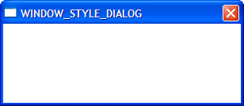
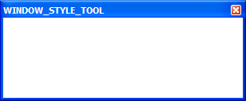
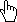
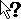
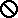
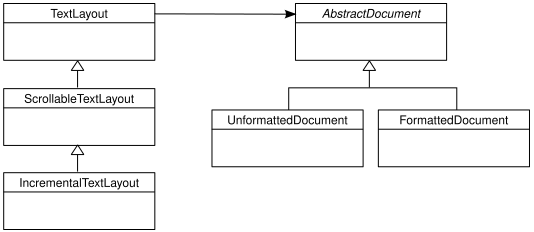

pyglet Documentation
Note
This is the documentation for pyglet version 2.1. If you need a different one use the docs version selector.
pyglet is a cross-platform windowing and multimedia library for Python, intended for developing games and other visually rich applications. It supports windowing, user interface event handling, game controllers and joysticks, OpenGL graphics, loading images and videos, and playing sounds and music. pyglet works on Windows, macOS and Linux.
Some of the features of pyglet are:
No external dependencies or installation requirements. For most application and game requirements, pyglet needs nothing else besides Python, simplifying distribution and installation.
Take advantage of multiple windows and multi-monitor desktops. pyglet allows you to use as many windows as you need, and is fully aware of multi-monitor setups for use with fullscreen games and applications.
Load images, sound, music and video in almost any format. pyglet has built-in support for common audio and image formats, and can optionally use ffmpeg to load almost any other compressed audio or video files.
pyglet is provided under the BSD open-source license, allowing you to use it for both commercial and other open-source projects with very little restriction.
Please join the conversation on our Discord server.!
If this is your first time reading about pyglet, we suggest you start at Writing a pyglet application. If you are migrating from an older version of pyglet, please read through Migrating from pyglet 2.0.
Installation
pyglet is a pure Python library, with no hard dependencies on other modules. No special steps or compilation are required for installation. You can install from on PyPI via pip. For example:
pip install --upgrade --user pyglet
You can also clone the repository using git and install from source:
git clone https://github.com/pyglet/pyglet.git
cd pyglet
python setup.py install --user
In addition, since pyglet is pure Python, you can also just copy the pyglet subfolder directly into the root of your project without installation into your local site-packages.
To play video, or a wide selection of compressed audio, pyglet can optionally use FFmpeg.
Running the examples
The source code archives include examples. Archive zip files are available on Github:
unzip pyglet-x.x.x.zip
cd pyglet-x.x.x
python examples/hello_world.py
As mentioned above, you can also clone the repository using Git:
git clone https://github.com/pyglet/pyglet.git
cd pyglet
python examples/hello_world.py
Writing a pyglet application
Getting started with a new library or framework can be daunting, especially when presented with a large amount of reference material to read. This chapter gives a very quick introduction to pyglet without going into too much detail.
Note
If you intend to use OpenGL ES with pyglet on devices like the Raspberry Pi, please read the OpenGL ES section first.
Hello, World
We’ll begin with the requisite “Hello, World” introduction. This program will open a window with some text in it, and wait to be closed. You can find the entire program in the examples/programming_guide/hello_world.py file.
Begin by importing the pyglet package:
import pyglet
Create a pyglet.window.Window by calling its default constructor.
The window will be visible as soon as it’s created, and will have reasonable
default values for all its parameters:
window = pyglet.window.Window()
To display the text, we’ll create a Label. Keyword
arguments are used to set the font, position and anchorage of the label:
label = pyglet.text.Label('Hello, world',
font_name='Times New Roman',
font_size=36,
x=window.width//2, y=window.height//2,
anchor_x='center', anchor_y='center')
The Window dispatches an on_draw() event whenever
it’s ready to redraw its contents. pyglet provides several ways to attach event
handlers to objects; a simple way is to use a decorator:
@window.event
def on_draw():
window.clear()
label.draw()
Within the above on_draw() handler, the window is
cleared to the default background color (black), and the label is drawn.
Finally, call:
pyglet.app.run()
This will enter pyglet’s default event loop, and let pyglet respond to
application events such as the mouse and keyboard.
Your event handlers will now be called as required, and the
run() method will return only when all application
windows have been closed.
If you are coming from another library, you may be used to writing your own event loop. This is possible to do with pyglet as well, but it is generally not necessary; see The application event loop for details.
Image viewer
Most games and applications will need to load and display images on the screen. In this example we’ll load an image from the application’s directory and display it within the window:
import pyglet
window = pyglet.window.Window()
image = pyglet.resource.image('kitten.jpg')
@window.event
def on_draw():
window.clear()
image.blit(0, 0)
pyglet.app.run()
We used the image() function of pyglet.resource
to load the image, which automatically locates the file relative to the source
file (rather than the working directory). To load an image not bundled with
the application (for example, specified on the command line), you would use
pyglet.image.load().
The blit() method draws the image. The
arguments (0, 0) tell pyglet to draw the image at pixel coordinates 0,
0 in the window (the lower-left corner).
The complete code for this example is located in examples/programming_guide/image_viewer.py.
Handling mouse and keyboard events
So far the only event used is the on_draw()
event. To react to keyboard and mouse events, it’s necessary to write and
attach event handlers for these events as well:
import pyglet
window = pyglet.window.Window()
@window.event
def on_key_press(symbol, modifiers):
print('A key was pressed')
@window.event
def on_draw():
window.clear()
pyglet.app.run()
Keyboard events have two parameters: the virtual key symbol that was
pressed, and a bitwise combination of any modifiers that are present (for
example, the CTRL and SHIFT keys).
The key symbols are defined in pyglet.window.key:
from pyglet.window import key
@window.event
def on_key_press(symbol, modifiers):
if symbol == key.A:
print('The "A" key was pressed.')
elif symbol == key.LEFT:
print('The left arrow key was pressed.')
elif symbol == key.ENTER:
print('The enter key was pressed.')
See the pyglet.window.key documentation for a complete list
of key symbols.
Mouse events are handled in a similar way:
from pyglet.window import mouse
@window.event
def on_mouse_press(x, y, button, modifiers):
if button == mouse.LEFT:
print('The left mouse button was pressed.')
The x and y parameters give the position of the mouse when the button
was pressed, relative to the lower-left corner of the window.
There are more than 20 event types that you can handle on a window. An easy way to find the event names and parameters you need is to add the following lines to your program:
event_logger = pyglet.window.event.WindowEventLogger()
window.push_handlers(event_logger)
This will cause all events received on the window to be printed to the console.
An example program using keyboard and mouse events is in examples/programming_guide/events.py
Playing sounds and music
pyglet makes it easy to play and mix multiple sounds together. The following example plays an MP3 file [1]:
import pyglet
music = pyglet.resource.media('music.mp3')
music.play()
pyglet.app.run()
As with the image loading example presented earlier,
media() locates the sound file in the application’s
directory (not the working directory). If you know the actual filesystem path
(either relative or absolute), use pyglet.media.load().
By default, audio is streamed when playing. This works well for longer music
tracks. Short sounds, such as a gunfire shot used in a game, should instead be
fully decoded in memory before they are used. This allows them to play more
immediately and incur less of a CPU performance penalty. It also allows playing
the same sound repeatedly without reloading it.
Specify streaming=False in this case:
sound = pyglet.resource.media('shot.wav', streaming=False)
sound.play()
The examples/media/media_player.py example demonstrates playback of streaming audio and video using pyglet. The examples/media/noisy/noisy.py example demonstrates playing many short audio samples simultaneously, as in a game.
Where to next?
The examples above have shown you how to display something on the screen, and perform a few basic tasks. You’re probably left with a lot of questions about these examples, but don’t worry. The remainder of this programming guide goes into greater technical detail on many of pyglet’s features. If you’re an experienced developer, you can probably dive right into the sections that interest you.
For new users, it might be daunting to read through everything all at once. If you feel overwhelmed, we recommend browsing through the beginnings of each chapter, and then having a look at a more in-depth example project. You can find an example of a 2D game in the In-depth game example section.
To write advanced 3D applications or achieve optimal performance in your 2D applications, you can also work with OpenGL directly. pyglet provides raw OpenGL bindings which give you direct access to the OpenGL libraries, which does require knowledge of ctypes to use effectively. To simplify things a bit, the graphics module provides higher level objects for the most common OpenGL constructs. The Shaders and Rendering section goes into more detail.
There are numerous examples of pyglet applications in the examples/
directory of the documentation. If you get
stuck, or have any questions, join us on the Discord server!
Windowing
A Window in pyglet corresponds to a top-level
window as provided by the operating system. Windows can be floating (with or
without a border), or fullscreen.
Creating a window
If the Window constructor is called with no
arguments, defaults will be assumed for all parameters:
window = pyglet.window.Window()
The default parameters used are:
The window will have a size of 960x540, and not be resizable.
A default context will be created using template config described in OpenGL configuration options.
The window caption will be the name of the executing Python script (i.e.,
sys.argv[0]).
Windows are visible as soon as they are created, unless you give the
visible=False argument to the constructor. The following
example shows how to create and display a window in two steps:
window = pyglet.window.Window(visible=False)
# ... perform some additional initialisation
window.set_visible()
OpenGL Context configuration
The context of a window cannot be changed once created. There are several ways to control the context that is created:
Supply an already-created
Contextusing thecontextargument:context = config.create_context(share) window = pyglet.window.Window(context=context)
Supply a complete
Configobtained from aScreenusing theconfigargument. The context will be created from this config and will share object space with the most recently created existing context:display = pyglet.display.get_display() screen = display.get_default_screen() config = screen.get_best_config(template) window = pyglet.window.Window(config=config)
Supply a template
Configusing theconfigargument. The context will use the best config obtained from the default screen of the default display:config = gl.Config(double_buffer=True) window = pyglet.window.Window(config=config)
Specify a
Screenusing thescreenargument. The context will use a config created from default template configuration and this screen:display = pyglet.display.get_display() screen = display.get_screens()[screen_number] window = pyglet.window.Window(screen=screen)
Specify a
Displayusing thedisplayargument. The default screen on this display will be used to obtain a context using the default template configuration:display = platform.get_display(display_name) window = pyglet.window.Window(display=display)
If a template Config is given, a
Screen or Display
may also be specified; however any other combination of parameters
overconstrains the configuration and some parameters will be ignored.
Fullscreen windows
If the fullscreen=True argument is given to the window constructor, the
window will draw to an entire screen rather than a floating window. No window
border or controls will be shown, so you must ensure you provide some other
means to exit the application.
By default, the default screen on the default display will be used, however you can optionally specify another screen to use instead. For example, the following code creates a fullscreen window on the secondary screen:
screens = display.get_screens()
window = pyglet.window.Window(fullscreen=True, screen=screens[1])
There is no way to create a fullscreen window that spans more than one window (for example, if you wanted to create an immersive 3D environment across multiple monitors). Instead, you should create a separate fullscreen window for each screen and attach identical event handlers to all windows.
Windows can be toggled in and out of fullscreen mode with the
set_fullscreen()
method. For example, to return to windowed mode from fullscreen:
window.set_fullscreen(False)
The previous window size and location, if any, will attempt to be restored, however the operating system does not always permit this, and the window may have relocated.
Size and position
This section applies only to windows that are not fullscreen. Fullscreen windows always have the width and height of the screen they fill.
You can specify the size of a window as the first two arguments to the window constructor. In the following example, a window is created with a width of 1280 pixels and a height of 720 pixels:
window = pyglet.window.Window(1280, 720)
The “size” of a window refers to the drawable space within it, excluding any additional borders or title bar drawn by the operating system.
You can allow the user to resize your window by specifying resizable=True
in the constructor. If you do this, you may also want to handle the
on_resize() event:
window = pyglet.window.Window(resizable=True)
@window.event
def on_resize(width, height):
print(f'The window was resized to {width},{height}')
You can specify a minimum and maximum size that the window can be resized to
by the user with the set_minimum_size() and
set_maximum_size() methods:
window.set_minimum_size(320, 200)
window.set_maximum_size(1024, 768)
The window can also be resized programatically (even if the window is not
user-resizable) with the set_size() method:
window.set_size(1280, 720)
The window will initially be positioned by the operating system. Typically,
it will use its own algorithm to locate the window in a place that does not
block other application windows, or cascades with them. You can manually
adjust the position of the window using the
get_location() and
set_location() methods:
x, y = window.get_location()
window.set_location(x + 20, y + 20)
Note that unlike the usual coordinate system in pyglet, the window location is relative to the top-left corner of the desktop, as shown in the following diagram:

The position and size of the window relative to the desktop.
Appearance
Window style
Non-fullscreen windows can be created in one of six styles: default, dialog, tool, borderless, transparent, or overlay. Transparent and overlay windows are only implemented for Windows, not Mac OS X. Examples of the appearances of each of these styles under Windows and Mac OS X 13.2 are shown below.
Style
Windows
Mac OS X
  <Image Not Available>
<Not Implemented>

<Not Implemented>
Non-resizable variants of these window styles may appear slightly different (for example, the maximize button will either be disabled or absent).
Besides the change in appearance, the window styles affect how the window behaves. For example, tool windows do not usually appear in the task bar and cannot receive keyboard focus. Dialog windows cannot be minimized. Overlay’s require custom sizing and moving of the respective window. the appropriate window style for your windows means your application will behave correctly for the platform on which it is running, however that behaviour may not be consistent across Windows, Linux and Mac OS X.
The appearance and behaviour of windows in Linux will vary greatly depending on the distribution, window manager and user preferences.
Borderless windows (WINDOW_STYLE_BORDERLESS)
are not decorated by the operating system at all, and have no way to be resized
or moved around the desktop. These are useful for implementing splash screens
or custom window borders.
You can specify the style of the window in the
Window constructor.
Once created, the window style cannot be altered:
window = pyglet.window.Window(style=pyglet.window.Window.WINDOW_STYLE_DIALOG)
Caption
The window’s caption appears in its title bar and task bar icon (on Windows
and some Linux window managers). You can set the caption during window
creation or at any later time using the
set_caption() method:
window = pyglet.window.Window(caption='Initial caption')
window.set_caption('A different caption')
Icon
The window icon appears in the title bar and task bar icon on Windows and Linux, and in the dock icon on Mac OS X. Dialog and tool windows do not necessarily show their icon.
Windows, Mac OS X and the Linux window managers each have their own preferred icon sizes:
- Windows XP
A 16x16 icon for the title bar and task bar.
A 32x32 icon for the Alt+Tab switcher.
- Mac OS X
Any number of icons of resolutions 16x16, 24x24, 32x32, 48x48, 72x72 and 128x128. The actual image displayed will be interpolated to the correct size from those provided.
- Linux
No constraints, however most window managers will use a 16x16 and a 32x32 icon in the same way as Windows XP.
The set_icon() method allows you to set any
number of images as the icon.
pyglet will select the most appropriate ones to use and apply them to
the window. If an alternate size is required but not provided, pyglet will
scale the image to the correct size using a simple interpolation algorithm.
The following example provides both a 16x16 and a 32x32 image as the window icon:
window = pyglet.window.Window()
icon1 = pyglet.image.load('16x16.png')
icon2 = pyglet.image.load('32x32.png')
window.set_icon(icon1, icon2)
You can use images in any format supported by pyglet, however it is recommended to use a format that supports alpha transparency such as PNG. Windows .ico files are supported only on Windows, so their use is discouraged. Mac OS X .icons files are not supported at all.
Note that the icon that you set at runtime need not have anything to do with the application icon, which must be encoded specially in the application binary (see Self-contained executables).
Visibility
Windows have several states of visibility. Already shown is the
visible property which shows or hides
the window.
Windows can be minimized, which is equivalent to hiding them except that
they still appear on the taskbar (or are minimised to the dock, on OS X).
The user can minimize a window by clicking the appropriate button in the
title bar.
You can also programmatically minimize a window using the
minimize method (there is also a
corresponding maximize method).
When a window is made visible the on_show()
event is triggered. When it is hidden the
on_hide() event is triggered.
On Windows and Linux these events
will only occur when you manually change the visibility of the window or when
the window is minimized or restored. On Mac OS X the user can also hide or
show the window (affecting visibility) using the Command+H shortcut.
Subclassing Window
A useful pattern in pyglet is to subclass Window for
each type of window you will display, or as your main application class. There
are several benefits:
You can load font and other resources from the constructor, ensuring the OpenGL context has already been created.
You can add event handlers simply by defining them on the class. The
on_resize()event will be called as soon as the window is created (this doesn’t usually happen, as you must create the window before you can attach event handlers).There is reduced need for global variables, as you can maintain application state on the window.
The following example shows the same “Hello World” application as presented
in Writing a pyglet application, using a subclass of Window:
class HelloWorldWindow(pyglet.window.Window):
def __init__(self):
super().__init__()
self.label = pyglet.text.Label('Hello, world!')
def on_draw(self):
self.clear()
self.label.draw()
if __name__ == '__main__':
window = HelloWorldWindow()
pyglet.app.run()
This example program is located in
examples/programming_guide/window_subclass.py.
Windows and OpenGL contexts
Every window in pyglet has an associated OpenGL context. Specifying the configuration of this context has already been covered in Creating a window. Drawing into the OpenGL context is the only way to draw into the window’s client area.
Double-buffering
If the window is double-buffered (i.e., the configuration specified
double_buffer=True, the default), OpenGL commands are applied to a hidden
back buffer. This back buffer can be brought to the front using the flip
method. The previous front buffer then becomes the hidden back buffer
we render to in the next frame. If you are using the standard pyglet.app.run
or pyglet.app.EventLoop event loop, this is taken care of
automatically after each on_draw() event.
If the window is not double-buffered, the
flip() operation is unnecessary,
and you should remember only to call pyglet.gl.glFlush() to
ensure buffered commands are executed.
Vertical retrace synchronisation
Double-buffering eliminates one cause of flickering: the user is unable to see the image as it is painted, only the final rendering. However, it does introduce another source of flicker known as “tearing”.
Tearing becomes apparent when displaying fast-moving objects in an animation. The buffer flip occurs while the video display is still reading data from the framebuffer, causing the top half of the display to show the previous frame while the bottom half shows the updated frame. If you are updating the framebuffer particularly quickly you may notice three or more such “tears” in the display.
pyglet provides a way to avoid tearing by synchronising buffer flips to the
video refresh rate. This is enabled by default, but can be set or unset
manually at any time with the vsync (vertical
retrace synchronisation)
property. A window is created with vsync initially disabled in the following
example:
window = pyglet.window.Window(vsync=False)
It is usually desirable to leave vsync enabled, as it results in flicker-free animation. There are some use-cases where you may want to disable it, for example:
Profiling an application. Measuring the time taken to perform an operation will be affected by the time spent waiting for the video device to refresh, which can throw off results. You should disable vsync if you are measuring the performance of your application.
If you cannot afford for your application to block. If your application run loop needs to quickly poll a hardware device, for example, you may want to avoid blocking with vsync.
Keyboard input
pyglet provides multiple types of keyboard input abstraction:
Cross-platform key press/release events suitable for game controls
Unicode text entry with automatic locale and platform handling
Cross-platform detection of common text editing actions
All of them have the following restrictions:
There must be at least one pyglet
Windowinstance which can hold keyboard focusWindows created with the following styles cannot hold keyboard focus:
If your project’s requirements fall outside these restrictions, you should consider alternatives. Examples include:
Keyboard Focus Conventions
Keyboard focus is where the user’s keyboard input is sent.
Desktop operating systems often follow these conventions:
Only one window can have focus
Clicking a window gives it focus
The window with focus is displayed above all others
The window with focus has a distinct title bar style
Windows can have focus taken away
Windows can request focus
However, the items above are not guaranteed to be true.
For example, pyglet allows you to request focus from the OS by calling
Window.activate. However,
the OS may not support the feature. Even if it does support it, the OS
may not only refuse, but do so without notifying the user focus was
requested.
Deviations from the conventions can occur for any of the following reasons:
Cause |
Example(s) |
|---|---|
Modal dialogs |
Permission requests and error notifications |
User settings |
Window focus is set to follow the mouse |
Platform quirks |
Split screen utilities and Linux window managers with multi-focus modes |
Keyboard events
The on_key_press() and
on_key_release() events are fired when
any key on the keyboard is pressed or released, respectively. These events
are not affected by “key repeat” – once a key is pressed there are no more
events for that key until it is released.
Both events are parameterised by the same arguments:
def on_key_press(symbol, modifiers):
pass
def on_key_release(symbol, modifiers):
pass
Defined key symbols
The symbol argument is an integer that represents a “virtual” key code. It does not correspond to any particular numbering scheme; in particular the symbol is not an ASCII character code.
pyglet has key symbols that are hardware and platform independent
for many types of keyboard. These are defined in
pyglet.window.key as constants. For example, the Latin-1
alphabet is simply the letter itself:
key.A
key.B
key.C
...
The numeric keys have an underscore to make them valid identifiers:
key._1
key._2
key._3
...
Various control and directional keys are identified by name:
key.ENTER or key.RETURN
key.SPACE
key.BACKSPACE
key.DELETE
key.MINUS
key.EQUAL
key.BACKSLASH
key.LEFT
key.RIGHT
key.UP
key.DOWN
key.HOME
key.END
key.PAGEUP
key.PAGEDOWN
key.F1
key.F2
...
Keys on the number pad have separate symbols:
key.NUM_1
key.NUM_2
...
key.NUM_EQUAL
key.NUM_DIVIDE
key.NUM_MULTIPLY
key.NUM_SUBTRACT
key.NUM_ADD
key.NUM_DECIMAL
key.NUM_ENTER
Some modifier keys have separate symbols for their left and right sides (however they cannot all be distinguished on all platforms, including Mac OSX):
key.LCTRL
key.RCTRL
key.LSHIFT
key.RSHIFT
...
Key symbols are independent of any modifiers being active. For example, lower-case and upper-case letters both generate the A symbol. This is also true of the number keypad.
Modifiers
The modifiers that are active when the event is generated are combined in a
bitwise fashion and provided in the modifiers parameter. The modifier
constants defined in pyglet.window.key are:
MOD_SHIFT
MOD_CTRL
MOD_ALT Not available on Mac OS X
MOD_WINDOWS Available on Windows only
MOD_COMMAND Available on Mac OS X only
MOD_OPTION Available on Mac OS X only
MOD_CAPSLOCK
MOD_NUMLOCK
MOD_SCROLLLOCK
MOD_ACCEL Equivalent to MOD_CTRL, or MOD_COMMAND on Mac OS X.
For example, to test if the shift key is held down:
if modifiers & MOD_SHIFT:
pass
Unlike the corresponding key symbols, it is not possible to determine whether the left or right modifier is held down (though you could emulate this behaviour by keeping track of the key states yourself).
User-defined key symbols
pyglet does not define key symbols for every keyboard ever made. For example, non-Latin languages will have many keys not recognised by pyglet (however, their Unicode representations will still be valid, see Text Input and Motion Events). Even English keyboards often have additional so-called “OEM” keys added by the manufacturer, which might be labelled “Media”, “Volume” or “Shopping”, for example.
In these cases pyglet will create a key symbol at runtime based on the hardware scancode of the key. This is guaranteed to be unique for that model of keyboard, but may not be consistent across other keyboards with the same labelled key.
The best way to use these keys is to record what the user presses after a prompt, and then check for that same key symbol. Many commercial games have similar functionality in allowing players to set up their own key bindings.
Remembering key state
KeyStateHandler is a convenience class which
stores the current keyboard state. Instances can be pushed onto the event
handler stack of any window and subsequently queried using key code constants
as keys:
from pyglet.window import key
window = pyglet.window.Window()
keys = key.KeyStateHandler()
window.push_handlers(keys)
# Check if the spacebar is currently pressed:
if keys[key.SPACE]:
pass
Text Input and Motion Events
pyglet offers Unicode text input events in addition to individual key events. There are several benefits to this:
Automatic and correct mapping of platform-specific modifiers and key symbols to Unicode characters
Key repeat for held keys is automatically applied to text input according to the user’s operating system preferences.
Dead keys and compose keys are automatically interpreted to produce diacritic marks or combining characters.
Keyboard input can be routed via an input palette, for example to input characters from Asian languages.
Text input can come from other user-defined sources, such as handwriting or voice recognition.
The actual source of input (i.e., which keys were pressed, or what input method was used) should be considered outside of the scope of the application – the operating system provides the necessary services.
When text is entered into a window, the
on_text() event is fired:
def on_text(text):
pass
The only parameter provided is a Unicode string. Although this will usually be one character long for direct keyboard input, more complex input methods such as an input palettes may provide entire words or phrases at once.
How does this differ from on_key_press()?
Always use the
on_text()event when you need a string from a series of keystrokesNever use the
on_text()event when you need individual presses, such as controlling player movement in a game
Motion events
In addition to key presses and entering new text, pyglet also supports common text editing motions:
Selecting text
Moving the caret in response to non-character keys
Deleting, copying, and pasting text
pyglet automatically detects and translates platform-specific versions of
supported motions into cross-platform
on_text_motion() events. These events are
intended be handled by the Caret
of any active IncrementalTextLayout, such
as those used in TextEntry fields.
The motion argument to the event handler will be a constant value
defined in pyglet.window.key. The table below lists the
supported text motions with their keyboard mapping on each supported
platform.
Constant
Behaviour
Windows/Linux
Mac OS X
MOTION_UPMove the cursor up
Up
Up
MOTION_DOWNMove the cursor down
Down
Down
MOTION_LEFTMove the cursor left
Left
Left
MOTION_RIGHTMove the cursor right
Right
Right
MOTION_COPYCopy the current selection to the clipboard
Ctrl + C
Command + C
MOTION_PASTEPaste the clipboard contents into the current document
Ctrl + V
Command + V
MOTION_PREVIOUS_WORDMove the cursor to the previous word
Ctrl + Left
Option + Left
MOTION_NEXT_WORDMove the cursor to the next word
Ctrl + Right
Option + Right
MOTION_BEGINNING_OF_LINEMove the cursor to the beginning of the current line
Home
Command + Left
MOTION_END_OF_LINEMove the cursor to the end of the current line
End
Command + Right
MOTION_PREVIOUS_PAGEMove to the previous page
Page Up
Page Up
MOTION_NEXT_PAGEMove to the next page
Page Down
Page Down
MOTION_BEGINNING_OF_FILEMove to the beginning of the document
Ctrl + Home
Home
MOTION_END_OF_FILEMove to the end of the document
Ctrl + End
End
MOTION_BACKSPACEDelete the previous character
Backspace
Backspace
MOTION_DELETEDelete the next character, or the current character
Delete
Delete
If you believe pyglet needs to add support for a motion which is currently missing, please skip to Adding New Motions.
Customizing this behavior for an individual project is currently
difficult due to the way carets and text entry fields are interconnected.
However, using on_key_press() to handle
motion events should still be avoided for the following reasons:
Supported platforms can assign a key to different motions. For example the Home key moves the cursor to the start of a line on Windows, but to the beginning of a document on Mac OS.
Users expect holding down a motion’s keys to repeat it released. For example, holding Backspace deletes multiple characters. However, only one
on_key_press()event occurs per keypress.
Adding New Motions
Before adding a new motion, please do the following:
Consult the previous section & each platform’s documentation to be sure it is:
A common text operation present on every platform
Not already implemented by pyglet
Attempt to find the corresponding functionality in Apple’s NSTextView documentation
Discuss the addition and any remaining questions with maintainers by either:
Then, once you’re ready:
Add the motion constant to
pyglet.window.keyAdd an entry for the constant in the Motion events section
Implement shared handling behavior in
on_text_motion()Implement Mac support (usually the most confusing step)
Implement a corresponding handler method on
PygletTextView_Implementation(pyglet’s subclass ofNSTextView)
Add the Windows keyboard shortcut
Add the keyboard shortcut to the
_motion_mapdictionary
Add the Linux keyboard shortcut
Add the keyboard shortcut to the
_motion_mapdictionary
Be sure to test your changes before making a PR if possible!
If you do not have access to a specific platform above, include this in your PR’s notes.
Keyboard exclusivity
Some keystrokes or key combinations normally bypass applications and are handled by the operating system. Some examples are Alt+Tab (Command+Tab on Mac OS X) to switch applications and the keys mapped to Expose on Mac OS X.
You can disable these hot keys and have them behave as ordinary keystrokes for your application. This can be useful if you are developing a kiosk application which should not be closed, or a game in which it is possible for a user to accidentally press one of these keys.
To enable this mode, call
Window.set_exclusive_keyboard
on the window it should apply to. On Mac OS X, the dock and menu bar
will slide out of view while exclusive keyboard is activated.
The following restrictions apply on Windows:
Only Alt+Tab can be disabled
Users will still be able to switch applications through:
Ctrl+Escape
Alt+Escape
the Windows key
Ctrl+Alt+Delete
The following restrictions apply on Mac OS X:
The power key is not disabled.
Use of this function is not recommended for general release applications or games as it violates user-interface conventions.
Mouse input
All pyglet windows can receive input from a 3 button mouse with a 2 dimensional scroll wheel. The mouse pointer is typically drawn by the operating system, but you can override this and request either a different cursor shape or provide your own image or animation.
Mouse events
All mouse events are dispatched by the window which receives the event from the operating system. Typically this is the window over which the mouse cursor is, however mouse exclusivity and drag operations mean this is not always the case.
The coordinate space for the mouse pointer’s location is relative to the bottom-left corner of the window, with increasing Y values approaching the top of the screen (note that this is “upside-down” compared with many other windowing toolkits, but is consistent with the default OpenGL projection in pyglet).
The coordinate space for the mouse pointer.
The most basic mouse event is on_mouse_motion()
which is dispatched every time the mouse moves:
def on_mouse_motion(x, y, dx, dy):
pass
The x and y parameters give the coordinates of the mouse pointer, relative to the bottom-left corner of the window.
The event is dispatched every time the operating system registers a mouse
movement. This is not necessarily once for every pixel moved – the operating
system typically samples the mouse at a fixed frequency, and it is easy to
move the mouse faster than this. Conversely, if your application is not
processing events fast enough you may find that several queued-up mouse events
are dispatched in a single dispatch_events()
call. There is no need to concern yourself with either of these issues;
the latter rarely causes problems, and the former can not be avoided.
Many games are not concerned with the actual position of the mouse cursor, and only need to know in which direction the mouse has moved. For example, the mouse in a first-person game typically controls the direction the player looks, but the mouse pointer itself is not displayed.
The dx and dy parameters are for this purpose: they give the distance the mouse travelled along each axis to get to its present position. This can be computed naively by storing the previous x and y parameters after every mouse event, but besides being tiresome to code, it does not take into account the effects of other obscuring windows. It is best to use the dx and dy parameters instead.
The following events are dispatched by the Window when a mouse button is pressed or released, or the mouse is moved while any button is held down:
def on_mouse_press(x, y, button, modifiers):
pass
def on_mouse_release(x, y, button, modifiers):
pass
def on_mouse_drag(x, y, dx, dy, buttons, modifiers):
pass
The x, y, dx and dy parameters are as for the
on_mouse_motion() event.
The press and release events do not require dx and dy parameters as they
would be zero in this case. The modifiers parameter is as for the keyboard
events, see Keyboard input.
The button parameter signifies which mouse button was pressed, and is one of the following constants:
pyglet.window.mouse.LEFT
pyglet.window.mouse.MIDDLE
pyglet.window.mouse.RIGHT
The buttons parameter in on_mouse_drag()
is a bitwise combination of all the mouse buttons currently held down.
For example, to test if the user is performing a drag gesture with the
left button:
from pyglet.window import mouse
def on_mouse_drag(x, y, dx, dy, buttons, modifiers):
if buttons & mouse.LEFT:
pass
When the user begins a drag operation (i.e., pressing and holding a mouse
button and then moving the mouse), the window in which they began the drag
will continue to receive the on_mouse_drag()
event as long as the button is held down.
This is true even if the mouse leaves the window.
You generally do not need to handle this specially: it is a convention
among all operating systems that dragging is a gesture rather than a direct
manipulation of the user interface widget.
There are events for when the mouse enters or leaves a window:
def on_mouse_enter(x, y):
pass
def on_mouse_leave(x, y):
pass
The coordinates for on_mouse_leave() will
lie outside of your window. These events are not dispatched while a drag
operation is taking place.
The mouse scroll wheel generates the
on_mouse_scroll() event:
def on_mouse_scroll(x, y, scroll_x, scroll_y):
pass
The scroll_y parameter gives the number of “clicks” the wheel moved, with positive numbers indicating the wheel was pushed forward. The scroll_x parameter is 0 for most mice, however some new mice such as the Apple Mighty Mouse use a ball instead of a wheel; the scroll_x parameter gives the horizontal movement in this case. The scale of these numbers is not known; it is typically set by the user in their operating system preferences.
Changing the mouse cursor
The mouse cursor can be set to one of the operating system cursors, a custom
image, or hidden completely. The change to the cursor will be applicable only
to the window you make the change to. To hide the mouse cursor, call
set_mouse_visible():
win = pyglet.window.Window()
win.set_mouse_visible(False)
This can be useful if the mouse would obscure text that the user is typing. If you are hiding the mouse cursor for use in a game environment, consider making the mouse exclusive instead; see Mouse exclusivity, below.
Use set_mouse_cursor() to change the appearance
of the mouse cursor. A mouse cursor is an instance of
MouseCursor. You can obtain the operating
system-defined cursors with
get_system_mouse_cursor():
cursor = win.get_system_mouse_cursor(win.CURSOR_HELP)
win.set_mouse_cursor(cursor)
The cursors that pyglet defines are listed below, along with their typical appearance on Windows and Mac OS X. The pointer image on Linux is dependent on the window manager.
Constant
Windows XP
Mac OS X
CURSOR_DEFAULT

CURSOR_CROSSHAIR
CURSOR_HAND
 
CURSOR_HELP
 CURSOR_NO
 CURSOR_SIZE
CURSOR_SIZE_DOWN

CURSOR_SIZE_DOWN_LEFT
CURSOR_SIZE_DOWN_RIGHT

CURSOR_SIZE_LEFT


CURSOR_SIZE_LEFT_RIGHT
CURSOR_SIZE_RIGHT
CURSOR_SIZE_UP

CURSOR_SIZE_UP_DOWN
CURSOR_SIZE_UP_LEFT
CURSOR_SIZE_UP_RIGHT
CURSOR_TEXT

CURSOR_WAIT

CURSOR_WAIT_ARROW

Alternatively, you can use your own image as the mouse cursor. Use
pyglet.image.load() to load the image, then create an
ImageMouseCursor with
the image and “hot-spot” of the cursor. The hot-spot is the point of the
image that corresponds to the actual pointer location on screen, for example,
the point of the arrow:
image = pyglet.image.load('cursor.png')
cursor = pyglet.window.ImageMouseCursor(image, 16, 8)
win.set_mouse_cursor(cursor)
You can even render a mouse cursor directly with OpenGL. You could draw a
3-dimensional cursor, or a particle trail, for example. To do this, subclass
MouseCursor and implement your own draw method.
The draw method will be called with the default pyglet window projection,
even if you are using another projection in the rest of your application.
Mouse exclusivity
It is possible to take complete control of the mouse for your own application, preventing it being used to activate other applications. This is most useful for immersive games such as first-person shooters.
When you enable mouse-exclusive mode, the mouse cursor is no longer available. It is not merely hidden – no amount of mouse movement will make it leave your application. Because there is no longer a mouse cursor, the x and y parameters of the mouse events are meaningless; you should use only the dx and dy parameters to determine how the mouse was moved.
Activate mouse exclusive mode with
set_exclusive_mouse():
win = pyglet.window.Window()
win.set_exclusive_mouse(True)
You should activate mouse exclusive mode even if your window is full-screen: it will prevent the window “hitting” the edges of the screen, and behave correctly in multi-monitor setups (a common problem with commercial full-screen games is that the mouse is only hidden, meaning it can accidentally travel onto the other monitor where applications are still visible).
Note that on Linux setting exclusive mouse also disables Alt+Tab and other hotkeys for switching applications. No workaround for this has yet been discovered.
Controller & Joystick input
The input module allows you to accept input from USB or Bluetooth
human interface devices (HID). High-level classes are provided for working with
game controllers, joysticks, and the Apple Remote, with named and normalized inputs.
Basic support is also provided for Drawing Tablets, such as those made by Wacom.
The game controller abstraction is most suitable for modern dual-analog stick controllers, such as those from video game consoles. The joystick abstraction is more generalized, and suits devices with an arbitrary number of buttons, absolute or relative axis, and hats. This includes devices like flight sticks, steering wheels, and just about anything else with digital and/or analog inputs. For most types of games, the game controller abstraction is recommended.
For advanced use cases, it is also possible to access the low-level input devices directly. This can be useful if you need direct accesss to the raw inputs, without normalization. For most application and games this is not required.
The input module provides several methods for querying
devices, and a ControllerManager class to support hot-plugging of Controllers:
# get a list of all low-level input devices:
devices = pyglet.input.get_devices()
# get a list of all controllers:
controllers = pyglet.input.get_controllers()
# get a list of all joysticks:
joysticks = pyglet.input.get_joysticks()
# get a list of tablets:
tablets = pyglet.input.get_tablets()
# get an Apple Remote, if available:
remote = pyglet.input.get_apple_remote()
# create a ControllerManager instance:
controller_manager = pyglet.input.ControllerManager()
Using Controllers
Controllers have a strictly defined set of inputs that mimic the layout of modern dual-analog stick video game console Controllers. This includes two analog sticks, analog triggers, a directional pad (dpad), face and shoulder buttons, and start/back/guide and stick press buttons. Many controllers also include the ability to play rumble effects (vibration). The following platform interfaces are used for Controller support:
platform
interface
notes
Linux
evdev
Windows
DirectInput & Xinput
rumble not implemented on DirectInput
MacOSX
IOKit
rumble not yet implemented
Before using a controller, you must find it and open it. You can either list and open Controllers manually, or use a ControllerManager. A ControllerManager provides useful events for easily handling hot-plugging of Controllers, which is described in a following section. First, however, lets look at how to do this manually. To get a list of all controllers currently connected to your computer, call pyglet.input.get_controllers():
controllers = pyglet.input.get_controllers()
Then choose a controller from the list and call Controller.open() to open it:
if controllers:
controller = controllers[0]
controller.open()
Once opened, you you can start receiving data from the the inputs.
A variety of analog and digital Control types
are defined, which are automatically normalized to consistent ranges. The
following analog controls are available:
name
type
range
leftx
float
-1~1
lefty
float
-1~1
rightx
float
-1~1
righty
float
-1~1
dpadx
float
-1~1
dpady
float
-1~1
lefttrigger
float
0~1
righttrigger
float
0~1
The following digital controls are available:
Name
notes
a
the “south” face button
b
the “east” face button
x
the “west” face button
y
the “north” face button
leftshoulder
rightshoulder
start
called “options” on some controllers
back
called “select” or “share” on some controllers
guide
usually in the center, with a company logo
leftstick
pressing in on the left analog stick
rightstick
pressing in on the right analog stick
These values can be read in two ways. First, you can just query them manually in your game loop. All control names listed above are properties on the controller instance:
# controller_instance.a (boolean)
# controller_instance.leftx (float)
if controller_instance.a == True:
# do something
Alternatively, since controllers are a subclass of EventDispatcher,
events will be dispatched when any of the values change. This is usually the
recommended way to handle input, since it reduces the chance of “missed” button
presses due to slow polling. The different controls are grouped into the following
event types:
Event
Arguments
types
on_button_press
controller, button_name
Controller, stron_button_release
controller, button_name
Controller, stron_stick_motion
controller, stick_name, vector
Controller, str,Vec2on_dpad_motion
controller, left, right, up, down
on_trigger_motion
controller, trigger_name, value
Controller, str, float
Analog (and Dpad) events can be handled like this:
@controller.event
def on_stick_motion(controller, name, vector):
if name == "leftstick":
# Do something with the 2D vector
elif name == "rightstick":
# Do something with the 2D vector
@controller.event
def on_trigger_motion(controller, name, value):
if name == "lefttrigger":
# Do something with the value
elif name == "righttrigger":
# Do something with the value
@controller.event
def on_dpad_motion(controller, vector):
# Do something with the 2D vector
Digital events can be handled like this:
@controller.event
def on_button_press(controller, button_name):
if button_name == 'a':
# start firing
elif button_name == 'b':
# do something else
@controller.event
def on_button_release(controller, button_name):
if button_name == 'a':
# stop firing
elif button_name == 'b':
# do something else
Rumble
Many controllers also support playing rumble (vibration) effects. There are both strong and weak effects, which can be played independently:
controller.rumble_play_weak(strength, duration=0.5)
controller.rumble_play_strong(strength, duration=0.5)
The strength parameter should be on a scale of 0-1. Values outside of this range will be clamped. The optional duration parameter is in seconds. The maximum duration can vary from platform to platform, but is usually at least 5 seconds. If you play another effect while an existing effect is still playing, it will replace it. You can also stop playback of a rumble effect at any time:
controller.rumble_stop_weak()
controller.rumble_stop_strong()
ControllerManager
To simplify hot-plugging of Controllers, the ControllerManager
class is available. This class has a get_controllers() method to be used
in place of pyglet.input.get_controllers(). There are also on_connect
and on_disconnect events, which dispatch a Controller instance whenever one
is connected or disconnected. First lets review the basic functionality.
To use a ControllerManager, first create an instance:
manager = pyglet.input.ControllerManager()
You can then query the currently connected controllers from this instance. (An empty list is returned if no controllers are detected):
controllers = manager.get_controllers()
Choose a controller from the list and call Controller.open() to open it:
if controllers:
controller = controllers[0]
controller.open()
To handle controller connections, attach handlers to the following methods:
@manager.event
def on_connect(controller):
print(f"Connected: {controller}")
@manager.event
def on_disconnect(controller):
print(f"Disconnected: {controller}")
Those are the basics, and provide the building blocks necessary to implement
hot-plugging of Controllers in your game. For an example of bringing these
concepts together, have a look at examples/input/controller.py in the
repository.
Note
If you are using a ControllerManager, then you should not use pyglet.input.get_controllers() directly. The results are undefined. Use ControllerManager.get_controllers() instead.
Using Joysticks
Before using a joystick, you must find it and open it. To get a list
of all joystick devices currently connected to your computer, call
pyglet.input.get_joysticks():
joysticks = pyglet.input.get_joysticks()
Then choose a joystick from the list and call Joystick.open to open the device:
if joysticks:
joystick = joysticks[0]
joystick.open()
The current position of the joystick is recorded in its ‘x’ and ‘y’ attributes, both of which are normalized to values within the range of -1 to 1. For the x-axis, x = -1 means the joystick is pushed all the way to the left and x = 1 means the joystick is pushed to the right. For the y-axis, a value of y = -1 means that the joystick is pushed up and a value of y = 1 means that the joystick is pushed down. If other axis exist, they will be labeled z, rx, ry, or rz.
The state of the joystick buttons is contained in the buttons attribute as a list of boolean values. A True value indicates that the corresponding button is being pressed. While buttons may be labeled A, B, X, or Y on the physical joystick, they are simply referred to by their index when accessing the buttons list. There is no easy way to know which button index corresponds to which physical button on the device without testing the particular joystick, so it is a good idea to let users change button assignments.
Each open joystick dispatches events when the joystick changes state.
For buttons, there is the on_joybutton_press()
event which is sent whenever any of the joystick’s buttons are pressed:
def on_joybutton_press(joystick, button):
pass
and the on_joybutton_release() event which is
sent whenever any of the joystick’s buttons are released:
def on_joybutton_release(joystick, button):
pass
The Joystick parameter is the
Joystick instance whose buttons changed state
(useful if you have multiple joysticks connected).
The button parameter signifies which button changed and is simply an
integer value, the index of the corresponding button in the buttons
list.
For most games, it is probably best to examine the current position of
the joystick directly by using the x and y attributes. However if
you want to receive notifications whenever these values change you
should handle the on_joyaxis_motion() event:
def on_joyaxis_motion(joystick, axis, value):
pass
The Joystick parameter again tells you which
joystick device changed. The axis parameter is string such as
“x”, “y”, or “rx” telling you which axis changed value. And value
gives the current normalized value of the axis, ranging between -1 and 1.
If the joystick has a hat switch, you may examine its current value by looking at the hat_x and hat_y attributes. For both, the values are either -1, 0, or 1. Note that hat_y will output 1 in the up position and -1 in the down position, which is the opposite of the y-axis control.
To be notified when the hat switch changes value, handle the
on_joyhat_motion() event:
def on_joyhat_motion(joystick, hat_x, hat_y):
pass
The hat_x and hat_y parameters give the same values as the joystick’s hat_x and hat_y attributes.
A good way to use the joystick event handlers might be to define them within a controller class and then call:
joystick.push_handlers(my_controller)
Please note that you need a running application event loop for the joystick button an axis values to be properly updated. See the The application event loop section for more details on how to start an event loop.
Using the Apple Remote
The Apple Remote is a small infrared remote originally distributed with the iMac. The remote has six buttons, which are accessed with the names left, right, up, down, menu, and select. Additionally when certain buttons are held down, they act as virtual buttons. These are named left_hold, right_hold, menu_hold, and select_hold.
To use the remote, first call get_apple_remote():
remote = pyglet.input.get_apple_remote()
Then open it:
if remote:
remote.open(window, exclusive=True)
The remote is opened in exclusive mode so that while we are using the remote in our program, pressing the buttons does not activate Front Row, or change the volume, etc. on the computer.
The following event handlers tell you when a button on the remote has been either pressed or released:
def on_button_press(button):
pass
def on_button_release(button):
pass
The button parameter indicates which button changed and is a string equal to one of the ten button names defined above: “up”, “down”, “left”, “left_hold”, “right”, “right_hold”, “select”, “select_hold”, “menu”, or “menu_hold”.
To use the remote, you may define code for the event handlers in some controller class and then call:
remote.push_handlers(my_controller)
Low-level Devices
It’s usually easier to use the high-level interfaces but, for specialized hardware, the low-level device can be accessed directly. You can query the list of all devices, and check the name attribute to find the correct device:
for device in pyglet.input.get_devices():
print(device.name)
After identifying the Device you wish to use, you must first open it:
device.open()
Devices contain a list of Control objects.
There are three types of controls: Button,
AbsoluteAxis, and RelativeAxis.
For helping identify individual controls, each control has at least a
name, and optionally a raw_name attribute. Control values can by
queried at any time by checking the Control.value property. In addition,
every control is also a subclass of EventDispatcher,
so you can add handlers to receive changes as well. All Controls dispatch the
on_change event. Buttons also dispatch on_press and on_release events.:
# All controls:
@control.event
def on_change(value):
print("value:", value)
# Buttons:
@control.event
def on_press():
print("button pressed")
@control.event
def on_release():
print("button release")
Images and Sprites
pyglet provides functions for loading and saving images in various formats using native operating system services. If the Pillow library is installed, many additional formats can be supported. pyglet also includes built-in codecs for loading PNG and BMP without external dependencies.
In addition to loading, pyglet also supports the following operations for both OpenGL textures and framebuffers:
converting to pyglet image objects
saving to disk as screenshots
manipulation as image data
converting to
bytesof raw pixel data
For most users, the Sprite class is the best way
to draw an image. One or more instances may draw the same image data with
individually configured values for position, scaling, rotation, and more.
Loading an image
Images can be loaded using the pyglet.image.load() function:
kitten = pyglet.image.load('kitten.png')
If you are distributing your application with included images, consider
using the pyglet.resource module (see Application resources).
Without any additional arguments, pyglet.image.load() will
attempt to load the filename specified using any available image decoder.
This will allow you to load PNG, GIF, JPEG, BMP and DDS files,
and possibly other files as well, depending on your operating system
and additional installed modules (see the next section for details).
If the image cannot be loaded, an
ImageDecodeException will be raised.
You can load an image from any file-like object providing a read method by specifying the file keyword parameter:
kitten_stream = open('kitten.png', 'rb')
kitten = pyglet.image.load('kitten.png', file=kitten_stream)
In this case the filename kitten.png is optional, but gives a hint to
the decoder as to the file type (it is otherwise unused when a file object
is provided).
Displaying images
Image drawing is usually done in the window’s
on_draw() event handler.
It is possible to draw individual images directly, but usually you will
want to create a “sprite” for each appearance of the image on-screen.
Sprites
A Sprite is a full featured class for displaying instances of Images or Animations in the window. Image and Animation instances are mainly concerned with the image data (size, pixels, etc.), wheras Sprites also include additional properties. These include x/y location, scale, rotation, opacity, color tint, visibility, and both horizontal and vertical scaling. Multiple sprites can share the same image; for example, hundreds of bullet sprites might share the same bullet image.
A Sprite is constructed given an image or animation, and can be directly
drawn with the draw() method:
sprite = pyglet.sprite.Sprite(img=image, x=100, y=50)
@window.event
def on_draw():
window.clear()
sprite.draw()
If created with an animation, sprites automatically handle displaying the most up-to-date frame of the animation. The following example uses a scheduled function to gradually move the Sprite across the screen:
def update(dt):
# Move 10 pixels per second
sprite.x += dt * 10
# Call update 60 times a second
pyglet.clock.schedule_interval(update, 1/60.)
If you need to draw many sprites, using a Batch
to draw them all at once is strongly recommended. This is far more efficient
than calling draw() on each of them in a loop:
batch = pyglet.graphics.Batch()
sprites = [pyglet.sprite.Sprite(image, batch=batch),
pyglet.sprite.Sprite(image, batch=batch),
# ... ]
@window.event
def on_draw():
window.clear()
batch.draw()
When sprites are collected into a batch, no guarantee is made about the order
in which they will be drawn. If you need to ensure some sprites are drawn
before others (for example, landscape tiles might be drawn before character
sprites, which might be drawn before some particle effect sprites), use two
or more Group objects to specify the
draw order:
batch = pyglet.graphics.Batch()
background = pyglet.graphics.Group(order=0)
foreground = pyglet.graphics.Group(order=1)
sprites = [pyglet.sprite.Sprite(image, batch=batch, group=background),
pyglet.sprite.Sprite(image, batch=batch, group=background),
pyglet.sprite.Sprite(image, batch=batch, group=foreground),
pyglet.sprite.Sprite(image, batch=batch, group=foreground),
# ...]
@window.event
def on_draw():
window.clear()
batch.draw()
For best performance, you should use as few batches and groups as required. (See the Shaders and Rendering section for more details on batch and group rendering). This will reduce the number of internal and OpenGL operations for drawing each frame.
In addition, try to combine your images into as few textures as possible;
for example, by loading images with pyglet.resource.image()
(see Application resources) or with Texture bins and atlases).
A common pitfall is to use the pyglet.image.load() method to load
a large number of images. This will cause a seperate texture to be created
for each image loaded, resulting in a lot of OpenGL texture binding overhead
for each frame.
Simple image blitting
Drawing images directly is less efficient, but may be adequate for
simple cases. Images can be drawn into a window with the
blit() method:
@window.event
def on_draw():
window.clear()
image.blit(x, y)
The x and y coordinates locate where to draw the anchor point of the
image. For example, to center the image at (x, y):
kitten.anchor_x = kitten.width // 2
kitten.anchor_y = kitten.height // 2
kitten.blit(x, y)
You can also specify an optional z component to the
blit() method.
This has no effect unless you have enabled depth testing. In the following example,
the second image is drawn behind the first, even though it is drawn after it:
from pyglet.gl import *
glEnable(GL_DEPTH_TEST)
kitten.blit(x, y, 0)
kitten.blit(x, y, -0.5)
The default pyglet projection has a depth range of (-8192, 8192) – images drawn with a z value outside this range will not be visible, regardless of whether depth testing is enabled or not. (You can create your own Window projection matrix if you have specific needs).
Images with an alpha channel can be blended with the existing framebuffer. To do this you need to supply OpenGL with a blend equation. The following code fragment implements the most common form of alpha blending, however other techniques are also possible:
from pyglet.gl import *
glEnable(GL_BLEND)
glBlendFunc(GL_SRC_ALPHA, GL_ONE_MINUS_SRC_ALPHA)
You would only need to call the code above once during your program, before you draw any images (this is not necessary when using only sprites).
Supported image decoders
The following table shows which codecs are available in pyglet.
Module
Class
Description
pyglet.image.codecs.dds
DDSImageDecoderReads Microsoft DirectDraw Surface files containing compressed textures
pyglet.image.codecs.wic
WICDecoderUses Windows Imaging Component services to decode images.
pyglet.image.codecs.gdiplus
GDIPlusDecoderUses Windows GDI+ services to decode images.
pyglet.image.codecs.gdkpixbuf2
GdkPixbuf2ImageDecoderUses the GTK-2.0 GDK functions to decode images.
pyglet.image.codecs.pil
PILImageDecoderWrapper interface around PIL Image class.
pyglet.image.codecs.quicktime
QuickTimeImageDecoderUses Mac OS X QuickTime to decode images.
pyglet.image.codecs.png
PNGImageDecoderPNG decoder written in pure Python.
pyglet.image.codecs.bmp
BMPImageDecoderBMP decoder written in pure Python.
Each of these classes registers itself with pyglet.image with
the filename extensions it supports. The load()
function will try each image decoder with a matching file extension first,
before attempting the other decoders. Only if every image decoder fails
to load an image will ImageDecodeException
be raised (the origin of the exception will be the first decoder that
was attempted).
You can override this behaviour and specify a particular decoding instance to use. For example, in the following example the pure Python PNG decoder is always used rather than the operating system’s decoder:
from pyglet.image.codecs.png import PNGImageDecoder
kitten = pyglet.image.load('kitten.png', decoder=PNGImageDecoder())
This use is not recommended unless your application has to work around specific deficiences in an operating system decoder.
Supported image formats
The following table lists the image formats that can be loaded on each operating system. If Pillow is installed, any additional formats it supports can also be read. See the Pillow docs for a list of such formats.
Extension
Description
Windows
Mac OS X
Linux [5]
.bmpWindows Bitmap
X
X
X
.ddsMicrosoft DirectDraw Surface [6]
X
X
X
.exifExif
X
.gifGraphics Interchange Format
X
X
X
.jpg .jpegJPEG/JIFF Image
X
X
X
.jp2 .jpxJPEG 2000
X
.pcxPC Paintbrush Bitmap Graphic
X
.pngPortable Network Graphic
X
X
X
.pnmPBM Portable Any Map Graphic Bitmap
X
.rasSun raster graphic
X
.tgaTruevision Targa Graphic
X
.tif .tiffTagged Image File Format
X
X
X
.xbmX11 bitmap
X
X
.xpmX11 icon
X
X
The only supported save format is PNG, unless PIL is installed, in which case any format it supports can be written.
Working with images
The pyglet.image.load() function returns an
AbstractImage. The actual class of the object depends
on the decoder that was used, but all loaded imageswill have the following
attributes:
- width
The width of the image, in pixels.
- height
The height of the image, in pixels.
- anchor_x
Distance of the anchor point from the left edge of the image, in pixels
- anchor_y
Distance of the anchor point from the bottom edge of the image, in pixels
The anchor point defaults to (0, 0), though some image formats may contain an intrinsic anchor point. The anchor point is used to align the image to a point in space when drawing it.
You may only want to use a portion of the complete image. You can use the
get_region() method to return an image
of a rectangular region of a source image:
image_part = kitten.get_region(x=10, y=10, width=100, height=100)
This returns an image with dimensions 100x100. The region extracted from kitten is aligned such that the bottom-left corner of the rectangle is 10 pixels from the left and 10 pixels from the bottom of the image.
Image regions can be used as if they were complete images. Note that changes to an image region may or may not be reflected on the source image, and changes to the source image may or may not be reflected on any region images. You should not assume either behaviour.
The AbstractImage hierarchy
The following sections deal with the various concrete image classes. All
images subclass AbstractImage, which provides
the basic interface described in previous sections.
The AbstractImage class hierarchy.
An image of any class can be converted into a Texture
or ImageData using the
get_texture() and
get_image_data() methods defined on
AbstractImage. For example, to load an image
and work with it as an OpenGL texture:
kitten = pyglet.image.load('kitten.png').get_texture()
There is no penalty for accessing one of these methods if object is already of the requested class. The following table shows how concrete classes are converted into other classes:
You should try to avoid conversions which use glGetTexImage2D or
glReadPixels, as these can impose a substantial performance penalty by
transferring data in the “wrong” direction of the video bus, especially on
older hardware.
Accessing or providing pixel data
The ImageData class represents an image as a string
or sequence of pixel data, or as a ctypes pointer. Details such as the pitch
and component layout are also stored in the class. You can access an
ImageData object for any image with
get_image_data():
kitten = pyglet.image.load('kitten.png').get_image_data()
The design of ImageData is to allow applications
to access the detail in the format they prefer, rather than having to
understand the many formats that each operating system and OpenGL make use of.
The pitch and format properties determine how the bytes are arranged. pitch gives the number of bytes between each consecutive row. The data is assumed to run from left-to-right, bottom-to-top, unless pitch is negative, in which case it runs from left-to-right, top-to-bottom. There is no need for rows to be tightly packed; larger pitch values are often used to align each row to machine word boundaries.
The format property gives the number and order of color components. It is a string of one or more of the letters corresponding to the components in the following table:
R
Red
G
Green
B
Blue
A
Alpha
L
Luminance
I
Intensity
For example, a format string of "RGBA" corresponds to four bytes of
color data, in the order red, green, blue, alpha. Note that machine
endianness has no impact on the interpretation of a format string.
The length of a format string always gives the number of bytes per pixel. So,
the minimum absolute pitch for a given image is len(kitten.format) *
kitten.width.
To retrieve pixel data in a particular format, use the get_data method,
specifying the desired format and pitch. The following example reads tightly
packed rows in RGB format (the alpha component, if any, will be
discarded):
kitten = kitten.get_image_data()
data = kitten.get_data('RGB', kitten.width * 3)
data always returns a string, however pixel data can be set from a ctypes array, stdlib array, list of byte data, string, or ctypes pointer. To set the image data use set_data, again specifying the format and pitch:
kitten.set_data('RGB', kitten.width * 3, data)
You can also create ImageData directly, by providing
each of these attributes to the constructor. This is any easy way to load
textures into OpenGL from other programs or libraries.
Performance concerns
pyglet can use several methods to transform pixel data from one format to another. It will always try to select the most efficient means. For example, when providing texture data to OpenGL, the following possibilities are examined in order:
Can the data be provided directly using a built-in OpenGL pixel format such as
GL_RGBorGL_RGBA?Is there an extension present that handles this pixel format?
Can the data be transformed with a single regular expression?
If none of the above are possible, the image will be split into separate scanlines and a regular expression replacement done on each; then the lines will be joined together again.
The following table shows which image formats can be used directly with steps 1 and 2 above, as long as the image rows are tightly packed (that is, the pitch is equal to the width times the number of components).
Format
Required extensions
"I"
"L"
"LA"
"R"
"G"
"B"
"A"
"RGB"
"RGBA"
"ARGB"
GL_EXT_bgraandGL_APPLE_packed_pixels
"ABGR"
GL_EXT_abgr
"BGR"
GL_EXT_bgra
"BGRA"
GL_EXT_bgra
If the image data is not in one of these formats, a regular expression will be constructed to pull it into one. If the rows are not tightly packed, or if the image is ordered from top-to-bottom, the rows will be split before the regular expression is applied. Each of these may incur a performance penalty – you should avoid such formats for real-time texture updates if possible.
Image sequences and atlases
Sometimes a single image is used to hold several images. For example, a “sprite sheet” is an image that contains each animation frame required for a character sprite animation.
pyglet provides convenience classes for extracting the individual images from such a composite image as if it were a simple Python sequence. Discrete images can also be packed into one or more larger textures with texture bins and atlases.

The AbstractImageSequence class hierarchy.
Image grids
An “image grid” is a single image which is divided into several smaller images by drawing an imaginary grid over it. The following image shows an image that can be used for an asteroid explosion animation.
An image consisting of eight animation frames arranged in a grid.
This image has one row and eight columns. This is all the information you
need to create an ImageGrid with:
explosion = pyglet.image.load('explosion.png')
explosion_seq = pyglet.image.ImageGrid(explosion, 1, 8)
The images within the grid can now be accessed as if they were their own images:
frame_1 = explosion_seq[0]
frame_2 = explosion_seq[1]
Images with more than one row can be accessed either as a single-dimensional sequence, or as a (row, column) tuple; as shown in the following diagram.
An image grid with several rows and columns, and the slices that can be used to access it.
Image sequences can be sliced like any other sequence in Python. For example, the following obtains the first four frames in the animation:
start_frames = explosion_seq[:4]
For efficient rendering, you should use a
TextureGrid.
This uses a single texture for the grid, and each individual image returned
from a slice will be a TextureRegion:
explosion_tex_seq = image.TextureGrid(explosion_seq)
Because TextureGrid is also a
Texture, you can use it either as individual images
or as the whole grid at once.
3D textures
TextureGrid is extremely efficient for drawing many
sprites from a single texture. One problem you may encounter, however,
is bleeding between adjacent images.
When OpenGL renders a texture to the screen, by default it obtains each pixel
color by interpolating nearby texels. You can disable this behaviour by
switching to the GL_NEAREST interpolation mode, however you then lose the
benefits of smooth scaling, distortion, rotation and sub-pixel positioning.
You can alleviate the problem by always leaving a 1-pixel clear border around each image frame. This will not solve the problem if you are using mipmapping, however. At this stage you will need a 3D texture.
You can create a 3D texture from any sequence of images, or from an
ImageGrid. The images must all be of the same
dimension, however they need not be powers of two (pyglet takes care of
this by returning TextureRegion
as with a regular Texture).
In the following example, the explosion texture from above is uploaded into a 3D texture:
explosion_3d = pyglet.image.Texture3D.create_for_image_grid(explosion_seq)
You could also have stored each image as a separate file and used
pyglet.image.Texture3D.create_for_images() to create the 3D texture.
Once created, a 3D texture behaves like any other
AbstractImageSequence; slices return
TextureRegion for an image plane within the texture.
Unlike a TextureGrid, though, you cannot blit a
Texture3D in its entirety.
Texture bins and atlases
Image grids are useful when the artist has good tools to construct the larger images of the appropriate format, and the contained images all have the same size. However it is often simpler to keep individual images as separate files on disk, and only combine them into larger textures at runtime for efficiency.
A TextureAtlas is initially an empty texture,
but images of any size can be added to it at any time. The atlas takes care
of tracking the “free” areas within the texture, and of placing images at
appropriate locations within the texture to avoid overlap.
It’s possible for a TextureAtlas to run out
of space for new images, so applications will need to either know the correct
size of the texture to allocate initally, or maintain multiple atlases as
each one fills up.
The TextureBin class provides a simple means
to manage multiple atlases. The following example loads a list of images,
then inserts those images into a texture bin. The resulting list is a list of
TextureRegion images that map
into the larger shared texture atlases:
images = [
pyglet.image.load('img1.png'),
pyglet.image.load('img2.png'),
# ...
]
bin = pyglet.image.atlas.TextureBin()
images = [bin.add(image) for image in images]
The pyglet.resource module (see Application resources) uses
texture bins internally to efficiently pack images automatically.
Animations
While image sequences and atlases provide storage for related images, they alone are not enough to describe a complete animation.
The Animation class manages a list of
AnimationFrame objects, each of
which references an image and a duration (in seconds). The storage of
the images is up to the application developer: they can each be discrete, or
packed into a texture atlas, or any other technique.
An animation can be loaded directly from a GIF 89a image file with
load_animation() (supported on Linux, Mac OS X
and Windows) or constructed manually from a list of images or an image
sequence using the class methods (in which case the timing information
will also need to be provided).
The add_to_texture_bin() method provides
a convenient way to pack the image frames into a texture bin for efficient
access.
Individual frames can be accessed by the application for use with any kind of
rendering, or the entire animation can be used directly with a
Sprite (see next section).
The following example loads a GIF animation and packs the images in that animation into a texture bin. A sprite is used to display the animation in the window:
window = pyglet.window.Window()
animation = pyglet.image.load_animation('animation.gif')
bin = pyglet.image.atlas.TextureBin()
animation.add_to_texture_bin(bin)
sprite = pyglet.sprite.Sprite(img=animation)
@window.event
def on_draw():
window.clear()
sprite.draw()
pyglet.app.run()
When animations are loaded with pyglet.resource (see
Application resources) the frames are automatically packed into a texture bin.
The examples/programming_guide/ folder of the GitHub repository
includes:
this example program (
animation.py)a sample GIF animation file (
dinosaur.gif)
Framebuffers
To simplify working with framebuffers, pyglet provides the
FrameBuffer and RenderBuffer
classes. These work as you would expect, and allow a simple way to add texture
attachments. Attachment and target types can be specified as
from pyglet.gl import *
# Prepare the buffers. One texture (for easy access), and one Renderbuffer:
color_buffer = pyglet.image.Texture.create(width, height, min_filter=GL_NEAREST, mag_filter=GL_NEAREST)
depth_buffer = pyglet.image.Renderbuffer(width, height, GL_DEPTH_COMPONENT)
# Create a Framebuffer, and attach:
framebuffer = pyglet.image.Framebuffer()
framebuffer.attach_texture(color_buffer, attachment=GL_COLOR_ATTACHMENT0)
framebuffer.attach_renderbuffer(depth_buffer, attachment=GL_DEPTH_ATTACHMENT)
# When drawing:
framebuffer.bind()
pyglet also provides a simple abstraction over the “default” framebuffer,
as components of the AbstractImage hierarchy.

The BufferImage hierarchy.
One or more color buffers, represented by
ColorBufferImageAn optional depth buffer, represented by
DepthBufferImageAn optional stencil buffer, with each bit represented by
BufferImageMask
You cannot create the buffer images directly; instead you must obtain
instances via the BufferManager.
Use get_buffer_manager() to get this singleton:
buffers = image.get_buffer_manager()
Only the back-left color buffer can be obtained (i.e., the front buffer is inaccessible, and stereo contexts are not supported by the buffer manager):
color_buffer = buffers.get_color_buffer()
This buffer can be treated like any other image. For example, you could copy it to a texture, obtain its pixel data, save it to a file, and so on. This can be useful if you want to save a “screen shot” of the running application:
image_data = color_buffer.get_image_data()
image_data.save("screenshot.png")
The depth buffer can be obtained similarly:
depth_buffer = buffers.get_depth_buffer()
The auxiliary buffers and stencil bits are obtained by requesting one, which will then be marked as “in-use”. This permits multiple libraries and your application to work together without clashes in stencil bits or auxiliary buffer names. For example, to obtain a free stencil bit:
mask = buffers.get_buffer_mask()
The buffer manager maintains a weak reference to the buffer mask, so that when you release all references to it, it will be returned to the pool of available masks.
Similarly, a free auxiliary buffer is obtained:
aux_buffer = buffers.get_aux_buffer()
When using the stencil or auxiliary buffers, make sure you explicitly request these when creating the window. See OpenGL configuration options for details.
OpenGL imaging
This section assumes you are familiar with texture mapping in OpenGL (for example, chapter 9 of the OpenGL Programming Guide).
To create a texture from any AbstractImage,
call get_texture():
kitten = image.load('kitten.jpg')
texture = kitten.get_texture()
Textures are automatically created and used by
ImageData when blitted. Itis useful to use
textures directly when aiming for high performance or 3D applications.
The Texture class represents any texture object.
The target attribute gives the
texture target (for example, GL_TEXTURE_2D) and
id the texturename.
For example, to bind a texture:
glBindTexture(texture.target, texture.id)
Texture dimensions
Implementations of OpenGL prior to 2.0 require textures to have dimensions
that are powers of two (i.e., 1, 2, 4, 8, 16, …). Because of this
restriction, pyglet will always create textures of these dimensions (there are
several non-conformant post-2.0 implementations). This could have unexpected
results for a user blitting a texture loaded from a file of non-standard
dimensions. To remedy this, pyglet returns a
TextureRegion of the larger
texture corresponding to just the part of the texture covered by the original
image.
A TextureRegion has an owner attribute that
references the larger texture. The following session demonstrates this:
>>> rgba = image.load('tests/image/rgba.png')
>>> rgba
<ImageData 235x257> # The image is 235x257
>>> rgba.get_texture()
<TextureRegion 235x257> # The returned texture is a region
>>> rgba.get_texture().owner
<Texture 256x512> # The owning texture has power-2 dimensions
>>>
A TextureRegion defines a
tex_coords attribute that gives
the texture coordinates to use for a quad mapping the whole image.
tex_coords is a 4-tuple of 3-tuple
of floats; i.e., each texture coordinate is given in 3 dimensions.
The following code can be used to render a quad for a texture region:
texture = kitten.get_texture()
t = texture.tex_coords
w, h = texture.width, texture.height
array = (GLfloat * 32)(
t[0][0], t[0][1], t[0][2], 1.,
x, y, z, 1.,
t[1][0], t[1][1], t[1][2], 1.,
x + w, y, z, 1.,
t[2][0], t[2][1], t[2][2], 1.,
x + w, y + h, z, 1.,
t[3][0], t[3][1], t[3][2], 1.,
x, y + h, z, 1.)
glPushClientAttrib(GL_CLIENT_VERTEX_ARRAY_BIT)
glInterleavedArrays(GL_T4F_V4F, 0, array)
glDrawArrays(GL_QUADS, 0, 4)
glPopClientAttrib()
The blit() method does this.
Use the pyglet.image.Texture.create() method to create
either a texture region from a larger power-2 sized texture,
or a texture with the exact dimensions using the
GL_texture_rectangle_ARB extension.
Texture internal format
pyglet automatically selects an internal format for the texture based on the source image’s format attribute. The following table describes how it is selected.
Format
Internal format
Any format with 3 components
GL_RGBAny format with 2 components
GL_LUMINANCE_ALPHA
"A"
GL_ALPHA
"L"
GL_LUMINANCE
"I"
GL_INTENSITYAny other format
GL_RGBA
Note that this table does not imply any mapping between format components and
their OpenGL counterparts. For example, an image with format "RG" will use
GL_LUMINANCE_ALPHA as its internal format; the luminance channel will be
averaged from the red and green components, and the alpha channel will be
empty (maximal).
Use the pyglet.image.Texture.create() class method to create a texture
with a specific internal format.
Texture filtering
By default, all textures are created with smooth (GL_LINEAR)
filtering.
To use a different filter for a specific texture, pass the filtering constant(s)
to the pyglet.image.Texture class via the min_filter and mag_filter
arguments.
Pixel art
To enable nearest-neighbor filtering for retro-style games, set the
corresponding variables of pyglet.image.Texture to
GL_NEAREST:
pyglet.image.Texture.default_min_filter = GL_LINEAR
pyglet.image.Texture.default_mag_filter = GL_LINEAR
Afterward, all textures pyglet creates will default to nearest-neighbor sampling.
Saving an image
Any image can be saved using the save method:
kitten.save('kitten.png')
or, specifying a file-like object:
kitten_stream = open('kitten.png', 'wb')
kitten.save('kitten.png', file=kitten_stream)
The following example shows how to grab a screenshot of your application window:
pyglet.image.get_buffer_manager().get_color_buffer().save('screenshot.png')
Note that images can only be saved in the PNG format unless the Pillow library is installed.
Displaying text
pyglet provides the font module for efficiently rendering
high-quality antialiased Unicode glyphs. pyglet can use any installed font
on the operating system, or you can provide your own font with your
application.
Please note that not all font formats are supported, see Supported font formats
Text rendering is performed with the text module, which
can display word-wrapped formatted text. There is also support for
interactive editing of text on-screen with a caret.
Simple text rendering
The following complete example creates a window that displays “Hello, World” centered vertically and horizontally:
window = pyglet.window.Window()
label = pyglet.text.Label('Hello, world',
font_name='Times New Roman',
font_size=36,
x=window.width//2, y=window.height//2,
anchor_x='center', anchor_y='center')
@window.event
def on_draw():
window.clear()
label.draw()
pyglet.app.run()
The example demonstrates the most common uses of text rendering:
The font name and size are specified directly in the constructor. Additional parameters exist for setting the bold and italic styles and the color of the text.
The position of the text is given by the
xandycoordinates. The meaning of these coordinates is given by theanchor_xandanchor_yparameters.The actual drawing of the text to the screen is done with the
pyglet.text.Label.draw()method. Labels can also be added to a graphics batch; see Batched rendering for details.
The HTMLLabel() class is used similarly, but accepts
an HTML formatted string instead of parameters describing the style.
This allows the label to display text with mixed style:
label = pyglet.text.HTMLLabel(
'<font face="Times New Roman" size="4">Hello, <i>world</i></font>',
x=window.width//2, y=window.height//2,
anchor_x='center', anchor_y='center')
See Formatted text for details on the subset of HTML that is supported.
The document/layout model
The Label() class demonstrated above presents a
simplified interface to pyglet’s complete text rendering capabilities.
The underlying TextLayout() and
AbstractDocument classes provide a
“model/view” interface to all of pyglet’s text features.

Documents
A document is the “model” part of the architecture, and describes the
content and style of the text to be displayed. There are two concrete
document classes: UnformattedDocument
and FormattedDocument.
UnformattedDocument models a document
containing text in just one style, whereas
FormattedDocument allows the style to
change within the text.
An empty, unstyled document can be created by constructing either of the
classes directly. Usually you will want to initialise the document with some
text, however. The decode_text(),
decode_attributed() and
decode_html() functions return a document given a
source string. For decode_text(),
this is simply a plain text string, and the return value is an
UnformattedDocument:
document = pyglet.text.decode_text('Hello, world.')
decode_attributed() and
decode_html() are described in detail in the next
section.
The text of a document can be modified directly as a property on the object:
document.text = 'Goodbye, cruel world.'
However, if small changes are being made to the document it can be more
efficient (when coupled with an appropriate layout; see below) to use the
delete_text() and
insert_text() methods instead.
Layouts
The actual layout and rendering of a document is performed by the
TextLayout() classes.
This split exists to reduce the complexity of the code, and to allow
a single document to be displayed in multiple layouts simultaneously (in other
words, many layouts can display one document).
Each of the TextLayout() classes perform layout
in the same way, but represent a trade-off in efficiency of update against
efficiency of drawing and memory usage.
The base TextLayout() class uses little memory,
and shares its graphics group with other
TextLayout() instances in the same batch
(see Batched rendering). When the text or style of the document
is modified, or the layout constraints change (for example, the width of the
layout changes), the entire text layout is recalculated.
This is a potentially expensive operation, especially for long documents.
This makes TextLayout() suitable
for relatively short or unchanging documents.
ScrollableTextLayout is a small extension to
TextLayout() that culls the
text outside of a specified view rectangle, and allows text to be scrolled within that
rectangle without performing the layout calculuation again. Because of this
clipping rectangle the graphics group cannot be shared with other text
layouts, so for ideal performance
ScrollableTextLayout should be used only
if scrolling is required.
IncrementalTextLayout uses a more sophisticated
layout algorithm that performs less work for small changes to documents.
For example, if a document is being edited by the user, only the immediately
affected lines of text are recalculated when a character is typed or deleted.
IncrementalTextLayout
also performs view rectangle culling, reducing the amount of layout and
rendering required when the document is larger than the view.
IncrementalTextLayout should be used for
large documents or documents that change rapidly.
All the layout classes can be constructed given a document and display dimensions:
layout = pyglet.text.layout.TextLayout(document, width, height)
Additional arguments to the constructor allow the specification of a graphics batch and group (recommended if many layouts are to be rendered), and the optional multiline and wrap_lines flags.
- multiline
To honor newlines in the document you will need to set this to
True. If you do not then newlines will be rendered as plain spaces.- wrap_lines
If you expect that your document lines will be wider than the display width then pyglet can automatically wrap them to fit the width by setting this option to
True. Note that wrapping only works if there are spaces in the text, so it may not be suitable for languages without spaces.
Like labels, layouts are positioned through their x, y,
anchor_x and anchor_y properties.
Note that unlike AbstractImage, the anchor
properties accept a string such as "bottom" or "center" instead of a
numeric displacement.
Formatted text
The FormattedDocument class maintains
style information for individual characters in the text, rather than a
single style for the whole document.
Styles can be accessed and modified by name, for example:
# Get the font name used at character index 0
font_name = document.get_style('font_name', 0)
# Set the font name and size for the first 5 characters
document.set_style(0, 5, dict(font_name='Arial', font_size=12))
Internally, character styles are run-length encoded over the document text; so longer documents with few style changes do not use excessive memory.
From the document’s point of view, there are no predefined style names: it
simply maps names and character ranges to arbitrary Python values.
It is the TextLayout classes that interpret
this style information; for example, by selecting a different font based on the
font_name style. Unrecognised style names are ignored by the layout
– you can use this knowledge to store additional data alongside the
document text (for example, a URL behind a hyperlink).
Character styles
The following character styles are recognised by all
TextLayout() classes.
Where an attribute is marked “as a distance” the value is assumed to be
in pixels if given as an int or float, otherwise a string of the form
"0u" is required, where 0 is the distance and u is the unit; one
of "px" (pixels), "pt" (points), "pc" (picas), "cm"
(centimeters), "mm" (millimeters) or "in" (inches). For example,
"14pt" is the distance covering 14 points, which at the default DPI of 96
is 18 pixels.
font_nameFont family name, as given to
pyglet.font.load().font_sizeFont size, in points.
boldBoolean.
italicBoolean.
underline4-tuple of ints in range (0, 255) giving RGBA underline color, or None (default) for no underline.
kerningAdditional space to insert between glyphs, as a distance. Defaults to 0.
baselineOffset of glyph baseline from line baseline, as a distance. Positive values give a superscript, negative values give a subscript. Defaults to 0.
color4-tuple of ints in range (0, 255) giving RGBA text color
background_color4-tuple of ints in range (0, 255) giving RGBA text background color; or
Nonefor no background fill.
Paragraph styles
Although FormattedDocument does not
distinguish between character- and paragraph-level styles,
TextLayout() interprets the following styles
only at the paragraph level. You should take care to set these styles for
complete paragraphs only, for example, by using
set_paragraph_style().
These styles are ignored for layouts without the multiline flag set.
align"left"(default),"center"or"right".indentAdditional horizontal space to insert before the first glyph of the first line of a paragraph, as a distance.
leadingAdditional space to insert between consecutive lines within a paragraph, as a distance. Defaults to 0.
line_spacingDistance between consecutive baselines in a paragraph, as a distance. Defaults to
None, which automatically calculates the tightest line spacing for each line based on the maximum font ascent and descent.margin_leftLeft paragraph margin, as a distance.
margin_rightRight paragraph margin, as a distance.
margin_topMargin above paragraph, as a distance.
margin_bottomMargin below paragraph, as a distance. Adjacent margins do not collapse.
tab_stopsList of horizontal tab stops, as distances, measured from the left edge of the text layout. Defaults to the empty list. When the tab stops are exhausted, they implicitly continue at 50 pixel intervals.
wrapBoolean. If True (the default), text wraps within the width of the layout.
For the purposes of these attributes, paragraphs are split by the newline character (U+0010) or the paragraph break character (U+2029). Line breaks within a paragraph can be forced with character U+2028.
Tabs
A tab character in pyglet text is interpreted as ‘move to the next tab stop’. Tab stops are specified in pixels, not in some font unit; by default there is a tab stop every 50 pixels and because of that a tab can look too small for big fonts or too big for small fonts.
Additionally, when rendering text with tabs using a monospace font, character boxes may not align vertically.
To avoid these visualization issues the simpler solution is to convert the tabs to spaces before sending a string to a pyglet text-related class.
Attributed text
pyglet provides two formats for decoding formatted documents from plain text. These are useful for loading preprepared documents such as help screens. At this time there is no facility for saving (encoding) formatted documents.
The attributed text format is an encoding specific to pyglet that can
exactly describe any FormattedDocument.
You must use this encoding to access all of the features of pyglet text layout.
For a more accessible, yet less featureful encoding,
see the HTML encoding, described below.
The following example shows a simple attributed text encoded document:
Chapter 1
My father's family name being Pirrip, and my Christian name Philip,
my infant tongue could make of both names nothing longer or more
explicit than Pip. So, I called myself Pip, and came to be called
Pip.
I give Pirrip as my father's family name, on the authority of his
tombstone and my sister - Mrs. Joe Gargery, who married the
blacksmith. As I never saw my father or my mother, and never saw
any likeness of either of them (for their days were long before the
days of photographs), my first fancies regarding what they were
like, were unreasonably derived from their tombstones.
Newlines are ignored, unless two are made in succession, indicating a
paragraph break. Line breaks can be forced with the \\ sequence:
This is the way the world ends \\
This is the way the world ends \\
This is the way the world ends \\
Not with a bang but a whimper.
Line breaks are also forced when the text is indented with one or more spaces or tabs, which is useful for typesetting code:
The following paragraph has hard line breaks for every line of code:
import pyglet
window = pyglet.window.Window()
pyglet.app.run()
Text can be styled using a attribute tag:
This sentence makes a {bold True}bold{bold False} statement.
The attribute tag consists of the attribute name (in this example, bold)
followed by a Python bool, int, float, string, tuple or list.
Unlike most structured documents such as HTML, attributed text has no concept
of the “end” of a style; styles merely change within the document.
This corresponds exactly to the representation used by
FormattedDocument internally.
Some more examples follow:
{font_name 'Times New Roman'}{font_size 28}Hello{font_size 12},
{color (255, 0, 0, 255)}world{color (0, 0, 0, 255)}!
(This example uses 28pt Times New Roman for the word “Hello”, and 12pt red text for the word “world”).
Paragraph styles can be set by prefixing the style name with a period (.). This ensures the style range exactly encompasses the paragraph:
{.margin_left "12px"}This is a block quote, as the margin is inset.
{.margin_left "24px"}This paragraph is inset yet again.
Attributed text can be loaded as a Unicode string. In addition, any character can be inserted given its Unicode code point in numeric form, either in decimal:
This text is Copyright {#169}.
or hexadecimal:
This text is Copyright {#xa9}.
The characters { and } can be escaped by duplicating them:
Attributed text uses many "{{" and "}}" characters.
Use the decode_attributed function to decode attributed text into a
FormattedDocument:
document = pyglet.text.decode_attributed('Hello, {bold True}world')
HTML
While attributed text gives access to all of the features of
FormattedDocument and
TextLayout(), it is quite verbose and difficult
produce text in. For convenience, pyglet provides an HTML 4.01 decoder that
can translate a small, commonly used subset of HTML into a
FormattedDocument.
Note that the decoder does not preserve the structure of the HTML document – all notion of element hierarchy is lost in the translation, and only the visible style changes are preserved.
The following example uses decode_html() to create a
FormattedDocument from a string of HTML:
document = pyglet.text.decode_html('Hello, <b>world</b>')
The following elements are supported:
B BLOCKQUOTE BR CENTER CODE DD DIR DL EM FONT H1 H2 H3 H4 H5 H6 I IMG KBD
LI MENU OL P PRE Q SAMP STRONG SUB SUP TT U UL VAR
The style attribute is not supported, so font sizes must be given as HTML
logical sizes in the range 1 to 7, rather than as point sizes. The
corresponding font sizes, and some other stylesheet parameters, can be
modified by subclassing HTMLDecoder.
Custom elements
Graphics and other visual elements can be inserted inline into a document
using insert_element().
For example, inline elements are used to render HTML images included with
the IMG tag. There is currently no support for floating or
absolutely-positioned elements.
Elements must subclass InlineElement
and override the place and remove methods. These methods are called by
TextLayout() when the element becomes
or ceases to be visible. For TextLayout()
and ScrollableTextLayout,
this is when the element is added or removed from the document;
but for IncrementalTextLayout the methods
are also called as the element scrolls in and out of the viewport.
The constructor of InlineElement
gives the width and height (separated into the ascent above the baseline,
and descent below the baseline) of the element.
Typically an InlineElement subclass will
add graphics primitives to the layout’s graphics batch; though applications
may choose to simply record the position of the element and render it
separately.
The position of the element in the document text is marked with a NUL character (U+0000) placeholder. This has the effect that inserting an element into a document increases the length of the document text by one. Elements can also be styled as if they were ordinary character text, though the layout ignores any such style attributes.
User-editable text
While pyglet does not come with any complete GUI widgets for applications to
use, it does implement many of the features required to implement interactive
text editing. These can be used as a basis for a more complete GUI system, or
to present a simple text entry field, as demonstrated in the
examples/text_input.py example.
IncrementalTextLayout should always be used for
text that can be edited by the user.
This class maintains information about the placement of glyphs on screen,
and so can map window coordinates to a document position and vice-versa.
These methods are
get_position_from_point(),
get_point_from_position(),
get_line_from_point(),
get_point_from_line(),
get_line_from_position(),
get_position_from_line(),
get_position_on_line()
and
get_line_count().
The viewable rectangle of the document can be adjusted using a document
position instead of a scrollbar using the
ensure_line_visible() and
ensure_x_visible() methods.
IncrementalTextLayout can display a current
text selection by temporarily overriding the foreground and background colour
of the selected text. The
selection_start and
selection_end properties
give the range of the selection, and
selection_color and
selection_background_color
the colors to use (defaulting to white on blue).
The Caret class implements an insertion caret
(cursor) for IncrementalTextLayout.
This includes displaying the blinking caret at the correct location,
and handling keyboard, text and mouse events.
The behaviour in response to the events is very similar to the system GUIs
on Windows, Mac OS X and GTK. Using Caret
frees you from using the IncrementalTextLayout
methods described above directly.
The following example creates a document, a layout and a caret and attaches the caret to the window to listen for events:
import pyglet
window = pyglet.window.Window()
document = pyglet.text.document.FormattedDocument()
layout = pyglet.text.layout.IncrementalTextLayout(document, width, height)
caret = pyglet.text.caret.Caret(layout)
window.push_handlers(caret)
When the layout is drawn, the caret will also be drawn, so this example is nearly complete enough to display the user input. However, it is suitable for use when only one editable text layout is to be in the window. If multiple text widgets are to be shown, some mechanism is needed to dispatch events to the widget that has keyboard focus. An example of how to do this is given in the examples/text_input.py example program.
Loading system fonts
The layout classes automatically load fonts as required. You can also explicitly load fonts to implement your own layout algorithms.
To load a font you must know its family name. This is the name displayed in the font dialog of any application. For example, all operating systems include the Times New Roman font. You must also specify the font size to load, in points:
# Load "Times New Roman" at 16pt
times = pyglet.font.load('Times New Roman', 16)
Bold and italic variants of the font can specified with keyword parameters:
times_bold = pyglet.font.load('Times New Roman', 16, bold=True)
times_italic = pyglet.font.load('Times New Roman', 16, italic=True)
times_bold_italic = pyglet.font.load('Times New Roman', 16,
bold=True, italic=True)
For maximum compatibility on all platforms, you can specify a list of font names to load, in order of preference. For example, many users will have installed the Microsoft Web Fonts pack, which includes Verdana, but this cannot be guaranteed, so you might specify Arial or Helvetica as suitable alternatives:
sans_serif = pyglet.font.load(('Verdana', 'Helvetica', 'Arial'), 16)
Also you can check for the availability of a font using
pyglet.font.have_font():
# Will return True
pyglet.font.have_font('Times New Roman')
# Will return False
pyglet.font.have_font('missing-font-name')
If you do not particularly care which font is used, and just need to display some readable text, you can specify None as the family name, which will load a default sans-serif font (Helvetica on Mac OS X, Arial on Windows XP):
sans_serif = pyglet.font.load(None, 16)
Font sizes
When loading a font you must specify the font size it is to be rendered at, in points. Points are a somewhat historical but conventional unit used in both display and print media. There are various conflicting definitions for the actual length of a point, but pyglet uses the PostScript definition: 1 point = 1/72 inches.
Font resolution
The actual rendered size of the font on screen depends on the display resolution. pyglet uses a default DPI of 96 on all operating systems. Most Mac OS X applications use a DPI of 72, so the font sizes will not match up on that operating system. However, application developers can be assured that font sizes remain consistent in pyglet across platforms.
The DPI can be specified directly in the pyglet.font.load()
function, and as an argument to the TextLayout()
constructor.
Determining font size
Once a font is loaded at a particular size, you can query its pixel size with the attributes:
Font.ascent
Font.descent
These measurements are shown in the diagram below.
Font metrics. Note that the descent is usually negative as it descends below the baseline.
You can calculate the distance between successive lines of text as:
ascent - descent + leading
where leading is the number of pixels to insert between each line of text.
Loading custom fonts
You can supply a font with your application if it’s not commonly installed on the target platform. You should ensure you have a license to distribute the font – the terms are often specified within the font file itself, and can be viewed with your operating system’s font viewer.
Loading a custom font must be performed in two steps:
Let pyglet know about the additional font or font files.
Load the font by its family name.
For example, let’s say you have the Action Man font in a file called
action_man.ttf. The following code will load an instance of that font:
pyglet.font.add_file('action_man.ttf')
action_man = pyglet.font.load('Action Man')
Similarly, once the font file has been added, the font name can be specified as a style on a label or layout:
label = pyglet.text.Label('Hello', font_name='Action Man')
Fonts are often distributed in separate files for each variant. Action Man
Bold would probably be distributed as a separate file called
action_man_bold.ttf; you need to let pyglet know about this as well:
font.add_file('action_man_bold.ttf')
action_man_bold = font.load('Action Man', bold=True)
Note that even when you know the filename of the font you want to load, you
must specify the font’s family name to pyglet.font.load().
You need not have the file on disk to add it to pyglet; you can specify any file-like object supporting the read method. This can be useful for extracting fonts from a resource archive or over a network.
If the custom font is distributed with your application, consider using the Application resources.
Supported font formats
pyglet can load any font file that the operating system natively supports, but not all formats all fully supported.
The list of supported formats is shown in the table below.
Font Format
Windows
Mac OS X
Linux (FreeType)
TrueType (.ttf)
X
X
X
PostScript Type 1 (.pfm, .pfb)
X
X
X
Windows Bitmap (.fnt)
X
X
Mac OS X Data Fork Font (.dfont)
X
OpenType (.otf) [1]
X
X11 font formats PCF, BDF, SFONT
X
Bitstream PFR (.pfr)
X
Some of the fonts found in internet may miss information for some operating systems, others may have been written with work in progress tools not fully compliant with standards. Using the font with text editors or fonts viewers can help to determine if the font is broken.
OpenGL font considerations
Text in pyglet is drawn using textured quads. Each font maintains a set of one or more textures, into which glyphs are uploaded as they are needed. For most applications this detail is transparent and unimportant, however some of the details of these glyph textures are described below for advanced users.
Context affinity
When a font is loaded, it immediately creates a texture in the current context’s object space. Subsequent textures may need to be created if there is not enough room on the first texture for all the glyphs. This is done when the glyph is first requested.
pyglet always assumes that the object space that was active when the font was loaded is the active one when any texture operations are performed. Normally this assumption is valid, as pyglet shares object spaces between all contexts by default. There are a few situations in which this will not be the case, though:
When explicitly setting the context share during context creation.
When multiple display devices are being used which cannot support a shared context object space.
In any of these cases, you will need to reload the font for each object space that it’s needed in. pyglet keeps a cache of fonts, but does so per-object-space, so it knows when it can reuse an existing font instance or if it needs to load it and create new textures. You will also need to ensure that an appropriate context is active when any glyphs may need to be added.
Blend state
The glyph textures have an internal format of GL_ALPHA, which provides
a simple way to recolour and blend antialiased text by changing the
vertex colors. pyglet makes very few assumptions about the OpenGL state, and
will not alter it besides changing the currently bound texture.
The following blend state is used for drawing font glyphs:
from pyglet.gl import *
glBlendFunc(GL_SRC_ALPHA, GL_ONE_MINUS_SRC_ALPHA)
glEnable(GL_BLEND)
All glyph textures use the GL_TEXTURE_2D target, so you should ensure that
a higher priority target such as GL_TEXTURE_3D is not enabled before
trying to render text.
Playing Sound and Video
pyglet can load and play many audio and video formats, often with support for surround sound and video effects.
WAV and MP3 files are the most commonly supported across platforms. The formats a specific computer can play are determined by which of the following are available:
The built-in pyglet WAV file decoder (always available)
Platform-specific APIs and libraries
PyOgg
FFmpeg version 4, 5, 6, or 7.
Video is played into OpenGL textures, allowing real-time manipulation by applications. Examples include use in 3D environments or shader-based effects. To play video, FFmpeg must be installed.
Audio is played back with one of the following: OpenAL, XAudio2, DirectSound, or PulseAudio. Hardware-accelerated mixing is available on all of them. 3D positional audio and surround sound features are available on all back-ends other than PulseAudio.
Audio drivers
pyglet can use OpenAL, XAudio2, DirectSound, or PulseAudio to play sound. Only one driver can be used at a time, but the selection can be changed by altering the configuration and restarting the program.
The default driver preference order works well for most users. However,
you may override it by setting a different preference sequence before
the pyglet.media module is loaded. See
Choosing the audio driver to learn more.
The available drivers depend on your operating system:
Choosing the audio driver
The 'audio' key of the pyglet.options dictionary
specifies the audio driver preference order.
On import, the pyglet.media will try each entry from first to
last until it either finds a working driver or runs out of entries. For
example, the default is equivalent to setting the following value:
pyglet.options['audio'] = ('xaudio2', 'directsound', 'openal', 'pulse', 'silent')
You can also set a custom preference order. For example, we could add this line before importing the media module:
pyglet.options['audio'] = ('openal', 'pulse', 'xaudio2', 'directsound', 'silent')
It tells pyglet to try using the OpenAL driver first. If is not available, try Pulseaudio, XAudio2, and DirectSound in that order. If all else fails, no driver will be instantiated and the game will run silently.
The value for the 'audio' key can be a list or tuple which contains
one or more of the following strings:
String
Audio driver
'openal'OpenAL
'directsound'DirectSound
'xaudio2'XAudio2
'pulse'PulseAudio
'silent'No audio output
You must set any custom 'audio' preference order before importing
pyglet.media. This can also be set through an environment variable;
see Environment settings.
The following sections describe the requirements and limitations of each audio driver.
XAudio2
XAudio2 is only available on Windows Vista and above and is the replacement of DirectSound. This provides hardware accelerated audio support for newer operating systems.
Note that in some stripped down versions of Windows 10, XAudio2 may not be available until the required DLL’s are installed.
DirectSound
DirectSound is available only on Windows, and is installed by default. pyglet uses only DirectX 7 features. On Windows Vista, DirectSound does not support hardware audio mixing or surround sound.
OpenAL
The favored driver for Mac OS X, but also available on other systems.
This driver has the following advantages:
Either preinstalled or easy to install on supported platforms.
Implements features which may be absent from other drivers or OS-specific versions of their backing APIs.
Its main downsides are:
Not guaranteed to be installed on platforms other than Mac OS X
On recent Windows versions, the XAudio2 and DirectSound backends may support more features.
Windows users can download an OpenAL implementation from openal.org or their sound device’s manufacturer.
On Linux, the following apply:
It can usually be installed through your distro’s package manager.
It may already be installed as a dependency of other packages.
It lacks the limitations of the PulseAudio driver.
The commands below should install OpenAL on the most common Linux distros:
Common Linux Distros |
Install Command |
|---|---|
Ubuntu, Pop!_OS, Debian |
|
Arch, Manjaro |
|
Fedora, Nobara |
|
You may need to prefix these commands with either sudo or another
command. Consult your distro’s documentation for more information.
PulseAudio
This backend is almost always supported, but it has limited features.
If it fails to initialize, consult your distro’s documentation to learn which supported audio back-ends you can install.
Missing features
Although PulseAudio can theoretically support advanced multi-channel audio, the pyglet driver does not. The following features will not work properly:
Positional audio: automatically changing the volume for individual audio channels based on the position of the sound source
Integration with surround sound
Switching to OpenAL should automatically enable them.
Supported media types
pyglet has included support for loading Wave (.wav) files, which are therefore guaranteed to work on all platforms. pyglet will also use various platform libraries and frameworks to support a limited amount of compressed audio types, without the need for FFmpeg. While FFmpeg supports a large array of formats and codecs, it may be an unnecessarily large dependency when only simple audio playback is needed.
These formats are supported natively under the following systems and codecs:
Windows Media Foundation
Supported on Windows operating systems.
The following are supported on Windows Vista and above:
MP3
WMA
ASF
SAMI/SMI
The following are also supported on Windows 7 and above:
AAC/ADTS
The following is undocumented but known to work on Windows 10:
FLAC
GStreamer
Supported on Linux operating systems that have the GStreamer installed. Please note that the associated Python packages for gobject & gst are also required. This varies by distribution, but will often already be installed along with GStreamer.
MP3
FLAC
OGG
M4A
CoreAudio
Supported on Mac operating systems.
AAC
AC3
AIF
AU
CAF
MP3
M4A
SND
SD2
PyOgg
Supported on Windows, Linux, and Mac operating systems.
PyOgg is a lightweight Python library that provides Python bindings for Opus, Vorbis, and FLAC codecs.
If the PyOgg module is installed in your site packages, pyglet will optionally detect and use it. Since not all operating systems can decode the same audio formats natively, it can often be a hassle to choose an audio format that is truely cross platform with a small footprint. This wrapper was created to help with that issue.
Supports the following formats:
OGG
FLAC
OPUS
To install PyOgg, please see their installation guide on readthedocs.io.
FFmpeg
Note
The most recent pyglet release can use FFmpeg versions 4.X, 5.X, 6.X, and 7.X
See FFmpeg installation to learn more.
FFmpeg is best when you need to support the maximum number of formats and encodings. It is also worth considering the following:
Support for many formats and container types means large download size
FFmpeg’s compile options allow it to be built and used under either the LGPL or GPL license
See the following sections to learn more.
See FFmpeg & licenses to learn more.
Supported Formats
It is difficult to provide a complete list of FFmpeg’s features due to the large number of audio and video codecs, options, and container formats it supports. Refer to the FFmpeg documentation for more information.
Known supported audio formats include:
AU
MP2
MP3
OGG/Vorbis
WAV
WMA
Known supported video formats include:
AVI
DivX
H.263
H.264
MPEG
MPEG-2
OGG/Theora
Xvid
WMV
Webm
The easiest way to check whether a file will load through FFmpeg is to
try playing it through the media_player.py example. New releases of
FFmpeg may fix bugs and add support for new formats.
FFmpeg & licenses
FFmpeg’s code uses different licenses for different parts.
The core of the project uses a modified LGPL license. However, the GPL is used for certain optional parts. Using these components, as well as bundling FFmpeg binaries which include them, may require full GPL compliance. As a result, some organizations may restrict some or all use of FFmpeg.
pyglet’s FFmpeg bindings do not rely on the optional GPL-licensed parts. Therefore, most projects should be free to use any license they choose for their own code as long as they use one of the following approaches:
Require users to install FFmpeg themselves using either:
The FFmpeg installation section on this page
Custom instructions for a specific FFmpeg version
Make FFmpeg optional as described at the end of the FFmpeg installation instructions
Bundle an LGPL-only build of FFmpeg
See the following to learn more:
The license documentation for your specific FFmpeg version:
FFmpeg installation
You can install FFmpeg for your platform by following the instructions found in the FFmpeg download page. You must choose the shared build for the targeted OS with the architecture similar to the Python interpreter.
All recent pyglet versions support FFmpeg 4.x.
Support for version 5.X requires at least: 1.5.28.
Support for version 6.X requires at least: 2.0.8.
Support for version 7.X requires at least: 2.0.20.
Choose the correct architecture depending on the targeted Python interpreter. If you’re shipping your project with a 32 bits interpreter, you must download the 32 bits shared binaries.
On Windows, the usual error message when the wrong architecture was downloaded is:
WindowsError: [Error 193] %1 is not a valid Win32 application
Finally make sure you download the shared builds, not the static or the dev builds.
For Mac OS and Linux, the library is usually already installed system-wide. It may be easiest to list FFmpeg as a requirement for your project, and leave it up to the user to ensure that it is installed. For Windows users, it’s not recommended to install the library in one of the windows sub-folders.
Instead we recommend to use the pyglet.options
search_local_libs:
import pyglet
pyglet.options['search_local_libs'] = True
This will allow pyglet to find the FFmpeg binaries in the lib sub-folder
located in your running script folder.
Another solution is to manipulate the environment variable. On Windows you can add the dll location to the PATH:
os.environ["PATH"] += "path/to/ffmpeg"
For Linux and Mac OS:
os.environ["LD_LIBRARY_PATH"] += ":" + "path/to/ffmpeg"
Tip
Prevent crashes by checking for FFmpeg before loading media!
Call pyglet.media.have_ffmpeg() to check whether
FFmpeg was detected correctly. If it returns False, you can
take an appropriate action instead of crashing. Examples
include:
Showing a helpful error in the GUI or console output
Exiting gracefully after the the user clicks OK on a dialog
Limiting the formats your project will attempt to load
If you still have issues with the FFmpeg not being recognized, try enabling the debug flags to see if any relevant
information is output: pyglet.options.debug_lib and/or pyglet.options.debug_media.
Loading media
Audio and video files are loaded in the same way, using the
pyglet.media.load() function, providing a filename:
source = pyglet.media.load('explosion.wav')
If the media file is bundled with the application, consider using the
resource module (see Application resources).
The result of loading a media file is a
Source object. This object provides useful
information about the type of media encoded in the file, and serves as an
opaque object used for playing back the file (described in the next section).
The load() function will raise a
MediaException if the format is unknown.
IOError may also be raised if the file could not be read from disk.
Future versions of pyglet will also support reading from arbitrary file-like
objects, however a valid filename must currently be given.
The length of the media file is given by the
duration property, which returns the media’s
length in seconds.
Audio metadata is provided in the source’s
audio_format attribute, which is None for
silent videos. This metadata is not generally useful to applications. See
the AudioFormat class documentation for details.
Video metadata is provided in the source’s
video_format attribute, which is None for
audio files. It is recommended that this attribute is checked before
attempting play back a video file – if a movie file has a readable audio
track but unknown video format it will appear as an audio file.
You can use the video metadata, described in a
VideoFormat object, to set up display of the video
before beginning playback. The attributes are as follows:
Attribute
Description
width,heightWidth and height of the video image, in pixels.
sample_aspectThe aspect ratio of each video pixel.
You must take care to apply the sample aspect ratio to the video image size for display purposes. The following code determines the display size for a given video format:
def get_video_size(width, height, sample_aspect):
if sample_aspect > 1.:
return width * sample_aspect, height
elif sample_aspect < 1.:
return width, height / sample_aspect
else:
return width, height
Media files are not normally read entirely from disk; instead, they are streamed into the decoder, and then into the audio buffers and video memory only when needed. This reduces the startup time of loading a file and reduces the memory requirements of the application.
However, there are times when it is desirable to completely decode an audio file in memory first. For example, a sound that will be played many times (such as a bullet or explosion) should only be decoded once. You can instruct pyglet to completely decode an audio file into memory at load time:
explosion = pyglet.media.load('explosion.wav', streaming=False)
The resulting source is an instance of StaticSource,
which provides the same interface as a StreamingSource.
You can also construct a StaticSource directly from an
already- loaded Source:
explosion = pyglet.media.StaticSource(pyglet.media.load('explosion.wav'))
Audio Synthesis
In addition to loading audio files, the pyglet.media.synthesis
module is available for simple audio synthesis. There are several basic
waveforms available, including:
These waveforms can be constructed by specifying a duration, frequency, and sample rate. At a minimum, a duration is required. For example:
sine = pyglet.media.synthesis.Sine(3.0, frequency=440, sample_rate=44800)
For shaping the waveforms, several simple envelopes are available. These envelopes affect the amplitude (volume), and can make for more natural sounding tones. You first create an envelope instance, and then pass it into the constructor of any of the above waveforms. The same envelope instance can be passed to any number of waveforms, reducing duplicate code when creating multiple sounds. If no envelope is used, all waveforms will default to the FlatEnvelope of maximum amplitude, which esentially has no effect on the sound. Check the module documentation of each Envelope to see which parameters are available.
An example of creating an envelope and waveforms:
adsr = pyglet.media.synthesis.ADSREnvelope(attack=0.05, decay=0.2, release=0.1)
saw = pyglet.media.synthesis.Sawtooth(duration=1.0, frequency=220, envelope=adsr)
The waveforms you create with the synthesis module can be played like any other loaded sound. See the next sections for more detail on playback.
Simple audio playback
Many applications, especially games, need to play sounds in their entirety without needing to keep track of them. For example, a sound needs to be played when the player’s space ship explodes, but this sound never needs to have its volume adjusted, or be rewound, or interrupted.
pyglet provides a simple interface for this kind of use-case. Call the
play() method of any Source
to play it immediately and completely:
explosion = pyglet.media.load('explosion.wav', streaming=False)
explosion.play()
You can call play() on any
Source, not just
StaticSource.
The return value of play() is a
Player, which can either be
discarded, or retained to maintain control over the sound’s playback.
Controlling playback
You can implement many functions common to a media player using the
Player
class. Use of this class is also necessary for video playback. There are no
parameters to its construction:
player = pyglet.media.Player()
A player will play any source that is queued on it. Any number of sources can be queued on a single player, but once queued, a source can never be dequeued (until it is removed automatically once complete). The main use of this queueing mechanism is to facilitate “gapless” transitions between playback of media files.
The queue() method is used to queue
a media on the player - a StreamingSource or a
StaticSource. Either you pass one instance, or you
can also pass an iterable of sources. This provides great flexibility. For
instance, you could create a generator which takes care of the logic about
what music to play:
def my_playlist():
yield intro
while game_is_running():
yield main_theme
yield ending
player.queue(my_playlist())
When the game ends, you will still need to call on the player:
player.next_source()
The generator will pass the ending media to the player.
A StreamingSource can only ever be queued on one
player, and only once on that player. StaticSource
objects can be queued any number of times on any number of players. Recall
that a StaticSource can be created by passing
streaming=False to the pyglet.media.load() method.
In the following example, two sounds are queued onto a player:
player.queue(source1)
player.queue(source2)
Playback begins with the player’s play() method
is called:
player.play()
Standard controls for controlling playback are provided by these methods:
Method
Description
play()Begin or resume playback of the current source.
pause()Pause playback of the current source.
next_source()Dequeue the current source and move to the next one immediately.
seek()Seek to a specific time within the current source.
Note that there is no stop method. If you do not need to resume playback,
simply pause playback and discard the player and source objects. Using the
next_source() method does not guarantee gapless
playback.
There are several properties that describe the player’s current state:
Property
Description
timeThe current playback position within the current source, in seconds. This is read-only (but see the
seek()method).
playingTrue if the player is currently playing, False if there are no sources queued or the player is paused. This is read-only (but see the
pause()andplay()methods).
sourceA reference to the current source being played. This is read-only (but see the
queue()method).
volumeThe audio level, expressed as a float from 0 (mute) to 1 (normal volume). This can be set at any time.
Trueif the current source should be repeated when reaching the end. If set toFalse, playback will continue to the next queued source.
Handling playback events
When a player reaches the end of the current source, an on_eos()
(on end-of-source) event is dispatched. Players have a default handler for this event,
which will either repeat the current source (if the loop
attribute has been set to True), or move to the next queued source immediately.
When there are no more queued sources, the on_player_eos()
event is dispatched, and playback stops until another source is queued.
For loop control you can change the loop attribute
at any time, but be aware that unless sufficient time is given for the future
data to be decoded and buffered there may be a stutter or gap in playback.
If set well in advance of the end of the source (say, several seconds), there
will be no disruption.
The end-of-source behavior can be further customized by setting your own event handlers; see Event dispatching & handling. You can either replace the default event handlers directly, or add an additional event as described in the reference. For example:
my_player.on_eos = my_player.pause
Gapless playback
To play back multiple similar sources without any audible gaps,
SourceGroup is provided.
A SourceGroup can only contain media sources
with identical audio or video format. First create an instance of
SourceGroup, and then add all desired additional
sources with the add() method.
Afterwards, you can queue the SourceGroup
on a Player as if it was a single source.
Incorporating video
When a Player is playing back a source with
video, use the texture property to obtain the
video frame image. This can be used to display the current video image
syncronised with the audio track, for example:
@window.event
def on_draw():
player.texture.blit(0, 0)
The texture is an instance of pyglet.image.Texture, with an internal
format of either GL_TEXTURE_2D or GL_TEXTURE_RECTANGLE_ARB. While the
texture will typically be created only once and subsequentally updated each
frame, you should make no such assumption in your application – future
versions of pyglet may use multiple texture objects.
Positional audio
pyglet includes features for positioning sound within a 3D space. This is particularly effective with a surround-sound setup, but is also applicable to stereo systems.
A Player in pyglet has an associated position
in 3D space – that is, it is equivalent to an OpenAL “source”. The properties
for setting these parameters are described in more detail in the API
documentation; see for example position and
pitch.
A “listener” object is provided by the audio driver. To obtain the listener for the current audio driver:
pyglet.media.get_audio_driver().get_listener()
This provides similar properties such as
position,
forward_orientation and
up_orientation that
describe the position of the user in 3D space.
Note that only mono sounds can be positioned. Stereo sounds will play back as normal, and only their volume and pitch properties will affect the sound.
Ticking the clock
If you are using pyglet’s media libraries outside of a pyglet app (not using
pyglet.app.run) you will need to use some kind of loop to tick the pyglet clock
periodically (perhaps every 200ms or so), otherwise you will have unintended side
effects. Depending on the backend in use, this could mean only the first small sample
of media will be played, or crashes due to internal resource exhaustion. At a minimum
you will need to call:
pyglet.clock.tick()
If you wish to have a media source loop continuously (player.loop = True) you will
also need to ensure Pyglet’s events are dispatched inside your loop:
pyglet.app.platform_event_loop.dispatch_posted_events()
If you are inside a pyglet app then calling pyglet.app.run() takes care of
all this for you.
Drawing Shapes
The shapes module is an easy to use option for creating
and manipulating colored shapes, such as rectangles, circles, and
lines. Shapes can be resized, positioned, and rotated where applicable,
and their color and opacity can be changed. All shapes are implemented
using OpenGL primitives, so they can be drawn efficiently with Batched rendering.
In the following examples Batch will be ommitted for brevity, but in
general you always want to use Batched rendering for performance.
For drawing more complex shapes, see the Shaders and Rendering module.
Creating a Shape
Various shapes can be constructed with a specific position, size, and color:
circle = shapes.Circle(x=100, y=150, radius=100, color=(50, 225, 30))
square = shapes.Rectangle(x=200, y=200, width=200, height=200, color=(55, 55, 255))
You can also change the color, or set the opacity after creation. The opacity can be set on a scale of 0-255, for various levels of transparency:
circle.opacity = 120
The size of Shapes can also be adjusted after creation:
square.width = 200
circle.radius = 99
Anchor Points
Similar to images in pyglet, the “anchor point” of a Shape can be set. This relates to the center of the shape on the x and y axis. For Circles, the default anchor point is the center of the circle. For Rectangles, it is the bottom left corner. Depending on how you need to position your Shapes, this can be changed. For Rectangles this is especially useful if you will rotate it, since Shapes will rotate around the anchor point. In this example, a Rectangle is created, and the anchor point is then set to the center:
rectangle = shapes.Rectangle(x=400, y=400, width=100, height=50)
rectangle.anchor_x = 50
rectangle.anchor_y = 25
# or, set at the same time:
rectangle.anchor_position = 50, 25
# The rectangle is then rotated around its anchor point:
rectangle.rotation = 45
If you plan to create a large number of shapes, you can optionally set the default anchor points:
shapes.Rectangle._anchor_x = 100
shapes.Rectangle._anchor_y = 50
Advanced Operation
Shape Bounding Checks
Some shapes can check whether an instance contains a 2D point via Python’s in operator.
The point can be any tuple of two numbers:
from pyglet.shapes import Circle
# Create a circle
circle = shapes.Circle(x=100, y=100, radius=50)
# Turn the circle red if (200, 200) is inside it
if (200, 200) in circle:
circle.color = (255, 0, 0)
Bounding Checks Are In World Space
If you move or alter your viewport, you must account for this when
checking coordinates from mouse events.
You may find Vec2 helpful for this since
it is a subclass of tuple.
Which Shapes Support Bounding Checks?
Instances of the following shape classes support the in operator:
How Does It Work?
Each of these classes implements a __contains__() method which
accounts for an instance’s:
rotationangle
Custom Shapes
Tip
For complex features and performance, please see Shaders and Rendering.
You can import and subclass ShapeBase to create
custom shapes:
from pyglet.shapes import ShapeBase
class MyCustomShape(ShapeBase):
"""A custom shape class. Implementation details omitted."""
...
This is the base class for shapes in the shapes module,
which means you can use the other shapes in the module as reference. Please
note that this class has the following caveats:
The
inoperator requires you to add a__contains__()method which:It will conflict with other metaclass-based helpers due to using
abc.ABC
3D Models and Scenes
The model module is still a work in progress, and is
not yet documented.
TBD
Application resources
Previous sections in this guide have described how to load images, media and text documents using pyglet. Applications also usually have the need to load other data files: for example, level descriptions in a game, internationalised strings, and so on.
Programmers are often tempted to load, for example, an image required by their application with:
image = pyglet.image.load('logo.png')
This code assumes logo.png is in the current working directory.
Unfortunately the working directory is not necessarily the same as the
directory containing the application script files.
Applications started from the command line can start from an arbitrary working directory.
Applications bundled into an egg, Mac OS X package or Windows executable may have their resources inside a ZIP file.
The application might need to change the working directory in order to work with the user’s files.
A common workaround for this is to construct a path relative to the script file instead of the working directory:
import os
script_dir = os.path.dirname(__file__)
path = os.path.join(script_dir, 'logo.png')
image = pyglet.image.load(path)
This, besides being tedious to write, still does not work for resources within ZIP files, and can be troublesome in projects that span multiple packages.
The pyglet.resource module solves this problem elegantly:
image = pyglet.resource.image('logo.png')
The following sections describe exactly how the resources are located, and how the behaviour can be customised.
Loading resources
Use the pyglet.resource module when files shipped with the
application need to be loaded. For example, instead of writing:
data_file = open('file.txt')
use:
data_file = pyglet.resource.file('file.txt')
There are also convenience functions for loading media files for pyglet. The following table shows the equivalent resource functions for the standard file functions.
File function
Resource function
Type
openFile-like object
Animationtext/plaintext/htmltext/vnd.pyglet-attributed
None
pyglet.resource.texture() is for loading stand-alone textures.
This can be useful when using the texture for a 3D model, or generally
working with OpenGL directly.
pyglet.resource.image() is optimised for loading sprite-like
images that can have their texture coordinates adjusted.
The resource module attempts to pack small images into larger texture atlases
(explained in Texture bins and atlases) for efficient rendering
(which is why the return type of this function can be
TextureRegion).
It is also advisable to use the texture atlas classes directly if you wish
to have different achor points on multiple copies of the same image.
This is because when loading an image more than once, you will actually get
the same object back. You can still use the resource module for getting
the image location, and described in the next section.
Resource locations
Some resource files reference other files by name. For example, an HTML
document can contain <img src="image.png" /> elements. In this case your
application needs to locate image.png relative to the original HTML file.
Use pyglet.resource.location() to get a
Location object describing the location of an
application resource. This location might be a file system
directory or a directory within a ZIP file.
The Location object can directly open files by
name, so your application does not need to distinguish between these cases.
In the following example, a thumbnails.txt file is assumed to contain a
list of image filenames (one per line), which are then loaded assuming the
image files are located in the same directory as the thumbnails.txt file:
thumbnails_file = pyglet.resource.file('thumbnails.txt', 'rt')
thumbnails_location = pyglet.resource.location('thumbnails.txt')
for line in thumbnails_file:
filename = line.strip()
image_file = thumbnails_location.open(filename)
image = pyglet.image.load(filename, file=image_file)
# Do something with `image`...
This code correctly ignores other images with the same filename that might appear elsewhere on the resource path.
Specifying the resource path
By default, only the script home directory is searched (the directory
containing the __main__ module).
You can set pyglet.resource.path to a list of locations to
search in order. This list is indexed, so after modifying it you will
need to call pyglet.resource.reindex().
Each item in the path list is either a path relative to the script home, or
the name of a Python module preceded with an “at” symbol (@). For example,
if you would like to package all your resources in a res directory:
pyglet.resource.path = ['res']
pyglet.resource.reindex()
Items on the path are not searched recursively, so if your resource directory itself has subdirectories, these need to be specified explicitly:
pyglet.resource.path = ['res', 'res/images', 'res/sounds', 'res/fonts']
pyglet.resource.reindex()
The entries in the resource path always use forward slash characters as path separators even when the operating systems using a different character.
Specifying module names makes it easy to group code with its resources. The
following example uses the directory containing the hypothetical
gui.skins.default for resources:
pyglet.resource.path = ['@gui.skins.default', '.']
pyglet.resource.reindex()
Multiple loaders
A Loader encapsulates a complete resource path
and cache. This lets your application cleanly separate resource loading of
different modules.
Loaders are constructed for a given search path, andnexposes the same methods
as the global pyglet.resource module functions.
For example, if a module needs to load its own graphics but does not want to
interfere with the rest of the application’s resource loading, it would create
its own Loader with a local search path:
loader = pyglet.resource.Loader(['@' + __name__])
image = loader.image('logo.png')
This is particularly suitable for “plugin” modules.
You can also use a Loader instance to load a set
of resources relative to some user-specified document directory.
The following example creates a loader for a directory specified on the
command line:
import sys
home = sys.argv[1]
loader = pyglet.resource.Loader(script_home=[home])
This is the only way that absolute directories and resources not bundled with
an application should be used with pyglet.resource.
Saving user preferences and data
Because Python applications can be distributed in several ways, including within ZIP files, it is usually not feasible to save user preferences, high score lists, and so on within the application directory (or worse, the working directory). The resource module provides functions for assisting with this.
The pyglet.resource.get_settings_path() function returns a directory
suitable for writing configuration related data. The directory used follows
the operating system’s convention:
~/.config/ApplicationName/on Linux (depends on XDG_CONFIG_HOME environment variable).$HOME\Application Settings\ApplicationNameon Windows~/Library/Application Support/ApplicationNameon Mac OS X
The pyglet.resource.get_data_path() function returns a directory
suitable for writing arbitray data, such as save files. The directory used follows
the operating system’s convention:
~/.local/share/ApplicationName/on Linux (depends on XDG_DATA_HOME environment variable).$HOME\Application Settings\ApplicationNameon Windows~/Library/Application Support/ApplicationNameon Mac OS X
The returned directory names are not guaranteed to exist – it is the application’s responsibility to create them. The following example opens a high score list file for a game called “SuperGame” into the data directory:
import os
dir = pyglet.resource.get_data_path('SuperGame')
if not os.path.exists(dir):
os.makedirs(dir)
filename = os.path.join(dir, 'highscores.txt')
file = open(filename, 'wt')
Shaders and Rendering
At the lowest level, pyglet uses OpenGL to draw graphics in program windows.
The OpenGL interface is exposed via the pyglet.gl module
(see The OpenGL interface)
Note
If you intend to use OpenGL ES with pyglet on devices like the Raspberry Pi, please read the OpenGL ES section first.
For new users, however, using the OpenGL interface directly can be daunting.
The pyglet.graphics module provides high level abstractions that
use vertex arrays and vertex buffer objects internally to deliver high
performance. For advanced users, these abstractions can still help to avoid
a lot of the OpenGL boilerplate code that would otherwise be necessary to write
yourself.
pyglet’s rendering abstractions consist of three major components:
“VertexDomains”, “VertexLists”, and “ShaderProgram”. These will be explained
in more detail in the following sections, but a rough overview is as follows:
ShaderProgramare at the highest level, and are simple abstractions over standard OpenGL Shader Programs. pyglet does full attribute and uniform introspection, and provides methods for automatically generating buffers that match the attribute formats.VertexDomains at at the lowest level, and users will generally not need to interact with them directly. They maintain ownership of raw OpenGL vertex array buffers, that match a specific collection of vertex attributes. Buffers are resized automatically as needed. Access to these buffers is usually not done directly, but instead through the use of VertexLists.
VertexLists sit in-between the VertexDomains and the
ShaderProgram. They provide a simple “view” into a portion of a VertexDomain’s buffers. AShaderProgramis able to generate VertexLists directly.
In summary, the process is as follows:
User creates a
ShaderProgram. Vertex attribute metadata is introspected automatically.User creates a new VertexList with the
vertex_list()method. Users do not need to worry about creating the internal buffers themselves.When the VertexList is created in step 2, pyglet automatically matches the
ShaderProgram’s attributes to an appropriate VertexDomain. (If no existing domain is available, a new one is created). A VertexList is generated from the matching VertexDomain, and returned.
Working with Shaders
Drawing anything in modern OpenGL requires a Shader Program. Working with
Shader resources directly can be tedious, so the pyglet.graphics.shader
module provides simplified (but robust) abstractions.
See the OpenGL Programming SDK for more information on Shaders and the OpenGL Shader Language (GLSL).
Creating a Shader Program
To create a Shader Program, first prepare the GLSL source as Python strings. This can be loaded from disk, or simply defined inside of your project. Here is simplistic Vertex and Fragment source:
vertex_source = """#version 150 core
in vec2 position;
in vec4 colors;
out vec4 vertex_colors;
uniform WindowBlock
{
mat4 projection;
mat4 view;
} window;
void main()
{
gl_Position = window.projection * window.view * vec4(position, 0.0, 1.0);
vertex_colors = colors;
}
"""
fragment_source = """#version 150 core
in vec4 vertex_colors;
out vec4 final_color;
void main()
{
final_color = vertex_colors;
}
"""
Note
By default, pyglet includes and sets the WindowBlock uniform when the window is created. If you do not use
the window.projection or window.view in your vertex shader, you will have to manage the projection
yourself or your graphics may not display properly.
The source strings are then used to create Shader objects, which are
then linked together in a ShaderProgram. Shader objects are automatically
detached after linking the ShaderProgram, so they can be discarded
afterwards (or used again in other ShaderProgram):
from pyglet.graphics.shader import Shader, ShaderProgram
vert_shader = Shader(vertex_source, 'vertex')
frag_shader = Shader(fragment_source, 'fragment')
program = ShaderProgram(vert_shader, frag_shader)
ShaderProgram internally introspects on creation. There are
several properties that can be queried to inspect the various vertex attributes, uniforms,
and uniform blocks that are available. For example, the uniforms and attributes properties
will return dictionaries showing the metadata for these objects:
>>> for attribute in program.attributes.items():
... print(attribute)
...
('position', {'type': 35664, 'size': 1, 'location': 0, 'count': 2, 'format': 'f'})
('colors', {'type': 35666, 'size': 1, 'location': 1, 'count': 4, 'format': 'f'})
>>> for uniform in program.uniforms.items():
... print(uniform)
...
('time', {'location': 2, 'length': 1, 'size': 1})
Note
Most OpenGL drivers will optimize shaders during compilation. If an attribute or a uniform is not being used, it will often be optimized out.
Uniforms
Uniforms are variables that can be modified after a ShaderProgram has been compiled
to change functionality during run time.
Warning
When setting uniforms, the program must be binded at the time of setting. This restriction does not exist in OpenGL 4.1+, but if you plan to support older contexts (such as 3.3), this must be accounted for.
Uniforms can be accessed as a key on the ShaderProgram
itself. For example if your uniform in your shader is:
uniform float time;
Then you can set (or get) the value using the uniform name as a key:
program['time'] = delta_time
Uniform Blocks and Uniform Buffer Objects
Pyglet also introspects and makes Uniform Blocks (or Interface Blocks) available, including ways to manage and use Uniform Buffer Objects.
By default, Pyglet’s projection and view matrix are both contained in the WindowBlock uniform block. Which looks like this in the vertex shader:
uniform WindowBlock
{
mat4 projection;
mat4 view;
} window;
You can view what uniform blocks exist in a ShaderProgram using the uniform_blocks
property. This is a dictionary containing a Uniform Block name key to a UniformBlock
object value. In the above example, the name would be WindowBlock while the window instance identifier is used in the GLSL shader itself.
Normally with OpenGL, you would have to manually assign a global binding point value to each Uniform Block for each Shader Program, as they are created. With Pyglet, the global binding values and assignments are all taken care of internally.
Uniform Blocks can be a convenient way to update uniforms of multiple Shader Programs at once, as their data is shared. This allows you to access the same information from multiple Shader Programs without having to bind every program using it, just to modify the uniform values. This can be achieved through a UniformBufferObject.
To modify the uniforms in a UniformBlock, you must first create a
UniformBufferObject using the
create_ubo() method.:
ubo = program.uniform_blocks['WindowBlock'].create_ubo()
The UniformBufferObject can then be used as a context manager for easy
access to update its uniforms:
with ubo as window_block:
window_block.projection[:] = new_matrix
You can also create multiple UniformBufferObject instances if you need to swap between different sets of data. Calling bind() will bind the buffers data to the associated binding point.
There may come a point where you don’t want a specific ShaderProgram, or a group of them, to use the same uniform data set as the rest of your shaders. At this point, you will have to modify the binding point of those Uniform Blocks to one that is unused. This can be done through set_binding(). Once the binding has been set, you will have to create a new UniformBufferObject using the create_ubo() method again and supply it with your new data set.
Warning
When assigning custom binding points through py:meth:~pyglet.graphics.shader.UniformBlock.set_binding, it is recommended to use an unassigned binding point, as unexpected behavior may occur. A warning will be output if such a collision occurs.
The maximum binding point value is determined by the hardware. This can be retrieved by calling get_maximum_binding_count(). It is recommended to use a number
higher than the amount of Uniform Blocks in your application to prevent collisions.
Note
Binding point 0 cannot be set, as it is used internally for WindowBlock.
Creating Vertex Lists
Once you have a ShaderProgram, you need vertex data to render. As an easier alternative
to manually creating and managing vertex buffers, pyglet provides a high level
VertexList object. VertexLists are abstractions
over OpenGL buffers, with properties for easily accessing the arrays of attribute data.
The ShaderProgram provides the following two methods:
vertex_list()
and
vertex_list_indexed()
At a minimum, you must provide a count and mode when creating a VertexList.
The count is simply the number of vertices you wish to create. The mode is
the OpenGL primitive type. A group and batch parameters are also accepted
(described below).
The mode should be passed using one of the following constants:
pyglet.gl.GL_POINTSpyglet.gl.GL_LINESpyglet.gl.GL_LINE_STRIPpyglet.gl.GL_TRIANGLESpyglet.gl.GL_TRIANGLE_STRIP
When using GL_LINE_STRIP and GL_TRIANGLE_STRIP, care must be taken to
insert degenerate vertices at the beginning and end of each vertex list.
For example, given the vertex list:
A, B, C, D
the correct vertex list to provide the vertex list is:
A, A, B, C, D, D
Note
Because of the way the high level API renders multiple primitives with
shared state, GL_POLYGON, GL_LINE_LOOP and GL_TRIANGLE_FAN
cannot be used — the results are undefined.
Create a VertexList with three vertices, without initial data:
vlist = program.vertex_list(3, pyglet.gl.GL_TRIANGLES)
From examining the ShaderProgram.attributes above, we know position and colors attributes are available. The underlying arrays can be accessed directly:
>>> vlist.position
<pyglet.graphics.shader.c_float_Array_6 object at 0x7f6d3a30b1c0>
>>> vlist.colors
<pyglet.graphics.shader.c_float_Array_12 object at 0x7f6d3a30b0c0>
>>>
>>> vlist.position[:]
[0.0, 0.0, 0.0, 0.0, 0.0, 0.0]
>>>
>>> vlist.colors[:]
[0.0, 0.0, 0.0, 0.0, 0.0, 0.0, 0.0, 0.0, 0.0, 0.0, 0.0, 0.0]
The position data is a float array with 6 elements. This attribute is a vec2 in the shader. Looking at the attribute metadata above, we can confirm that count=2. Since the VertexList was created with 3 vertices, the length of the array is simply 3 * 2 = 6. Likewise, the colors attribute is defined as a vec4 in the shader, so it’s simply 3 * 4 = 12.
This VertexList was created without any initial data, but it can be set (or updated) on the property by passing a list or tuple of the correct length. For example:
vlist.position = (100, 300, 200, 250, 200, 350)
# or slightly faster to update in-place:
vlist.position[:] = (100, 300, 200, 250, 200, 350)
The default data format is single precision floats, but it is possible to specify a format using a “format string”. This is passed on creation as a Python keyword argument. The following formats are available:
Format |
Type |
Python type |
|---|---|---|
|
Signed byte |
int |
|
Unsigned byte |
int |
|
Signed short |
int |
|
Unsigned short |
int |
|
Signed int |
int |
|
Unsigned int |
int |
|
Single precision float |
float |
|
Double precision float |
float |
For example, if you would like to pass the position data as a signed int, you can pass the “i” format string as a Python keyword argument:
vlist = program.vertex_list(3, pyglet.gl.GL_TRIANGLES, position='i')
By appending "n" to the format string, you can also specify that the passed
data should be “normalized” to the range [0, 1]. The value is used as-is if
the data type is floating-point. If the data type is byte, short or int, the value
is divided by the maximum value representable by that type. For example, unsigned
bytes are divided by 255 to get the normalised value.
A common case is to use normalized unsigned bytes for the color data. Simply pass “Bn” as the format:
vlist = program.vertex_list(3, pyglet.gl.GL_TRIANGLES, colors='Bn')
Passing Initial Data
Rather than setting the data after creation of a VertexList, you can also easily pass initial arrays of data on creation. You do this by passing the format and the data as a tuple, using a keyword argument as above. To set the position and color data on creation:
vlist = program.vertex_list(3, pyglet.gl.GL_TRIANGLES,
position=('f', (200, 400, 300, 350, 300, 450)),
colors=('Bn', (255, 0, 0, 255, 0, 255, 0, 255, 75, 75, 255, 255),)
Indexed Rendering
Vertices can also be drawn out of order and more than once by using the
indexed rendering. This requires a list of integers giving the indices into
the vertex data. You also use the
vertex_list_indexed() method
instead of vertex_list(). The
API is almost identical, except for the required index list.
The following example creates four vertices, and provides their positional data. By passing an index list of [0, 1, 2, 0, 2, 3], we creates two adjacent triangles, and the shared vertices are reused:
vlist = program.vertex_list_indexed(4, pyglet.gl.GL_TRIANGLES,
[0, 1, 2, 0, 2, 3],
position=('i', (100, 100, 150, 100, 150, 150, 100, 150)),
)
Note that the first argument gives the number of vertices in the data, not the number of indices (which is implicit on the length of the index list given in the third argument).
Resource Management
VertexLists reference data that is stored on the GPU, but they do not own any data themselves. For this reason, it’s not strictly necessary to keep a reference to a VertexList after creating it. If you wish to delete the data from the GPU, however, it can only be done with the VertexList.delete() method. Likewise, you can only update a VertexList’s vertex data if you have kept a reference to it. For that reason, you should keep a reference to any objects that you might want to modify or delete from your scene after creation.
Batched rendering
For optimal OpenGL performance, you should render as many vertex lists as
possible in a single draw call. Internally, pyglet uses
VertexDomain and
IndexedVertexDomain to keep VertexLists
that share the same attribute formats in adjacent areas of memory.
The entire domain of vertex lists can then be drawn at once, without calling
draw() on each individual
list.
It is quite difficult and tedious to write an application that manages vertex domains itself, though. In addition to maintaining a vertex domain for each ShaderProgram and set of attribute formats, domains must also be separated by primitive mode and required OpenGL state.
The Batch class implements this functionality,
grouping related vertex lists together and sorting by OpenGL state
automatically. A batch is created with no arguments:
batch = pyglet.graphics.Batch()
To use a Batch, you simply pass it as a (keyword) argument when creating any of pyglet’s high level objects. For example:
vlist = program.vertex_list(3, pyglet.gl.GL_TRIANGLES, batch=batch)
sprite = pyglet.sprite.Sprite(img, x, y, batch=batch)
To draw all objects contained in the batch at once:
batch.draw()
For batches containing many objects, this gives a significant performance improvement over drawing individually. It’s generally recommended to always use Batches.
Setting the OpenGL state
Before drawing in OpenGL, it’s necessary to set certain state. You might need
to activate a ShaderProgram, or bind a Texture. For example, to enable and bind
a texture requires the following before drawing:
from pyglet.gl import *
glActiveTexture(GL_TEXTURE0)
glBindTexture(texture.target, texture.id)
With a Group these state changes can be
encapsulated and associated with the vertex lists they affect.
Subclass Group and override the Group.set_state
and Group.unset_state methods to perform the required state changes:
class CustomGroup(pyglet.graphics.Group):
def __init__(self, texture, shaderprogram):
super().__init__()
self.texture = texture
self.program = shaderprogram
def set_state(self):
self.program.use()
glActiveTexture(GL_TEXTURE0)
glBindTexture(self.texture.target, self.texture.id)
def unset_state(self):
self.program.stop()
An instance of this group can now be attached to vertex lists:
custom_group = CustomGroup()
vertex_list = program.vertex_list(2, pyglet.gl.GL_POINTS, batch, custom_group,
position=('i', (10, 15, 30, 35)),
colors=('Bn', (0, 0, 255, 0, 255, 0))
)
The Batch ensures that the appropriate
set_state and unset_state methods are called before and after
the vertex lists that use them.
Shader state
ShaderProgram can be binded (use())
and unbinded (stop()) manually. As a convenience method, it can also act
as a context manager that handles the binding and unbinding process automatically. This may be useful if you want to
ensure the state of a ShaderProgram is active during some edge case scenarios while
also being more Pythonic.
For example:
with shaderprogram as my_shader:
my_shader.my_uniform = 1.0
Hierarchical state
Groups have a parent attribute that allows them to be implicitly organised
in a tree structure. If groups B and C have parent A, then the
order of set_state and unset_state calls for vertex lists in a batch
will be:
A.set_state()
B.set_state()
# Draw B vertices
B.unset_state()
C.set_state()
# Draw C vertices
C.unset_state()
A.unset_state()
This is useful to group state changes into as few calls as possible. For example, if you have a number of vertex lists that all need texturing enabled, but have different bound textures, you could enable and disable texturing in the parent group and bind each texture in the child groups. The following example demonstrates this:
class TextureEnableGroup(pyglet.graphics.Group):
def set_state(self):
glActiveTexture(GL_TEXTURE0)
def unset_state(self):
# not necessary
texture_enable_group = TextureEnableGroup()
class TextureBindGroup(pyglet.graphics.Group):
def __init__(self, texture):
super().__init__(parent=texture_enable_group)
assert texture.target = GL_TEXTURE_2D
self.texture = texture
def set_state(self):
glBindTexture(GL_TEXTURE_2D, self.texture.id)
def unset_state(self):
# not required
def __eq__(self, other):
return (self.__class__ is other.__class__ and
self.texture.id == other.texture.id and
self.texture.target == other.texture.target and
self.parent == other.parent)
def __hash__(self):
return hash((self.texture.id, self.texture.target))
program.vertex_list_indexed(4, GL_TRIANGLES, indices, batch, TextureBindGroup(texture1))
program.vertex_list_indexed(4, GL_TRIANGLES, indices, batch, TextureBindGroup(texture2))
program.vertex_list_indexed(4, GL_TRIANGLES, indices, batch, TextureBindGroup(texture1))
Note
The __eq__ method on the group allows the Batch
to automatically merge the two identical TextureBindGroup instances.
For optimal performance, always take care to ensure your custom Groups have
correct __eq__ and __hash__ methods defined.
Drawing order
VertexDomain does not attempt
to keep vertex lists in any particular order. So, any vertex lists sharing
the same primitive mode, attribute formats and group will be drawn in an
arbitrary order. However, Group objects do
have an order parameter that allows Batch
to sort objects sharing the same parent. In summary, inside of a Batch:
Groups are sorted by their parent (if any). (Parent Groups may also be ordered).
Groups are sorted by their order attribute. There is one draw call per order level.
A common use pattern is to create several Groups for each level in your scene. For instance, a “background” group that is drawn before the “foreground” group:
background = pyglet.graphics.Group(0)
foreground = pyglet.graphics.Group(1)
pyglet.sprite.Sprite(image, batch=batch, group=background)
pyglet.sprite.Sprite(image, batch=batch, group=foreground)
By combining hierarchical groups with ordered groups it is possible to
describe an entire scene within a single Batch,
which then renders it as efficiently as possible.
Visibility
Groups have a boolean visible property. By setting this to False, any
objects in that Group will no longer be rendered. A common use case is to
create a parent Group specifically for this purpose, often when combined
with custom ordering (as described above). For example, you might create
a “HUD” Group, which is ordered to draw in front of everything else. The
“HUD” Group’s visibility can then easily be toggled.
Batches and groups in other modules
The Sprite, Label,
TextLayout, and other default classes all
accept batch and group parameters in their constructors. This allows
you to add any of these higher-level pyglet drawables into arbitrary places in
your rendering code.
For example, multiple sprites can be grouped into a single batch and then
drawn at once, instead of calling Sprite.draw() on each one individually:
batch = pyglet.graphics.Batch()
sprites = [pyglet.sprite.Sprite(image, batch=batch) for i in range(100)]
batch.draw()
The group parameter can be used to set the drawing order (and hence which
objects overlap others) within a single batch, as described on the previous page.
In general you should batch all drawing objects into as few batches as possible, and use groups to manage the draw order and other OpenGL state changes for optimal performance.
If you are creating your own drawable
classes, consider adding batch and group parameters in a similar way.
Event dispatching & handling
The pyglet.event module provides a framework for uniformly dispatching
and handling events. For our purposes, an “event dispatcher” is an object that has
events it needs to notify other objects about, and an “event handler” is some code
(a function or method) that can be registered (or “attached”) to receive those events.
Event Dispatchers are created by subclassing the EventDispatcher
base class. Many of pyglet’s built-in modules, such as pyglet.window,
pyglet.media, pyglet.app, pyglet.text, pyglet.input,
pyglet.gui and others make use of this pattern. You can also reuse this in
your own classes easily.
Event handlers are simply functions or methods that are written to accept the same arguments as the dispatched event. Event handlers can be registered or unregistered during runtime. More than one handler can be registered to receive the same events, which is described in the following sections. Event dispatchers can optionally have default handlers for some of their events. Your own handlers can replace these entirely, or just be added on.
Setting event handlers
For an example, lets look at the Window class.
Window subclasses EventDispatcher
and, being a Window, has a variety of different events which it dispatches.
For instance, the pyglet.window.Window.on_resize() event. Every time a
resizeable Window is resized (and once when first created), this event is dispatched
with two parameters: (width, height). Therefore, an event handler for this event
should be written to accept these two values. For example:
def on_resize(width, height):
pass
There are a few different ways in which event handlers can be attached to recieve them. The simplest way is to directly attach the event handler to the corresponding attribute on the object. This will completely replace the default event handler:
window = pyglet.window.Window()
def on_resize(width, height):
# Set some custom projection
window.on_resize = on_resize
Sometimes replacing the default handler is desired, but not in all cases. For example the default Window.on_resize handler is responsible for setting up a orthographic 2D projection for drawing graphics. If you replace it entirely, you must also handle setting the projection yourself.
Another way to replace a default event handler is when subclassing pyglet objects. This is common do do with Window class, as shown in Subclassing Window. If your methods have the same name as the default event, they will be replaced:
class MyWindow(pyglet.window.Window):
def on_resize(self, width, height):
# set a custom projection there
You can of course still call the default handler with super(), and then add your custom code before/after that:
class MyWindow(pyglet.window.Window):
def on_resize(self, width, height):
super().on_resize(width, height)
# do something else
The event decorator
Instead of replacing default handlers, you can just also add an additional handler.
pyglet provides a shortcut using the event
decorator. Your custom event handler will run, followed by the default event handler:
window = window.Window()
@window.event
def on_resize(width, height):
print(f"Window was resized to: {width}x{height}")
or if your handler has a different name, pass the event name to the decorator:
@window.event('on_resize')
def my_resize_handler(width, height):
pass
In most simple cases, the event
decorator is most convienent. One limitation of using the decorator,
however, is that you can only add one additional event handler.
If you want to add multiple additional event handlers, the next section
describes how to accomplish that.
Stacking event handlers
It is often convenient to attach more than one event handler for an event.
EventDispatcher allows you to stack event handlers
upon one another, rather than replacing them outright. The event will
propagate from the top of the stack to the bottom, but can be stopped
by any handler along the way by returning pyglet.event.EVENT_HANDLED.
To push an event handler onto the stack,
use the push_handlers() method:
def on_key_press(symbol, modifiers):
if symbol == key.SPACE:
fire_laser()
window.push_handlers(on_key_press)
One use for pushing handlers instead of setting them is to handle different
parameterisations of events in different functions. In the above example, if
the spacebar is pressed, the laser will be fired. After the event handler
returns control is passed to the next handler on the stack, which on a
Window is a function that checks for the ESC key
and sets the has_exit attribute if it is pressed. By pushing the event
handler instead of setting it, the application keeps the default behaviour
while adding additional functionality.
You can prevent the remaining event handlers in the stack from receiving the event by returning a true value. The following event handler, when pushed onto the window, will prevent the escape key from exiting the program:
def on_key_press(symbol, modifiers):
if symbol == key.ESCAPE:
return True
window.push_handlers(on_key_press)
You can push more than one event handler at a time, which is especially useful
when coupled with the pop_handlers()
function. In the following example, when the game starts some additional
event handlers are pushed onto the stack. When the game ends (perhaps
returning to some menu screen) the handlers are popped off in one go:
def start_game():
def on_key_press(symbol, modifiers):
print('Key pressed in game')
return True
def on_mouse_press(x, y, button, modifiers):
print('Mouse button pressed in game')
return True
window.push_handlers(on_key_press, on_mouse_press)
def end_game():
window.pop_handlers()
Note that you do not specify which handlers to pop off the stack – the entire
top “level” (consisting of all handlers specified in a single call to
push_handlers()) is popped.
You can apply the same pattern in an object-oriented fashion by grouping
related event handlers in a single class. In the following example, a
GameEventHandler class is defined. An instance of that class can be
pushed on and popped off of a window:
class GameEventHandler:
def on_key_press(self, symbol, modifiers):
print('Key pressed in game')
return True
def on_mouse_press(self, x, y, button, modifiers):
print('Mouse button pressed in game')
return True
game_handlers = GameEventHandler()
def start_game()
window.push_handlers(game_handlers)
def stop_game()
window.pop_handlers()
Note
In order to prevent issues with garbage collection, the
EventDispatcher class only holds weak
references to pushed event handlers. That means the following example
will not work, because the pushed object will fall out of scope and be
collected:
dispatcher.push_handlers(MyHandlerClass())
Instead, you must make sure to keep a reference to the object before pushing it. For example:
my_handler_instance = MyHandlerClass()
dispatcher.push_handlers(my_handler_instance)
Creating your own event dispatcher
pyglet provides the Window,
Player, and other event dispatchers,
but exposes a public interface for creating and dispatching your own events.
The steps for creating an event dispatcher are:
Subclass
EventDispatcherCall the
register_event_type()class method on your subclass for each event your subclass will recognise.Call
dispatch_event()to create and dispatch an event as needed.
In the following example, a hypothetical GUI widget provides several events:
class ClankingWidget(pyglet.event.EventDispatcher):
def clank(self):
self.dispatch_event('on_clank')
def click(self, clicks):
self.dispatch_event('on_clicked', clicks)
def on_clank(self):
print('Default clank handler.')
ClankingWidget.register_event_type('on_clank')
ClankingWidget.register_event_type('on_clicked')
Event handlers can then be attached as described in the preceding sections:
widget = ClankingWidget()
@widget.event
def on_clank():
pass
@widget.event
def on_clicked(clicks):
pass
def override_on_clicked(clicks):
pass
widget.push_handlers(on_clicked=override_on_clicked)
The EventDispatcher takes care of propagating the
event to all attached handlers or ignoring it if there are no handlers for
that event.
There is zero instance overhead on objects that have no event handlers
attached (the event stack is created only when required). This makes
EventDispatcher suitable for use even on light-weight
objects that may not always have handlers. For example,
Player is an
EventDispatcher even though potentially hundreds
of these objects may be created and destroyed each second, and most will
not need an event handler.
Implementing the Observer pattern
The Observer design pattern, also known as Publisher/Subscriber, is a
simple way to decouple software components. It is used extensively in many
large software projects; for example, Java’s AWT and Swing GUI toolkits and the
Python logging module; and is fundamental to any Model-View-Controller
architecture.
EventDispatcher can be used to easily add
observerable components to your application. The following example recreates
the ClockTimer example from Design Patterns (pages 300-301), though
without needing the bulky Attach, Detach and Notify methods:
# The subject
class ClockTimer(pyglet.event.EventDispatcher):
def tick(self):
self.dispatch_event('on_update')
ClockTimer.register_event_type('on_update')
# Abstract observer class
class Observer:
def __init__(self, subject):
subject.push_handlers(self)
# Concrete observer
class DigitalClock(Observer):
def on_update(self):
pass
# Concrete observer
class AnalogClock(Observer):
def on_update(self):
pass
timer = ClockTimer()
digital_clock = DigitalClock(timer)
analog_clock = AnalogClock(timer)
The two clock objects will be notified whenever the timer is “ticked”, though neither the timer nor the clocks needed prior knowledge of the other. During object construction any relationships between subjects and observers can be created.
Simple Widgets & GUI
The pyglet.gui module provides a selection of widgets that can be used
to add user interface elements to your game or application. The selection is limited,
but should cover the most common use cases. For example: the configuration screen in
a game, or a set of toolbar buttons for a visualization program.
Widgets are internally constructed from other high level pyglet objects, and are
therefore fairly simple in design. They should blend in well with any pyglet project.
For example, Widgets are event handlers that receive keyboard and mouse events from the
Window. They can then in turn dispatch their own custom events, because they subclass
EventDispatcher. Widgets can take a Batch and Group, similar
to other pyglet objects, to allow for Batched rendering.
Before reading further, it is important to understand how event handling and dispatching work in pyglet. If you have not yet done so, it is recommended that you first read through the Event dispatching & handling section of the documentation. Widgets are by nature very tightly associated with input events, so this is necessary to fully grasp their usage.
Example code can be found in examples/gui/widgets.py in the pyglet source repository.
Creating a Widget
Included Widgets are PushButton,
ToggleButton, Slider,
and TextEntry. They each have different arguments,
which will be shown in the API documentation. For our example, we will create a
‘PushButton’ widget, which requires you to provide at least two images. These two
images will visually represent the “pressed” and “unpressed” states of the button.
This widget can also take an optional image for ‘hover’, but we’ll skip that for now:
pressed_img = pyglet.resource.image("button_pressed.png")
unpressed_img = pyglet.resource.image("button_unpressed.png")
pushbutton = pyglet.gui.PushButton(
x=100, y=300, pressed=pressed_img,
unpressed=unpressed_img, batch=batch,
)
We now have a PushButton widget, but it won’t yet do anything. It will be drawn on
screen, however, if included as part of a Batch as shown
above. In order to get the widget to react to the mouse, we need to set it to handle
events dispatched by the Window:
my_window.push_handlers(pushbutton)
The widget should now change appearance when you click on it. It will switch between the provided images (pressed and unpressed states). You can try adding the ‘hover’ image as well, for more visual feedback.
Now that our widget is receiving events, we can now take of the events that are produced by the widget. In this case, the PushButton widget dispatches two events: ‘on_press’ and ‘on_release’. To wire these up, we simply set handlers for them:
def my_on_press_handler(widget):
print("Button Pressed!")
def my_on_release_handler(widget):
print("Button Released...")
pushbutton.set_handler('on_press', my_on_press_handler)
pushbutton.set_handler('on_release', my_on_release_handler)
If we try this code, we should see messages printed to the console whenever we press and release the button. You now have a way to make the widgets interact with code in your project.
Other widgets are used in a similar way, but have different arguments depending on their nature. Have a look at the API documentation for each one, and also see the example in the source repository.
Frame objects
pyglet also provides an optional Frame object.
If you only need a few widgets at a time, then you can ignore this object.
However, if you several dozen widgets at once, you might find that it’s
wasteful to have every widget receiving the Window events at the same
time. This is where the Frame can be useful. Essentially, it acts as a
“middle-man” between the Window events and the Widgets. The Frame implements
a simple 2D spatial hash, which only passes on Window events to those Widgets
that are actually near the mouse pointer. This works well for Widgets that
generally care about mouse clicks and keyboard keys, but has some limitations
with drag-and-drop type events (more on that later).
Without a Frame, the general widget usage is:
Make one or more Widget instances.
Push the Wigets as event handlers on your Window.
All Widgets receives all Window events.
If a Frame is introduced, the following occurs:
Make a single Frame instance.
Set the Frame as a handler for Window events.
Make one or more Widget instances.
Add your widget instances to the Frame.
Only Widgets near the mouse pointer will recieve Window events.
This works quite well for most cases, but has some limitations. When using the TextEntry widget, for instance, the widget may become unresponsive if you use click-and-drag to select text, but your mouse pointer moves far enough away from the widget. For this reason, Frames may not be suitable.
The Frame concept may be developed further in a future release, but for now it serves a limited but useful purpose.
Custom widgets
For users who are interested in creating their own custom Widgets, the
WidgetBase base class is available for
subclassing. This base class has most of the relevant Window events
pre-defined, and is ready to be pushed as a handler. Custom subclasses
can then override whichever mouse or keyboard events they need, depending
on the application. Some additional helper properties are also provided.
It is recommended look through the pyglet source code to have a better understanding of how this looks in practice. Because Widgets are made up of other high-level pyglet objects, you might find that it’s not terribly complex. The PushButton Widget, for example, is less than 100 lines of code. This may be a good starting point to design a custom Widget for your specific use case.
This section may be expanded further in a future release.
Keeping track of time
pyglet’s clock module allows you to schedule functions
to run periodically, or for one-shot future execution.
Calling functions periodically
As discussed in the The application event loop section, pyglet applications begin execution by entering into an application event loop:
pyglet.app.run()
Once called, this function doesn’t return until the application windows have been closed. This may leave you wondering how to execute code while the application is running.
Typical applications need to execute code in only three circumstances:
A user input event (such as a mouse movement or key press) has been generated. In this case the appropriate code can be attached as an event handler to the window.
An animation or other time-dependent system needs to update the position or parameters of an object. We’ll call this a “periodic” event.
A certain amount of time has passed, perhaps indicating that an operation has timed out, or that a dialog can be automatically dismissed. We’ll call this a “one-shot” event.
To have a function called periodically, for example, once every 0.1 seconds:
def update(dt):
# ...
pyglet.clock.schedule_interval(update, 0.1)
The dt, or delta time parameter gives the number of “wall clock” seconds elapsed since the last call of this function, (or the time the function was scheduled, if it’s the first period). Due to latency, load and timer imprecision, this might be slightly more or less than the requested interval. Please note that the dt parameter is always passed to scheduled functions, so be sure to expect it when writing functions even if you don’t need to use it.
Scheduling functions with a set interval is ideal for animation, physics simulation, and game state updates. pyglet ensures that the application does not consume more resources than necessary to execute the scheduled functions on time.
Rather than “limiting the frame rate”, as is common in other toolkits, simply
schedule all your update functions for no less than the minimum period your
application or game requires. For example, most games need not run at more
than 60Hz (60 times a second) for imperceptibly smooth animation, so the
interval given to schedule_interval() would be
1/60.0 (or more).
If you are writing a benchmarking program or otherwise wish to simply run at the highest possible frequency, use schedule. This will call the function as frequently as possible (and will likely cause heavy CPU usage):
def benchmark(dt):
# ...
pyglet.clock.schedule(benchmark)
Note
By default pyglet window buffer swaps are synchronised to the display refresh rate, so you may also want to disable vsync if you are running a benchmark.
For one-shot events, use schedule_once():
def dismiss_dialog(dt):
# ...
# Dismiss the dialog after 5 seconds.
pyglet.clock.schedule_once(dismiss_dialog, 5.0)
To stop a scheduled function from being called, including cancelling a
periodic function, use pyglet.clock.unschedule(). This could be
useful if you want to start running a function on schedule when a user provides
a certain input, and then unschedule it when another input is received.
Sprite movement techniques
As mentioned above, every scheduled function receives a dt parameter, giving the actual “wall clock” time that passed since the previous invocation. This parameter can be used for numerical integration.
For example, a non-accelerating particle with velocity v will travel
some distance over a change in time dt. This distance is calculated as
v * dt. Similarly, a particle under constant acceleration a will have
a change in velocity of a * dt.
The following example demonstrates a simple way to move a sprite across the screen at exactly 10 pixels per second:
sprite = pyglet.sprite.Sprite(image)
sprite.dx = 10.0
def move_sprite(dt):
sprite.x += sprite.dx * dt
pyglet.clock.schedule_interval(move_sprite, 1/60.0) # update at 60Hz
This is a robust technique for simple sprite movement, as the velocity will remain constant regardless of the speed or load of the computer.
Some examples of other common animation variables are given in the table below.
Animation parameter
Distance
Velocity
Rotation
Degrees
Degrees per second
Position
Pixels
Pixels per second
Keyframes
Frame number
Frames per second
Displaying the frame rate
A simple way to profile your application performance is to display the frame
rate while it is running. Printing it to the console is not ideal as this
will have a severe impact on performance. pyglet provides the
FPSDisplay class for displaying the frame rate
with very little effort:
fps_display = pyglet.window.FPSDisplay(window=window)
@window.event
def on_draw():
window.clear()
fps_display.draw()
By default the frame rate will be drawn in the bottom-left corner of the
window in a semi-translucent large font.
See the FPSDisplay documentation for details
on how to customise this, or even display another clock value (such as
the current time) altogether.
User-defined clocks
The default clock used by pyglet uses the system clock to determine the time
(i.e., time.time()). Separate clocks can be created, however, allowing
you to use another time source. This can be useful for implementing a
separate “game time” to the real-world time, or for synchronising to a network
time source or a sound device.
Each of the clock_* functions are aliases for the methods on a global
instance of Clock. You can construct or subclass
your own Clock, which can then maintain its own
schedule and framerate calculation.
See the class documentation for more details.
Creating an OpenGL context
This section describes how to configure an OpenGL context. For most applications the information described here is far too low-level to be of any concern, however more advanced applications can take advantage of the complete control pyglet provides.
Displays, screens, configs and contexts

Flow of construction, from the abstract Display to a newly created Window with its Context.
Contexts and configs
When you draw on a window in pyglet, you are drawing to an OpenGL context.
Every window has its own context, which is created when the window is created.
You can access the window’s context via its
context attribute.
The context is created from an OpenGL configuration (or “config”), which
describes various properties of the context such as what color format to use,
how many buffers are available, and so on. You can access the config
that was used to create a context via the context’s
config attribute.
For example, here we create a window using the default config and examine some of its properties:
>>> import pyglet
>>> window = pyglet.window.Window()
>>> context = window.context
>>> config = context.config
>>> config.double_buffer
c_int(1)
>>> config.stereo
c_int(0)
>>> config.sample_buffers
c_int(0)
Note that the values of the config’s attributes are all ctypes instances. This is because the config was not specified by pyglet. Rather, it has been selected by pyglet from a list of configs supported by the system. You can make no guarantee that a given config is valid on a system unless it was provided to you by the system.
pyglet simplifies the process of selecting one of the system’s configs by allowing you to create a “template” config which specifies only the values you are interested in. See Simple context configuration for details.
Displays
The system may actually support several different sets of configs, depending on which display device is being used. For example, a computer with two video cards may not support the same configs on each card. Another example is using X11 remotely: the display device will support different configurations than the local driver. Even a single video card on the local computer may support different configs for two monitors plugged in.
In pyglet, a Display is a collection of “screens”
attached to a single display device. On Linux, the display device corresponds
to the X11 display being used. On Windows and Mac OS X, there is only one
display (as these operating systems present multiple video cards as a single
virtual device).
The pyglet.display module provides access to the display(s). Use the
get_display() function to get the default display:
>>> display = pyglet.display.get_display()
Note
On X11, you can use the Display class directly to
specify the display string to use, for example to use a remotely connected
display. The name string is in the same format as used by the DISPLAY
environment variable:
>>> display = pyglet.display.Display(name=':1')
If you have multiple physical screens and you’re using Xinerama, see
Screens to select the desired screen as you would for Windows
and Mac OS X. Otherwise, you can specify the screen number via the
x_screen argument:
>>> display = pyglet.display.Display(name=':1', x_screen=1)
Screens
Once you have obtained a display, you can enumerate the screens that are connected. A screen is the physical display medium connected to the display device; for example a computer monitor, TV or projector. Most computers will have a single screen, however dual-head workstations and laptops connected to a projector are common cases where more than one screen will be present.
In the following example the screens of a dual-head workstation are listed:
>>> for screen in display.get_screens():
... print(screen)
...
XlibScreen(screen=0, x=1280, y=0, width=1280, height=1024, xinerama=1)
XlibScreen(screen=0, x=0, y=0, width=1280, height=1024, xinerama=1)
Because this workstation is running Linux, the returned screens are
XlibScreen, a subclass of Screen. The
screen and xinerama attributes are specific to Linux, but the
x, y,
width and
height attributes are present on all screens,
and describe the screen’s geometry, as shown below.

Example arrangement of screens and their reported geometry. Note that the primary display (marked “1”) is positioned on the right, according to this particular user’s preference.
There is always a “default” screen, which is the first screen returned by
get_screens(). Depending on the operating system,
the default screen is usually the one that contains the taskbar (on Windows) or
menu bar (on OS X).
You can access this screen directly using
get_default_screen().
OpenGL configuration options
When configuring or selecting a Config, you do so based
on the properties of that config. pyglet supports a fixed subset of the
options provided by AGL, GLX, WGL and their extensions. In particular, these
constraints are placed on all OpenGL configs:
Buffers are always component (RGB or RGBA) color, never palette indexed.
The “level” of a buffer is always 0 (this parameter is largely unsupported by modern OpenGL drivers anyway).
There is no way to set the transparent color of a buffer (again, this GLX-specific option is not well supported).
There is no support for pbuffers (equivalent functionality can be achieved much more simply and efficiently using framebuffer objects).
The visible portion of the buffer, sometimes called the color buffer, is configured with the following attributes:
buffer_sizeNumber of bits per sample. Common values are 24 and 32, which each dedicate 8 bits per color component. A buffer size of 16 is also possible, which usually corresponds to 5, 6, and 5 bits of red, green and blue, respectively.
Usually there is no need to set this property, as the device driver will select a buffer size compatible with the current display mode by default.
red_size,blue_size,green_size,alpha_sizeThese each give the number of bits dedicated to their respective color component. You should avoid setting any of the red, green or blue sizes, as these are determined by the driver based on the
buffer_sizeproperty.If you require an alpha channel in your color buffer (for example, if you are compositing in multiple passes) you should specify
alpha_size=8to ensure that this channel is created.sample_buffersandsamplesConfigures the buffer for multisampling (MSAA), in which more than one color sample is used to determine the color of each pixel, leading to a higher quality, antialiased image.
Enable multisampling (MSAA) by setting
sample_buffers=1, then give the number of samples per pixel to use insamples. For example,samples=2is the fastest, lowest-quality multisample configuration.samples=4is still widely supported and fairly performant even on Intel HD and AMD Vega. Most modern GPUs support 2×, 4×, 8×, and 16× MSAA samples with fairly high performance.stereoCreates separate left and right buffers, for use with stereo hardware. Only specialised video hardware such as stereoscopic glasses will support this option. When used, you will need to manually render to each buffer, for example using glDrawBuffers.
double_bufferCreate separate front and back buffers. Without double-buffering, drawing commands are immediately visible on the screen, and the user will notice a visible flicker as the image is redrawn in front of them.
It is recommended to set
double_buffer=True, which creates a separate hidden buffer to which drawing is performed. When the Window.flip is called, the buffers are swapped, making the new drawing visible virtually instantaneously.
In addition to the color buffer, several other buffers can optionally be created based on the values of these properties:
depth_sizeA depth buffer is usually required for 3D rendering. The typical depth size is 24 bits. Specify
0if you do not require a depth buffer.stencil_sizeThe stencil buffer is required for masking the other buffers and implementing certain volumetric shadowing algorithms. The typical stencil size is 8 bits; or specify
0if you do not require it.accum_red_size,accum_blue_size,accum_green_size,accum_alpha_sizeThe accumulation buffer can be used for simple antialiasing, depth-of-field, motion blur and other compositing operations. Its use nowadays is being superceded by the use of floating-point textures, however it is still a practical solution for implementing these effects on older hardware.
If you require an accumulation buffer, specify
8for each of these attributes (the alpha component is optional, of course).aux_buffersEach auxiliary buffer is configured the same as the colour buffer. Up to four auxiliary buffers can typically be created. Specify
0if you do not require any auxiliary buffers.Like the accumulation buffer, auxiliary buffers are used less often nowadays as more efficient techniques such as render-to-texture are available. They are almost universally available on older hardware, though, where the newer techniques are not possible.
If you wish to work with OpenGL directly, you can request a higher level context. This is required if you wish to work with the modern OpenGL programmable pipeline. Please note, however, that pyglet currently uses legacy OpenGL functionality for many of its internal modules (such as the text, graphics, and sprite modules). Requesting a higher version context will currently prevent usage of these modules.
major_versionThis will be either 3 or 4, for an OpenGL 3.x or 4.x context.
minor_versionThe requested minor version of the context. In some cases, the OpenGL driver may return a higher version than requested.
forward_compatibleSetting this to True will ask the driver to exclude legacy OpenGL features from the context. Khronos does not recommend this option.
Note
To request a higher higher version OpenGL context on Mac OSX, it is necessary
to disable the pyglet shadow context. To do this, set the pyglet option
pyglet.options['shadow_window'] to False before creating a Window,
or importing pyglet.window.
The default configuration
If you create a Window without specifying the context
or config, pyglet will use a template config with the following properties:
Attribute
Value
double_buffer
True
depth_size
24
Simple context configuration
A context can only be created from a config that was provided by the system. Enumerating and comparing the attributes of all the possible configs is a complicated process, so pyglet provides a simpler interface based on “template” configs.
To get the config with the attributes you need, construct a
Config and set only the attributes you are interested in.
You can then supply this config to the Window
constructor to create the context.
For example, to create a window with an alpha channel:
config = pyglet.gl.Config(alpha_size=8)
window = pyglet.window.Window(config=config)
It is sometimes necessary to create the context yourself, rather than letting
the Window constructor do this for you. In this case
use get_best_config() to obtain a “complete”
config, which you can then use to create the context:
display = pyglet.display.get_display()
screen = display.get_default_screen()
template = pyglet.gl.Config(alpha_size=8)
config = screen.get_best_config(template)
context = config.create_context(None)
window = pyglet.window.Window(context=context)
Note that you cannot create a context directly from a template (any
Config you constructed yourself). The
Window constructor performs a similar process to the
above to create the context if a template config is given.
Not all configs will be possible on all machines. The call to
get_best_config() will raise
NoSuchConfigException if the hardware does not
support the requested attributes. It will never return a config that does not
meet or exceed the attributes you specify in the template.
You can use this to support newer hardware features where available, but also accept a lesser config if necessary. For example, the following code creates a window with multisampling if possible, otherwise leaves multisampling off:
template = pyglet.gl.Config(sample_buffers=1, samples=4)
try:
config = screen.get_best_config(template)
except pyglet.window.NoSuchConfigException:
template = gl.Config()
config = screen.get_best_config(template)
window = pyglet.window.Window(config=config)
Selecting the best configuration
Allowing pyglet to select the best configuration based on a template is sufficient for most applications, however some complex programs may want to specify their own algorithm for selecting a set of OpenGL attributes.
You can enumerate a screen’s configs using the
get_matching_configs() method. You must supply a
template as a minimum specification, but you can supply an “empty” template
(one with no attributes set) to get a list of all configurations supported by
the screen.
In the following example, all configurations with either an auxiliary buffer or an accumulation buffer are printed:
display = pyglet.display.get_display()
screen = display.get_default_screen()
for config in screen.get_matching_configs(gl.Config()):
if config.aux_buffers or config.accum_red_size:
print(config)
As well as supporting more complex configuration selection algorithms, enumeration allows you to efficiently find the maximum value of an attribute (for example, the maximum samples per pixel), or present a list of possible configurations to the user.
The OpenGL interface
pyglet provides a direct interface to OpenGL. The interface is used by all of pyglet’s higher-level API’s, so that all rendering is done efficiently by the graphics card, rather than the CPU. You can access this interface directly; using it is much like using OpenGL from C.
The interface is a “thin-wrapper” around libGL.so on Linux,
opengl32.dll on Windows and OpenGL.framework on OS X. The pyglet
maintainers regenerate the interface from the latest specifications, so it is
always up-to-date with the latest version and almost all extensions.
The interface is provided by the pyglet.gl package. To use it you will
need a good knowledge of OpenGL, C and ctypes. You may prefer to use OpenGL
without using ctypes, in which case you should investigate PyOpenGL.
PyOpenGL provides similar functionality with a more “Pythonic” interface,
and will work with pyglet without any modification.
Using OpenGL
Documentation for OpenGL is provided at the OpenGL website and (more comprehensively) in the OpenGL Programming SDK.
Importing the package gives access to OpenGL and all OpenGL registered extensions. This is sufficient for all but the most advanced uses of OpenGL:
from pyglet.gl import *
All function names and constants are identical to the C counterparts. For example, the following code sets the GL clear color and enables depth testing and face culling:
from pyglet.gl import *
# Direct OpenGL commands to this window.
window = pyglet.window.Window()
glClearColor(1, 1, 1, 1)
glEnable(GL_DEPTH_TEST)
glEnable(GL_CULL_FACE)
Some OpenGL functions require an array of data. These arrays must be
constructed as ctypes arrays of the correct type. The following example
shows how to construct arrays using OpenGL types:
from pyglet.gl import *
# Create a new array type of length 32:
array32f = GLfloat * 32
# Create an instance of this array with initial data:
array_instance = array32f(*data)
# More commonly, combine these steps:
array_instance = (GLfloat * 32)(*data)
Similar array constructions can be used to create data for other OpenGL objects.
Resizing the window
pyglet sets up the viewport and an orthographic projection on each window
automatically. It does this in a default on_resize()
handler defined on Window. pyglet Windows have a
projection property that can be set with a 4x4 projection matrix.
See Matrix and Vector Math for more information on creating matrixes. The default
on_resize handler is defined as:
@window.event
def on_resize(width, height):
glViewport(0, 0, *window.get_framebuffer_size())
window.projection = Mat4.orthogonal_projection(0, width, 0, height, -255, 255)
If you need to define your own projection (for example, to use a 3-dimensional perspective projection), you should override this event with your own; for example:
@window.event
def on_resize(width, height):
glViewport(0, 0, *window.get_framebuffer_size())
window.projection = Mat4.perspective_projection(window.aspect_ratio, z_near=0.1, z_far=255)
return pyglet.event.EVENT_HANDLED
Note that the on_resize() handler is called for
a window the first time it is displayed, as well as any time it is later
resized.
Error checking
By default, pyglet calls glGetError after every GL function call (except
where such a check would be invalid). If an error is reported, pyglet raises
GLException with the result of gluErrorString as the message.
This is very handy during development, as it catches common coding errors
early on. However, it has a significant impact on performance, and is
disabled when python is run with the -O option.
You can also disable this error check by setting the following option before
importing pyglet.gl or pyglet.window:
# Disable error checking for increased performance
pyglet.options['debug_gl'] = False
from pyglet.gl import *
Setting the option after importing pyglet.gl will have no effect. Once
disabled, there is no error-checking overhead in each GL call.
Using extension functions
Before using an extension function, you should check that the extension is
implemented by the current driver. Typically this is done using
glGetString(GL_EXTENSIONS), but pyglet has a convenience module,
pyglet.gl.gl_info that does this for you:
if pyglet.gl.gl_info.have_extension('GL_ARB_shadow'):
# ... do shadow-related code.
else:
# ... raise an exception, or use a fallback method
You can also easily check the version of OpenGL:
if pyglet.gl.gl_info.have_version(4, 6):
# We can assume all OpenGL 4.6 functions are implemented.
Remember to only call the gl_info functions after creating a window.
Using multiple windows
pyglet allows you to create and display any number of windows simultaneously. Each will be created with its own OpenGL context, however all contexts will share the same texture objects, display lists, shader programs, and so on, by default [1]. Each context has its own state and framebuffers.
There is always an active context (unless there are no windows). When using
pyglet.app.run() for the application event loop, pyglet ensures that
the correct window is the active context before dispatching the
on_draw() or
on_resize() events.
In other cases, you can explicitly set the active context with
pyglet.window.Window.switch_to.
AGL, GLX and WGL
The OpenGL context itself is managed by an operating-system specific library: AGL on OS X, GLX under X11 and WGL on Windows. pyglet handles these details when a window is created, but you may need to use the functions directly (for example, to use pbuffers) or an extension function.
The modules are named pyglet.gl.agl, pyglet.gl.glx and
pyglet.gl.wgl. You must only import the correct module for the running
operating system:
if sys.platform.startswith('linux'):
from pyglet.gl.glx import *
glxCreatePbuffer(...)
elif sys.platform == 'darwin':
from pyglet.gl.agl import *
aglCreatePbuffer(...)
Alternativally you can use pyglet.compat_platform to support
platforms that are compatible with platforms not officially supported
by pyglet. For example FreeBSD systems will appear as linux-compat
in pyglet.compat_platform.
There are convenience modules for querying the version and extensions of WGL
and GLX named pyglet.gl.wgl_info and pyglet.gl.glx_info, respectively.
AGL does not have such a module, just query the version of OS X instead.
If using GLX extensions, you can import pyglet.gl.glxext_arb for the
registered extensions or pyglet.gl.glxext_nv for the latest nVidia
extensions.
Similarly, if using WGL extensions, import pyglet.gl.wglext_arb or
pyglet.gl.wglext_nv.
OpenGL ES
Pyglet has experimental support for OpenGL ES 3.2, with some limitations. Devices like Raspberry Pi 4 and 5 supports OpenGL ES 3.1 with extensions covering most of the missing 3.2 features (with the exception of tessellation shaders). There are likely other devices with ES support that can run Pyglet.
Creating a window / context
In order to successfully create a context and window with OpenGL ES we first need to:
Likely disable the shadow window because very few environments supports this
Pass in a custom config at window creation specifying OpenGL ES and version
Example:
import pyglet
# Disable shadow window
pyglet.options.shadow_window = False
# Query the best config for the screen
display = pyglet.display.get_display()
screen = display.get_default_screen()
config = screen.get_best_config()
# Specify that we want to use OpenGL ES 3.1
# This is very specific to the Raspberry Pi 4 and 5. Use 3.2 if you can.
config.opengl_api = "gles"
config.major_version = 3
config.minor_version = 1
# Create the window
window = pyglet.window.Window(config=config)
Limitations
Multisampling
Be careful with enabling multisampling on the window. Likely
get_best_config() will not have multisampling enabled.
Textures
Pixel format for textures and images are limited to RGBA. If you try to
load any other pixel format through pyglet’s image loading functions you
will get an error when they are turned into OpenGL textures later.
The reason for this limitation is that OpenGL ES does not support pixel
format conversion during pixel transfer, meaning when calling glTexImage
to upload pixel data to the GPU, the pixel format must match the internalformat.
In desktop OpenGL an RGB image will be automatically converted to RGBA during
this transfer. This is not supported in OpenGL ES.
You are, however, free to create your own textures with any pixel format using the gl bindings directly.
Compute Shader
If you are planning to bind textures to image units with the intention of
using them in a compute shader, you need to create these textures yourself
using the gl bindings and allocate space using glTexStorage. Pyglet is
using glTexImage to allocate space and upload the pixel data for textures.
The difference here is that glTexStorage creates immutable storage. You can
only call it once and then fill the allocated space with pixel data using
glTexSubImage. glTexImage on the other hand can be called multiple times
reallocating the texture storage each time. Likely OpenGL ES doesn’t want to
deal with the extra complexity of validating the texture storage of images
every time a compute shader is dispatched.
In short: Create your own textures with immutable storage if you are planning to use them in a compute shader.
Shaders
Pyglet’s shader system supports basic conversion between GLSL 1.5/3.3 shaders to GLES 3.2 shaders when running in OpenGL ES mode. This is to ensure that pyglet’s built-in shaders also works with GL ES. This system is not perfect and are likely to have some flaws.
Currently the shaders are converted to ES 3.1 shaders as a careful approach
manually enabling extensions needed for ES 3.2. Precisions qualifiers are
injected using mediump by default.
Matrix and Vector Math
Modern OpenGL depends on matrixes for projection, translation, and other things. To
provide out-of-the-box functionality, pyglet’s math module includes
the necessary Matrix and Vector types to cover common use cases. Provided types are:
Vec2, Vec3, Vec4,
Mat3, and Mat4.
See the math API documentation for a full list of methods and operations
that these objects support.
Note
Matrix and Vector types are tuple subclasses. They are therefore
immutable - all operations return a new object; they are not updated in-place.
Creating a Matrix
A Matrix can be created with no arguments, or by passing the initial values:
my_matrix = Mat4()
# or
my_matrix = Mat4(1.0, 0.0, 0.0, 0.0,
0.0, 1.0, 0.0, 0.0,
0.0, 0.0, 1.0, 0.0,
0.0, 0.0, 0.0, 1.0)
If no arguments are given on creation, an “identity” matrix will be created by default. (1.0 on the main diagonal, as shown here).
More conveniently, you can also create matrixes from one of their helper class methods.
Matrix Helper Methods
When working with 3D graphics in OpenGL, A common operation is setting a perspective
projection matrix. The Mat4 class includes a helper method for this task. The arguments
are similar to what you will find in popular OpenGL math libraries:
# Perspective (3D) projection matrix:
projection = Mat4.perspective_projection(aspect_ratio, z_near=0.1, z_far=255, fov=60)
For setting a projection matrix on the current OpenGL context, pyglet Windows have
a projection property. This points to a projection matrix used by all of pyglet’s
built-in classes, and can be set as follows:
my_matrix = Mat4.perspective_projection(aspect_ratio, z_near=0.1, z_far=255)
window.projection = my_matrix
For working with 2D graphics, a helper method also exists for creating orthogonal projection matrixes, which is created and set in a similar way:
# Orthographic (2D) projection matrix:
my_matrix = Mat4.orthogonal_projection(0, width, 0, height, z_near=-255, z_far=255)
window.projection = my_matrix
By default, pyglet is already set up with an orthographic projection matrix. It automatically
updates this 2D matrix whenever a Window is created or resized. This is done inside of the
Window’s on_resize event handler. If you plan to set your own 3D or 2D projection matrix,
a useful pattern is to override the default on_resize event handler with your own:
@window.event
def on_resize(width, height):
# window.viewport = (0, 0, width, height)
window.projection = Mat4.perspective_projection(window.aspect_ratio, z_near=0.1, z_far=255)
return pyglet.event.EVENT_HANDLED # Don't call the default handler
In addition to the projection property, pyglet Windows also contain a view property that
points to another matrix that is used internally by pyglet’s built-in classes. The view matrix
gets multiplied with the projection matrix, controlling the final positioning and rendering of
pyglet’s built-in objects like Sprites, Shapes, and text. Unlike the projection matrix the view
matrix defaults to an indentity matrix, and therefore has no effect initially. This makes it useful
for users to set their own matrix on it, and controll zooming or translating (panning) a “camera”.
The Mat4 class contains helper methods for creating these types of matrixes:
# translate the camera +100 on the X axis:
view_matrix = Mat4.from_translation(vector=Vec3(x=100, y=0, z=0))
# or scale by 2X (be careful of the Z values):
view_matrix = Mat4.from_scale(vector=Vec3(x=2.0, y=2.0, z=1.0))
window.view = view_matrix
You can of course create multiple matrixes and multiply them together, such as to zoom and then translate, or translate and then zoom, etc. Be careful of multiplication order, as matrix multiplication is non-commutative.
See the math API documentation for a full list of helper class methods.
Matrix Multiplication
Matrix classes in pyglet use the Python matmul (@) operator for matrix multiplication.
The star operator (*) is not allowed, and will raise an exception. For example:
new_matrix = rotation_matrix @ translation_matrix
Creating Vectors
pyglet includes classes for 2D, 3D, and 4D vectors: Vec2,
Vec3 and Vec4. These Vec types support
most mathematical operations, and implement helper methods for most common vector operations.
Vecs are created with their values.
myvec2 = Vec2() # same as Vec(x=0.0, y=0.0) myvec2 = Vec2(-4.5, 3.0) myvec3 = Vec3(100.0, 400.0, 1.0)
Vector Operations
TBD
The application event loop
In order to let pyglet process operating system events such as mouse and keyboard events, applications need to enter an application event loop. The event loop watches for new events, dispatches those events, and sleeps until something else needs to be done. It also handles any functions that you have scheduled on the clock (see Calling functions periodically). pyglet ensures that the loop iterates only as often as necessary to fulfill all scheduled functions and user input. It is well tuned for performance and low power usage on Windows, Linux and macOS.
After creating Windows and attaching event handlers, most applications need only call:
pyglet.app.run()
The run() function does not return until all open windows
have been closed, or until pyglet.app.exit() is called.
Once you have entered the event loop it dispatches window events (such as for
keyboard input or mouse movement), events from Controllers or Joysticks,
and any other events as they occur. By default, the application event loop will
also refresh all Windows and dispatch the on_draw()
event at a rate of 60Hz (60 times per second). You can customize this by
passing the desired interval in seconds to run():
pyglet.app.run(1/30) # 30Hz
# or
pyglet.app.run(1/120) # 120Hz
# or for benchmarking, redraw as fast as possible:
pyglet.app.run(0)
Passing None to run() is a special case. It will enter
the event loop as usual, but it will not dispatch the Window events. This can
be desired if you wish to have different refresh rates for different Windows,
or even change the refresh rate while the application is running.
Customising the event loop
The pyglet event loop is encapsulated in the
EventLoop class, which provides
several hooks that can be overridden for customising its behaviour. This is
recommended only for advanced users – typical applications and games are
unlikely to require this functionality.
To use the EventLoop class directly, instantiate it and call run:
event_loop = pyglet.app.EventLoop()
event_loop.run()
Only one EventLoop can be running at a time; when the
run() method is called
the module variable pyglet.app.event_loop is set to the running
instance. Other pyglet modules such as pyglet.window depend on this.
Event loop events
You can listen for several events on the event loop instance. A useful one
of these is on_window_close(), which is
dispatched whenever a window is closed. The default handler for this event
exits the event loop if there are no more windows. The following example
overrides this behaviour to exit the application whenever any window is
closed:
event_loop = pyglet.app.EventLoop()
@event_loop.event
def on_window_close(window):
event_loop.exit()
return pyglet.event.EVENT_HANDLED
event_loop.run()
Overriding the default idle policy
The pyglet.app.EventLoop.idle() method is called every iteration of
the event loop. It is responsible for calling scheduled clock functions,
and deciding how idle the application is. You can override
this method if you have specific requirements for tuning the performance
of your application; especially if it uses many windows.
The default implementation has the following algorithm:
Call
pyglet.clock.tick()withpoll=Trueto call any scheduled functions.Return the value of
pyglet.clock.get_sleep_time().
The return value of the get_sleep_time() method is
the number of seconds until the event loop needs to iterate again (unless
there is an earlier user-input event); or None if the loop can wait
for input indefinitely.
Creating a Custom Event Loop
Many windowing toolkits requie the application developer to write their own
event loop. This is also possible in pyglet, but is usually just an inconvenience
compared to pyglet.app.run(). It can be necessary in some situations,
such as when combining pyglet with other toolkits, but is strongly discouraged
for the following reasons:
Keeping track of delta times between frames, and maintaining a stable frame rate can be challenging. It is difficult to write a manual event loop that does not waste CPU cycles and is still responsive to user input.
The
EventLoopclass provides plenty of hooks for most toolkits to be integrated without needing to resort to a manual event loop.Because
EventLoopis tuned for specific operating systems, it is more responsive to user events, and continues calling clock functions while windows are being resized, and (on macOS) the menu bar is being tracked.
With that out of the way, a manual event loop usually has the following form:
while True:
pyglet.clock.tick()
pyglet.app.platform_event_loop.step(timeout)
for window in pyglet.app.windows:
window.switch_to()
window.dispatch_events()
window.dispatch_event('on_draw')
window.flip()
The call to pyglet.clock.tick() is required for ensuring scheduled
functions are called, including the internal data pump functions for playing
sounds, animations, and video.
The dispatch_events() method checks the window’s
operating system event queue for user input and dispatches any events found.
The method does not wait for input – if there are no events pending, control is
returned to the program immediately.
The dispatch_event('on_draw')() method is optional
if you are catching this Window event. If you are not using this event, your
draw calls (Batch.draw()) should go here instead.
In-depth game example
This tutorial will walk you through the steps of writing a simple Asteroids clone. It is assumed that the reader is familiar with writing and running Python programs. This is not a programming tutorial, but it should hopefully be clear enough to follow even if you’re a beginner. If you get stuck, first have a look at the relevant sections of the programming guide. The full source code can also be found in the examples/game/ folder of the pyglet source directory, which you can follow along with. If anything is still not clear, let us know!
Basic graphics
Lets begin! The first version of our game will simply show a score of zero, a label showing the name of the program, three randomly placed asteroids, and the player’s ship. Nothing will move.
Setting up
First things first, make sure you have pyglet installed. Then, we will set up the folder structure for our project. Since this example game is written in stages, we will have several version folders at various stages of development. We will also have a shared resource folder with the images, called ‘resources,’ outside of the example folders. Each version folder contains a Python file called asteroid.py which runs the game, as well as a sub-folder named game where we will place additional modules; this is where most of the logic will be. Your folder structure should look like this:
game/
resources/
(images go here)
version1/
asteroid.py
game/
__init__.py
Getting a window
To set up a window, simply import pyglet, create a new instance of
pyglet.window.Window, and call pyglet.app.run():
import pyglet
game_window = pyglet.window.Window(800, 600)
if __name__ == '__main__':
pyglet.app.run()
If you run the code above, you should see a window full of junk that goes away when you press Esc. (What you are seeing is raw uninitialized graphics memory).
Loading and displaying an image
Since our images will reside in a directory other than the example’s root directory, we need to tell pyglet where to find them:
import pyglet
pyglet.resource.path = ['../resources']
pyglet.resource.reindex()
pyglet’s pyglet.resource module takes all of the hard work out of
finding and loading game resources such as images, sounds, etc.. All that
you need to do is tell it where to look, and reindex it. In this example
game, the resource path starts with ../ because the resources folder is
on the same level as the version1 folder. If we left it off, pyglet
would look inside version1/ for the resources/ folder.
Now that pyglet’s resource module is initialized, we can easily load the images
with the image() function of the resource module:
player_image = pyglet.resource.image("player.png")
bullet_image = pyglet.resource.image("bullet.png")
asteroid_image = pyglet.resource.image("asteroid.png")
Centering the images
Pyglet will draw and position all images from their lower left corner by default. We don’t want this behavior for our images, which need to rotate around their centers. All we have to do to achieve this is to set their anchor points. Lets create a function to simplify this:
def center_image(image):
"""Sets an image's anchor point to its center"""
image.anchor_x = image.width // 2
image.anchor_y = image.height // 2
Now we can just call center_image() on all of our loaded images:
center_image(player_image)
center_image(bullet_image)
center_image(asteroid_image)
Remember that the center_image() function must be defined before it can be called at the module level. Also, note that zero degrees points directly to the right in pyglet, so the images are all drawn with their front pointing to the right.
To access the images from asteroid.py, we need to use something like from game import resources, which we’ll get into in the next section.
Initializing objects
We want to put some labels at the top of the window to give the player some information about the score and the current difficulty level. Eventually, we will have a score display, the name of the level, and a row of icons representing the number of remaining lives.
Making the labels
To make a text label in pyglet, just initialize a pyglet.text.Label object:
score_label = pyglet.text.Label(text="Score: 0", x=10, y=575)
level_label = pyglet.text.Label(text="My Amazing Game",
x=game_window.width//2, y=575, anchor_x='center')
Notice that the second label is centered using the anchor_x attribute.
Drawing the labels
We want pyglet to run some specific code whenever the window is drawn.
An on_draw() event is dispatched to the window
to give it a chance to redraw its contents. pyglet provides several ways
to attach event handlers to objects; a simple way is to use a decorator:
@game_window.event
def on_draw():
# draw things here
The @game_window.event decorator lets the Window instance know that our
on_draw() function is an event handler.
The on_draw() event is fired whenever
- you guessed it - the window needs to be redrawn. Other events include
on_mouse_press() and
on_key_press().
Now we can fill the method with the functions necessary to draw our labels. Before we draw anything, we should clear the screen. After that, we can simply call each object’s draw() function:
@game_window.event
def on_draw():
game_window.clear()
level_label.draw()
score_label.draw()
Now when you run asteroid.py, you should get a window with a score of zero in the upper left corner and a centered label reading “My Amazing Game” at the top of the screen.
Making the player and asteroid sprites
The player should be an instance or subclass of pyglet.sprite.Sprite,
like so:
from game import resources
...
player_ship = pyglet.sprite.Sprite(img=resources.player_image, x=400, y=300)
To get the player to draw on the screen, add a line to on_draw():
@game_window.event
def on_draw():
...
player_ship.draw()
Loading the asteroids is a little more complicated, since we’ll need to place more than one at random locations that don’t immediately collide with the player. Let’s put the loading code in a new game submodule called load.py:
import pyglet
import random
from . import resources
def asteroids(num_asteroids):
asteroids = []
for i in range(num_asteroids):
asteroid_x = random.randint(0, 800)
asteroid_y = random.randint(0, 600)
new_asteroid = pyglet.sprite.Sprite(img=resources.asteroid_image,
x=asteroid_x, y=asteroid_y)
new_asteroid.rotation = random.randint(0, 360)
asteroids.append(new_asteroid)
return asteroids
All we are doing here is making a few new sprites with random positions. There’s still a problem, though - an asteroid might randomly be placed exactly where the player is, causing immediate death. To fix this issue, we’ll need to be able to tell how far away new asteroids are from the player. Here is a simple function to calculate that distance:
import math
...
def distance(point_1=(0, 0), point_2=(0, 0)):
"""Returns the distance between two points"""
return math.sqrt((point_1[0] - point_2[0]) ** 2 + (point_1[1] - point_2[1]) ** 2)
To check new asteroids against the player’s position, we need to pass the player’s position into the asteroids() function and keep regenerating new coordinates until the asteroid is far enough away. pyglet sprites keep track of their position both as a tuple (Sprite.position) and as x, y, and z attributes (Sprite.x, Sprite.y, Sprite.z). To keep our code short, we’ll just pass the position tuple into the function. We’re not using the z value, so we just use a throwaway variable for that:
def asteroids(num_asteroids, player_position):
asteroids = []
for i in range(num_asteroids):
asteroid_x, asteroid_y, _ = player_position
while distance((asteroid_x, asteroid_y), player_position) < 100:
asteroid_x = random.randint(0, 800)
asteroid_y = random.randint(0, 600)
new_asteroid = pyglet.sprite.Sprite(
img=resources.asteroid_image, x=asteroid_x, y=asteroid_y)
new_asteroid.rotation = random.randint(0, 360)
asteroids.append(new_asteroid)
return asteroids
For each asteroid, it chooses random positions until it finds one away from the player, creates the sprite, and gives it a random rotation. Each asteroid is appended to a list, which is returned.
Now you can load three asteroids like this:
from game import resources, load
...
asteroids = load.asteroids(3, player_ship.position)
The asteroids variable now contains a list of sprites. Drawing them on the
screen is as simple as it was for the player’s ship - just call their
draw() methods:
@game_window.event
def on_draw():
...
for asteroid in asteroids:
asteroid.draw()
This wraps up the first section. Your “game” doesn’t do much of anything yet, but we’ll get to that in the following sections. You may want to look over the examples/game/version1 folder in the pyglet source to review what we’ve done, and to find a functional copy.
Basic motion
In the second version of the example, we’ll introduce a simpler, faster way to draw all of the game objects, as well as add row of icons indicating the number of lives left. We’ll also write some code to make the player and the asteroids obey the laws of physics.
Drawing with batches
Calling each object’s draw() method manually can become cumbersome and
tedious if there are many different kinds of objects. It’s also very
inefficient if you need to draw a large number of objects. The pyglet
pyglet.graphics.Batch class simplifies drawing by letting you draw
all your objects with a single function call. All you need to do is create
a batch, pass it into each object you want to draw, and call the batch’s
draw() method.
To create a new batch, simply create an instance of pyglet.graphics.Batch:
main_batch = pyglet.graphics.Batch()
To make an object a member of a batch, just pass the batch into its constructor as the batch keyword argument:
score_label = pyglet.text.Label(text="Score: 0", x=10, y=575, batch=main_batch)
Add the batch keyword argument to each graphical object created in asteroid.py.
To use the batch with the asteroid sprites, we’ll need to pass the batch into the game.load.asteroid() function, then just add it as a keyword argument to each new sprite. Update the function:
def asteroids(num_asteroids, player_position, batch=None):
...
new_asteroid = pyglet.sprite.Sprite(img=resources.asteroid_image,
x=asteroid_x, y=asteroid_y,
batch=batch)
And update the place where it’s called:
asteroids = load.asteroids(3, player_ship.position, main_batch)
Now you can replace those five lines of draw() calls with just one:
main_batch.draw()
Now when you run asteroid.py, it should look exactly the same.
Displaying little ship icons
To show how many lives the player has left, we’ll need to draw a little row of icons in the upper right corner of the screen. Since we’ll be making more than one using the same template, let’s create a function called player_lives() in the load module to generate them. The icons should look the same as the player’s ship. We could create a scaled version using an image editor, or we could just let pyglet do the scaling. I don’t know about you, but I prefer the option that requires less work.
The function for creating the icons is almost exactly the same as the one for creating asteroids. For each icon we just create a sprite, give it a position and scale, and append it to the return list:
def player_lives(num_icons, batch=None):
player_lives = []
for i in range(num_icons):
new_sprite = pyglet.sprite.Sprite(img=resources.player_image,
x=785-i*30, y=585, batch=batch)
new_sprite.scale = 0.5
player_lives.append(new_sprite)
return player_lives
The player icon is 50x50 pixels, so half that size will be 25x25. We want to put a little bit of space between each icon, so we create them at 30-pixel intervals starting from the right side of the screen and moving to the left. Note that like the asteroids() function, player_lives() takes a batch argument.
Making things move
The game would be pretty boring if nothing on the screen ever moved. To achieve motion, we’ll need to write our own set of classes to handle frame-by-frame movement calculations. We’ll also need to write a Player class to respond to keyboard input.
Creating the basic motion class
Since every visible object is represented by at least one Sprite, we may as well make our basic motion class a subclass of pyglet.sprite.Sprite. Another approach would be to have our class have a sprite attribute.
Create a new game submodule called physicalobject.py and declare a PhysicalObject class. The only new attributes we’ll be adding will store the object’s velocity, so the constructor will be simple:
class PhysicalObject(pyglet.sprite.Sprite):
def __init__(self, *args, **kwargs):
super().__init__(*args, **kwargs)
self.velocity_x, self.velocity_y = 0.0, 0.0
Each object will need to be updated every frame, so let’s write an update() method:
def update(self, dt):
self.x += self.velocity_x * dt
self.y += self.velocity_y * dt
What’s dt? It’s the “delta time”, or “time step”. Game frames are not instantaneous, and they don’t always take equal amounts of time to draw. If you’ve ever tried to play a modern game on an old machine, you know that frame rates can jump all over the place. There are a number of ways to deal with this problem, the simplest one being to just multiply all time-sensitive operations by dt. I’ll show you how this value is calculated later.
If we give objects a velocity and just let them go, they will fly off the screen before long. Since we’re making an Asteroids clone, we would rather they just wrapped around the screen. Here is a simple function that accomplishes the goal:
def check_bounds(self):
min_x = -self.image.width / 2
min_y = -self.image.height / 2
max_x = 800 + self.image.width / 2
max_y = 600 + self.image.height / 2
if self.x < min_x:
self.x = max_x
elif self.x > max_x:
self.x = min_x
if self.y < min_y:
self.y = max_y
elif self.y > max_y:
self.y = min_y
As you can see, it simply checks to see if objects are no longer visible on the screen, and if so, it moves them to the other side of the screen. To make every PhysicalObject use this behavior, add a call to self.check_bounds() at the end of update().
To make the asteroids use our new motion code, just import the physicalobject module and change the new_asteroid = … line to create a new PhysicalObject instead of a Sprite. You’ll also want to give them a random initial velocity. Here is the new, improved load.asteroids() function:
def asteroids(num_asteroids, player_position, batch=None):
...
new_asteroid = physicalobject.PhysicalObject(...)
new_asteroid.rotation = random.randint(0, 360)
new_asteroid.velocity_x = random.random()*40
new_asteroid.velocity_y = random.random()*40
...
Writing the game update function
To call each object’s update() method every frame, we first need to have a list of those objects. For now, we can just declare it after setting up all the other objects:
game_objects = [player_ship] + asteroids
Now we can write a simple function to iterate over the list:
def update(dt):
for obj in game_objects:
obj.update(dt)
The update() function takes a dt parameter because it is still not the source of the actual time step.
Calling the update() function
We need to update the objects at least once per frame. What’s a frame? Well, most screens have a maximum refresh rate of 60 hertz. If we set our loop to run at exactly 60 hertz, though, the motion will look a little jerky because it won’t match the screen exactly. Instead, we can have it update twice as fast, 120 times per second, to get smooth animation.
The best way to call a function 120 times per second is to ask pyglet to do it.
The pyglet.clock module contains a number of ways to call functions
periodically or at some specified time in the future. The one we want is
pyglet.clock.schedule_interval():
pyglet.clock.schedule_interval(update, 1/120.0)
Putting this line above pyglet.app.run() in the if __name__ == ‘__main__’ block tells pyglet to call update() 120 times per second. Pyglet will pass in the elapsed time, i.e. dt, as the only parameter.
Now when you run asteroid.py, you should see your formerly static asteroids drifting serenely across the screen, reappearing on the other side when they slide off the edge.
Writing the Player class
In addition to obeying the basic laws of physics, the player object needs to respond to keyboard input. Start by creating a game.player module, importing the appropriate modules, and subclassing PhysicalObject:
from . import physicalobject, resources
class Player(physicalobject.PhysicalObject):
def __init__(self, *args, **kwargs):
super().__init__(img=resources.player_image, *args, **kwargs)
So far, the only difference between a Player and a PhysicalObject is that a Player will always have the same image. But Player objects need a couple more attributes. Since the ship will always thrust with the same force in whatever direction it points, we’ll need to define a constant for the magnitude of that force. We should also define a constant for the ship’s rotation speed:
self.thrust = 300.0
self.rotate_speed = 200.0
Now we need to get the class to respond to user input. Pyglet uses an event-based approach to input, sending key press and key release events to registered event handlers. But we want to use a polling approach in this example, checking periodically if a key is down. One way to accomplish that is to maintain a dictionary of keys. First, we need to initialize the dictionary in the constructor:
self.keys = dict(left=False, right=False, up=False)
Then we need to write two methods, on_key_press() and on_key_release(). When pyglet checks a new event handler, it looks for these two methods, among others:
import math
from pyglet.window import key
from . import physicalobject, resources
class Player(physicalobject.PhysicalObject)
def on_key_press(self, symbol, modifiers):
if symbol == key.UP:
self.keys['up'] = True
elif symbol == key.LEFT:
self.keys['left'] = True
elif symbol == key.RIGHT:
self.keys['right'] = True
def on_key_release(self, symbol, modifiers):
if symbol == key.UP:
self.keys['up'] = False
elif symbol == key.LEFT:
self.keys['left'] = False
elif symbol == key.RIGHT:
self.keys['right'] = False
That looks pretty cumbersome. There’s a better way to do it which we’ll see later, but for now, this version serves as a good demonstration of pyglet’s event system.
The last thing we need to do is write the update() method. It follows the same behavior as a PhysicalObject plus a little extra, so we’ll need to call PhysicalObject’s update() method and then respond to input:
def update(self, dt):
super().update(dt)
if self.keys['left']:
self.rotation -= self.rotate_speed * dt
if self.keys['right']:
self.rotation += self.rotate_speed * dt
Pretty simple so far. To rotate the player, we just add the rotation speed to the angle, multiplied by dt to account for time. Note that Sprite objects’ rotation attributes are in degrees, with clockwise as the positive direction. This means that you need to call math.degrees() or math.radians() and make the result negative whenever you use Python’s built-in math functions with the Sprite class, since those functions use radians instead of degrees, and their positive direction is counter-clockwise. The code to make the ship thrust forward uses an example of such a conversion:
if self.keys['up']:
angle_radians = -math.radians(self.rotation)
force_x = math.cos(angle_radians) * self.thrust * dt
force_y = math.sin(angle_radians) * self.thrust * dt
self.velocity_x += force_x
self.velocity_y += force_y
First, we convert the angle to radians so that math.cos() and math.sin() will get the correct values. Then we apply some simple physics to modify the ship’s X and Y velocity components and push the ship in the right direction.
We now have a complete Player class. If we add it to the game and tell pyglet that it’s an event handler, we should be good to go.
Integrating the player class
The first thing we need to do is make player_ship an instance of Player:
from game import player
...
player_ship = player.Player(x=400, y=300, batch=main_batch)
Now we need to tell pyglet that player_ship is an event handler. To do that, we need to push it onto the event stack with game_window.push_handlers():
game_window.push_handlers(player_ship)
That’s it! Now you should be able to run the game and move the player with the arrow keys.
Giving the player something to do
In any good game, there needs to be something working against the player. In the case of Asteroids, it’s the threat of collision with, well, an asteroid. Collision detection requires a lot of infrastructure in the code, so this section will focus on making it work. We’ll also clean up the player class and show some visual feedback for thrusting.
Simplifying player input
Right now, the Player class handles all of its own keyboard events.
It spends 13 lines of code doing nothing but setting boolean values in a
dictionary. One would think that there would be a better way, and there is:
pyglet.window.key.KeyStateHandler. This handy class automatically
does what we have been doing manually: it tracks the state of every key on the
keyboard.
To start using it, we need to initialize it and push it onto the event stack instead of the Player class. First, let’s add it to Player‘s constructor:
self.key_handler = key.KeyStateHandler()
We also need to push the key_handler object onto the event stack. Keep pushing the player_ship object in addition to its key handler, because we’ll need it to keep handling key press and release events later:
game_window.push_handlers(player_ship.key_handler)
Since Player now relies on key_handler to read the keyboard, we need to change the update() method to use it. The only changes are in the if conditions:
if self.key_handler[key.LEFT]:
...
if self.key_handler[key.RIGHT]:
...
if self.key_handler[key.UP]:
...
Now we can remove the on_key_press() and on_key_release() methods
from the class. It’s just that simple. If you need to see a list of key
constants, you can check the API documentation under
pyglet.window.key.
Adding an engine flame
Without visual feedback, it can be difficult to tell if the ship is actually thrusting forward or not, especially for an observer just watching someone else play the game. One way to provide visual feedback is to show an engine flame behind the player while the player is thrusting.
Loading the flame image
The player will now be made of two sprites. There’s nothing preventing us from letting a Sprite own another Sprite, so we’ll just give Player an engine_sprite attribute and update it every frame. For our purposes, this approach will be the simplest and most scalable.
To make the flame draw in the correct position, we could either do some complicated math every frame, or we could just move the image’s anchor point. First, load the image in resources.py:
engine_image = pyglet.resource.image("engine_flame.png")
To get the flame to draw behind the player, we need to move the flame image’s center of rotation to the right, past the end of the image. To do that, we just set its anchor_x and anchor_y attributes:
engine_image.anchor_x = engine_image.width * 1.5
engine_image.anchor_y = engine_image.height / 2
Now the image is ready to be used by the player class. If you’re still confused about anchor points, experiment with the values for engine_image’s anchor point when you finish this section.
Creating and drawing the flame
The engine sprite needs to be initialized with all the same arguments as Player, except that it needs a different image and must be initially invisible. The code for creating it belongs in Player.__init__() and is very straightforward:
self.engine_sprite = pyglet.sprite.Sprite(img=resources.engine_image, *args, **kwargs)
self.engine_sprite.visible = False
To make the engine sprite appear only while the player is thrusting, we need to add some logic to the if self.key_handler[key.UP] block in the update() method:
if self.key_handler[key.UP]:
...
self.engine_sprite.visible = True
else:
self.engine_sprite.visible = False
To make the sprite appear at the player’s position, we also need to update its position and rotation attributes:
if self.key_handler[key.UP]:
...
self.engine_sprite.rotation = self.rotation
self.engine_sprite.x = self.x
self.engine_sprite.y = self.y
self.engine_sprite.visible = True
else:
self.engine_sprite.visible = False
Cleaning up after death
When the player is inevitably smashed to bits by an asteroid, he will disappear from the screen. However, simply removing the Player instance from the game_objects list is not enough for it to be removed from the graphics batch. To do that, we need to call its delete() method. Normally a Sprite‘s own delete() method will work fine without modifications, but our subclass has its own child Sprite (the engine flame) which must also be deleted when the Player instance is deleted. To get both to die gracefully, we must write a simple but slightly enhanced delete() method:
def delete(self):
self.engine_sprite.delete()
super().delete()
The Player class is now cleaned up and ready to go.
Checking For collisions
To make objects disappear from the screen, we’ll need to manipulate the game objects list. Every object will need to check every other object’s position against its own, and each object will have to decide whether or not it should be removed from the list. The game loop will then check for dead objects and remove them from the list.
Checking all object pairs
We need to check every object against every other object. The simplest method is to use nested loops. This method will be inefficient for a large number of objects, but it will work for our purposes. We can use one easy optimization and avoid checking the same pair of objects twice. Here’s the setup for the loops, which belongs in update(). It simply iterates over all object pairs without doing anything:
for i in range(len(game_objects)):
for j in range(i+1, len(game_objects)):
obj_1 = game_objects[i]
obj_2 = game_objects[j]
We’ll need a way to check if an object has already been killed. We could go over to PhysicalObject right now and put it in, but let’s keep working on the game loop and implement the method later. For now, we’ll just assume that everything in game_objects has a dead attribute which will be False until the class sets it to True, at which point it will be ignored and eventually removed from the list.
To perform the actual check, we’ll also need to call two more methods that don’t exist yet. One method will determine if the two objects actually collide, and the other method will give each object an opportunity to respond to the collision. The checking code itself is easy to understand, so I won’t bother you with further explanations:
if not obj_1.dead and not obj_2.dead:
if obj_1.collides_with(obj_2):
obj_1.handle_collision_with(obj_2)
obj_2.handle_collision_with(obj_1)
Now all that remains is for us to go through the list and remove dead objects:
for to_remove in [obj for obj in game_objects if obj.dead]:
to_remove.delete()
game_objects.remove(to_remove)
As you can see, it simply calls the object’s delete() method to remove it from any batches, then it removes it from the list. If you haven’t used list comprehensions much, the above code might look like it’s removing objects from the list while traversing it. Fortunately, the list comprehension is evaluated before the loop actually runs, so there should be no problems.
Implementing the collision functions
We need to add three things to the PhysicalObject class: the dead attribute, the collides_with() method, and the handle_collision_with() method. The collides_with() method will need to use the distance() function, so let’s start by moving that function into its own submodule of game, called util.py:
import pyglet, math
def distance(point_1=(0, 0), point_2=(0, 0)):
return math.sqrt(
(point_1[0] - point_2[0]) ** 2 +
(point_1[1] - point_2[1]) ** 2)
Remember to call from util import distance in load.py. Now we can write PhysicalObject.collides_with() without duplicating code:
def collides_with(self, other_object):
collision_distance = self.image.width/2 + other_object.image.width/2
actual_distance = util.distance(self.position, other_object.position)
return (actual_distance <= collision_distance)
The collision handler function is even simpler, since for now we just want every object to die as soon as it touches another object:
def handle_collision_with(self, other_object):
self.dead = True
One last thing: set self.dead = False in PhysicalObject.__init__().
And that’s it! You should be able to zip around the screen, engine blazing away. If you hit something, both you and the thing you collided with should disappear from the screen. There’s still no game, but we are clearly making progress.
Collision response
In this section, we’ll add bullets. This new feature will require us to start adding things to the game_objects list during the game, as well as have objects check each others’ types to make a decision about whether or not they should die.
Adding objects during play
How?
We handled object removal with a boolean flag. Adding objects will be a little bit more complicated. For one thing, an object can’t just say “Add me to the list!” It has to come from somewhere. For another thing, an object might want to add more than one other object at a time.
There are a few ways to solve this problem. To avoid circular references, keep our constructors nice and short, and avoid adding extra modules, we’ll have each object keep a list of new child objects to be added to game_objects. This approach will make it easy for any object in the game to spawn more objects.
Tweaking the game loop
The simplest way to check objects for children and add those children to the list is to add two lines of code to the game_objects loop. We haven’t implemented the new_objects attribute yet, but when we do, it will be a list of objects to add:
for obj in game_objects:
obj.update(dt)
game_objects.extend(obj.new_objects)
obj.new_objects = []
Unfortunately, this simple solution is problematic. It’s generally a bad idea to modify a list while iterating over it. The fix is to simply add new objects to a separate list, then add the objects in the separate list to game_objects after we have finished iterating over it.
Declare a to_add list just above the loop and add new objects to it instead. At the very bottom of update(), after the object removal code, add the objects in to_add to game_objects:
...collision...
to_add = []
for obj in game_objects:
obj.update(dt)
to_add.extend(obj.new_objects)
obj.new_objects = []
...removal...
game_objects.extend(to_add)
Putting the attribute in PhysicalObject
As mentioned before, all we have to do is declare a new_objects attribute in the PhysicalObject class:
def __init__(self, *args, **kwargs):
....
self.new_objects = []
To add a new object, all we have to do is put something in new_objects, and the main loop will see it, add it to the game_objects list, and clear new_objects.
Adding bullets
Writing the bullet class
For the most part, bullets act like any other PhysicalObject, but they have two differences, at least in this game: they only collide with some objects, and they disappear from the screen after a couple of seconds to prevent the player from flooding the screen with bullets.
First, make a new submodule of game called bullet.py and start a simple subclass of PhysicalObject:
import pyglet
from . import physicalobject, resources
class Bullet(physicalobject.PhysicalObject):
"""Bullets fired by the player"""
def __init__(self, *args, **kwargs):
super().__init__(
resources.bullet_image, *args, **kwargs)
To get bullets to disappear after a time, we could keep track of our own age and lifespan attributes, or we could let pyglet do all the work for us. I don’t know about you, but I prefer the second option. First, we need to write a function to call at the end of a bullet’s life:
def die(self, dt):
self.dead = True
Now we need to tell pyglet to call it after half a second or so.
We can do this as soon as the object is initialized by adding a call to
pyglet.clock.schedule_once() to the constructor:
def __init__(self, *args, **kwargs):
super().__init__(resources.bullet_image, *args, **kwargs)
pyglet.clock.schedule_once(self.die, 0.5)
There’s still more work to be done on the Bullet class, but before we do any more work on the class itself, let’s get them on the screen.
Firing bullets
The Player class will be the only class that fires bullets, so let’s open it up, import the bullet module, and add a bullet_speed attribute to its constructor:
...
from . import bullet
class Player(physicalobject.PhysicalObject):
def __init__(self, *args, **kwargs):
super().__init__(img=resources.player_image, *args, **kwargs)
...
self.bullet_speed = 700.0
Now we can write the code to create a new bullet and send it hurling off into space. First, we need to resurrect the on_key_press() event handler:
def on_key_press(self, symbol, modifiers):
if symbol == key.SPACE:
self.fire()
The fire() method itself will be a bit more complicated. Most of the calculations will be very similar to the ones for thrusting, but there will be some differences. We’ll need to spawn the bullet out at the nose of the ship, not at its center. We’ll also need to add the ship’s existing velocity to the bullet’s new velocity, or the bullets will end up going slower than the ship if the player gets going fast enough.
As usual, convert to radians and reverse the direction:
def fire(self):
angle_radians = -math.radians(self.rotation)
Next, calculate the bullet’s position and instantiate it:
ship_radius = self.image.width/2
bullet_x = self.x + math.cos(angle_radians) * ship_radius
bullet_y = self.y + math.sin(angle_radians) * ship_radius
new_bullet = bullet.Bullet(bullet_x, bullet_y, batch=self.batch)
Set its velocity using almost the same equations:
bullet_vx = (
self.velocity_x +
math.cos(angle_radians) * self.bullet_speed
)
bullet_vy = (
self.velocity_y +
math.sin(angle_radians) * self.bullet_speed
)
new_bullet.velocity_x = bullet_vx
new_bullet.velocity_y = bullet_vy
Finally, add it to the new_objects list so that the main loop will pick it up and add it to game_objects:
self.new_objects.append(new_bullet)
At this point, you should be able to fire bullets out of the front of your ship. There’s just one problem: as soon as you fire, your ship disappears. You may have noticed earlier that asteroids also disappear when they touch each other. To fix this problem, we’ll need to start customizing each class’s handle_collision_with() method.
Customizing collision behavior
There are five kinds of collisions in the current version of the game: bullet-asteroid, bullet-player, asteroid-player, bullet-bullet, and asteroid-asteroid. There would be many more in a more complex game.
In general, objects of the same type should not be destroyed when they collide, so we can generalize that behavior in PhysicalObject. Other interactions will require a little more work.
Letting twins ignore each other
To let two asteroids or two bullets pass each other by without a word of acknowledgement (or a dramatic explosion), we just need to check if their classes are equal in the PhysicalObject.handle_collision_with() method:
def handle_collision_with(self, other_object):
if other_object.__class__ == self.__class__:
self.dead = False
else:
self.dead = True
There are a few other, more elegant ways to check for object equality in Python, but the above code gets the job done.
Customizing bullet collisions
Since bullet collision behavior can vary so wildly across objects, let’s add a reacts_to_bullets attribute to PhysicalObjects which the Bullet class can check to determine if it should register a collision or not. We should also add an is_bullet attribute so we can check the collision properly from both objects.
(These are not “good” design decisions, but they will work.)
First, initialize the reacts_to_bullets attribute to True in the PhysicalObject constructor:
class PhysicalObject(pyglet.sprite.Sprite):
def __init__(self, *args, **kwargs):
...
self.reacts_to_bullets = True
self.is_bullet = False
...
class Bullet(physicalobject.PhysicalObject):
def __init__(self, *args, **kwargs):
...
self.is_bullet = True
Then, insert a bit of code in PhysicalObject.collides_with() to ignore bullets under the right circumstances:
def collides_with(self, other_object):
if not self.reacts_to_bullets and other_object.is_bullet:
return False
if self.is_bullet and not other_object.reacts_to_bullets:
return False
...
Finally, set self.reacts_to_bullets = False in Player.__init__(). The Bullet class is completely finished! Now let’s make something happen when a bullet hits an asteroid.
Making asteroids explode
Asteroids is challenging to players because every time you shoot an asteroid, it turns into more asteroids. We need to mimic that behavior if we want our game to be any fun. We’ve already done most of the hard parts. All that remains is to make another subclass of PhysicalObject and write a custom handle_collision_with() method, along with a couple of maintenance tweaks.
Writing the asteroid class
Create a new submodule of game called asteroid.py. Write the usual constructor to pass a specific image to the superclass, passing along any other parameters:
import pyglet
from . import resources, physicalobject
class Asteroid(physicalobject.PhysicalObject):
def __init__(self, *args, **kwargs):
super().__init__(resources.asteroid_image, *args, **kwargs)
Now we need to write a new handle_collision_with() method. It should create a random number of new, smaller asteroids with random velocities. However, it should only do that if it’s big enough. An asteroid should divide at most twice, and if we scale it down by half each time, then an asteroid should stop dividing when it’s 1/4 the size of a new asteroid.
We want to keep the old behavior of ignoring other asteroids, so start the method with a call to the superclass’s method:
def handle_collision_with(self, other_object):
super().handle_collision_with(other_object)
Now we can say that if it’s supposed to die, and it’s big enough, then we should create two or three new asteroids with random rotations and velocities. We should add the old asteroid’s velocity to the new ones to make it look like they come from the same object:
import random
class Asteroid:
def handle_collision_with(self, other_object):
super().handle_collision_with(other_object)
if self.dead and self.scale > 0.25:
num_asteroids = random.randint(2, 3)
for i in range(num_asteroids):
new_asteroid = Asteroid(x=self.x, y=self.y, batch=self.batch)
new_asteroid.rotation = random.randint(0, 360)
new_asteroid.velocity_x = (random.random() * 70 + self.velocity_x)
new_asteroid.velocity_y = (random.random() * 70 + self.velocity_y)
new_asteroid.scale = self.scale * 0.5
self.new_objects.append(new_asteroid)
While we’re here, let’s add a small graphical touch to the asteroids by making them rotate a little. To do that, we’ll add a rotate_speed attribute and give it a random value. Then we’ll write an update() method to apply that rotation every frame.
Add the attribute in the constructor:
def __init__(self, *args, **kwargs):
super().__init__(resources.asteroid_image, *args, **kwargs)
self.rotate_speed = random.random() * 100.0 - 50.0
Then write the update() method:
def update(self, dt):
super().update(dt)
self.rotation += self.rotate_speed * dt
The last thing we need to do is go over to load.py and have the asteroid() method create a new Asteroid instead of a PhysicalObject:
from . import asteroid
def asteroids(num_asteroids, player_position, batch=None):
...
for i in range(num_asteroids):
...
new_asteroid = asteroid.Asteroid(x=asteroid_x, y=asteroid_y, batch=batch)
...
return asteroids
Now we’re looking at something resembling a game. It’s simple, but all of the basics are there.
Next steps
So instead of walking you through a standard refactoring session, I’m going to leave it as an exercise for you to do the following:
* Make the Score counter mean something
* Let the player restart the level if they die
* Implement lives and a “Game Over” screen
* Add particle effects
Good luck! With a little effort, you should be able to figure out most of these things on your own. If you have trouble, join us on the pyglet Discord server.
Runtime Options
Pyglet offers a way to change runtime behavior through options. These options provide ways to modify specific modules, behavior for specific operating systems, or adding more debugging information. Options can be specified as a key, or as an attribute with the pyglet.options dataclass instance.
To change an option from its default, you must import pyglet before any sub-packages.
For example:
import pyglet
pyglet.options['debug_gl'] = False
pyglet.options.debug_media = True
The default options can be overridden from the OS environment as well. The
corresponding environment variable for each option key is prefaced by
PYGLET_. For example, in Bash you can set the debug_gl option with:
PYGLET_DEBUG_GL=True; export PYGLET_DEBUG_GL
For options requiring a tuple of values, separate each value with a comma.
- class Options
Dataclass for global pyglet options.
-
audio:
Sequence[str] = ('xaudio2', 'directsound', 'openal', 'pulse', 'silent') A
Sequenceof valid audio modules names. They will be tried from first to last until either a driver loads or no entries remain. See Choosing the audio driver for more information.Valid driver names are:
'xaudio2', the Windows Xaudio2 audio module (Windows only)'directsound', the Windows DirectSound audio module (Windows only)'pulse', the PulseAudio module(Linux only, otherwise nearly ubiquitous. Limited features; use
'openal'for more.)
'openal', the OpenAL audio module (A library may need to be installed on Windows and Linux)'silent', no audio
-
com_mta:
bool= False If
True, this will enforce COM Multithreaded Apartment Mode for Windows applications. By default, pyglet has opted to go for Single-Threaded Apartment (STA) for compatibility reasons. Many other third party libraries used with Python explicitly set STA. However, Windows recommends MTA with a lot of their API’s such as Windows Media Foundation (WMF).New in version 2.0.5.
-
debug_com:
bool= False If
True, prints information on COM calls. This can potentially help narrow down issues with certain libraries that utilize COM calls. Only applies to the Windows platform.
-
debug_gl:
bool= True If
True, all calls to OpenGL functions are checked afterwards for errors usingglGetError. This will severely impact performance, but provides useful exceptions at the point of failure. By default, this option is enabled if__debug__is enabled (i.e., if Python was not run with the -O option). It is disabled by default when pyglet is “frozen”, such as within pyinstaller or nuitka.
-
debug_gl_shaders:
bool= False If
True, prints shader compilation information such as creation and deletion of shader’s. Also includes information on shader ID’s, attributes, and uniforms.
-
debug_gl_trace:
bool= False If
True, will print the names of OpenGL calls being executed. For example,glBlendFunc
-
debug_gl_trace_args:
bool= False If
True, in addition to printing the names of OpenGL calls, it will also print the arguments passed into those calls. For example,glBlendFunc(770, 771)Note
Requires
debug_gl_traceto be enabled.
-
debug_graphics_batch:
bool= False If
True, prints batch information being drawn, includingGroup’s, VertexDomains, andTextureinformation. This can be useful to see how many Group’s are being consolidated.
-
debug_input:
bool= False If
True, prints information on input devices such as controllers, tablets, and more.
-
debug_media:
bool= False If
True, prints more detailed media information for audio codecs and drivers. Will be very verbose.
-
debug_texture:
bool= False If
True, prints information onTexturesize (in bytes) when they are allocated and deleted.
-
debug_win32:
bool= False If
True, prints error messages related to Windows library calls. Usually get’s information fromKernel32.GetLastError. This information is output to a file calleddebug_win32.log.
-
debug_x11:
bool= False If
True, prints information related to Linux X11 calls. This can potentially help narrow down driver or operating system issues.
-
dpi_scaling:
Literal['real','scaled','stretch','platform'] = 'real' For ‘HiDPI’ displays, Window behavior can differ between operating systems. Defaults to ‘real’.
The current options are an attempt to create consistent behavior across all of the operating systems.
‘real’ (default): Provides a 1:1 pixel for Window frame size and framebuffer. Primarily used for game applications to ensure you are getting the exact pixels for the resolution. If you provide an 800x600 window, you can ensure it will be 800x600 pixels when the user chooses it.
‘scaled’: Window size is scaled based on the DPI ratio. Window size and content (projection) size matches the full framebuffer. Primarily used for any applications that wish to become DPI aware. You must rescale and reposition your content to take advantage of the larger framebuffer. An 800x600 with a 150% DPI scaling would be changed to 1200x900 for both window.get_size and window.get_framebuffer_size().
Keep in mind that pyglet objects may not be scaled proportionately, so this is left up to the developer. The
scale&dpiattributes can be queried as a reference when determining object creation.‘stretch’: Window is scaled based on the DPI ratio. However, content size matches original requested size of the window, and is stretched to fit the full framebuffer. This mimics behavior of having no DPI scaling at all. No rescaling and repositioning of content will be necessary, but at the cost of blurry content depending on the extent of the stretch. For example, 800x600 at 150% DPI will be 800x600 for window.get_size() and 1200x900 for window.get_framebuffer_size().
‘platform’: A DPI aware window is created, however window sizing and framebuffer sizing is not interfered with by Pyglet. Final sizes are dictated by the platform the window was created on. It is up to the user to make any platform adjustments themselves such as sizing on a platform, mouse coordinate adjustments, or framebuffer size handling. On Windows and X11, the framebuffer and the requested window size will always match in pixels 1:1. On MacOS, depending on a Hi-DPI display, you may get a different sized framebuffer than the window size. This option does allow window.dpi and window.scale to return their respective values.
-
dw_legacy_naming:
bool= False If
True, will enable legacy naming support for the default Windows font renderer (DirectWrite). Attempt to parse fonts by the passed name, to best match legacy RBIZ naming.- See:
https://learn.microsoft.com/en-us/windows/win32/directwrite/font-selection#rbiz-font-family-model
For example, this allows specifying
"Arial Narrow"rather than"Arial"with a"condensed"stretch or"Arial Black"instead of"Arial"with a weight ofblack. This may enhance naming compatibility cross-platform for select fonts as older font renderers went by this naming scheme.Starts by parsing the string for any known style names, and searches all font collections for a matching RBIZ name. If a perfect match is not found, it will choose a second best match.
Note
Due to the high variation of styles and limited capability of some fonts, there is no guarantee the second closest match will be exactly what the user wants.
Note
The
debug_fontoption can provide information on what settings are being selected.New in version 2.0.3.
-
headless:
bool= False If
True, visible Windows are not created and a running desktop environment is not required. This option is useful when running pyglet on a headless server, or compute cluster. OpenGL drivers withEGLsupport are required for this mode.
-
headless_device:
int= 0 If using
headlessmode (pyglet.options['headless'] = True), this option allows you to set which GPU to use. This is only useful on multi-GPU systems.
-
osx_alt_loop:
bool= False If
True, this will enable an alternative loop for Mac OSX. This is enforced for all ARM64 architecture Mac’s.Due to various issues with the ctypes interface with Objective C, Python, and Mac ARM64 processors, the standard event loop eventually starts breaking down to where inputs are either missed or delayed. Even on Intel based Mac’s other odd behavior can be seen with the standard event loop such as randomly crashing from events.
New in version 2.0.5.
-
search_local_libs:
bool= True If
False, pyglet won’t try to search for libraries in the script directory and itslibsubdirectory. This is useful to load a local library instead of the system installed version.
-
shader_bind_management:
bool= True - If
True, this will enable internal management of Uniform Block bindings for
If
False, bindings will not be managed by Pyglet. The user will be responsible for either setting the binding points through GLSL layouts (4.2 required) or manually throughUniformBlock.set_binding.New in version 2.0.16.
- If
-
shadow_window:
bool= True By default, pyglet creates a hidden window with a GL context when pyglet.gl is imported. This allows resources to be loaded before the application window is created, and permits GL objects to be shared between windows even after they’ve been closed. You can disable the creation of the shadow window by setting this option to False.
Some OpenGL driver implementations may not support shared OpenGL contexts and may require disabling the shadow window (and all resources must be loaded after the window using them was created). Recommended for advanced developers only.
New in version 1.1.
-
text_antialiasing:
bool= True If
True, font renderers will improve text quality by adding antialiasing to the rendered characters. IfFalse, text quality will appear pixelated.
-
text_shaping:
Literal['platform','harfbuzz',False] = 'platform' Determines how text is processed and displayed based on features of the font.
Valid option names are:
False, Disables the shaping process for text. This may increase performance as it reduces the amountof calls during rendering. If your font is simple, monospaced, or you require no advanced OpenType features, this option may be useful.
'platform', Uses platform’s font system for shaping. Supported by Windows (DirectWrite) and Mac (CoreText).'harfbuzz', Utilize the harfbuzz library for font shaping. This requires an optional dependency, if not
found, it will fallback to platform shaping.
New in version 2.0.
-
vsync:
bool|None= None If set, the pyglet.window.Window.vsync property is ignored, and this option overrides it (to either force vsync on or off). If unset, or set to None, the pyglet.window.Window.vsync property behaves as documented.
-
win32_disable_xinput:
bool= False If
True, this will disable theXInputcontroller usage in Windows and fallback toDirectInput. Can be useful for debugging or special uses cases. A controller can only be controlled by eitherXInputorDirectInput, not both.New in version 2.0.
-
win32_gdi_font:
bool= False If
True, pyglet will fallback to the legacyGDIPlusfont renderer for Windows. This may provide better font compatibility for older fonts. The legacy renderer does not support shaping, colored fonts, substitutions, or other OpenType features. It may also have issues with certain languages.Due to those lack of features, it can potentially be more performant.
New in version 2.0.
-
xlib_fullscreen_override_redirect:
bool= False If
True, pass the xlib.CWOverrideRedirect flag when creating a fullscreen window. This option is generally not necessary anymore and is considered deprecated.
-
xsync:
bool= True If
True(the default), pyglet will attempt to synchronise the drawing of double-buffered windows to the border updates of the X11 window manager. This improves the appearance of the window during resize operations. This option only affects double-buffered windows on X11 servers supporting the Xsync extension with a window manager that implements the _NET_WM_SYNC_REQUEST protocol.New in version 1.1.
-
audio:
- options: Options = Options(audio=('xaudio2', 'directsound', 'openal', 'pulse', 'silent'), debug_font=False, debug_gl=True, debug_gl_trace=False, debug_gl_trace_args=False, debug_gl_shaders=False, debug_graphics_batch=False, debug_lib=False, debug_media=False, debug_texture=False, debug_trace=False, debug_trace_args=False, debug_trace_depth=1, debug_trace_flush=True, debug_com=False, debug_win32=False, debug_input=False, debug_x11=False, shadow_window=True, vsync=None, xsync=True, xlib_fullscreen_override_redirect=False, search_local_libs=True, win32_gdi_font=False, text_antialiasing=True, headless=False, headless_device=0, text_shaping='platform', dw_legacy_naming=False, win32_disable_xinput=False, com_mta=False, osx_alt_loop=False, dpi_scaling='real', shader_bind_management=True)
Instance of
Optionsused to set runtime options.
Environment settings
The default pyglet.Options instance (pyglet.options)
can read default values from the operating system’s environment variable. The
following table shows which environment variable is used for each option:
Environment variable
pyglet.optionskeyType
Default value
PYGLET_AUDIO
audioList of strings
directsound,openal,alsa,silent
PYGLET_DEBUG_GL
debug_glBoolean
1[1]
Debugging tools
pyglet includes a number of debug paths that can be enabled during or before application startup. These were primarily developed to aid in debugging pyglet itself, however some of them may also prove useful for understanding and debugging pyglet applications.
Each debug option is a key in the pyglet.options dictionary.
Options can be set directly on the dictionary before any other modules
are imported:
import pyglet
pyglet.options['debug_gl'] = False
They can also be set with environment variables before pyglet is imported.
The corresponding environment variable for each option is the string
PYGLET_ prefixed to the uppercase option key. For example, the
environment variable for debug_gl is PYGLET_DEBUG_GL. Boolean options
are set or unset with 1 and 0 values.
A summary of the debug environment variables appears in the table below.
Option
Environment variable
Type
debug_font
PYGLET_DEBUG_FONTbool
debug_gl
PYGLET_DEBUG_GLbool
debug_gl_trace
PYGLET_DEBUG_GL_TRACEbool
debug_gl_trace_args
PYGLET_DEBUG_GL_TRACE_ARGSbool
debug_graphics_batch
PYGLET_DEBUG_GRAPHICS_BATCHbool
debug_lib
PYGLET_DEBUG_LIBbool
debug_media
PYGLET_DEBUG_MEDIAbool
debug_trace
PYGLET_DEBUG_TRACEbool
debug_trace_args
PYGLET_DEBUG_TRACE_ARGSbool
debug_trace_depth
PYGLET_DEBUG_TRACE_DEPTHint
debug_win32
PYGLET_DEBUG_WIN32bool
debug_x11
PYGLET_DEBUG_X11bool
The debug_media and debug_font options are used to debug the
pyglet.media and pyglet.font modules, respectively.
Their behaviour is platform-dependent and useful only for pyglet developers.
The remaining debug options are detailed below.
Debugging OpenGL
The debug_graphics_batch option causes all
Batch objects to dump their
rendering tree to standard output before drawing, after any change (so two
drawings of the same tree will only dump once). This is useful to debug
applications making use of Group and
Batch rendering.
Error checking
The debug_gl option intercepts most OpenGL calls and calls glGetError
afterwards (it only does this where such a call would be legal). If an error
is reported, an exception is raised immediately.
This option is enabled by default unless the -O flag (optimisation) is
given to Python, or the script is running from within a py2exe or py2app
package.
Tracing
The debug_gl_trace option causes all OpenGL functions called to be dumped
to standard out. When combined with debug_gl_trace_args, the arguments
given to each function are also printed (they are abbreviated if necessary to
avoid dumping large amounts of buffer data).
Tracing execution
The debug_trace option enables Python-wide function tracing. This causes
every function call to be printed to standard out. Due to the large number of
function calls required just to initialise pyglet, it is recommended to
redirect standard output to a file when using this option.
The debug_trace_args option additionally prints the arguments to each
function call.
When debug_trace_depth is greater than 1 the caller(s) of each function
(and their arguments, if debug_trace_args is set) are also printed. Each
caller is indented beneath the callee. The default depth is 1, specifying
that no callers are printed.
Platform-specific debugging
The debug_lib option causes the path of each loaded library to be printed
to standard out. This is performed by the undocumented pyglet.lib module,
which on Linux and Mac OS X must sometimes follow complex procedures to find
the correct library. On Windows not all libraries are loaded via this module,
so they will not be printed (however, loading Windows DLLs is sufficiently
simple that there is little need for this information).
Linux
X11 errors are caught by pyglet and suppressed, as there are plenty of X
servers in the wild that generate errors that can be safely ignored.
The debug_x11 option causes these errors to be dumped to standard out,
along with a traceback of the Python stack (this may or may not correspond to
the error, depending on whether or not it was reported asynchronously).
Windows
The debug_win32 option causes all library calls into user32.dll,
kernel32.dll and gdi32.dll to be intercepted. Before each library
call SetLastError(0) is called, and afterwards GetLastError() is
called. Any errors discovered are written to a file named
debug_win32.log. Note that an error is only valid if the function called
returned an error code, but the interception function does not check this.
Migrating from pyglet 2.0
This page will help you upgrade your project from pyglet 2.0.
Some of pyglet 2.1’s improvements required small breaking changes, including:
Arguments for text, UI, and game controller handling
Locations and names for features
Data types and annotations
Changes to math classes
To report a missing change or a bug, please use GitHub Issues or another contributor communication channel.
Setting pyglet Options
The pyglet.options attribute is now a pyglet.Options instance.
The Options Object
Although Options is a dataclass,
you can get and set its attribute values directly via either approach below:
# "New" 2.1 attribute-style works with type checkers
pyglet.options.dpi_scaling = 'real'
# "Old" dict-style access is backward-compatible to helpe with porting
pyglet.options['dpi_scaling'] = 'real'
Window “HiDPI” support
In 2.1, pyglet.options.dpi_scaling
accepts strings to configure fine-grained ‘HiDPI’ behavior.
What is HiDPI?
Some systems require scaled drawing due to pixel density, settings, or both.
Note
HiDPI stands for High Dots Per (Square) Inch.
In practice, this usually means:
Apple’s “retina” displays on Macs
Non-Mac displays branded as 4K, 8K, etc
Other displays with non-100% zoom or scaling
Scaling Modes
The pyglet dpi_scaling option supports multiple
scaling modes.
Each has pros and cons for different platforms and hardware. For example,
the default "real" mode matches the window, rendering, and input to a
computer display’s “real” physical pixels.
On a HiDPI screen, this could mean:
projects with the right art styles can look crisply detailed
other projects may look tiny or poorly-scaled
In the latter case, other scaling modes may help. You will need to experiment to find the best one(s) for your specific needs. Please see the following to get started:
Labels & Text Layouts
Argument Consistency
The positional arguments for creating pyglet.text layouts
and labels now all start with similar argument orders. This helps
you:
switch between labels and layouts
create custom subclasses
The order after the initial arguments may differ. Please see any relevant API documentation to learn more.
Layout Arguments
All pyglet.text.layout types now start with the same positional
argument order:
TextLayout(document, x, y, z, width, height, anchor_x, anchor_y, rotation, ...)
ScrollableTextLayout(document, x, y, z, width, height, anchor_x, anchor_y, rotation, ...)
IncrementalTextLayout(document, x, y, z, width, height, anchor_x, anchor_y, rotation, ...)
These types all take a concrete instance of an
AbstractDocument subclass as their
first argument. Subsequent arguments may differ.
Please see the following to learn more:
Label Arguments
The label classes now also share similar early argument orders.
Only DocumentLabel is identical to layouts in
its initial arguments. The others both take a string text argument
as their first argument:
DocumentLabel(document, x, y, z, width, height, anchor_x, anchor_y, rotation, ...)
Label(text, x, y, z, width, height, anchor_x, anchor_y, rotation, ...)
HTMLLabel(text, x, y, z, width, height, anchor_x, anchor_y, rotation, ...)
As with layouts, the subsequent arguments may vary. Please see the following to learn more:
Replace Bold With Weight
The string weight argument is more flexible than the bold argument it replaces.
Note
This does not apply to HTMLLabel.
For pyglet.text.Label and pyglet.text.DocumentLabel,
their weight argument now allows choosing a desired font weight. This assumes
your specific font and weight combination is:
Loaded
Supported by the font
Supported by the rendering back-end
For known cross-platform weight strings, please see pyglet.text.Weight.
Constant names and values mimic OpenType and CSS (
"bold","thin","extrabold", etc)Some rendering back-ends may support additional weight string values
Shapes
For consistency with the rest of the library, it was decided to represent all angles in degrees instead of radians. Previously we had a mix of both, which lead to some confusion. Using degrees also makes the API consistent with Sprites and other rotatable objects, which have long used degrees.
The arguments for Line have changed slightly.
Instead of “width”, we now use “thickness”. This matches with other shapes
that are made up of line segments. For example the Box
shape, which already uses “width” (and height) to mean it’s overall size.
Going forward, any shape that is made up of lines should use thickness
for the thickness/width of those lines.
Controllers
Events from analog sticks and directional pads (d-pads) now pass
Vec2 instances to handler functions.
Vectors offer helper methods in addition to common math operators (+, -, *, etc). Since this makes many tasks easier, we’ll cover the most common ones below.
Handling Diagonals with the D-Pad
Vec2.normalize() makes it easy to
handle diagonal movement:
# In pyglet 2.1, this handles diagonals
@controller.event
def on_dpad_motion(controller, vector):
# Multiplying a vector by an integer or float multiplies all components
player_position += vector.normalize() * PLAYER_SPEED
Without vectors, pre-2.1 code was more verbose:
@controller.event
def on_dpad_motion(controller, dpleft, dpright, dpup, dpdown):
if dpleft:
# move left
if dpright:
# move right
if dpright and dpdown:
# move diagonally, but you have to normalize the values by yourself
Getting D-Pad Booleans
If you need boolean data, you can quickly convert from a Vec2
like this:
dpleft, dpright, dpup, dpdown = vector.x < 0, vector.x > 0, vector.y > 0, vector.y < 0
Handling Analog Stick Drift
Analog sticks can “drift” when near zero, but vectors can help.
Circular Dead Zones
The simplest approach to drift is a circular “dead zone” which ignores input
with a length() beneath a certain threshold:
@controller.event
def on_stick_motion(controller, name, vector):
if vector.length() <= DEADZONE_RADIUS:
return
elif name == "leftstick":
# Do something with the 2D vector
elif name == "rightstick":
# Do something with the 2D vector
Non-Circular Sticks
Vec2.normalize <pyglet.math.Vec2.normalize() can also help when
an unusual analog stick input could exceed 1.0 in length.
For example, a Controller for a device with a non-circular
input range could return a value with a combined length()
greater than 1.0. Normalizating allows concisely clamping the input to 1.0:
# Avoid a "cheating" / bugged controller for movement
vector = min(vector, vector.normalize())
player.position += vector * PLAYER_SPEED
Accesing Vector Components
You can directly access individual x and
y attributes or unpack a vector:
# Direct access
x = vector2.x
y = vector2.y
# Unpacking-style access
x, y = vector2
Please see the following to learn more about vectors in pyglet 2.1:
The Math section of this page
Gui
Widget Event Dispatching
All widget events now dispatch the widget instance itself as the first argument.
This is similar to how Controller/Joystick events are implemented. It allows you to re-use a single handler functions across multiple widgets without “forgetting” which widget dispatched an event.
Math
The math module includes a number of performance and
usability changes.
Immutable Vectors and Matrices
All math datatypes are now typing.NamedTuple
subclasses. This provides multiple benefits:
More consistent creation syntax
Vectors and matrices are now hashable
Combine with
/,//,round()ormath.floor()for easy spatial hashing
Cleaner controller code (see Controllers)
Important
The mypy typechecker is incompatible with pyglet.math.
When typechecking, it is a good idea to:
exclude
pyglet.mathfrom mypy checksuse pyright instead (pylance in VS Code)
Vector Changes
The syntax for the Vec types has changed in several ways.
Some of these changes are due to becoming typing.NamedTuple subclasses, while others
were done for general usibility. Where possible, we adopt the behavor of GLM/GLSL for most operations,
for a more familar experience for computer graphics programmers.
The arguments for
Vec2.from_polarhave been reversed for consistency. Thelengthargument also now defaults to 1.0. This will fail silently, so take care to correct this if you are using this method in your code:Vec2.from_polar(angle: 'float', length: 'float' = 1.0)
Vector length is now obtained from the new
length()method. Previouslylenorabscould be used, but this is no longer the case. Thelenfunction will now give you the number of items in the vector (ie: 2, 3, or 4), not the vector length. Theabsfunction will give you a new vector with absolute values:>>> vec = Vec2(1, 9) >>> vec.length() 9.055385138137417 >>> len(vec) 2 >>> >>> vec = Vec2(-10, 5) >>> abs(vec) Vec2(x=10, y=5)
The vector
headingproperty has been replace with theheading()function. This is to better indicate that this is a calculation, not a static attribute. The function call is also marginally faster.The
magproperty has been removed. Thelength()function should be used in it’s place.The
Vec2.from_magnitudefunction has been removed. For creating a new vector of a certain magnitude, you can simply multiply a normalized vector by the desired length. For example:>>> vec = Vec2(1, 9) >>> vec.normalize() Vec2(x=0.11043152607484653, y=0.9938837346736188) >>> vec.normalize() * 2 Vec2(x=0.22086305214969307, y=1.9877674693472376)
Matrix Creation Syntax
Mat3 and pyglet.math.Mat4 now accept arguments
directly instead of an iterable.
If you create your matrices via the helper methods, nothing changes. If you create matrices directly, pyglet 2.1 allows more efficient code:
# pyglet 2.1 requires passing the elements directly
my_mat4 = pyglet.math.Mat4(1, 2, 3, 4, 5, ...)
# pyglet 2.0 required an intermediate iterable like a list
my_mat4 = pyglet.math.Mat4([1, 2, 3, 4, 5, ...])
If your pre-existing code has an intermediate_iterable, you can use
* unpacking as a quick fix:
# Use * unpacking to unpack the pre-allocated intermediate_iterable
my_mat4 = pyglet.math.Mat4(*intermediate_iterable)
Models
The model module has seen some changes. This is an undocumented
WIP module for pyglet 2.0, and it remains so pyglet 2.1. That said, it’s in a more
usable state now. The first change is that load() now returns
a Scene object instead of a Model object. The Scene is a new, “pure data”
intermediate representation of a 3D scene, that closely mimics the layout of the glTF
format. The create_models() method can be used to create
Model instances from the Scene, but the Scene data can also be manually iterated
over for more advanced use cases.
Canvas module
The pyglet.canvas module has been renamed to pyglet.display. The “canvas”
concept was a work-in-progress in legacy pyglet, and was never fully fleshed out.
It appears to have been meant to allow arbitrary renderable areas, but this type
of functionality can now be easily accomplished with Framebuffers. The name display
is a more accurate representation of what the code in the module actually relates to.
The usage is the same, with just the name change:
my_display = pyglet.canvas.get_display() # old pyglet 2.0
my_display = pyglet.display.get_display() # new pyglet 2.1
pyglet
pyglet is a cross-platform games and multimedia package.
More information is available at http://www.pyglet.org
- class Options
Dataclass for global pyglet options.
- __init__(
- audio: Sequence[str] = ('xaudio2', 'directsound', 'openal', 'pulse', 'silent'),
- debug_font: bool = False,
- debug_gl: bool = True,
- debug_gl_trace: bool = False,
- debug_gl_trace_args: bool = False,
- debug_gl_shaders: bool = False,
- debug_graphics_batch: bool = False,
- debug_lib: bool = False,
- debug_media: bool = False,
- debug_texture: bool = False,
- debug_trace: bool = False,
- debug_trace_args: bool = False,
- debug_trace_depth: int = 1,
- debug_trace_flush: bool = True,
- debug_com: bool = False,
- debug_win32: bool = False,
- debug_input: bool = False,
- debug_x11: bool = False,
- shadow_window: bool = True,
- vsync: bool | None = None,
- xsync: bool = True,
- xlib_fullscreen_override_redirect: bool = False,
- search_local_libs: bool = True,
- win32_gdi_font: bool = False,
- text_antialiasing: bool = True,
- headless: bool = False,
- headless_device: int = 0,
- text_shaping: Literal['platform', 'harfbuzz', False] = 'platform',
- dw_legacy_naming: bool = False,
- win32_disable_xinput: bool = False,
- com_mta: bool = False,
- osx_alt_loop: bool = False,
- dpi_scaling: Literal['real', 'scaled', 'stretch', 'platform'] = 'real',
- shader_bind_management: bool = True,
-
audio:
Sequence[str] = ('xaudio2', 'directsound', 'openal', 'pulse', 'silent') A
Sequenceof valid audio modules names. They will be tried from first to last until either a driver loads or no entries remain. See Choosing the audio driver for more information.Valid driver names are:
'xaudio2', the Windows Xaudio2 audio module (Windows only)'directsound', the Windows DirectSound audio module (Windows only)'pulse', the PulseAudio module(Linux only, otherwise nearly ubiquitous. Limited features; use
'openal'for more.)
'openal', the OpenAL audio module (A library may need to be installed on Windows and Linux)'silent', no audio
-
com_mta:
bool= False If
True, this will enforce COM Multithreaded Apartment Mode for Windows applications. By default, pyglet has opted to go for Single-Threaded Apartment (STA) for compatibility reasons. Many other third party libraries used with Python explicitly set STA. However, Windows recommends MTA with a lot of their API’s such as Windows Media Foundation (WMF).New in version 2.0.5.
-
debug_com:
bool= False If
True, prints information on COM calls. This can potentially help narrow down issues with certain libraries that utilize COM calls. Only applies to the Windows platform.
-
debug_font:
bool= False If
True, will print more verbose information whenFont’s are loaded.
-
debug_gl:
bool= True If
True, all calls to OpenGL functions are checked afterwards for errors usingglGetError. This will severely impact performance, but provides useful exceptions at the point of failure. By default, this option is enabled if__debug__is enabled (i.e., if Python was not run with the -O option). It is disabled by default when pyglet is “frozen”, such as within pyinstaller or nuitka.
-
debug_gl_shaders:
bool= False If
True, prints shader compilation information such as creation and deletion of shader’s. Also includes information on shader ID’s, attributes, and uniforms.
-
debug_gl_trace:
bool= False If
True, will print the names of OpenGL calls being executed. For example,glBlendFunc
-
debug_gl_trace_args:
bool= False If
True, in addition to printing the names of OpenGL calls, it will also print the arguments passed into those calls. For example,glBlendFunc(770, 771)Note
Requires
debug_gl_traceto be enabled.
-
debug_graphics_batch:
bool= False If
True, prints batch information being drawn, includingGroup’s, VertexDomains, andTextureinformation. This can be useful to see how many Group’s are being consolidated.
-
debug_input:
bool= False If
True, prints information on input devices such as controllers, tablets, and more.
-
debug_lib:
bool= False If
True, prints the path of each dynamic library loaded.
-
debug_media:
bool= False If
True, prints more detailed media information for audio codecs and drivers. Will be very verbose.
-
debug_texture:
bool= False If
True, prints information onTexturesize (in bytes) when they are allocated and deleted.
-
debug_win32:
bool= False If
True, prints error messages related to Windows library calls. Usually get’s information fromKernel32.GetLastError. This information is output to a file calleddebug_win32.log.
-
debug_x11:
bool= False If
True, prints information related to Linux X11 calls. This can potentially help narrow down driver or operating system issues.
-
dpi_scaling:
Literal['real','scaled','stretch','platform'] = 'real' For ‘HiDPI’ displays, Window behavior can differ between operating systems. Defaults to ‘real’.
The current options are an attempt to create consistent behavior across all of the operating systems.
‘real’ (default): Provides a 1:1 pixel for Window frame size and framebuffer. Primarily used for game applications to ensure you are getting the exact pixels for the resolution. If you provide an 800x600 window, you can ensure it will be 800x600 pixels when the user chooses it.
‘scaled’: Window size is scaled based on the DPI ratio. Window size and content (projection) size matches the full framebuffer. Primarily used for any applications that wish to become DPI aware. You must rescale and reposition your content to take advantage of the larger framebuffer. An 800x600 with a 150% DPI scaling would be changed to 1200x900 for both window.get_size and window.get_framebuffer_size().
Keep in mind that pyglet objects may not be scaled proportionately, so this is left up to the developer. The
scale&dpiattributes can be queried as a reference when determining object creation.‘stretch’: Window is scaled based on the DPI ratio. However, content size matches original requested size of the window, and is stretched to fit the full framebuffer. This mimics behavior of having no DPI scaling at all. No rescaling and repositioning of content will be necessary, but at the cost of blurry content depending on the extent of the stretch. For example, 800x600 at 150% DPI will be 800x600 for window.get_size() and 1200x900 for window.get_framebuffer_size().
‘platform’: A DPI aware window is created, however window sizing and framebuffer sizing is not interfered with by Pyglet. Final sizes are dictated by the platform the window was created on. It is up to the user to make any platform adjustments themselves such as sizing on a platform, mouse coordinate adjustments, or framebuffer size handling. On Windows and X11, the framebuffer and the requested window size will always match in pixels 1:1. On MacOS, depending on a Hi-DPI display, you may get a different sized framebuffer than the window size. This option does allow window.dpi and window.scale to return their respective values.
-
dw_legacy_naming:
bool= False If
True, will enable legacy naming support for the default Windows font renderer (DirectWrite). Attempt to parse fonts by the passed name, to best match legacy RBIZ naming.- See:
https://learn.microsoft.com/en-us/windows/win32/directwrite/font-selection#rbiz-font-family-model
For example, this allows specifying
"Arial Narrow"rather than"Arial"with a"condensed"stretch or"Arial Black"instead of"Arial"with a weight ofblack. This may enhance naming compatibility cross-platform for select fonts as older font renderers went by this naming scheme.Starts by parsing the string for any known style names, and searches all font collections for a matching RBIZ name. If a perfect match is not found, it will choose a second best match.
Note
Due to the high variation of styles and limited capability of some fonts, there is no guarantee the second closest match will be exactly what the user wants.
Note
The
debug_fontoption can provide information on what settings are being selected.New in version 2.0.3.
-
headless:
bool= False If
True, visible Windows are not created and a running desktop environment is not required. This option is useful when running pyglet on a headless server, or compute cluster. OpenGL drivers withEGLsupport are required for this mode.
-
headless_device:
int= 0 If using
headlessmode (pyglet.options['headless'] = True), this option allows you to set which GPU to use. This is only useful on multi-GPU systems.
-
osx_alt_loop:
bool= False If
True, this will enable an alternative loop for Mac OSX. This is enforced for all ARM64 architecture Mac’s.Due to various issues with the ctypes interface with Objective C, Python, and Mac ARM64 processors, the standard event loop eventually starts breaking down to where inputs are either missed or delayed. Even on Intel based Mac’s other odd behavior can be seen with the standard event loop such as randomly crashing from events.
New in version 2.0.5.
-
search_local_libs:
bool= True If
False, pyglet won’t try to search for libraries in the script directory and itslibsubdirectory. This is useful to load a local library instead of the system installed version.
-
shader_bind_management:
bool= True - If
True, this will enable internal management of Uniform Block bindings for
If
False, bindings will not be managed by Pyglet. The user will be responsible for either setting the binding points through GLSL layouts (4.2 required) or manually throughUniformBlock.set_binding.New in version 2.0.16.
- If
-
shadow_window:
bool= True By default, pyglet creates a hidden window with a GL context when pyglet.gl is imported. This allows resources to be loaded before the application window is created, and permits GL objects to be shared between windows even after they’ve been closed. You can disable the creation of the shadow window by setting this option to False.
Some OpenGL driver implementations may not support shared OpenGL contexts and may require disabling the shadow window (and all resources must be loaded after the window using them was created). Recommended for advanced developers only.
New in version 1.1.
-
text_antialiasing:
bool= True If
True, font renderers will improve text quality by adding antialiasing to the rendered characters. IfFalse, text quality will appear pixelated.
-
text_shaping:
Literal['platform','harfbuzz',False] = 'platform' Determines how text is processed and displayed based on features of the font.
Valid option names are:
False, Disables the shaping process for text. This may increase performance as it reduces the amountof calls during rendering. If your font is simple, monospaced, or you require no advanced OpenType features, this option may be useful.
'platform', Uses platform’s font system for shaping. Supported by Windows (DirectWrite) and Mac (CoreText).'harfbuzz', Utilize the harfbuzz library for font shaping. This requires an optional dependency, if not
found, it will fallback to platform shaping.
New in version 2.0.
-
vsync:
bool|None= None If set, the pyglet.window.Window.vsync property is ignored, and this option overrides it (to either force vsync on or off). If unset, or set to None, the pyglet.window.Window.vsync property behaves as documented.
-
win32_disable_xinput:
bool= False If
True, this will disable theXInputcontroller usage in Windows and fallback toDirectInput. Can be useful for debugging or special uses cases. A controller can only be controlled by eitherXInputorDirectInput, not both.New in version 2.0.
-
win32_gdi_font:
bool= False If
True, pyglet will fallback to the legacyGDIPlusfont renderer for Windows. This may provide better font compatibility for older fonts. The legacy renderer does not support shaping, colored fonts, substitutions, or other OpenType features. It may also have issues with certain languages.Due to those lack of features, it can potentially be more performant.
New in version 2.0.
-
xlib_fullscreen_override_redirect:
bool= False If
True, pass the xlib.CWOverrideRedirect flag when creating a fullscreen window. This option is generally not necessary anymore and is considered deprecated.
-
xsync:
bool= True If
True(the default), pyglet will attempt to synchronise the drawing of double-buffered windows to the border updates of the X11 window manager. This improves the appearance of the window during resize operations. This option only affects double-buffered windows on X11 servers supporting the Xsync extension with a window manager that implements the _NET_WM_SYNC_REQUEST protocol.New in version 1.1.
- options: Options = Options(audio=('xaudio2', 'directsound', 'openal', 'pulse', 'silent'), debug_font=False, debug_gl=True, debug_gl_trace=False, debug_gl_trace_args=False, debug_gl_shaders=False, debug_graphics_batch=False, debug_lib=False, debug_media=False, debug_texture=False, debug_trace=False, debug_trace_args=False, debug_trace_depth=1, debug_trace_flush=True, debug_com=False, debug_win32=False, debug_input=False, debug_x11=False, shadow_window=True, vsync=None, xsync=True, xlib_fullscreen_override_redirect=False, search_local_libs=True, win32_gdi_font=False, text_antialiasing=True, headless=False, headless_device=0, text_shaping='platform', dw_legacy_naming=False, win32_disable_xinput=False, com_mta=False, osx_alt_loop=False, dpi_scaling='real', shader_bind_management=True)
Instance of
Optionsused to set runtime options.
- version = '2.1.6'
The release version
pyglet.app
Application-wide functionality.
Applications
Most applications need only call run() after creating one or more
windows to begin processing events. For example, a simple application
consisting of one window is:
import pyglet
win = pyglet.window.Window()
pyglet.app.run()
Events
To handle events on the main event loop, instantiate it manually. The following example exits the application as soon as any window is closed (the default policy is to wait until all windows are closed):
event_loop = pyglet.app.EventLoop()
@event_loop.event
def on_window_close(window):
event_loop.exit()
New in version 1.1.
Classes
- class EventLoop
The main run loop of the application.
Calling run begins the application event loop, which processes operating system events, calls
pyglet.clock.tick()to call scheduled functions and callspyglet.window.Window.on_draw()andpyglet.window.Window.flip()to update window contents.Applications can subclass
EventLoopand override certain methods to integrate another framework’s run loop, or to customise processing in some other way. You should not in general overriderun(), as this method contains platform-specific code that ensures the application remains responsive to the user while keeping CPU usage to a minimum.Methods
- run(interval: float | None = 0.016666666666666666) None
Begin processing events, scheduled functions and window updates.
This method enters into the main event loop and, if the
intervalargument is not changed, schedules calling thepyglet.window.Window.draw()method. You can change theintervalargument to suit your needs.- Parameters:
interval (
float|None) – Windows redraw interval, in seconds (framerate). Ifinterval == 0, windows will redraw as fast as possible. This can saturate a CPU core, so do not do this unless GPU bound. Ifinterval is None, pyglet will not schedule calls to thepyglet.window.Window.draw()method. Users must schedule this themselves for each Window (or call it on-demand). This allows setting a custom framerate per window, or changing framerate during runtime (see example in the documentation).- Return type:
This method returns when
has_exitis set to True. IE: whenexit()is called.Developers are discouraged from overriding the
runmethod, as the implementation is platform-specific.
- exit() None
Safely exit the event loop at the end of the current iteration.
This method is a thread-safe equivalent for setting
has_exittoTrue. All waiting threads will be interrupted (seesleep()).- Return type:
- sleep(timeout: float) bool
Wait for some amount of time.
Waits until the
has_exitflag is set orexit()is called.This method is thread-safe.
New in version 1.2.
Events
- on_enter() None
The event loop is about to begin.
This is dispatched when the event loop is prepared to enter the main run loop, and represents the last chance for an application to initialise itself.
- Return type:
- on_exit() None
The event loop is about to exit.
After dispatching this event, the
run()method returns (the application may not actually exit if you have more code following therun()invocation).- Return type:
- on_window_close(window: Window) None
A window was closed.
This event is dispatched when a window is closed. It is not dispatched if the window’s close button was pressed but the window did not close.
The default handler calls
exit()if no more windows are open. You can override this handler to base your application exit on some other policy.- Return type:
Attributes
- has_exit
Flag indicating if the event loop will exit in the next iteration.
When set, all waiting threads are interrupted.
:see
sleep():Thread-safe since pyglet 1.2.
Methods (internal)
- enter_blocking() None
Called by pyglet internal processes when the operating system is about to block due to a user interaction.
For example, this is common when the user begins resizing or moving a window.
This method provides the event loop with an opportunity to set up an OS timer on the platform event loop, which will continue to be invoked during the blocking operation.
The default implementation ensures that
idle()continues to be called as documented. :rtype:NoneNew in version 1.2.
- static exit_blocking() None
Called by pyglet internal processes when the blocking operation completes.
- See:
- Return type:
- idle() None | float
Called during each iteration of the event loop.
The method is called immediately after any window events (i.e., after any user input). The method can return a duration after which the idle method will be called again. The method may be called earlier if the user creates more input events. The method can return None to only wait for user events.
For example, return
1.0to have the idle method called every second, or immediately after any user events.The default implementation dispatches the
pyglet.window.Window.on_draw()event for all windows and usespyglet.clock.tick()andpyglet.clock.get_sleep_time()on the default clock to determine the return value.This method should be overridden by advanced users only. To have code execute at regular intervals, use the
pyglet.clock.schedule()methods.
- __new__(**kwargs)
- class PlatformEventLoop
Abstract class, implementation depends on platform.
New in version 1.2.
- dispatch_posted_events() None
Immediately dispatch all pending events.
Normally this is called automatically by the runloop iteration.
- Return type:
- is_running() bool
If the event loop is currently processing.
Trueif running, orFalseif it is blocked or not activated.- Return type:
- notify() None
Notify the event loop that something needs processing.
If the event loop is blocked, it will unblock and perform an iteration immediately. If the event loop is running, another iteration is scheduled for immediate execution afterward.
- Return type:
- post_event(
- dispatcher: EventDispatcher,
- event: str,
- *args: Any,
Post an event into the main application thread.
The event is queued internally until the
run()method’s thread is able to dispatch the event. This method can be safely called from any thread.If the method is called from the
run()method’s thread (for example, from within an event handler), the event may be dispatched within the same runloop iteration or the next one; the choice is nondeterministic.- Return type:
Functions
- run(interval: float | None = 0.016666666666666666) None
Begin processing events, scheduled functions and window updates.
This is a convenience function, equivalent to:
pyglet.app.event_loop.run(interval)
- Return type:
- exit() None
Exit the application event loop.
Causes the application event loop to finish, if an event loop is currently running. The application may not necessarily exit (for example, there may be additional code following the
runinvocation).This is a convenience function, equivalent to:
pyglet.app.event_loop.exit()
- Return type:
Attributes
- event_loop = <pyglet.app.base.EventLoop object>
The global event loop. Applications can replace this with their own subclass of
EventLoopbefore callingEventLoop.run().
- platform_event_loop = <pyglet.app.base.PlatformEventLoop object>
The platform-dependent event loop. Applications are strongly discouraged from subclassing or replacing this
PlatformEventLoopobject.
- windows = set()
Set of all open windows (including invisible windows). Instances of
pyglet.window.Windoware automatically added to this set upon construction. The set uses weak references, so windows are removed from the set when they are no longer referenced or are closed explicitly.
Exceptions
pyglet.clock
Precise framerate calculation function scheduling.
The clock module allows you to schedule functions
to run periodically, or for one-shot future execution. pyglet’s default
event loop (run()) keeps an internal instance of
a Clock, which is ticked automatically.
Note
Some internal modules will schedule items on the clock. If you are using a custom event loop, always remember to tick the clock!
Scheduling
You can schedule a function to be called every time the clock is ticked:
def callback(dt):
print(f"{dt} seconds since last callback")
clock.schedule(callback)
The schedule_interval method causes a function to be called every “n” seconds:
clock.schedule_interval(callback, 0.5) # called twice a second
The schedule_once method causes a function to be called once “n” seconds in the future:
clock.schedule_once(callback, 5) # called in 5 seconds
All the schedule methods will pass on any additional args or keyword args you specify to the callback function:
def move(dt, velocity, sprite):
sprite.position += dt * velocity
clock.schedule(move, velocity=5.0, sprite=alien)
You can cancel a function scheduled with any of these methods using unschedule:
clock.unschedule(move)
Using multiple clocks
The clock functions are all relayed to an instance of
Clock which is initialised with the module. You can
get this instance to use directly:
clk = pyglet.clock.get_default()
You can also replace the default clock with your own:
myclk = pyglet.clock.Clock() pyglet.clock.set_default(myclk)
Each clock maintains its own set of scheduled functions and frequency measurement. Each clock must be “ticked” separately.
Multiple and derived clocks potentially allow you to separate “game-time” and “wall-time”, or to synchronise your clock to an audio or video stream instead of the system clock.
- class Clock
- __init__(
- time_function: ~typing.Callable = <built-in function perf_counter>,
Initialise a Clock, with optional custom time function.
You can provide a custom time function to return the elapsed time of the application, in seconds. Defaults to
time.perf_counter, but can be replaced to allow for easy time dilation effects or game pausing.
- call_scheduled_functions(dt: float) bool
Call scheduled functions that elapsed on the last update_time.
This method is called automatically when the clock is ticked (see
tick()), so you need not call it yourself in most cases.- Parameters:
dt (
float) – The elapsed time since the last update to pass to each scheduled function. This is not used to calculate which functions have elapsed.- Return type:
Returns:
Trueif any functions were called, elseFalse.
- get_frequency() float
Get the average clock update frequency of recent history.
The result is the average of a sliding window of the last “n” updates, where “n” is some number designed to cover approximately 1 second. This is the clock frequence, not the Window redraw rate (fps).
- Return type:
- get_sleep_time(sleep_idle: bool) float | None
Get the time until the next item is scheduled, if any.
Applications can choose to continue receiving updates at the maximum framerate during idle time (when no functions are scheduled), or they can sleep through their idle time and allow the CPU to switch to other processes or run in low-power mode.
If
sleep_idleisTruethe latter behaviour is selected, andNonewill be returned if there are no scheduled items.Otherwise, if
sleep_idleisFalse, or if any scheduled items exist, a value of 0 is returned.
- schedule( ) None
Schedule a function to be called every tick.
The scheduled function should have a prototype that includes
dtas the first argument, which gives the elapsed time in seconds since the last clock tick. Any additional args or kwargs given to this method are passed on to the callback:def callback(dt, *args, **kwargs): pass
- Return type:
Note
Functions scheduled using this method will be called every tick by the default pyglet event loop, which can lead to high CPU usage. It is usually better to use
schedule_interval()unless this is desired.
- schedule_interval( ) None
Schedule a function to be called every
intervalseconds.To schedule a function to be called at 60Hz (60fps), you would use
1/60for the interval, and so on. If pyglet is unable to call the function on time, the schedule will be skipped (not accumulated). This can occur if the main thread is overloaded, or other hard blocking calls taking place.The callback function prototype is the same as for
schedule(). :rtype:NoneNote
Specifying an interval of
0will prevent the function from being called again. If you want to schedule a function to be called as often as possible, seeschedule().
- schedule_interval_for_duration( ) None
Temporarily schedule a function to be called every
intervalseconds.This method will schedule a function to be called every
intervalseconds (seeschedule_interval()), but will automatically unschedule it afterdurationseconds.The callback function prototype is the same as for
schedule().- Args:
- func:
The function to call when the timer lapses.
- interval:
The number of seconds to wait between each call.
- duration:
The number of seconds for which the function is scheduled.
- Return type:
- schedule_interval_soft( ) None
Schedule a function to be called approximately every
intervalseconds.This method is similar to
schedule_interval(), except that the clock will move the interval out of phase with other scheduled functions in order to distribute CPU load more evenly.This is useful for functions that need to be called regularly, but not relative to the initial start time.
pyglet.mediadoes this for scheduling audio buffer updates, which need to occur regularly – if all audio updates are scheduled at the same time (for example, mixing several tracks of a music score, or playing multiple videos back simultaneously), the resulting load on the CPU is excessive for those intervals but idle outside. Using the soft interval scheduling, the load is more evenly distributed.Soft interval scheduling can also be used as an easy way to schedule graphics animations out of phase; for example, multiple flags waving in the wind.
- Return type:
- schedule_once( ) None
Schedule a function to be called once after
delayseconds.The callback function prototype is the same as for
schedule().- Return type:
- tick(poll: bool = False) float
Signify that one frame has passed.
This will call any scheduled functions that have elapsed, and returns the number of seconds since the last time this method has been called. The first time this method is called, 0 is returned.
- get_default() Clock
Get the pyglet default Clock.
Return the
Clockinstance that is used by all module-level clock functions.- Return type:
- set_default(default: Clock) None
Set the default clock to use for all module-level functions.
By default, an instance of
Clockis used.- Return type:
pyglet.display
Display and screen management.
Rendering is performed on the content area of a pyglet.window.Window,
or an entire screen.
Windows must belong to a Display. On Microsoft Windows and macOS,
there is only one display, which can be obtained with get_display().
Linux supports multiple displays, corresponding to discrete X11 display
connections and screens. get_display() on Linux returns the default
display and screen 0 (localhost:0.0); if a particular screen or display is
required then Display can be instantiated directly.
Within a display one or more screens are attached. A Screen often
corresponds to a physical attached monitor, however a monitor or projector set
up to clone another screen will not be listed. Use Display.get_screens()
to get a list of the attached screens; these can then be queried for their
sizes and virtual positions on the desktop.
The size of a screen is determined by its current mode, which can be changed
by the application; see the documentation for Screen.
New in version 1.2.
- class Canvas
Abstract drawing area.
Canvases are used internally by pyglet to represent drawing areas – either within a window or full-screen.
New in version 1.2.
- display
Display this canvas was created on.
- class Display
A display device supporting one or more screens.
- __init__(name: str = None, x_screen: int = None) None
Create a display connection for the given name and screen.
On X11,
nameis of the form"hostname:display", where the default is usually":1". On X11,x_screengives the X screen number to use with this display. A pyglet display can only be used with one X screen; open multiple display connections to access multiple X screens.Note that TwinView, Xinerama, xrandr and other extensions present multiple monitors on a single X screen; this is usually the preferred mechanism for working with multiple monitors under X11 and allows each screen to be accessed through a single pyglet`~pyglet.display.Display`
On platforms other than X11,
nameandx_screenare ignored; there is only a single display device on these systems.
- get_default_screen() Screen
Get the default (primary) screen as specified by the user’s operating system preferences.
- Return type:
- get_screens() list[pyglet.display.base.Screen]
Get the available screens.
A typical multi-monitor workstation comprises one
Displaywith multipleScreens. This method returns a list of screens which can be enumerated to select one for full-screen display.For the purposes of creating an OpenGL config, the default screen will suffice.
- Return type:
list of
Screen
- get_windows() list[pyglet.window.Window]
Get the windows currently attached to this display.
- class Screen
A virtual monitor that supports fullscreen windows.
Screens typically map onto a physical display such as a monitor, television or projector. Selecting a screen for a window has no effect unless the window is made fullscreen, in which case the window will fill only that particular virtual screen.
The
widthandheightattributes of a screen give the current resolution of the screen. Thexandyattributes give the global location of the top-left corner of the screen. This is useful for determining if screens are arranged above or next to one another.Use
get_screens()orget_default_screen()to obtain an instance of this class.- get_best_config(
- template: Config = None,
Get the best available GL config.
Any required attributes can be specified in
template. If no configuration matches the template,NoSuchConfigExceptionwill be raised. A configuration supported by the platform that best fulfils the needs described by the template.- Deprecated:
- Parameters:
template (
Config) – A configuration with desired attributes filled in.- Return type:
- get_closest_mode(width: int, height: int) ScreenMode
Get the screen mode that best matches a given size.
If no supported mode exactly equals the requested size, a larger one is returned; or
Noneif no mode is large enough. :rtype:ScreenModeNew in version 1.2.
- get_matching_configs(
- template: Config,
Get a list of configs that match a specification.
Any attributes specified in template will have values equal to or greater in each returned config. If no configs satisfy the template, an empty list is returned.
- Deprecated:
- Parameters:
template (
Config) – A configuration with desired attributes filled in.- Return type:
- get_mode() ScreenMode
Get the current display mode for this screen. :rtype:
ScreenModeNew in version 1.2.
- get_modes() list[pyglet.display.base.ScreenMode]
Get a list of screen modes supported by this screen. :rtype:
list[ScreenMode]New in version 1.2.
- set_mode(mode: ScreenMode) None
Set the display mode for this screen.
The mode must be one previously returned by
get_mode()orget_modes().- Return type:
- display
Display this screen belongs to.
- height
Height of the screen, in pixels.
- width
Width of the screen, in pixels.
- x
Left edge of the screen on the virtual desktop.
- y
Top edge of the screen on the virtual desktop.
- class ScreenMode
Screen resolution and display settings.
Applications should not construct ScreenMode instances themselves; see
Screen.get_modes().The
depthandratevariables may beNoneif the operating system does not provide relevant data.New in version 1.2.
- get_display() Display
Get the default display device.
If there is already a
Displayconnection, that display will be returned. Otherwise, a defaultDisplayis created and returned. If multiple display connections are active, an arbitrary one is returned. :rtype:DisplayNew in version 1.2.
- class Display
A display device supporting one or more screens.
- __init__(name: str = None, x_screen: int = None) None
Create a display connection for the given name and screen.
On X11,
nameis of the form"hostname:display", where the default is usually":1". On X11,x_screengives the X screen number to use with this display. A pyglet display can only be used with one X screen; open multiple display connections to access multiple X screens.Note that TwinView, Xinerama, xrandr and other extensions present multiple monitors on a single X screen; this is usually the preferred mechanism for working with multiple monitors under X11 and allows each screen to be accessed through a single pyglet`~pyglet.display.Display`
On platforms other than X11,
nameandx_screenare ignored; there is only a single display device on these systems.
- get_default_screen() Screen
Get the default (primary) screen as specified by the user’s operating system preferences.
- Return type:
- get_screens() list[pyglet.display.base.Screen]
Get the available screens.
A typical multi-monitor workstation comprises one
Displaywith multipleScreens. This method returns a list of screens which can be enumerated to select one for full-screen display.For the purposes of creating an OpenGL config, the default screen will suffice.
- Return type:
list of
Screen
- get_windows() list[pyglet.window.Window]
Get the windows currently attached to this display.
- class Screen
A virtual monitor that supports fullscreen windows.
Screens typically map onto a physical display such as a monitor, television or projector. Selecting a screen for a window has no effect unless the window is made fullscreen, in which case the window will fill only that particular virtual screen.
The
widthandheightattributes of a screen give the current resolution of the screen. Thexandyattributes give the global location of the top-left corner of the screen. This is useful for determining if screens are arranged above or next to one another.Use
get_screens()orget_default_screen()to obtain an instance of this class.- get_best_config(
- template: Config = None,
Get the best available GL config.
Any required attributes can be specified in
template. If no configuration matches the template,NoSuchConfigExceptionwill be raised. A configuration supported by the platform that best fulfils the needs described by the template.- Deprecated:
- Parameters:
template (
Config) – A configuration with desired attributes filled in.- Return type:
- get_closest_mode(width: int, height: int) ScreenMode
Get the screen mode that best matches a given size.
If no supported mode exactly equals the requested size, a larger one is returned; or
Noneif no mode is large enough. :rtype:ScreenModeNew in version 1.2.
- get_matching_configs(
- template: Config,
Get a list of configs that match a specification.
Any attributes specified in template will have values equal to or greater in each returned config. If no configs satisfy the template, an empty list is returned.
- Deprecated:
- Parameters:
template (
Config) – A configuration with desired attributes filled in.- Return type:
- get_mode() ScreenMode
Get the current display mode for this screen. :rtype:
ScreenModeNew in version 1.2.
- get_modes() list[pyglet.display.base.ScreenMode]
Get a list of screen modes supported by this screen. :rtype:
list[ScreenMode]New in version 1.2.
- set_mode(mode: ScreenMode) None
Set the display mode for this screen.
The mode must be one previously returned by
get_mode()orget_modes().- Return type:
- display
Display this screen belongs to.
- height
Height of the screen, in pixels.
- width
Width of the screen, in pixels.
- x
Left edge of the screen on the virtual desktop.
- y
Top edge of the screen on the virtual desktop.
pyglet.customtypes
Holds type aliases used throughout the codebase.
- Buffer
alias of
Union[bytes,bytearray,memoryview,Array]
pyglet.event
Event dispatch framework.
All objects that produce events in pyglet implement EventDispatcher,
providing a consistent interface for registering and manipulating event
handlers. A commonly used event dispatcher is pyglet.window.Window.
Event types
For each event dispatcher there is a set of events that it dispatches; these
correspond with the type of event handlers you can attach. Event types are
identified by their name, for example, ‘’on_resize’’. If you are creating a
new class which implements EventDispatcher, you must call
EventDispatcher.register_event_type for each event type.
Attaching event handlers
An event handler is simply a function or method. You can attach an event handler by setting the appropriate function on the instance:
def on_resize(width, height):
# ...
dispatcher.on_resize = on_resize
There is also a convenience decorator that reduces typing:
@dispatcher.event
def on_resize(width, height):
# ...
You may prefer to subclass and override the event handlers instead:
class MyDispatcher(DispatcherClass):
def on_resize(self, width, height):
# ...
Event handler stack
When attaching an event handler to a dispatcher using the above methods, it replaces any existing handler (causing the original handler to no longer be called). Each dispatcher maintains a stack of event handlers, allowing you to insert an event handler “above” the existing one rather than replacing it.
There are two main use cases for “pushing” event handlers:
Temporarily intercepting the events coming from the dispatcher by pushing a custom set of handlers onto the dispatcher, then later “popping” them all off at once.
Creating “chains” of event handlers, where the event propagates from the top-most (most recently added) handler to the bottom, until a handler takes care of it.
Use EventDispatcher.push_handlers to create a new level in the stack and attach handlers to it. You can push several handlers at once:
dispatcher.push_handlers(on_resize, on_key_press)
If your function handlers have different names to the events they handle, use keyword arguments:
dispatcher.push_handlers(on_resize=my_resize, on_key_press=my_key_press)
After an event handler has processed an event, it is passed on to the next-lowest event handler, unless the handler returns EVENT_HANDLED, which prevents further propagation.
To remove all handlers on the top stack level, use EventDispatcher.pop_handlers.
Note that any handlers pushed onto the stack have precedence over the
handlers set directly on the instance (for example, using the methods
described in the previous section), regardless of when they were set.
For example, handler foo is called before handler bar in the following
example:
dispatcher.push_handlers(on_resize=foo)
dispatcher.on_resize = bar
Dispatching events
pyglet uses a single-threaded model for all application code. Event handlers are only ever invoked as a result of calling EventDispatcher.dispatch_events`.
It is up to the specific event dispatcher to queue relevant events until they can be dispatched, at which point the handlers are called in the order the events were originally generated.
This implies that your application runs with a main loop that continuously updates the application state and checks for new events:
while True:
dispatcher.dispatch_events()
# ... additional per-frame processing
Not all event dispatchers require the call to dispatch_events; check with
the particular class documentation.
Note
In order to prevent issues with garbage collection, the
EventDispatcher class only holds weak
references to pushed event handlers. That means the following example
will not work, because the pushed object will fall out of scope and be
collected:
dispatcher.push_handlers(MyHandlerClass())
Instead, you must make sure to keep a reference to the object before pushing it. For example:
my_handler_instance = MyHandlerClass()
dispatcher.push_handlers(my_handler_instance)
- exception EventException
An exception raised when an event handler could not be attached.
- class EventDispatcher
Generic event dispatcher interface.
See the module docstring for usage.
- dispatch_event(event_type: str, *args: Any) bool | None
Dispatch an event to the attached event handlers.
The event is propagated to all registered event handlers in the stack, starting and the top and going down. If any registered event handler returns
EVENT_HANDLED, no further handlers down the stack will receive this event.This method has several possible return values. If any event handler has returned
EVENT_HANDLED, then this method will also returnEVENT_HANDLED. If not, this method will returnEVENT_UNHANDLED. If there were no events registered to receive this event,Falseis returned.
- event(*args: Any) Callable
Function decorator for an event handler.
If the function or method name matches the event name, the decorator can be added without arguments. Likewise, if the name does not match, you can provide the target event name by passing it as an argument.
Name matches:
win = window.Window() @win.event def on_resize(self, width, height): # ...
Name does not match:
@win.event('on_resize') def foo(self, width, height): # ...
- Return type:
- post_event(event_type: str, *args: Any) bool | None
Post an event to the main application thread.
Unlike the
dispatch_event()method, this method does not dispatch events directly. Instead, it hands off the dispatch call to the main application thread. This ensures that any event handlers are also executed in the main thread.This method aliases
post_event(), which can be seen for more information on behavior.
- push_handlers(*args: Any, **kwargs: Any) None
Push a new level onto the handler stack, and add 0 or more handlers.
This method first pushes a new level to the top of the handler stack. It then attaches any handlers that were passed to this new level.
If keyword arguments are given, they name the event type to attach. Otherwise, a callable’s
__name__attribute will be used. Any other object may also be specified, in which case it will be searched for callables with event names.- Return type:
- classmethod register_event_type(name: str) str
Register an event type with the dispatcher.
Before dispatching events, they must first be registered by name. Registering event types allows the dispatcher to validate event handler names as they are attached, and to search attached objects for suitable handlers.
- Return type:
- remove_handler(name: str, handler: Callable) None
Remove a single event handler.
The given event handler is removed from the first handler stack frame it appears in. The handler must be the exact same callable as passed to set_handler, set_handlers or
push_handlers(); and the name must match the event type it is bound to.No error is raised if the event handler is not set.
- Return type:
- remove_handlers(*args: Any, **kwargs: Any) None
Remove event handlers from the event stack.
See
push_handlers()for the accepted argument types. All handlers are removed from the first stack frame that contains any of the given handlers. No error is raised if any handler does not appear in that frame, or if no stack frame contains any of the given handlers.If the stack frame is empty after removing the handlers, it is removed from the stack. Note that this interferes with the expected symmetry of
push_handlers()andpop_handlers().- Return type:
- set_handlers(*args: Any, **kwargs: Any) None
Attach one or more event handlers to the top level of the handler stack.
See
push_handlers()for the accepted argument types.- Return type:
pyglet.font
Load fonts.
pyglet will automatically load any system-installed fonts. You can add additional fonts
(for example, from your program resources) using add_file() or
add_directory(). These fonts are then available in the same way as system-installed fonts:
from pyglet import font
font.add_file('action_man.ttf')
action_man = font.load('Action Man', 16)
# or
from pyglet import resource
resource.add_font('action_man.ttf')
action_man = font.load('Action Man')
See the pyglet.font.base module for documentation on the base classes used
by this package.
- add_directory(directory: str) None
Add a directory of fonts to pyglet’s search path.
This function simply calls
pyglet.font.add_file()for each file with a.ttfextension in the given directory. Subdirectories are not searched.
- add_file(font: str | BinaryIO | bytes) None
Add a font to pyglet’s search path.
In order to load a font that is not installed on the system, you must call this method to tell pyglet that it exists. You can supply either a filename or any file-like object.
The font format is platform-dependent, but is typically a TrueType font file containing a single font face. Note that to use a font added with this method, you should pass the face name (not the file name) to :meth:
pyglet.font.load()or any other place where you normally specify a font.
- add_user_font(font: UserDefinedFontBase) None
Add a custom font created by the user.
A strong reference needs to be applied to the font object, otherwise pyglet may not find the font later.
- Parameters:
font (
UserDefinedFontBase) – A font class instance defined by user.- Raises:
Exception – If font provided is not derived from
UserDefinedFontBase.- Return type:
- have_font(name: str) bool
Check if specified font name is available in the system database or user font database.
- Return type:
- load(
- name: str | Iterable[str] | None = None,
- size: float | None = None,
- weight: str = 'normal',
- italic: bool | str = False,
- stretch: bool | str = False,
- dpi: int | None = None,
Load a font for rendering.
- Parameters:
name (
str|Iterable[str] |None) – Font family, for example, “Times New Roman”. If a list of names is provided, the first one matching a known font is used. If no font can be matched to the name(s), a default font is used. The default font will be platform dependent.size (
float|None) – Size of the font, in points. The returned font may be an exact match or the closest available.weight (
str) – If set, a specific weight variant is returned if one exists for the given font family and size. The weight is provided as a string. For example: “bold” or “light”.italic (
bool|str) – If True, an italic variant is returned, if one exists for the given family and size. For some Font renderers, italics may have an “oblique” variation which can be specified as a string.stretch (
bool|str) – If True, a stretch variant is returned, if one exists for the given family and size. Currently only supported by Windows through theDirectWritefont renderer. For example, “condensed” or “expanded”.dpi (
int|None) – int The assumed resolution of the display device, for the purposes of determining the pixel size of the font. Defaults to 96.
- Return type:
Font
pyglet.font.user
This module defines the usage and creation of user defined fonts in Pyglet.
Previously, pyglet only supported font renderers that are built into the operating system, such as
FreeType, DirectWrite, or Quartz. However, there are situations in which a user may not want or need all the
features a font can provide. They just need to put characters in a particular order without the hassle of exporting
into a separate file.
The UserDefinedMappingFont is provided for most use cases, which will allow you to
make an internal font that can be used where a font_name is required to identify a font.
A user defined font is also identified by its name. The name you choose should be unique to ensure it will not conflict with a system font. For example, do not use Arial, as that will collide with Windows systems.
With UserDefinedMappingFont you can pass a mapping of characters that point to your
ImageData.
mappings={'c': my_image_data, 'b': my_image_data, 'a': my_image_data}
For more custom behavior, a dict-like object can be used, such as a class.
class MyCustomMapping:
def get(self, char: str) -> ImageData | None:
# return ImageData if a character is found.
# return None if no character is found
mappings = MyCustomMapping()
- Once your font is created, you also must register it within pyglet to use it. This can be done through the
add_user_font()function.
When you register a user defined font, only those parameters will used to identify the font. If you have a font, but
want to have a italic enabled version. You must make a new instance of your font, but with the italic
parameter set as True. Same applies to the size parameter. The weight parameter can also be provided as
a string.
Scaling
By default, user font’s will not be scaled. In most use cases, you have a single font at a specific size that you want to use.
There are cases where a user may want to scale their font to be used at any size. We provide the following function:
get_scaled_user_font(). By providing the user defined font instance, and a new size, you will
get back a new font instance that is scaled to the new size. This new instance must also be registered the same way as
the base font.
When specifying the size parameter, that value is used to determine the ratio of scaling between the new size. So
if your base font is a size of 12, creating a scaled version at size 24 will be double the size of the base.
Warning
The PIL library is a required dependency to use the scaling functionality.
New in version 2.0.15.
- exception UserDefinedFontException
An exception related to user font creation.
- class UserDefinedFontBase
Used as a base for all user defined fonts.
New in version 2.0.15.
- glyph_renderer_class
alias of
UserDefinedGlyphRenderer
- __init__(
- name: str,
- default_char: str,
- size: int,
- ascent: int | None = None,
- descent: int | None = None,
- weight: str = 'normal',
- italic: bool = False,
- stretch: bool = False,
- dpi: int = 96,
- locale: str | None = None,
Initialize a user defined font.
- Parameters:
name (
str) – Name of the font. Used to identify the font. Must be unique to ensure it does not collide with any system fonts.default_char (
str) – If a character in a string is not found in the font, it will use this as fallback.size (
int) – Font size, usually in pixels.ascent (
int|None) – Maximum ascent above the baseline, in pixels. If None, the image height is used.descent (
int|None) – Maximum descent below the baseline, in pixels. Usually negative.weight (
str) – The font weight, as a string. Defaults to “normal”.italic (
bool) – If True, this font will be used whenitalicis enabled for the font name.stretch (
bool) – If True, this font will be used whenstretchis enabled for the font name.dpi (
int) – The assumed resolution of the display device, for the purposes of determining the pixel size of the font. Use a default of 96 for standard sizing.locale (
str|None) – Used to specify the locale of this font.
- class UserDefinedMappingFont
The class allows the creation of user defined fonts from a set of mappings.
New in version 2.0.15.
- __init__(
- name: str,
- default_char: str,
- size: int,
- mappings: DictLikeObject,
- ascent: int | None = None,
- descent: int | None = None,
- weight: str = 'normal',
- italic: bool = False,
- stretch: bool = False,
- dpi: int = 96,
- locale: str | None = None,
Initialize the default parameters of your font.
- Parameters:
name (
str) – Name of the font. Must be unique to ensure it does not collide with any system fonts.default_char (
str) – If a character in a string is not found in the font, it will use this as fallback.size (
int) – Font size. Should be in pixels. This value will affect scaling if enabled.mappings (
DictLikeObject) – A dict or dict-like object with agetfunction. Thegetfunction must take a string character, and outputImageDataif found. It also must returnNoneif no character is found.ascent (
int|None) – Maximum ascent above the baseline, in pixels. If None, the image height is used.descent (
int|None) – Maximum descent below the baseline, in pixels. Usually negative.weight (
str) – The font weight, as a string. Defaults to “normal”.italic (
bool) – IfTrue, this font will be used whenitalicis enabled for the font name.stretch (
bool) – IfTrue, this font will be used whenstretchis enabled for the font name.dpi (
int) – The assumed resolution of the display device, for the purposes of determining the pixel size of the font. Use a default of 96 for standard sizing.locale (
str|None) – Used to specify the locale of this font.
- get_scaled_user_font(
- font_base: UserDefinedMappingFont,
- size: int,
This function will return a new font instance which can scale it’s size based off the original base font.
Note
The scaling functionality requires the PIL library to be installed.
New in version 2.0.15.
- Parameters:
font_base (
UserDefinedMappingFont) – The base font object to create a new size from.size (
int) – The new font size. This will be scaled based on the ratio between the base size and the new size.
- Return type:
pyglet.gl
OpenGL interface.
This package imports all OpenGL and registered OpenGL extension functions. Functions have identical signatures to their C counterparts.
OpenGL is documented in full at the OpenGL Reference Pages.
The OpenGL Programming Guide, also known as “The Red Book”, is a popular reference manual organised by topic. It is available in digital and paper editions.
The following subpackages are imported into this “mega” package already
(and so are available by importing pyglet.gl):
pyglet.gl.glOpenGL
pyglet.gl.gl.glext_arbARB registered OpenGL extension functions
pyglet.gl.gl.gl_compatDeprecated OpenGL extension functions.
These subpackages are also available, but are not imported into this namespace by default:
pyglet.gl.glext_nvnVidia OpenGL extension functions
pyglet.gl.aglAGL (Mac OS X OpenGL context functions)
pyglet.gl.glxGLX (Linux OpenGL context functions)
pyglet.gl.glxext_arbARB registered GLX extension functions
pyglet.gl.glxext_nvnvidia GLX extension functions
pyglet.gl.wglWGL (Windows OpenGL context functions)
pyglet.gl.wglext_arbARB registered WGL extension functions
pyglet.gl.wglext_nvnvidia WGL extension functions
The information modules are provided for convenience, and are documented below.
- exception GLException
- class Config
Graphics configuration.
A Config stores the preferences for OpenGL attributes such as the number of auxiliary buffers, size of the colour and depth buffers, double buffering, stencilling, multi- and super-sampling, and so on.
Different platforms support a different set of attributes, so these are set with a string key and a value which is integer or boolean.
- __init__(**kwargs: float) None
Create a template config with the given attributes.
Specify attributes as keyword arguments, for example:
template = Config(double_buffer=True)
- get_gl_attributes() list[tuple[str, bool | int | str]]
Return a list of attributes set on this config.
The attributes are returned as a list of tuples, containing the name and values. Any unset attributes will have a value of
None.
- is_complete() bool
Determine if this config is complete and able to create a context.
Configs created directly are not complete, they can only serve as templates for retrieving a supported config from the system. For example, pyglet.window.Screen.get_matching_configs returns complete configs.
- Deprecated:
Use
isinstance(config, DisplayConfig).- Return type:
- abstract match(
- canvas: Canvas,
Return a list of matching complete configs for the given canvas.
- Return type:
- GLDEBUGPROC
alias of
CFunctionType
- GLsync
alias of
LP_struct___GLsync
- class ObjectSpace
A container to store shared objects that are to be removed.
- class Config
Graphics configuration.
A Config stores the preferences for OpenGL attributes such as the number of auxiliary buffers, size of the colour and depth buffers, double buffering, stencilling, multi- and super-sampling, and so on.
Different platforms support a different set of attributes, so these are set with a string key and a value which is integer or boolean.
- __init__(**kwargs: float) None
Create a template config with the given attributes.
Specify attributes as keyword arguments, for example:
template = Config(double_buffer=True)
- get_gl_attributes() list[tuple[str, bool | int | str]]
Return a list of attributes set on this config.
The attributes are returned as a list of tuples, containing the name and values. Any unset attributes will have a value of
None.
- is_complete() bool
Determine if this config is complete and able to create a context.
Configs created directly are not complete, they can only serve as templates for retrieving a supported config from the system. For example, pyglet.window.Screen.get_matching_configs returns complete configs.
- Deprecated:
Use
isinstance(config, DisplayConfig).- Return type:
- abstract match(
- canvas: Canvas,
Return a list of matching complete configs for the given canvas.
- Return type:
- class DisplayConfig
-
An OpenGL configuration for a particular display.
Use
Config.matchto obtain an instance of this class.New in version 1.2.
- __init__( ) None
Create a template config with the given attributes.
Specify attributes as keyword arguments, for example:
template = Config(double_buffer=True)
- abstract create_context(
- share: Context,
Create a GL context that satisfies this configuration.
- is_complete() bool
Determine if this config is complete and able to create a context.
Configs created directly are not complete, they can only serve as templates for retrieving a supported config from the system. For example, pyglet.window.Screen.get_matching_configs returns complete configs.
- Deprecated:
Use
isinstance(config, DisplayConfig).- Return type:
- class Context
A base OpenGL context for drawing.
Use
DisplayConfig.create_contextto create a context.- __init__(
- config: DisplayConfig,
- context_share: Context | None = None,
Initialize a context.
This should only be created through the
DisplayConfig.create_contextmethod.- Parameters:
config (
DisplayConfig) – An operating system specific config.context_share (
Context|None) – A context to share objects with. UseNoneto disable sharing.
- create_program( ) ShaderProgram
Create a ShaderProgram from OpenGL GLSL source.
This is a convenience method that takes one or more tuples of (source_string, shader_type), and returns a
ShaderPrograminstance.source_stringis OpenGL GLSL source code as a str, andshader_typeis the OpenGL shader type, such as “vertex” or “fragment”. SeeShaderfor more information. :rtype:ShaderProgramNote
This method is cached. Given the same shader sources, the same ShaderProgram instance will be returned. For more control over the ShaderProgram lifecycle, it is recommended to manually create Shaders and link ShaderPrograms.
New in version 2.0.10.
- delete_buffer(buffer_id: int) None
Safely delete a Buffer belonging to this context’s object space.
This method behaves similarly to
delete_texture, though forglDeleteBuffersinstead ofglDeleteTextures.- Return type:
- delete_framebuffer(fbo_id: int) None
Safely delete a Framebuffer Object belonging to this context.
This method behaves similarly to
delete_vao, though forglDeleteFramebuffersinstead ofglDeleteVertexArrays.- Return type:
- delete_renderbuffer(rbo_id: int) None
Safely delete a Renderbuffer belonging to this context’s object space.
This method behaves similarly to
delete_texture, though forglDeleteRenderbuffersinstead ofglDeleteTextures.- Return type:
- delete_shader(shader_id: int) None
Safely delete a Shader belonging to this context’s object space.
This method behaves similarly to
delete_texture, though forglDeleteShaderinstead ofglDeleteTextures.- Return type:
- delete_shader_program(program_id: int) None
Safely delete a ShaderProgram belonging to this context’s object space.
This method behaves similarly to
delete_texture, though forglDeletePrograminstead ofglDeleteTextures.- Return type:
- delete_texture(texture_id: int) None
Safely delete a Texture belonging to this context’s object space.
This method will delete the texture immediately via
glDeleteTexturesif the current context’s object space is the same as this context’s object space, and it is called from the main thread.Otherwise, the texture will only be marked for deletion, postponing it until any context with the same object space becomes active again.
This makes it safe to call from anywhere, including other threads.
- Return type:
- delete_vao(vao_id: int) None
Safely delete a Vertex Array Object belonging to this context.
If this context is not the current context or this method is not called from the main thread, its deletion will be postponed until this context is next made active again.
Otherwise, this method will immediately delete the VAO via
glDeleteVertexArrays.- Return type:
- destroy() None
Release the Context.
The context will not be useable after being destroyed. Each platform has its own convention for releasing the context and the buffer(s) that depend on it in the correct order; this should never be called by an application.
- Return type:
- get_info() GLInfo
Get the
GLInfoinstance for this context.- Return type:
GLInfo
- set_current() None
Make this the active Context.
Setting the Context current will also delete any OpenGL objects that have been queued for deletion. IE: any objects that were created in this Context, but have been called for deletion while another Context was active.
- Return type:
-
config:
DisplayConfig
-
object_space:
ObjectSpace A container which is shared between all contexts that share GL objects.
pyglet.graphics
Submodules
pyglet.graphics.allocation
Memory allocation algorithm for vertex arrays and buffers.
The region allocator is used to allocate vertex indices within a vertex
domain’s multiple buffers. (“Buffer” refers to any abstract buffer presented
by pyglet.graphics.vertexbuffer.
The allocator will at times request more space from the buffers. The current policy is to double the buffer size when there is not enough room to fulfil an allocation. The buffer is never resized smaller.
The allocator maintains references to free space only; it is the caller’s responsibility to maintain the allocated regions.
- exception AllocatorMemoryException
The buffer is not large enough to fulfil an allocation.
Raised by Allocator methods when the operation failed due to lack of buffer space. The buffer should be increased to at least requested_capacity and then the operation retried (guaranteed to pass second time).
- class Allocator
Buffer space allocation implementation.
- __init__(capacity: int) None
Create an allocator for a buffer of the specified maximum capacity size.
- alloc(size: int) int
Allocate memory in the buffer.
Raises AllocatorMemoryException if the allocation cannot be fulfilled.
- get_allocated_regions() tuple[list, list]
Get a list of (aggregate) allocated regions.
The result of this method is
(starts, sizes), wherestartsis a list of starting indices of the regions andsizestheir corresponding lengths.
- get_fragmented_free_size() int
Returns the amount of space unused, not including the final free block.
- Return type:
- realloc(start: int, size: int, new_size: int) int
Reallocate a region of the buffer.
This is more efficient than separate dealloc and alloc calls, as the region can often be resized in-place.
Raises AllocatorMemoryException if the allocation cannot be fulfilled.
- set_capacity(size: int) None
Resize the maximum buffer size.
The capacity cannot be reduced.
- Return type:
- capacity
pyglet.graphics.shader
- exception ShaderException
- class Attribute
Abstract accessor for an attribute in a mapped buffer.
- __init__( ) None
Create the attribute accessor.
- Parameters:
name (
str) – Name of the vertex attribute.location (
int) – Location (index) of the vertex attribute.count (
int) – Number of components in the attribute.gl_type (
int) – OpenGL type enumerant; for example,GL_FLOATnormalize (
bool) – True if OpenGL should normalize the valuesinstance (
bool) – True if OpenGL should treat this as an instanced attribute.
- get_region(
- buffer: AttributeBufferObject,
- start: int,
- count: int,
Map a buffer region using this attribute as an accessor.
The returned region consists of a contiguous array of component data elements. For example, if this attribute uses 3 floats per vertex, and the count parameter is 4, the number of floats mapped will be
3 * 4 = 12.- Parameters:
buffer (
AttributeBufferObject) – The buffer to map.start (
int) – Offset of the first vertex to map.count (
int) – Number of vertices to map
- Return type:
Array[Type[_SimpleCData]]
- set_pointer(ptr: int) None
Setup this attribute to point to the currently bound buffer at the given offset.
offsetshould be based on the currently bound buffer’sptrmember.
- class ComputeShaderProgram
OpenGL Compute Shader Program.
- static dispatch( ) None
Launch one or more compute work groups.
The ComputeShaderProgram should be active (bound) before calling this method. The x, y, and z parameters specify the number of local work groups that will be dispatched in the X, Y and Z dimensions.
- Return type:
- property uniform_blocks: dict[str, pyglet.graphics.shader.UniformBlock]
- class Shader
OpenGL shader.
Shader objects are compiled on instantiation. You can reuse a Shader object in multiple ShaderPrograms.
- class ShaderProgram
OpenGL shader program.
- vertex_list( ) VertexList
Create a VertexList.
- Parameters:
count (
int) – The number of vertices in the list.mode (
int) – OpenGL drawing mode enumeration; for example, one ofGL_POINTS,GL_LINES,GL_TRIANGLES, etc. This determines how the list is drawn in the given batch.batch (
Batch) – Batch to add the VertexList to, orNoneif a Batch will not be used. Using a Batch is strongly recommended.group (
Group) – Group to add the VertexList to, orNoneif no group is required.data (
Any) – Attribute formats and initial data for the vertex list.
- Return type:
- vertex_list_indexed(
- count: int,
- mode: int,
- indices: Sequence[int],
- batch: Batch = None,
- group: Group = None,
- **data: Any,
Create a IndexedVertexList.
- Parameters:
count (
int) – The number of vertices in the list.mode (
int) – OpenGL drawing mode enumeration; for example, one ofGL_POINTS,GL_LINES,GL_TRIANGLES, etc. This determines how the list is drawn in the given batch.indices (
Sequence[int]) – Sequence of integers giving indices into the vertex list.batch (
Batch) – Batch to add the VertexList to, orNoneif a Batch will not be used. Using a Batch is strongly recommended.group (
Group) – Group to add the VertexList to, orNoneif no group is required.data (
Any) – Attribute formats and initial data for the vertex list.
- Return type:
- vertex_list_instanced(
- count: int,
- mode: int,
- instance_attributes: Sequence[str],
- batch: Batch = None,
- group: Group = None,
- **data: Any,
- Return type:
- vertex_list_instanced_indexed(
- count: int,
- mode: int,
- indices: Sequence[int],
- instance_attributes: Sequence[str],
- batch: Batch = None,
- group: Group = None,
- **data: Any,
- Return type:
- property attributes: dict[str, Any]
Attribute metadata dictionary.
This property returns a dictionary containing metadata of all Attributes that were introspected in this ShaderProgram. Modifying this dictionary has no effect.
- property uniform_blocks: dict[str, pyglet.graphics.shader.UniformBlock]
A dictionary of introspected UniformBlocks.
This property returns a dictionary of
UniformBlockinstances. They can be accessed by name. For example:block = my_shader_program.uniform_blocks['WindowBlock'] ubo = block.create_ubo()
- property uniforms: dict[str, Any]
Uniform metadata dictionary.
This property returns a dictionary containing metadata of all Uniforms that were introspected in this ShaderProgram. Modifying this dictionary has no effect. To set or get a uniform, the uniform name is used as a key on the ShaderProgram instance. For example:
my_shader_program[uniform_name] = 123 value = my_shader_program[uniform_name]
- class ShaderSource
GLSL source container for making source parsing simpler.
We support locating out attributes and applying #defines values.
Note
We do assume the source is neat enough to be parsed this way and doesn’t contain several statements in one line.
- class UniformBlock
- __init__(
- program: ShaderProgram,
- name: str,
- index: int,
- size: int,
- binding: int,
- uniforms: dict[int, tuple[str, Union[Type[ctypes.c_int], Type[ctypes.c_float], Type[ctypes.c_ubyte], int], int, int]],
- uniform_count: int,
Initialize a uniform block for a ShaderProgram.
- create_ubo() UniformBufferObject
Create a new UniformBufferObject from this uniform block.
- Return type:
- set_binding(binding: int) None
Rebind the Uniform Block to a new binding index number.
This only affects the program this Uniform Block is derived from.
Binding value of 0 is reserved for the Pyglet’s internal uniform block named
WindowBlock. :rtype:NoneWarning
By setting a binding manually, the user is expected to manage all Uniform Block bindings for all shader programs manually. Since the internal global ID’s will be unaware of changes set by this function, collisions may occur if you use a lower number.
Note
You must call
create_uboto get another Uniform Buffer Object after calling this, as the previous buffers are still bound to the old binding point.
- binding: int
- index: int
- name: str
- program: CallableProxyType[Callable[..., Any] | Any] | Any
- size: int
- uniform_count
- uniforms: dict[int, tuple[str, GLDataType, int, int]]
- view_cls: type[Structure] | None
pyglet.graphics.vertexbuffer
OpenGL Buffer Objects.
BufferObject and a BackedBufferObject are provied.
The first is a lightweight abstraction over an OpenGL buffer, as created
with glGenBuffers. The backed buffer object is similar, but provides a
full mirror of the data in CPU memory. This allows for delayed uploading of
changes to GPU memory, which can improve performance is some cases.
- class AbstractBuffer
Abstract buffer of byte data.
- Class Variables:
- abstract map() CTypesPointer[ctypes.c_ubyte]
Map the entire buffer into system memory.
The mapped region must be subsequently unmapped with unmap before performing any other operations on the buffer.
- Returns:
Pointer to the mapped block in memory
- class AttributeBufferObject
A backed buffer used for Shader Program attributes.
- class BackedBufferObject
A buffer with system-memory backed store.
Updates to the data via
set_dataandset_data_regionwill be held in system memory untilcommitis called. The advantage is that fewer OpenGL calls are needed, which can increase performance at the expense of system memory.- __init__( ) None
Initialize the BufferObject with the given size and draw usage.
Buffer data is cleared on creation.
- commit() None
Commits all saved changes to the underlying buffer before drawing.
Allows submitting multiple changes at once, rather than having to call glBufferSubData for every change.
- Return type:
- class BufferObject
Lightweight representation of an OpenGL Buffer Object.
The data in the buffer is not replicated in any system memory (unless it is done so by the video driver). While this can reduce system memory usage, performing multiple small updates to the buffer can be relatively slow. The target of the buffer is
GL_ARRAY_BUFFERinternally to avoid accidentally overriding other states when altering the buffer contents. The intended target can be set when binding the buffer.- __init__(size: int, usage: int = 35048) None
Initialize the BufferObject with the given size and draw usage.
Buffer data is cleared on creation.
- bind_to_index_buffer() None
Binds this buffer as an index buffer on the active vertex array.
- Return type:
- map() CTypesPointer[ctypes.c_byte]
Map the entire buffer into system memory.
The mapped region must be subsequently unmapped with unmap before performing any other operations on the buffer.
- Returns:
Pointer to the mapped block in memory
- map_range( ) _Pointer
- Return type:
_Pointer
- class IndexedBufferObject
A backed buffer used for indices.
- class PersistentBufferObject
A persistently mapped buffer.
Available in OpenGL 4.3+ contexts. Persistently mapped buffers are mapped one time on creation, and can be updated at any time without the need to map or unmap.
- __init__(size, attribute, vao)
- bind(target=34962)
Bind this buffer to an OpenGL target.
- get_region(start, count)
- invalidate()
- invalidate_region(start, count)
- map() CTypesPointer[ctypes.c_ubyte]
Map the entire buffer into system memory.
The mapped region must be subsequently unmapped with unmap before performing any other operations on the buffer.
- Returns:
Pointer to the mapped block in memory
- map_range(start, size, ptr_type, flags=2)
- resize(size)
Resize the buffer to a new size.
- Parameters:
size – New size of the buffer, in bytes
- set_region(start, count, data)
- sub_data()
- unbind()
Reset the buffer’s OpenGL target.
pyglet.graphics.vertexdomain
Manage related vertex attributes within a single vertex domain.
A vertex “domain” consists of a set of attribute descriptions that together describe the layout of one or more vertex buffers which are used together to specify the vertices in a primitive. Additionally, the domain manages the buffers used to store the data and will resize them as necessary to accommodate new vertices.
Domains can optionally be indexed, in which case they also manage a buffer containing vertex indices. This buffer is grown separately and has no size relation to the attribute buffers.
Applications can create vertices (and optionally, indices) within a domain
with the VertexDomain.create() method. This returns a
VertexList representing the list of vertices created. The vertex
attribute data within the group can be modified, and the changes will be made
to the underlying buffers automatically.
The entire domain can be efficiently drawn in one step with the
VertexDomain.draw() method, assuming all the vertices comprise
primitives of the same OpenGL primitive mode.
- class IndexedVertexDomain
Management of a set of indexed vertex lists.
Construction of an indexed vertex domain is usually done with the
create_domain()function.- create( ) IndexedVertexList
Create an
IndexedVertexListin this domain.- Parameters:
- Return type:
- draw(mode: int) None
Draw all vertices in the domain.
All vertices in the domain are drawn at once. This is the most efficient way to render primitives.
- draw_subset(
- mode: int,
- vertex_list: IndexedVertexList,
Draw a specific IndexedVertexList in the domain.
The vertex_list parameter specifies a
IndexedVertexListto draw. Only primitives in that list will be drawn.- Parameters:
mode (
int) – OpenGL drawing mode, e.g.GL_POINTS,GL_LINES, etc.vertex_list (
IndexedVertexList) – Vertex list to draw.
- Return type:
- safe_index_realloc(start: int, count: int, new_count: int) int
Reallocate indices, resizing the buffers if necessary.
- Return type:
-
index_buffer:
IndexedBufferObject
- class IndexedVertexList
A list of vertices within an
IndexedVertexDomainthat are indexed.Use
IndexedVertexDomain.create()to construct this list.- __init__(
- domain: IndexedVertexDomain,
- start: int,
- count: int,
- index_start: int,
- index_count: int,
- migrate(
- domain: IndexedVertexDomain | InstancedIndexedVertexDomain,
Move this group from its current indexed domain and add to the specified one.
Attributes on domains must match. (In practice, used to change parent state of some vertices).
- Parameters:
domain (
IndexedVertexDomain|InstancedIndexedVertexDomain) – Indexed domain to migrate this vertex list to.- Return type:
- set_instance_source(
- domain: IndexedVertexDomain | InstancedIndexedVertexDomain,
- instance_attributes: Sequence[str],
- Return type:
- class InstancedIndexedVertexDomain
Management of a set of indexed vertex lists.
Construction of an indexed vertex domain is usually done with the
create_domain()function.- create( ) IndexedVertexList
Create an
IndexedVertexListin this domain.- Parameters:
- Return type:
- draw(mode: int) None
Draw all vertices in the domain.
All vertices in the domain are drawn at once. This is the most efficient way to render primitives.
- draw_subset(
- mode: int,
- vertex_list: IndexedVertexList,
Draw a specific IndexedVertexList in the domain.
The
vertex_listparameter specifies aIndexedVertexListto draw. Only primitives in that list will be drawn.- Parameters:
mode (
int) – OpenGL drawing mode, e.g.GL_POINTS,GL_LINES, etc.vertex_list (
IndexedVertexList) – Vertex list to draw.
- Return type:
- class InstancedVertexDomain
-
- draw(mode: int) None
Draw all vertices in the domain.
All vertices in the domain are drawn at once. This is the most efficient way to render primitives.
- draw_subset(
- mode: int,
- vertex_list: VertexList,
Draw a specific VertexList in the domain.
The vertex_list parameter specifies a
VertexListto draw. Only primitives in that list will be drawn.- Parameters:
mode (
int) – OpenGL drawing mode, e.g.GL_POINTS,GL_LINES, etc.vertex_list (
VertexList) – Vertex list to draw.
- Return type:
- class VertexDomain
Management of a set of vertex lists.
Construction of a vertex domain is usually done with the
create_domain()function.- create( ) VertexList
Create a
VertexListin this domain.- Parameters:
- Return type:
- draw(mode: int) None
Draw all vertices in the domain.
All vertices in the domain are drawn at once. This is the most efficient way to render primitives.
- draw_subset(
- mode: int,
- vertex_list: VertexList,
Draw a specific VertexList in the domain.
The vertex_list parameter specifies a
VertexListto draw. Only primitives in that list will be drawn.- Parameters:
mode (
int) – OpenGL drawing mode, e.g.GL_POINTS,GL_LINES, etc.vertex_list (
VertexList) – Vertex list to draw.
- Return type:
- safe_realloc(start: int, count: int, new_count: int) int
Reallocate vertices, resizing the buffers if necessary.
- Return type:
-
attrib_name_buffers:
dict[str,AttributeBufferObject]
-
buffer_attributes:
list[tuple[AttributeBufferObject,Attribute]]
-
vao:
VertexArray
- class VertexInstance
- __init__(
- vertex_list: VertexList | IndexedVertexList,
- instance_id: int,
- start: int,
- property domain: InstancedVertexDomain | InstancedIndexedVertexDomain
- class VertexList
A list of vertices within a
VertexDomain.Use
VertexDomain.create()to construct this list.- __init__(
- domain: VertexDomain,
- start: int,
- count: int,
- add_instance(
- **kwargs: Any,
- Return type:
- delete_instance(
- instance: VertexInstance,
- Return type:
- migrate(
- domain: VertexDomain | InstancedVertexDomain,
Move this group from its current domain and add to the specified one.
Attributes on domains must match. (In practice, used to change parent state of some vertices).
- Parameters:
domain (
VertexDomain|InstancedVertexDomain) – Domain to migrate this vertex list to.- Return type:
- set_instance_source(
- domain: InstancedVertexDomain,
- instance_attributes: Sequence[str],
- Return type:
-
domain:
VertexDomain|InstancedVertexDomain
Details
Low-level graphics rendering and abstractions.
This module provides efficient abstractions over OpenGL objects, such as Shaders and Buffers. It also provides classes for highly performant batched rendering and grouping.
See the Shaders and Rendering for details on how to use this graphics API.
- class Batch
Manage a collection of drawables for batched rendering.
Many drawable pyglet objects accept an optional Batch argument in their constructors. By giving a Batch to multiple objects, you can tell pyglet that you expect to draw all of these objects at once, so it can optimise its use of OpenGL. Hence, drawing a Batch is often much faster than drawing each contained drawable separately.
The following example creates a batch, adds two sprites to the batch, and then draws the entire batch:
batch = pyglet.graphics.Batch() car = pyglet.sprite.Sprite(car_image, batch=batch) boat = pyglet.sprite.Sprite(boat_image, batch=batch) def on_draw(): batch.draw()
While any drawables can be added to a Batch, only those with the same draw mode, shader program, and group can be optimised together.
Internally, a Batch manages a set of VertexDomains along with information about how the domains are to be drawn. To implement batching on a custom drawable, get your vertex domains from the given batch instead of setting them up yourself.
- draw_subset(
- vertex_lists: Sequence[VertexList | IndexedVertexList],
Draw only some vertex lists in the batch.
The use of this method is highly discouraged, as it is quite inefficient. Usually an application can be redesigned so that batches can always be drawn in their entirety, using draw.
The given vertex lists must belong to this batch; behaviour is undefined if this condition is not met.
- Parameters:
vertex_lists (
Sequence[VertexList|IndexedVertexList]) – Vertex lists to draw.- Return type:
- get_domain( ) VertexDomain | IndexedVertexDomain | InstancedVertexDomain | InstancedIndexedVertexDomain
Get, or create, the vertex domain corresponding to the given arguments.
mode is the render mode such as GL_LINES or GL_TRIANGLES
- Return type:
VertexDomain|IndexedVertexDomain|InstancedVertexDomain|InstancedIndexedVertexDomain
- invalidate() None
Force the batch to update the draw list.
This method can be used to force the batch to re-compute the draw list when the ordering of groups has changed. :rtype:
NoneNew in version 1.2.
- migrate(
- vertex_list: VertexList | IndexedVertexList,
- mode: int,
- group: Group,
- batch: Batch,
Migrate a vertex list to another batch and/or group.
vertex_list and mode together identify the vertex list to migrate. group and batch are new owners of the vertex list after migration.
The results are undefined if mode is not correct or if vertex_list does not belong to this batch (they are not checked and will not necessarily throw an exception immediately).
batchcan remain unchanged if only a group change is desired.- Parameters:
vertex_list (
VertexList|IndexedVertexList) – A vertex list currently belonging to this batch.mode (
int) – The current GL drawing mode of the vertex list.group (
Group) – The new group to migrate to.batch (
Batch) – The batch to migrate to (or the current batch).
- Return type:
- update_shader(
- vertex_list: VertexList | IndexedVertexList,
- mode: int,
- group: Group,
- program: ShaderProgram,
Migrate a vertex list to another domain that has the specified shader attributes.
The results are undefined if mode is not correct or if vertex_list does not belong to this batch (they are not checked and will not necessarily throw an exception immediately).
- Parameters:
vertex_list (
VertexList|IndexedVertexList) – A vertex list currently belonging to this batch.mode (
int) – The current GL drawing mode of the vertex list.group (
Group) – The new group to migrate to.program (
ShaderProgram) – The new shader program to migrate to.
- Return type:
- Returns:
False if the domain’s no longer match. The caller should handle this scenario.
- class Group
Group of common OpenGL state.
Groupprovides extra control over how drawables are handled within aBatch. When a batch draws a drawable, it ensures its group’s state is set; this can include binding textures, shaders, or setting any other parameters. It also sorts the groups before drawing.In the following example, the background sprite is guaranteed to be drawn before the car and the boat:
batch = pyglet.graphics.Batch() background = pyglet.graphics.Group(order=0) foreground = pyglet.graphics.Group(order=1) background = pyglet.sprite.Sprite(background_image, batch=batch, group=background) car = pyglet.sprite.Sprite(car_image, batch=batch, group=foreground) boat = pyglet.sprite.Sprite(boat_image, batch=batch, group=foreground) def on_draw(): batch.draw()
- set_state() None
Apply the OpenGL state change.
The default implementation does nothing.
- Return type:
- set_state_recursive() None
Set this group and its ancestry.
Call this method if you are using a group in isolation: the parent groups will be called in top-down order, with this class’s
setbeing called last.- Return type:
- unset_state() None
Repeal the OpenGL state change.
The default implementation does nothing.
- Return type:
- unset_state_recursive() None
Unset this group and its ancestry.
The inverse of
set_state_recursive.- Return type:
- property batches: tuple[pyglet.graphics.Batch, ...]
Which graphics Batches this Group is a part of.
Read Only.
- class ShaderGroup
A group that enables and binds a ShaderProgram.
- __init__(
- program: ShaderProgram,
- order: int = 0,
- parent: Group | None = None,
Initialize a rendering group.
- class TextureGroup
A group that enables and binds a texture.
TextureGroups are equal if their textures’ targets and names are equal.
- draw(size: int, mode: int, **data: Any) None
Draw a primitive immediately.
- Warning:
This function is deprecated as of 2.0.4, and will be removed in the next release.
- Parameters:
size (
int) – Number of vertices givenmode (
int) – OpenGL drawing mode, e.g.GL_TRIANGLES, avoiding quotes.**data (
Any) – keyword arguments for passing vertex attribute data. The keyword should be the vertex attribute name, and the argument should be a tuple of (format, data). For example: position=(‘f’, array)
- Return type:
- draw_indexed( ) None
Draw a primitive with indexed vertices immediately.
- Warning:
This function is deprecated as of 2.0.4, and will be removed in the next release.
- Parameters:
size (
int) – Number of vertices givenmode (
int) – OpenGL drawing mode, e.g.GL_TRIANGLESindices (
Sequence[int]) – Sequence of integers giving indices into the vertex list.**data (
Any) – keyword arguments for passing vertex attribute data. The keyword should be the vertex attribute name, and the argument should be a tuple of (format, data). For example: position=(‘f’, array)
- Return type:
- get_default_batch() Batch
Batch used globally for objects that have no Batch specified.
- Return type:
- get_default_blit_shader() ShaderProgram
A default basic shader for blitting, provides no blending.
- Return type:
- get_default_shader() ShaderProgram
A default basic shader for default batches.
- Return type:
pyglet.gui
Classes
- class WidgetBase
Bases:
EventDispatcherThe base of all widgets.
Attributes
- x
X coordinate of the widget.
- y
Y coordinate of the widget.
- width
Width of the widget.
- height
Height of the widget.
- aabb
Bounding box of the widget.
The “left”, “bottom”, “right”, and “top” coordinates of the widget. This is expressed as (x, y, x + width, y + height).
- __new__(**kwargs)
- class PushButton
Bases:
WidgetBaseInstance of a push button.
Triggers the event ‘on_press’ when it is clicked by the mouse. Triggers the event ‘on_release’ when the mouse is released.
- __init__(
- x: int,
- y: int,
- pressed: AbstractImage,
- unpressed: AbstractImage,
- hover: AbstractImage | None = None,
- batch: Batch | None = None,
- group: Group | None = None,
Create a push button.
- Parameters:
x (
int) – X coordinate of the push button.y (
int) – Y coordinate of the push button.pressed (
AbstractImage) – Image to display when the button is pressed.unpressed (
AbstractImage) – Image to display when the button isn’t pressed.hover (
AbstractImage|None) – Image to display when the button is being hovered over.batch (
Batch|None) – Optional batch to add the push button to.group (
Group|None) – Optional parent group of the push button.
- on_press(widget: PushButton) None
Event: Dispatched when the button is clicked.
- Return type:
- on_release(widget: PushButton) None
Event: Dispatched when the button is released.
- Return type:
- class ToggleButton
Bases:
PushButtonInstance of a toggle button.
Triggers the event ‘on_toggle’ when the mouse is pressed or released.
- on_toggle(widget: ToggleButton, value: bool) None
Event: returns True or False to indicate the current state.
- Return type:
- class Slider
Bases:
WidgetBaseInstance of a slider made of a base and a knob image.
Triggers the event ‘on_change’ when the knob position is changed. The knob position can be changed by dragging with the mouse, or scrolling the mouse wheel.
- __init__(
- x: int,
- y: int,
- base: AbstractImage,
- knob: AbstractImage,
- edge: int = 0,
- batch: Batch | None = None,
- group: Group | None = None,
Create a slider.
- Parameters:
x (
int) – X coordinate of the slider.y (
int) – Y coordinate of the slider.base (
AbstractImage) – Image to display as the background to the slider.knob (
AbstractImage) – Knob that moves to show the position of the slider.edge (
int) – Pixels from the maximum and minimum position of the slider, to the edge of the base image.
- on_change(widget: Slider, value: float) None
Event: Returns the current value when the slider is changed.
- Return type:
- property value: float
Query or set the Widget’s value.
This property allows you to set the value of a Widget directly, without any user input. This could be used, for example, to restore Widgets to a previous state, or if some event in your program is meant to naturally change the same value that the Widget controls. Note that events are not dispatched when changing this property directly.
- class TextEntry
Bases:
WidgetBaseInstance of a text entry widget. Allows the user to enter and submit text.
Triggers the event ‘on_commit’, when the user hits the Enter or Return key. The current text string is passed along with the event.
- __init__(
- text: str,
- x: int,
- y: int,
- width: int,
- color: tuple[int, int, int, int] = (255, 255, 255, 255),
- text_color: tuple[int, int, int, int] = (0, 0, 0, 255),
- caret_color: tuple[int, int, int, int] = (0, 0, 0, 255),
- batch: Batch | None = None,
- group: Group | None = None,
Create a text entry widget.
- Parameters:
text (
str) – Initial text to display.x (
int) – X coordinate of the text entry widget.y (
int) – Y coordinate of the text entry widget.width (
int) – The width of the text entry widget.color (
tuple[int,int,int,int]) – The color of the outline box in RGBA format.text_color (
tuple[int,int,int,int]) – The color of the text in RGBA format.caret_color (
tuple[int,int,int,int]) – The color of the caret (when it is visible) in RGBA or RGB format.batch (
Batch|None) – Optional batch to add the text entry widget to.group (
Group|None) – Optional parent group of text entry widget.
- on_commit(widget: TextEntry, text: str) None
Event: dispatches the current text when commited via Enter/Return key.
- Return type:
- property value: str
Query or set the Widget’s value.
This property allows you to set the value of a Widget directly, without any user input. This could be used, for example, to restore Widgets to a previous state, or if some event in your program is meant to naturally change the same value that the Widget controls. Note that events are not dispatched when changing this property directly.
pyglet.image
Submodules
pyglet.image.atlas
Group multiple small images into larger Textures.
This module provides classes to efficiently pack small images into larger Textures. This can have major performance benefits when dealiing with a large number of images.
TextureAtlas maintains one texture; TextureBin
manages a collection of atlases of a given size. TextureArrayBin works similarly
except for :py:class:`~pyglet.image.TextureArray`s instead of altases.
This module is used internally by the pyglet.resource module.
Example usage:
# Load images from disk
car_image = pyglet.image.load('car.png')
boat_image = pyglet.image.load('boat.png')
# Pack these images into one or more textures
bin = TextureBin()
car_texture = bin.add(car_image)
boat_texture = bin.add(boat_image)
The result of TextureBin.add() is a TextureRegion
containing the image. Once added, an image cannot be removed from a bin (or an
atlas); nor can a list of images be obtained from a given bin or atlas – it is
the application’s responsibility to keep track of the regions returned by the
add methods.
New in version 1.1.
- exception AllocatorException
The allocator does not have sufficient free space for the requested image size.
- class Allocator
Rectangular area allocation algorithm.
An
Allocatoris initialized with a specifiedwidthandheight. Thealloc()method can then be called to retrieve free regions of that area (and protect them from future allocations).Allocatoruses a fairly simple strips-based algorithm. It performs best when rectangles are allocated of the same size, or in decreasing height order.- alloc(width: int, height: int) tuple[int, int]
Get the position of a free area in the allocator of the given size
If a suitable position can be found for the requested size, the position will be marked as in-use and returned. (The same position will never be returned twice). If there is not enough room to fit the given area,
AllocatorExceptionis raised.
- get_fragmentation() float
Get the fraction of area that’s unlikely to ever be used, based on current allocation behaviour.
This method is useful for debugging and profiling only.
- Return type:
- get_usage() float
Get the fraction of area already allocated.
This method is useful for debugging and profiling only.
- Return type:
- height
- strips
- used_area
- width
- class TextureArrayBin
Collection of texture arrays.
TextureArrayBinmaintains a collection of texture arrays, and creates new ones as necessary as the depth is exceeded. This works similarly to TextureBin, but it manages TextureArrays instead of TextureAtlases.
- class TextureAtlas
A large Texture made up of multiple smaller images.
A TextureAtlas is one maximally sized Texture which is made up of multiple smaller Images. This can improve rendering performance by allowing all the Images to be drawn together with a single Texture bind, rather than multiple tiny Texture binds per draw.
When creating a TextureAtlas instance, a new
Textureobject will be created at the requested size. If the maximum texture size supported by the OpenGL driver is less than requested, the smaller of the two will be used.- add( ) TextureRegion
Add ImageData to the atlas.
Given
ImageData, add it to the Atlas and return a newTextureRegionobject. An optionalborderargument can be passed, which will leave the specified number of blank pixels around the added ImageData. This can be useful in certain situations and blend modes, where neighboring pixel data can “bleed” into the edges.This method will fail if the given image cannot be transferred directly to a texture (for example, if it is not an instance of ImageData, such as another Texture).
AllocatorExceptionwill be raised if there is no room in the atlas for the image.- Return type:
- class TextureBin
Collection of TextureAtlases.
TextureBinmaintains a collection of TextureAtlases, and creates new ones as necessary to accommodate adding an unbound number of Images. When one TextureAltas is full, a new one is automatically created to fit the next ImageData.- __init__(texture_width: int = 2048, texture_height: int = 2048) None
Create a texture bin for holding atlases of the given size.
- add(
- img: ImageData | AbstractImage,
- border: int = 0,
Add an image into this texture bin.
This method calls
add()for the first atlas that has room for the image.AllocatorExceptionis raised if the image exceeds the dimensions oftexture_widthandtexture_height.- Return type:
pyglet.image.animation
2D Animations.
Animations can be used by the Sprite class in place
of static images. They are essentially containers for individual image frames,
with a duration per frame. They can be infinitely looping, or stop at the last
frame. You can load Animations from disk, such as from GIF files:
ani = pyglet.resource.animation('walking.gif')
sprite = pyglet.sprite.Sprite(img=ani)
Alternatively, you can create your own Animations from a sequence of images
by using the from_image_sequence() method:
images = [pyglet.resource.image('walk_a.png'),
pyglet.resource.image('walk_b.png'),
pyglet.resource.image('walk_c.png')]
ani = pyglet.image.Animation.from_image_sequence(images, duration=0.1, loop=True)
You can also use an pyglet.image.ImageGrid, which is iterable:
sprite_sheet = pyglet.resource.image('my_sprite_sheet.png')
image_grid = pyglet.image.ImageGrid(sprite_sheet, rows=1, columns=5)
ani = pyglet.image.Animation.from_image_sequence(image_grid, duration=0.1)
In the above examples, all the Animation Frames have the same duration.
If you wish to adjust this, you can manually create the Animation from a list of
AnimationFrame:
image_a = pyglet.resource.image('walk_a.png')
image_b = pyglet.resource.image('walk_b.png')
image_c = pyglet.resource.image('walk_c.png')
frame_a = pyglet.image.AnimationFrame(image_a, duration=0.1)
frame_b = pyglet.image.AnimationFrame(image_b, duration=0.2)
frame_c = pyglet.image.AnimationFrame(image_c, duration=0.1)
ani = pyglet.image.Animation(frames=[frame_a, frame_b, frame_c])
- class Animation
Sequence of images with timing information.
Animations are a collection of :py:class:`~AnimationFrame`s, which are simple containers for Image data and duration information.
If no frames of the animation have a duration of
None, the animation loops continuously; otherwise the animation stops at the first frame with duration ofNone.- __init__(frames: list[pyglet.image.animation.AnimationFrame]) None
Create an animation directly from a list of frames.
- add_to_texture_bin(
- texture_bin: TextureBin,
- border: int = 0,
Add the images of the animation to a
TextureBin.The animation frames are modified in-place to refer to the texture bin regions. An optional border (in pixels) can be specified to reserve around the images that are added to the texture bin.
- Return type:
- classmethod from_image_sequence(
- sequence: AbstractImageSequence,
- duration: float,
- loop: bool = True,
Create an animation from a list of images and a per-frame duration.
- Return type:
- get_max_height() int
Get the maximum image frame height.
This method is useful for determining texture space requirements: due to the use of
anchor_ythe actual required viewing area during playback may be larger.- Return type:
- get_max_width() int
Get the maximum image frame width.
- Return type:
This method is useful for determining texture space requirements: due to the use of
anchor_xthe actual required viewing area duringplayback may be larger.
- get_transform( ) Animation
Create a copy of this animation, applying a simple transformation.
The transformation is performed by manipulating the texture coordinates, which limits this operation to increments of 90 degrees.
The transformation is applied around the image’s anchor point of each frame. The texture data is shared between the original animation and the transformed animation.
- Return type:
pyglet.image.buffer
OpenGL Framebuffer abstractions.
This module provides classes for working with Framebuffers & Renderbuffers and their attachments. Attachements can be pyglet Texture objects, which allows easily accessing their data, saving to disk, etc. Renderbuffers can be used if you don’t need to access their data at a later time. For example:
# Create two objects to use as attachments for our Framebuffer.
color_buffer = pyglet.image.Texture.create(width, height, min_filter=GL_NEAREST, mag_filter=GL_NEAREST)
depth_buffer = pyglet.image.buffer.Renderbuffer(width, height, GL_DEPTH_COMPONENT)
# Create a framebuffer object, and attach the two buffers:
framebuffer = pyglet.image.Framebuffer()
framebuffer.attach_texture(color_buffer, attachment=GL_COLOR_ATTACHMENT0)
framebuffer.attach_renderbuffer(depth_buffer, attachment=GL_DEPTH_ATTACHMENT)
# Bind the Framebuffer, which sets it as the active render target:
framebuffer.bind()
See the OpenGL documentation for more information on valid attachment types and targets.
- class Framebuffer
OpenGL Framebuffer Object.
New in version 2.0.
- attach_renderbuffer(
- renderbuffer: Renderbuffer,
- target: int = 36160,
- attachment: int = 36064,
Attach a Renderbuffer to the Framebuffer.
- Parameters:
renderbuffer (
Renderbuffer) – Specifies the Renderbuffer to attach to the framebuffer attachment point named by attachment.target (
int) – Specifies the framebuffer target. target must be GL_DRAW_FRAMEBUFFER, GL_READ_FRAMEBUFFER, or GL_FRAMEBUFFER. GL_FRAMEBUFFER is equivalent to GL_DRAW_FRAMEBUFFER.attachment (
int) – Specifies the attachment point of the framebuffer. attachment must be GL_COLOR_ATTACHMENTi, GL_DEPTH_ATTACHMENT, GL_STENCIL_ATTACHMENT or GL_DEPTH_STENCIL_ATTACHMENT.
- Return type:
- attach_texture( ) None
Attach a Texture to the Framebuffer.
- Parameters:
texture (
Texture) – Specifies the texture object to attach to the framebuffer attachment point named by attachment.target (
int) – Specifies the framebuffer target. target must be GL_DRAW_FRAMEBUFFER, GL_READ_FRAMEBUFFER, or GL_FRAMEBUFFER. GL_FRAMEBUFFER is equivalent to GL_DRAW_FRAMEBUFFER.attachment (
int) – Specifies the attachment point of the framebuffer. attachment must be GL_COLOR_ATTACHMENTi, GL_DEPTH_ATTACHMENT, GL_STENCIL_ATTACHMENT or GL_DEPTH_STENCIL_ATTACHMENT.
- Return type:
- attach_texture_layer( ) None
Attach a Texture layer to the Framebuffer.
- Parameters:
texture (
Texture) – Specifies the texture object to attach to the framebuffer attachment point named by attachment.layer (
int) – Specifies the layer of texture to attach.level (
int) – Specifies the mipmap level of texture to attach.target (
int) – Specifies the framebuffer target. target must be GL_DRAW_FRAMEBUFFER, GL_READ_FRAMEBUFFER, or GL_FRAMEBUFFER. GL_FRAMEBUFFER is equivalent to GL_DRAW_FRAMEBUFFER.attachment (
int) – Specifies the attachment point of the framebuffer. attachment must be GL_COLOR_ATTACHMENTi, GL_DEPTH_ATTACHMENT, GL_STENCIL_ATTACHMENT or GL_DEPTH_STENCIL_ATTACHMENT.
- Return type:
- static get_status() str
Get the current Framebuffer status, as a string.
If
Framebuffer.is_completeisFalse, this method can be used for more information. It will return a string with the OpenGL reported status.- Return type:
Details
Image load, capture and high-level texture functions.
Only basic functionality is described here; for full reference see the accompanying documentation.
To load an image:
from pyglet import image
pic = image.load('picture.png')
The supported image file types include PNG, BMP, GIF, JPG, and many more, somewhat depending on the operating system. To load an image from a file-like object instead of a filename:
pic = image.load('hint.jpg', file=fileobj)
The hint helps the module locate an appropriate decoder to use based on the file extension. It is optional.
Once loaded, images can be used directly by most other modules of pyglet. All images have a width and height you can access:
width, height = pic.width, pic.height
You can extract a region of an image (this keeps the original image intact; the memory is shared efficiently):
subimage = pic.get_region(x, y, width, height)
Remember that y-coordinates are always increasing upwards.
Drawing images
To draw an image at some point on the screen:
pic.blit(x, y, z)
This assumes an appropriate view transform and projection have been applied.
Some images have an intrinsic “anchor point”: this is the point which will be
aligned to the x and y coordinates when the image is drawn. By
default, the anchor point is the lower-left corner of the image. You can use
the anchor point to center an image at a given point, for example:
pic.anchor_x = pic.width // 2
pic.anchor_y = pic.height // 2
pic.blit(x, y, z)
Texture access
If you are using OpenGL directly, you can access the image as a texture:
texture = pic.get_texture()
(This is the most efficient way to obtain a texture; some images are immediately loaded as textures, whereas others go through an intermediate form). To use a texture with pyglet.gl:
from pyglet.gl import *
glEnable(texture.target) # typically target is GL_TEXTURE_2D
glBindTexture(texture.target, texture.id)
# ... draw with the texture
Pixel access
To access raw pixel data of an image:
rawimage = pic.get_image_data()
(If the image has just been loaded this will be a very quick operation; however if the image is a texture a relatively expensive readback operation will occur). The pixels can be accessed as bytes:
format = 'RGBA'
pitch = rawimage.width * len(format)
pixels = rawimage.get_bytes(format, pitch)
“format” strings consist of characters that give the byte order of each color component. For example, if rawimage.format is ‘RGBA’, there are four color components: red, green, blue and alpha, in that order. Other common format strings are ‘RGB’, ‘LA’ (luminance, alpha) and ‘I’ (intensity).
The “pitch” of an image is the number of bytes in a row (this may validly be more than the number required to make up the width of the image, it is common to see this for word alignment). If “pitch” is negative the rows of the image are ordered from top to bottom, otherwise they are ordered from bottom to top.
Retrieving data with the format and pitch given in ImageData.format and ImageData.pitch avoids the need for data conversion (assuming you can make use of the data in this arbitrary format).
Classes
Images
- class AbstractImage
Abstract class representing an image.
- abstract blit(x: int, y: int, z: int = 0) None
Draw this image to the active framebuffer.
The image will be drawn with the lower-left corner at (
x - anchor_x,y - anchor_y,z). :rtype:NoneNote
This is a relatively slow method, as a full OpenGL setup and draw call is required for each blit. For performance, consider creating a Sprite from the Image, and adding it to a Batch.
- abstract blit_into(source, x: int, y: int, z: int) None
Draw the provided
sourcedata INTO this image.sourcewill be copied into this image such that its anchor point is aligned with thexandyparameters. If this image is a 3D Texture, thezcoordinate gives the image slice to copy into.Note that if
sourceis larger than this image (or the positioning would cause the copy to go out of bounds), an exception may be raised. To prevent errors, you can use thesource.get_region(x, y, w, h)method to get a smaller section that will fall within the bounds of this image.- Return type:
- abstract blit_to_texture( ) None
Draw this image on the currently bound texture at
target.This image is copied into the texture such that this image’s anchor point is aligned with the given
xandycoordinates of the destination texture. If the currently bound texture is a 3D texture, thezcoordinate gives the image slice to blit into.- Return type:
- abstract get_image_data() ImageData
Get an ImageData view of this image.
Changes to the returned instance may or may not be reflected in this image.
- Return type:
- abstract get_mipmapped_texture() Texture
Retrieve a
Textureinstance with all mipmap levels filled in.- Return type:
- abstract get_region( ) AbstractImage
Retrieve a rectangular region of this image.
- Return type:
- save( ) None
Save this image to a file.
- Parameters:
filename (
str|None) – Used to set the image file format, and to open the output file iffileis unspecified.file (
BinaryIO|None) – An optional file-like object to write image data to.encoder (
ImageEncoder|None) – If unspecified, all encoders matching the filename extension are tried, or all encoders if no filename is provided. If all fail, the exception from the first one attempted is raised.
- Return type:
- class BufferImage
Bases:
AbstractImageAn abstract “default” framebuffer.
- __init__(x, y, width, height)
Initialized in subclass.
- blit(x: int, y: int, z: int = 0) None
Draw this image to the active framebuffer.
The image will be drawn with the lower-left corner at (
x - anchor_x,y - anchor_y,z). :rtype:NoneNote
This is a relatively slow method, as a full OpenGL setup and draw call is required for each blit. For performance, consider creating a Sprite from the Image, and adding it to a Batch.
- blit_into(source, x: int, y: int, z: int) None
Draw the provided
sourcedata INTO this image.sourcewill be copied into this image such that its anchor point is aligned with thexandyparameters. If this image is a 3D Texture, thezcoordinate gives the image slice to copy into.Note that if
sourceis larger than this image (or the positioning would cause the copy to go out of bounds), an exception may be raised. To prevent errors, you can use thesource.get_region(x, y, w, h)method to get a smaller section that will fall within the bounds of this image.- Return type:
- blit_to_texture( )
Draw this image on the currently bound texture at
target.This image is copied into the texture such that this image’s anchor point is aligned with the given
xandycoordinates of the destination texture. If the currently bound texture is a 3D texture, thezcoordinate gives the image slice to blit into.
- get_image_data()
Get an ImageData view of this image.
Changes to the returned instance may or may not be reflected in this image.
- get_mipmapped_texture() Texture
Retrieve a
Textureinstance with all mipmap levels filled in.- Return type:
- get_region(x, y, width, height)
Retrieve a rectangular region of this image.
- get_texture() Texture
A
Textureview of this image.- Parameters:
rectangle – Unused. Kept for backwards compatibility.
- Return type:
- format = ''
The format string used for image data.
- gl_buffer = 1029
The OpenGL read and write target for this buffer.
- gl_format = 0
The OpenGL format constant for image data.
- owner = None
- class BufferImageMask
Bases:
BufferImageA single bit of the stencil buffer.
- format = 'R'
The format string used for image data.
- gl_format = 6401
The OpenGL format constant for image data.
- class ColorBufferImage
Bases:
BufferImageA color framebuffer.
This class is used to wrap the primary color buffer (i.e., the back buffer)
- blit_to_texture( )
Draw this image on the currently bound texture at
target.This image is copied into the texture such that this image’s anchor point is aligned with the given
xandycoordinates of the destination texture. If the currently bound texture is a 3D texture, thezcoordinate gives the image slice to blit into.
- get_texture()
A
Textureview of this image.- Parameters:
rectangle – Unused. Kept for backwards compatibility.
- format = 'RGBA'
The format string used for image data.
- gl_format = 6408
The OpenGL format constant for image data.
- class DepthBufferImage
Bases:
BufferImageThe depth buffer.
- blit_to_texture( )
Draw this image on the currently bound texture at
target.This image is copied into the texture such that this image’s anchor point is aligned with the given
xandycoordinates of the destination texture. If the currently bound texture is a 3D texture, thezcoordinate gives the image slice to blit into.
- get_texture()
A
Textureview of this image.- Parameters:
rectangle – Unused. Kept for backwards compatibility.
- format = 'R'
The format string used for image data.
- gl_format = 6402
The OpenGL format constant for image data.
- class Texture
Bases:
AbstractImageAn image loaded into GPU memory
Typically, you will get an instance of Texture by accessing calling the
get_texture()method of any AbstractImage class (such as ImageData).- region_class
The class to use when constructing regions of this texture. The class should be a subclass of TextureRegion.
alias of
TextureRegion
- __init__(
- width: int,
- height: int,
- target: int,
- tex_id: int,
- min_filter: int | None = None,
- mag_filter: int | None = None,
Initialized in subclass.
- bind_image_texture(
- unit: int,
- level: int = 0,
- layered: bool = False,
- layer: int = 0,
- access: int = 35002,
- fmt: int = 34836,
Bind as an ImageTexture for use with a
ComputeShaderProgram.Note
OpenGL 4.3, or 4.2 with the GL_ARB_compute_shader extention is required.
- blit( ) None
Blit the texture to the screen.
This is a costly operation, and should not be used for performance critical code. Blitting a texture requires binding it, setting up throwaway buffers, creating a VAO, uploading attribute data, and then making a single draw call. This is quite wasteful and slow, so blitting should not be used for more than a few images. This method is provided to assist with debugging, but not intended for drawing of multiple images.
Instead, consider creating a
Spritewith the Texture, and drawing it as part of a largerBatch.- Return type:
- blit_into(source: AbstractImage, x: int, y: int, z: int)
Draw the provided
sourcedata INTO this image.sourcewill be copied into this image such that its anchor point is aligned with thexandyparameters. If this image is a 3D Texture, thezcoordinate gives the image slice to copy into.Note that if
sourceis larger than this image (or the positioning would cause the copy to go out of bounds), an exception may be raised. To prevent errors, you can use thesource.get_region(x, y, w, h)method to get a smaller section that will fall within the bounds of this image.
- blit_to_texture( )
Draw this image on the currently bound texture at
target.This image is copied into the texture such that this image’s anchor point is aligned with the given
xandycoordinates of the destination texture. If the currently bound texture is a 3D texture, thezcoordinate gives the image slice to blit into.
- classmethod create(
- width: int,
- height: int,
- target: int = 3553,
- internalformat: int | None = 32856,
- min_filter: int | None = None,
- mag_filter: int | None = None,
- fmt: int = 6408,
- blank_data: bool = True,
Create a Texture
Create a Texture with the specified dimentions, target and format. On return, the texture will be bound.
- Parameters:
width (
int) – Width of texture in pixels.height (
int) – Height of texture in pixels.target (
int) – GL constant giving texture target to use, typicallyGL_TEXTURE_2D.internalformat (
int|None) – GL constant giving internal format of texture; for example,GL_RGBA. The internal format decides how the texture data will be stored internally. IfNone, the texture will be created but not initialized.min_filter (
int|None) – The minifaction filter used for this texture, commonlyGL_LINEARorGL_NEARESTmag_filter (
int|None) – The magnification filter used for this texture, commonlyGL_LINEARorGL_NEARESTfmt (
int) – GL constant giving format of texture; for example,GL_RGBA. The format specifies what format the pixel data we’re expecting to write to the texture and should ideally be the same as for internal format.blank_data (
bool) – If True, initialize the texture data with all zeros. If False, do not pass initial data.
- Return type:
- delete() None
Delete this texture and the memory it occupies.
Textures are invalid after deletion, and may no longer be used.
- Return type:
- get_image_data(z: int = 0) ImageData
Get the image data of this texture.
Bind the texture, and read the pixel data back from the GPU. This can be a somewhat costly operation.
Modifying the returned ImageData object has no effect on the texture itself. Uploading ImageData back to the GPU/texture can be done with the
blit_into()method.
- get_mipmapped_texture() Texture
Retrieve a
Textureinstance with all mipmap levels filled in.- Return type:
- get_region( ) TextureRegion
Retrieve a rectangular region of this image.
- Return type:
- get_transform( ) TextureRegion
Create a copy of this image applying a simple transformation.
The transformation is applied to the texture coordinates only;
get_image_data()will return the untransformed data. The transformation is applied around the anchor point.- Parameters:
- Return type:
- colors = (0, 0, 0, 0, 0, 0, 0, 0, 0, 0, 0, 0, 0, 0, 0, 0)
The GL texture target (e.g.,
GL_TEXTURE_2D).
- default_mag_filter = 9729
The default magnification filter. Defaults to GL_LINEAR. If a texture is created without specifying a filter, this default will be used.
- default_min_filter = 9729
The default minification filter. Defaults to GL_LINEAR. If a texture is created without specifying a filter, this default will be used.
- images = 1
- tex_coords = (0, 0, 0, 1, 0, 0, 1, 1, 0, 0, 1, 0)
12-tuple of float, named (u1, v1, r1, u2, v2, r2, …).
u, v, rgive the 3D texture coordinates for vertices 1-4. The vertices are specified in the order bottom-left, bottom-right, top-right and top-left.
-
tex_coords_order:
tuple[int,int,int,int] = (0, 1, 2, 3) The default vertex winding order for a quad. This defaults to counter-clockwise, starting at the bottom-left.
- class TextureRegion
Bases:
TextureA rectangular region of a texture, presented as if it were a separate texture.
- __init__( )
Initialized in subclass.
- blit_into(
- source: AbstractImage,
- x: int,
- y: int,
- z: int,
Draw the provided
sourcedata INTO this image.sourcewill be copied into this image such that its anchor point is aligned with thexandyparameters. If this image is a 3D Texture, thezcoordinate gives the image slice to copy into.Note that if
sourceis larger than this image (or the positioning would cause the copy to go out of bounds), an exception may be raised. To prevent errors, you can use thesource.get_region(x, y, w, h)method to get a smaller section that will fall within the bounds of this image.- Return type:
- delete() None
Deleting a TextureRegion has no effect. Operate on the owning texture instead.
- Return type:
- get_image_data()
Get the image data of this texture.
Bind the texture, and read the pixel data back from the GPU. This can be a somewhat costly operation.
Modifying the returned ImageData object has no effect on the texture itself. Uploading ImageData back to the GPU/texture can be done with the
blit_into()method.- Parameters:
z – For 3D textures, the image slice to retrieve.
- get_region( ) TextureRegion
Retrieve a rectangular region of this image.
- Return type:
- class TileableTexture
Bases:
TextureA texture that can be tiled efficiently.
Use
create_for_imageclassmethod to construct.- blit_tiled(x: int, y: int, z: int, width: int, height: int) None
Blit this texture tiled over the given area.
The image will be tiled with the bottom-left corner of the destination rectangle aligned with the anchor point of this texture.
- Return type:
- classmethod create_for_image(
- image: AbstractImage,
- Return type:
Image Sequences
- class AbstractImageSequence
Abstract sequence of images.
Image sequence are useful for storing image animations or slices of a volume. The class implements the sequence interface (
__len__,__getitem__,__setitem__).- get_animation( ) Animation
Create an animation over this image sequence for the given constant framerate.
- abstract get_texture_sequence() TextureSequence
Get a TextureSequence.
- Return type:
TextureSequence
New in version 1.1.
- class TextureSequence
Bases:
AbstractImageSequenceInterface for a sequence of textures.
Typical implementations store multiple
Textureto minimise state changes.- get_texture_sequence() TextureSequence
Get a TextureSequence.
- Return type:
TextureSequence
New in version 1.1.
- class UniformTextureSequence
Bases:
TextureSequenceInterface for a sequence of textures, each with the same dimensions.
- class TextureGrid
Bases:
TextureRegion,UniformTextureSequenceA texture containing a regular grid of texture regions.
To construct, create an
ImageGridfirst:image_grid = ImageGrid(...) texture_grid = TextureGrid(image_grid)
The texture grid can be accessed as a single texture, or as a sequence of
TextureRegion. When accessing as a sequence, you can specify integer indexes, in which the images are arranged in rows from the bottom-left to the top-right:# assume the texture_grid is 3x3: current_texture = texture_grid[3] # get the middle-left image
You can also specify tuples in the sequence methods, which are addressed as
row, column:# equivalent to the previous example: current_texture = texture_grid[1, 0]
When using tuples in a slice, the returned sequence is over the rectangular region defined by the slice:
# returns center, center-right, center-top, top-right images in that # order: images = texture_grid[(1,1):] # equivalent to images = texture_grid[(1,1):(3,3)]
- class Texture3D
Bases:
Texture,UniformTextureSequenceA texture with more than one image slice.
Use the
create_for_images()orcreate_for_image_grid()classmethod to construct a Texture3D.- classmethod create_for_image_grid(grid, internalformat=6408)
- classmethod create_for_images(images, internalformat=6408, blank_data=True)
Patterns
- class ImagePattern
Abstract image creation class.
- abstract create_image(width: int, height: int) AbstractImage
Create an image of the given size.
- Return type:
- class CheckerImagePattern
Bases:
ImagePatternCreate an image with a tileable checker image.
- __init__(
- color1=(150, 150, 150, 255),
- color2=(200, 200, 200, 255),
Initialise with the given colors.
- Parameters:
color1 – 4-tuple of ints in range [0,255] giving RGBA components of color to fill with. This color appears in the top-left and bottom-right corners of the image.
color2 – 4-tuple of ints in range [0,255] giving RGBA components of color to fill with. This color appears in the top-right and bottom-left corners of the image.
- create_image( ) AbstractImage
Create an image of the given size.
- Return type:
- class SolidColorImagePattern
Bases:
ImagePatternCreates an image filled with a solid RGBA color.
- __init__(color=(0, 0, 0, 0))
Create a solid image pattern with the given color.
- Parameters:
color – 4-tuple of ints in range [0,255] giving RGBA components of color to fill with.
- create_image( ) AbstractImage
Create an image of the given size.
- Return type:
Data
- class ImageData
Bases:
AbstractImageAn image represented as a string of unsigned bytes.
- __init__( )
Initialise image data.
- Parameters:
width (
int) – Width of image dataheight (
int) – Height of image datafmt (
str) – A valid format string, such as ‘RGB’, ‘RGBA’, ‘ARGB’, etc.data (
bytes) – A sequence of bytes containing the raw image data.pitch (
int|None) – If specified, the number of bytes per row. Negative values indicate a top-to-bottom arrangement. Defaults towidth * len(format).
- blit( ) None
Draw this image to the active framebuffer.
The image will be drawn with the lower-left corner at (
x - anchor_x,y - anchor_y,z). :rtype:NoneNote
This is a relatively slow method, as a full OpenGL setup and draw call is required for each blit. For performance, consider creating a Sprite from the Image, and adding it to a Batch.
- blit_into(source, x: int, y: int, z: int) None
Draw the provided
sourcedata INTO this image.sourcewill be copied into this image such that its anchor point is aligned with thexandyparameters. If this image is a 3D Texture, thezcoordinate gives the image slice to copy into.Note that if
sourceis larger than this image (or the positioning would cause the copy to go out of bounds), an exception may be raised. To prevent errors, you can use thesource.get_region(x, y, w, h)method to get a smaller section that will fall within the bounds of this image.- Return type:
- blit_to_texture( )
Draw this image to the currently bound texture at
target.This image’s anchor point will be aligned to the given
xandycoordinates. If the currently bound texture is a 3D texture, thezparameter gives the image slice to blit into.If
internalformatis specified,glTexImageis used to initialise the texture; otherwise,glTexSubImageis used to update a region.
- create_texture(
- cls: type[pyglet.image.Texture],
- rectangle: bool = False,
Given a texture class, create a texture containing this image.
- Return type:
- get_bytes(fmt: str | None = None, pitch: int | None = None) bytes
Get the byte data of the image
This method returns the raw byte data of the image, with optional conversion. To convert the data into another format, you can provide
fmtandpitcharguments. For example, if the image format isRGBA, and you wish to get the byte data inRGBformat:rgb_pitch = my_image.width // len('RGB') rgb_img_bytes = my_image.get_bytes(fmt='RGB', pitch=rgb_pitch)
The image
pitchmay be negative, so be sure to check that when converting to another format. Switching the sign of thepitchwill cause the image to appear “upside-down”.- Parameters:
- Return type:
Note
Conversion to another format is done on the CPU, and can be somewhat costly for larger images. Consider performing conversion at load time for framerate sensitive applictions.
- get_data(fmt: str | None = None, pitch: int | None = None) bytes
Get the byte data of the image. :rtype:
bytesWarning
This method is deprecated and will be removed in the next version. Use
get_bytes()instead.
- get_image_data() ImageData
Get an ImageData view of this image.
Changes to the returned instance may or may not be reflected in this image.
- Return type:
- get_mipmapped_texture() Texture
Return a Texture with mipmaps.
If
set_mipmap_Imagehas been called with at least one image, the set of images defined will be used. Otherwise, mipmaps will be automatically generated.- Return type:
- get_region( ) ImageDataRegion
Retrieve a rectangular region of this image data.
- Return type:
- set_bytes(fmt: str, pitch: int, data: bytes) None
Set the byte data of the image.
- Parameters:
- Return type:
- set_data(fmt: str, pitch: int, data: bytes) None
Set the byte data of the image. :rtype:
NoneWarning
This method is deprecated and will be removed in the next version. Use
set_bytes()instead.
- set_mipmap_image(level: int, image: AbstractImage) None
Set a user-defined mipmap image for a particular level.
These mipmap images will be applied to textures obtained via
get_mipmapped_texture(), instead of automatically generated images for each level.- Parameters:
level (
int) – Mipmap level to set image at, must be >= 1.image (
AbstractImage) – Image to set. Must have correct dimensions for that mipmap level (i.e., width >> level, height >> level)
- Return type:
- class CompressedImageData
Bases:
AbstractImageCompressed image data suitable for direct uploading to GPU.
- __init__(
- width: int,
- height: int,
- gl_format: int,
- data: bytes,
- extension: str | None = None,
- decoder: Callable[[bytes, int, int], AbstractImage] | None = None,
Construct a CompressedImageData with the given compressed data.
- Parameters:
width (
int) – The width of the image.height (
int) – The height of the image.gl_format (
int) – GL constant giving the format of the compressed data. For example:GL_COMPRESSED_RGBA_S3TC_DXT5_EXT.data (
bytes) – An array of bytes containing the compressed image data.extension (
str|None) – If specified, gives the name of a GL extension to check for before creating a texture.decoder (
Callable[[bytes,int,int],AbstractImage] |None) – An optional fallback function used to decode the compressed data. This function is called if the required extension is not present.
- blit(x: int, y: int, z: int = 0) None
Draw this image to the active framebuffer.
The image will be drawn with the lower-left corner at (
x - anchor_x,y - anchor_y,z). :rtype:NoneNote
This is a relatively slow method, as a full OpenGL setup and draw call is required for each blit. For performance, consider creating a Sprite from the Image, and adding it to a Batch.
- blit_into(source, x: int, y: int, z: int) None
Draw the provided
sourcedata INTO this image.sourcewill be copied into this image such that its anchor point is aligned with thexandyparameters. If this image is a 3D Texture, thezcoordinate gives the image slice to copy into.Note that if
sourceis larger than this image (or the positioning would cause the copy to go out of bounds), an exception may be raised. To prevent errors, you can use thesource.get_region(x, y, w, h)method to get a smaller section that will fall within the bounds of this image.- Return type:
- blit_to_texture( )
Draw this image on the currently bound texture at
target.This image is copied into the texture such that this image’s anchor point is aligned with the given
xandycoordinates of the destination texture. If the currently bound texture is a 3D texture, thezcoordinate gives the image slice to blit into.
- get_image_data() CompressedImageData
Get an ImageData view of this image.
Changes to the returned instance may or may not be reflected in this image.
- Return type:
- get_mipmapped_texture() Texture
Retrieve a
Textureinstance with all mipmap levels filled in.- Return type:
- get_region( ) AbstractImage
Retrieve a rectangular region of this image.
- Return type:
- get_texture(rectangle=False) Texture
A
Textureview of this image.- Parameters:
rectangle – Unused. Kept for backwards compatibility.
- Return type:
- set_mipmap_data(level: int, data: bytes) None
Set compressed image data for a mipmap level.
Supplied data gives a compressed image for the given mipmap level. This image data must be in the same format as was used in the constructor. The image data must also be of the correct dimensions for the level (i.e., width >> level, height >> level); but this is not checked. If any mipmap levels are specified, they are used; otherwise, mipmaps for
mipmapped_textureare generated automatically.- Return type:
- class ImageDataRegion
Bases:
ImageData- __init__(x, y, width, height, image_data)
Initialise image data.
- Parameters:
width – Width of image data
height – Height of image data
fmt – A valid format string, such as ‘RGB’, ‘RGBA’, ‘ARGB’, etc.
data – A sequence of bytes containing the raw image data.
pitch – If specified, the number of bytes per row. Negative values indicate a top-to-bottom arrangement. Defaults to
width * len(format).
- get_bytes(fmt=None, pitch=None)
Get the byte data of the image
This method returns the raw byte data of the image, with optional conversion. To convert the data into another format, you can provide
fmtandpitcharguments. For example, if the image format isRGBA, and you wish to get the byte data inRGBformat:rgb_pitch = my_image.width // len('RGB') rgb_img_bytes = my_image.get_bytes(fmt='RGB', pitch=rgb_pitch)
The image
pitchmay be negative, so be sure to check that when converting to another format. Switching the sign of thepitchwill cause the image to appear “upside-down”.- Parameters:
fmt – If provided, get the data in another format.
pitch – The number of bytes per row. This generally means the length of the format string * the number of pixels per row. Negative values indicate a top-to-bottom arrangement.
Note
Conversion to another format is done on the CPU, and can be somewhat costly for larger images. Consider performing conversion at load time for framerate sensitive applictions.
- get_region(x, y, width, height)
Retrieve a rectangular region of this image data.
- set_bytes(fmt, pitch, data)
Set the byte data of the image.
- Parameters:
fmt – The format string of the supplied data. For example: “RGB” or “RGBA”
pitch – The number of bytes per row. This generally means the length of the format string * the number of pixels per row. Negative values indicate a top-to-bottom arrangement.
data – Image data as bytes.
Other Classes
- class BufferManager
Manages the set of framebuffers for a context.
Use
get_buffer_manager()to obtain the instance of this class for the current context.- __init__()
- get_buffer_mask() BufferImageMask
Get a free bitmask buffer.
A bitmask buffer is a buffer referencing a single bit in the stencil buffer. If no bits are free,
ImageExceptionis raised. Bits are released when the bitmask buffer is garbage collected.- Return type:
- get_color_buffer() ColorBufferImage
Get the color buffer.
- Return type:
- get_depth_buffer() DepthBufferImage
Get the depth buffer.
- Return type:
- class ImageGrid
Bases:
AbstractImage,AbstractImageSequenceAn imaginary grid placed over an image allowing easy access to regular regions of that image.
The grid can be accessed either as a complete image, or as a sequence of images. The most useful applications are to access the grid as a
TextureGrid:image_grid = ImageGrid(...) texture_grid = image_grid.get_texture_sequence()
or as a
Texture3D:image_grid = ImageGrid(...) texture_3d = Texture3D.create_for_image_grid(image_grid)
- __init__(
- image: AbstractImage,
- rows: int,
- columns: int,
- item_width: int | None = None,
- item_height: int | None = None,
- row_padding: int = 0,
- column_padding: int = 0,
Construct a grid for the given image.
You can specify parameters for the grid, for example setting the padding between cells. Grids are always aligned to the bottom-left corner of the image.
- Parameters:
image (
AbstractImage) – Image over which to construct the grid.rows (
int) – Number of rows in the grid.columns (
int) – Number of columns in the grid.item_width (
int|None) – Width of each column. If unspecified, is calculated such that the entire image width is used.item_height (
int|None) – Height of each row. If unspecified, is calculated such that the entire image height is used.row_padding (
int) – Pixels separating adjacent rows. The padding is only inserted between rows, not at the edges of the grid.column_padding (
int) – Pixels separating adjacent columns. The padding is only inserted between columns, not at the edges of the grid.
- blit(x: int, y: int, z: int = 0) None
Draw this image to the active framebuffer.
The image will be drawn with the lower-left corner at (
x - anchor_x,y - anchor_y,z). :rtype:NoneNote
This is a relatively slow method, as a full OpenGL setup and draw call is required for each blit. For performance, consider creating a Sprite from the Image, and adding it to a Batch.
- blit_into(source, x: int, y: int, z: int) None
Draw the provided
sourcedata INTO this image.sourcewill be copied into this image such that its anchor point is aligned with thexandyparameters. If this image is a 3D Texture, thezcoordinate gives the image slice to copy into.Note that if
sourceis larger than this image (or the positioning would cause the copy to go out of bounds), an exception may be raised. To prevent errors, you can use thesource.get_region(x, y, w, h)method to get a smaller section that will fall within the bounds of this image.- Return type:
- blit_to_texture( )
Draw this image on the currently bound texture at
target.This image is copied into the texture such that this image’s anchor point is aligned with the given
xandycoordinates of the destination texture. If the currently bound texture is a 3D texture, thezcoordinate gives the image slice to blit into.
- get_image_data() ImageData
Get an ImageData view of this image.
Changes to the returned instance may or may not be reflected in this image.
- Return type:
- get_mipmapped_texture() Texture
Retrieve a
Textureinstance with all mipmap levels filled in.- Return type:
- get_region( ) AbstractImage
Retrieve a rectangular region of this image.
- Return type:
- get_texture_sequence() TextureGrid
Get a TextureSequence.
- Return type:
TextureSequence
New in version 1.1.
Functions
- create(
- width: int,
- height: int,
- pattern: ImagePattern | None = None,
Create an image optionally filled with the given pattern.
- Parameters:
- width:
Width of image to create.
- height:
Height of image to create.
- pattern:
Optional pattern to fill image with. If unspecified, the image will initially be transparent.
- Return type:
Note
You can make no assumptions about the return type; usually it will be ImageData or CompressedImageData, but patterns are free to return any subclass of AbstractImage.
- get_buffer_manager() BufferManager
Get the buffer manager for the current OpenGL context.
- Return type:
- load( ) AbstractImage
Load an image from a file on disk, or from an open file-like object.
- Parameters:
filename (
str) – Used to guess the image format, and to load the file iffileis unspecified.file (
BinaryIO|None) – Optional file containing the image data in any supported format.decoder (
ImageDecoder|None) – If unspecified, all decoders that are registered for the filename extension are tried. If none succeed, the exception from the first decoder is raised.
- Return type:
Note
You can make no assumptions about the return type; usually it will be ImageData or CompressedImageData, but decoders are free to return any subclass of AbstractImage.
- load_animation( ) Animation
Load an animation from a file on disk, or from an open file-like object.
- Parameters:
filename (
str) – Used to guess the animation format, and to load the file iffileis unspecified.file (
BinaryIO|None) – Optional file containing the animation data in any supported format.decoder (
ImageDecoder|None) – If unspecified, all decoders that are registered for the filename extension are tried. If none succeed, the exception from the first decoder is raised.
- Return type:
Exceptions
pyglet.info
Get environment information useful for debugging.
Intended usage is to create a file for bug reports, e.g.:
python -m pyglet.info > info.txt
- dump()
Dump all information to stdout.
- dump_al()
Dump OpenAL info.
- dump_ffmpeg()
Dump FFmpeg info.
- dump_gl(context=None)
Dump GL info.
- dump_glx()
Dump GLX info.
- dump_media()
Dump pyglet.media info.
- dump_platform()
Dump OS specific
- dump_pyglet()
Dump pyglet version and options.
- dump_python()
Dump Python version and environment to stdout.
- dump_window()
Dump display, window, screen and default config info.
- dump_wintab()
Dump WinTab info.
pyglet.input
Joystick, Game Controller, Tablet and USB HID device support.
This module provides a unified interface to almost any input device, besides
the regular mouse and keyboard support provided by
Window. At the lowest
level, get_devices() can be used to retrieve a list of all supported
devices, including joysticks, tablets, game controllers, wheels, pedals, remote
controls, keyboards and mice. The set of returned devices varies greatly
depending on the operating system (and, of course, what’s plugged in).
At this level pyglet does not try to interpret what a particular device is,
merely what controls it provides. A Control can be either a button,
whose value is either True or False, or a relative or absolute-valued
axis, whose value is a float. Sometimes the name of a control can be provided
(for example, x, representing the horizontal axis of a joystick), but often
not. In these cases the device API may still be useful – the user will have
to be asked to press each button in turn or move each axis separately to
identify them.
Higher-level interfaces are provided for joysticks, game controllers, tablets and the Apple remote control. These devices can usually be identified by pyglet positively, and a base level of functionality for each one provided through a common interface.
To use an input device:
Call
get_devices(),get_apple_remote(),get_controllers()orget_joysticks()to retrieve and identify the device.For low-level devices (retrieved by
get_devices()), query the devices list of controls and determine which ones you are interested in. For high-level interfaces the set of controls is provided by the interface.Optionally attach event handlers to controls on the device. For high-level interfaces, additional events are available.
Call
Device.open()to begin receiving events on the device. You can begin querying the control values after this time; they will be updated asynchronously.Call
Device.close()when you are finished with the device (not needed if your application quits at this time).
To use a tablet, follow the procedure above using get_tablets(), but
note that no control list is available; instead, calling Tablet.open()
returns a TabletCanvas onto which you should set your event
handlers.
For game controllers, the ControllerManager is available. This
provides a convenient way to handle hot-plugging of controllers.
New in version 1.2.
Classes
- class ControllerManager
High level interface for managing game Controllers.
This class provides a convenient way to handle the connection and disconnection of devices. A list of all connected Controllers can be queried at any time with the get_controllers method. For hot-plugging, events are dispatched for on_connect and on_disconnect. To use the ControllerManager, first make an instance:
controller_man = pyglet.input.ControllerManager()
At the start of your game, query for any Controllers that are already connected:
controllers = controller_man.get_controllers()
To handle Controllers that are connected or disconnected after the start of your game, register handlers for the appropriate events:
@controller_man.event def on_connect(controller): # code to handle newly connected # (or re-connected) controllers controller.open() print("Connect:", controller) @controller_man.event def on_disconnect(controller): # code to handle disconnected Controller print("Disconnect:", controller)
New in version 2.0.
Methods
- get_controllers() list[pyglet.input.base.Controller]
Get a list of all connected Controllers
- Return type:
Events
- on_connect(controller) Controller
A Controller has been connected. If this is a previously dissconnected Controller that is being re-connected, the same Controller instance will be returned.
- Return type:
- on_disconnect(controller) Controller
A Controller has been disconnected.
- Return type:
- __init__()
- __new__(**kwargs)
- class Device
Bases:
objectLow level input device.
- get_controls() list[pyglet.input.base.Control]
Get a list of controls provided by the device.
- get_guid() str
Get the device GUID, in SDL2 format.
Return a str containing a unique device identification string. This is generated from the hardware identifiers, and is in the same format as was popularized by SDL2. GUIDs differ between platforms, but are generally 32 hexidecimal characters.
- Return type:
- open( ) None
Open the device to begin receiving input from it.
- Parameters:
- Raises:
DeviceOpenException – If the device cannot be opened in exclusive mode, usually due to being opened exclusively by another application.
- Return type:
- class Control
Bases:
EventDispatcherSingle value input provided by a device.
A control’s value can be queried when the device is open. Event handlers can be attached to the control to be called when the value changes.
The
minandmaxproperties are provided as advertised by the device; in some cases the control’s value will be outside this range.Events
Attributes
- value
Current value of the control.
The range of the value is device-dependent; for absolute controls the range is given by
minandmax(however the value may exceed this range); for relative controls the range is undefined.
- __init__( )
Create a Control to receive input.
- Parameters:
name (
None|str) – The name of the control, orNoneif unknown.raw_name (
None|str) – Optional unmodified name of the control, as presented by the operating system; orNoneif unknown.inverted (
bool) – IfTrue, the value reported is actually inverted from what the device reported; usually this is to provide consistency across operating systems.
- __new__(**kwargs)
- class RelativeAxis
Bases:
ControlAn axis whose value represents a relative change from the previous value.
This type of axis is used for controls that can scroll or move continuously, such as a scrolling or pointing input. The value is read as a delta change from the previous value.
- class AbsoluteAxis
Bases:
ControlAn axis whose value represents the current measurement from the device.
This type of axis is used for controls that have minimum and maximum positions. The value is a range between the
minandmax.- __init__( )
Create a Control to receive input.
- Parameters:
name (
str) – The name of the control, orNoneif unknown.raw_name (
None|str) – Optional unmodified name of the control, as presented by the operating system; orNoneif unknown.inverted (
bool) – IfTrue, the value reported is actually inverted from what the device reported; usually this is to provide consistency across operating systems.
- class Button
Bases:
ControlA control whose value is boolean.
Events
- on_press()
The button was pressed.
- on_release()
The button was released.
Attributes
- value
- __init__( )
Create a Control to receive input.
- Parameters:
name (
None|str) – The name of the control, orNoneif unknown.raw_name (
None|str) – Optional unmodified name of the control, as presented by the operating system; orNoneif unknown.inverted (
bool) – IfTrue, the value reported is actually inverted from what the device reported; usually this is to provide consistency across operating systems.
- __new__(**kwargs)
- class Controller
Bases:
EventDispatcherHigh-level interface for Game Controllers.
Unlike Joysticks, Controllers have a strictly defined set of inputs that matches the layout of popular home video game console Controllers. This includes a variety of face and shoulder buttons, analog sticks and triggers, a directional pad, and optional rumble (force feedback) effects.
To use a Controller, you must first call
open. Controllers will then dispatch various events whenever the inputs change. They can also be polled manually at any time to find the current value of any inputs. Analog stick inputs are normalized to the range [-1.0, 1.0], and triggers are normalized to the range [0.0, 1.0]. All other inputs are digital.Note: A running application event loop is required
- The following event types are dispatched:
on_button_press on_button_release on_stick_motion on_dpad_motion on_trigger_motion
Methods
Events
- on_stick_motion(
- controller: Controller,
- stick: str,
- vector: Vec2,
The value of a controller analogue stick changed.
- Parameters:
controller (
Controller) – The controller whose analogue stick changed.stick (
str) – The name of the stick that changed.vector (
Vec2) – A 2D vector representing the stick position. Each individual axis will be normalized from [-1, 1],
- on_dpad_motion(
- controller: Controller,
- vector: Vec2,
The direction pad of the controller changed.
- Parameters:
controller (
Controller) – The controller whose hat control changed.vector (
Vec2) – A 2D vector, representing the dpad position. Each individual axis will be one of [-1, 0, 1].
- on_trigger_motion(
- controller: Controller,
- trigger: str,
- value: float,
The value of a controller analogue stick changed.
- Parameters:
controller (
Controller) – The controller whose analogue stick changed.trigger (
str) – The name of the trigger that changed.value (
float) – The current value of the trigger, normalized to [0, 1].
- on_button_press(controller: Controller, button: str)
A button on the controller was pressed.
- Parameters:
controller (
Controller) – The controller whose button was pressed.button (
str) – The name of the button that was pressed.
- on_button_release(controller: Controller, button: str)
A button on the joystick was released.
- Parameters:
controller (
Controller) – The controller whose button was released.button (
str) – The name of the button that was released.
- type
The type, or family, of the Controller
This property uses a simple heuristic query to attempt to determine which general family the controller falls into. For example, the controller may have Ⓐ,Ⓑ,Ⓧ,Ⓨ, or ✕,○,□,△ labels on the face buttons. Using this information, you can choose to display matching button prompt images in your game. For example:
if controller.type == 'PS': a_glyph = 'ps_cross_button.png' b_glyph = 'ps_circle_button.png' ... elif controller.type == 'XB': a_glyph = 'ms_a_button.png' b_glyph = 'ms_b_button.png' ... else: ...
- Returns:
A string, currently one of “PS”, “XB”, or “GENERIC”.
- __init__(device: Device, mapping: dict)
Create a Controller instace mapped to a Device.
New in version 2.0.
- __new__(**kwargs)
- class Joystick
Bases:
EventDispatcherHigh-level interface for joystick-like devices. This includes a wide range of analog and digital joysticks, gamepads, controllers, and possibly even steering wheels and other input devices. There is unfortunately no easy way to distinguish between most of these different device types.
For a simplified subset of Joysticks, see the
Controllerinterface. This covers a variety of popular game console controllers. Unlike Joysticks, Controllers have strictly defined layouts and inputs.To use a joystick, first call open, then in your game loop examine the values of x, y, and so on. These values are normalized to the range [-1.0, 1.0].
To receive events when the value of an axis changes, attach an on_joyaxis_motion event handler to the joystick. The
Joystickinstance, axis name, and current value are passed as parameters to this event.To handle button events, you should attach on_joybutton_press and on_joy_button_release event handlers to the joystick. Both the
Joystickinstance and the index of the changed button are passed as parameters to these events.Alternately, you may attach event handlers to each individual button in button_controls to receive on_press or on_release events.
To use the hat switch, attach an on_joyhat_motion event handler to the joystick. The handler will be called with both the hat_x and hat_y values whenever the value of the hat switch changes.
The device name can be queried to get the name of the joystick.
Methods
Events
- on_joyaxis_motion( )
The value of a joystick axis changed.
- on_joyhat_motion( )
The value of the joystick hat switch changed.
- __init__(device)
- __new__(**kwargs)
- class AppleRemote
Bases:
EventDispatcherHigh-level interface for Apple remote control.
This interface provides access to the 6 button controls on the remote. Pressing and holding certain buttons on the remote is interpreted as a separate control.
Methods
- close()
Close the device. See Device.close.
Events
- on_button_press(button: str)
A button on the remote was pressed.
Only the ‘up’ and ‘down’ buttons will generate an event when the button is first pressed. All other buttons on the remote will wait until the button is released and then send both the press and release events at the same time.
- Parameters:
button (
str) – The name of the button that was pressed. The valid names are ‘up’, ‘down’, ‘left’, ‘right’, ‘left_hold’, ‘right_hold’, ‘menu’, ‘menu_hold’, ‘select’, and ‘select_hold’
- on_button_release(button: str)
A button on the remote was released.
The ‘select_hold’ and ‘menu_hold’ button release events are sent immediately after the corresponding press events regardless of whether the user has released the button.
- Parameters:
button (
str) – The name of the button that was released. The valid names are ‘up’, ‘down’, ‘left’, ‘right’, ‘left_hold’, ‘right_hold’, ‘menu’, ‘menu_hold’, ‘select’, and ‘select_hold’
- __init__(device)
- __new__(**kwargs)
- class Tablet
High-level interface to tablet devices.
Unlike other devices, tablets must be opened for a specific window, and cannot be opened exclusively. The open method returns a TabletCanvas object, which supports the events provided by the tablet.
Currently only one tablet device can be used, though it can be opened on multiple windows. If more than one tablet is connected, the behaviour is undefined.
- __init__()
- __new__(**kwargs)
Functions
- get_apple_remote(display: Display | None = None) AppleRemote | None
Get the Apple remote control device, if it exists.
The Apple remote is the small white 6-button remote control that accompanies most recent Apple desktops and laptops. The remote can only be used with Mac OS X.
- Parameters:
- Return type:
- get_devices( ) list[pyglet.input.base.Device]
Get a list of all attached input devices.
- get_controllers( ) list[pyglet.input.base.Controller]
Get a list of attached controllers.
- get_joysticks( ) list[pyglet.input.base.Joystick]
Get a list of attached joysticks.
- get_tablets( ) list[pyglet.input.base.Tablet]
Get a list of tablets.
This function may return a valid tablet device even if one is not attached (for example, it is not possible on Mac OS X to determine if a tablet device is connected). Despite returning a list of tablets, pyglet does not currently support multiple tablets, and the behaviour is undefined if more than one is attached.
Exceptions
- class DeviceException
- class DeviceOpenException
- class DeviceExclusiveException
pyglet.math
Matrix and Vector math.
This module provides Vector and Matrix objects, including Vec2, Vec3,
Vec4, Mat3, and Mat4. Most common matrix and vector operations are
supported. Helper methods are included for rotating, scaling, and
transforming. The Mat4 includes class methods
for creating orthographic and perspective projection matrixes.
Matrices behave just like they do in GLSL: they are specified in column-major order and multiply on the left of vectors, which are treated as columns.
All objects are immutable and hashable.
- class Mat3
A 3x3 Matrix.
Mat3 is an immutable 3x3 Matrix, which includes most common operators.
A Matrix can be created with a list or tuple of 9 values. If no values are provided, an “identity matrix” will be created (1.0 on the main diagonal). Because Mat3 objects are immutable, all operations return a new Mat3 object.
Note
Matrix multiplication is performed using the “@” operator.
- class Mat4
A 4x4 Matrix.
Mat4is an immutable 4x4 Matrix object with most common operators. This includes class methods for creating orthogonal and perspective projection matrixes, which can be used directly by OpenGL.You can create a Matrix with 16 initial values (floats), or no values at all. If no values are provided, an “identity matrix” will be created (1.0 on the main diagonal).
Mat4objects are immutable, so all operations will return a new Mat4 object.Note
Matrix multiplication is performed using the “@” operator.
- classmethod from_rotation(angle: float, vector: Vec3) Mat4
Create a rotation matrix from an angle and Vec3.
- classmethod from_translation(vector: Vec3) Mat4
Create a translation matrix from a Vec3.
- Return type:
- classmethod look_at( ) Mat4
Create a viewing matrix that points toward a target.
This method takes three Vec3s, describing the viewer’s position, where they are looking, and the upward axis (typically positive on the Y axis). The resulting Mat4 can be used as the projection matrix.
- classmethod orthogonal_projection( ) Mat4
Create a Mat4 orthographic projection matrix for use with OpenGL.
Given left, right, bottom, top values, and near/far z planes, create a 4x4 Projection Matrix. This is useful for setting
projection.- Return type:
- classmethod perspective_projection( ) Mat4
Create a Mat4 perspective projection matrix for use with OpenGL.
Given a desired aspect ratio, near/far planes, and fov (field of view), create a 4x4 Projection Matrix. This is useful for setting
projection.- Return type:
- class Quaternion
Quaternion.
- conjugate() Quaternion
- Return type:
- dot(other: Quaternion) float
- Return type:
- classmethod from_mat3() Quaternion
- Return type:
- classmethod from_mat4() Quaternion
- Return type:
- length() float
Calculate the length of the Quaternion.
The distance between the coordinates and the origin.
- Return type:
- normalize() Quaternion
- Return type:
- class Vec2
A two-dimensional vector represented as an X Y coordinate pair.
Vec2 is an immutable 2D Vector, including most common operators. As an immutable type, all operations return a new object.
Note
The Python
lenoperator returns the number of elements in the vector. For the vector length, use the length() method.Note
Python’s
sum()requires the first item to be aVec2.After that, you can mix
Vec2-liketupleandVec2instances freely in the iterable.If you do not, you will see a
TypeErrorabout being unable to add atupleand aint.- clamp( ) Vec2
Restrict the value of the X and Y components of the vector to be within the given values.
If a single value is provided, it will be used for both X and Y. If a tuple or Vec2 is provided, the first value will be used for X and the second for Y.
- distance(other: Vec2 | tuple[int, int]) float
Calculate the distance between this vector and another vector.
- dot(other: Vec2 | tuple[float, float]) float
Calculate the dot product of this vector and another 2D vector.
- Return type:
- static from_heading(heading: float, length: float = 1.0) Vec2
Create a new vector from the given heading and length.
- static from_polar(angle: float, length: float = 1.0) Vec2
Create a new vector from the given polar coordinates.
- heading() float
Calculate the heading of the vector in radians.
Shortcut for atan2(y, x) meaning it returns a value between -pi and pi.
Vec2(1, 0)will have a heading of 0. Counter-clockwise is positive moving towards pi, and clockwise is negative moving towards -pi.- Return type:
- index(*args: Any) int
Return first index of value.
Raises ValueError if the value is not present.
- Return type:
- length_squared() float
Calculate the squared length of the vector.
This is simply shortcut for x ** 2 + y ** 2 and can be used for faster comparisons without the need for a square root.
- Return type:
- lerp( ) Vec2
Create a new Vec2 linearly interpolated between this vector and another Vec2.
The equivalent in GLSL is mix.
- normalize() Vec2
Return a normalized version of the vector.
This simply means the vector will have a length of 1.0. If the vector has a length of 0, the original vector will be returned.
- Return type:
- reflect(vector: Vec2 | tuple[float, float]) Vec2
Create a new Vec2 reflected (ricochet) from the given normalized vector.
- step(edge: Vec2 | tuple[float, float]) Vec2
A step function that returns 0.0 for a component if it is less than the edge, and 1.0 otherwise.
This can be used enable and disable some behavior based on a condition.
Example:
# First component is less than 1.0, second component is greater than 1.0 Vec2(0.5, 1.5).step((1.0, 1.0)) Vec2(1.0, 0.0)
- class Vec3
A three-dimensional vector represented as X Y Z coordinates.
Vec3 is an immutable 3D Vector, including most common operators. As an immutable type, all operations return a new object.
Note
The Python
lenoperator returns the number of elements in the vector. For the vector length, use the length() method.- clamp(
- min_val: float | Vec3 | tuple[float, float, float],
- max_val: float | Vec3 | tuple[float, float, float],
Restrict the value of the X, Y and Z components of the vector to be within the given values.
If a single value is provided, it will be used for all components. If a tuple or Vec3 is provided, the first value will be used for X, the second for Y, and the third for Z.
- distance(other: Vec3 | tuple[float, float, float]) float
Calculate the distance between this vector and another 3D vector.
- dot(other: Vec3 | tuple[float, float, float]) float
Calculate the dot product of this vector and another 3D vector.
- classmethod from_pitch_yaw(pitch: float, yaw: float) Vec3
Create a unit vector from pitch and yaw in radians.
- index(*args: Any) int
Return first index of value.
Raises ValueError if the value is not present.
- Return type:
- length_squared() float
Calculate the squared length of the vector.
This is simply shortcut for x ** 2 + y ** 2 + z ** 2 and can be used for faster comparisons without the need for a square root.
- Return type:
- lerp( ) Vec3
Create a new Vec3 linearly interpolated between this vector and another Vec3-like.
- Parameters:
- Return type:
- class Vec4
A four-dimensional vector represented as X Y Z W coordinates.
Vec4 is an immutable 4D Vector, including most common operators. As an immutable type, all operations return a new object.
Note
The Python ``len` operator returns the number of elements in the vector. For the vector length, use the length() method.
- clamp(
- min_val: float | tuple[float, float, float, float],
- max_val: float | tuple[float, float, float, float],
Restrict the value of the X, Y, Z and W components of the vector to be within the given values.
The minimum and maximum values can be a single value that will be applied to all components, or a tuple of 4 values that will be applied to each component respectively.
- distance(other: Vec4 | tuple[float, float, float, float]) float
Calculate the distance between this vector and another 4D vector.
- dot(other: Vec4 | tuple[float, float, float, float]) float
Calculate the dot product of this vector and another 4D vector.
- index(*args: Any) int
Return first index of value.
Raises ValueError if the value is not present.
- Return type:
- length() float
Calculate the length of the vector:
sqrt(x ** 2 + y ** 2 + z ** 2 + w ** 2).- Return type:
- length_squared() float
Calculate the squared length of the vector.
This is simply shortcut for x ** 2 + y ** 2 + z ** 2 + w ** 2 and can be used for faster comparisons without the need for a square root.
- Return type:
pyglet.media
Submodules
pyglet.media.synthesis
- class ADSREnvelope
A four-part Attack, Decay, Suspend, Release envelope.
This is a four part ADSR envelope. The attack, decay, and release parameters should be provided in seconds. For example, a value of 0.1 would be 100ms. The sustain_amplitude parameter affects the sustain volume. This defaults to a value of 0.5, but can be provided on a scale from 0.0 to 1.0.
- Parameters:
- class Envelope
Base class for SynthesisSource amplitude envelopes.
Custom Envelopes need only provide a single get_generator method that takes the sample rate, and duration as arguments.
- class FlatEnvelope
A flat envelope, providing basic amplitude setting.
- Parameters:
amplitude (
float) – The amplitude (volume) of the wave, from 0.0 to 1.0. Values outside this range will be clamped.
- class LinearDecayEnvelope
A linearly decaying envelope.
This envelope linearly decays the amplitude from the peak value to 0, over the length of the waveform.
- Parameters:
- peakfloat
The Initial peak value of the envelope, from 0.0 to 1.0. Values outside this range will be clamped.
- __init__(peak=1.0)
- class Sawtooth
- class Silence
- class Sine
- class Square
- class SynthesisSource
Base class for synthesized waveforms.
- Parameters:
generator (
Generator) – A waveform generator that produces a stream of floats from (-1.0, 1.0)duration (
float) – The length, in seconds, of audio that you wish to generate.sample_rate (
int) – Audio samples per second. (CD quality is 44100).envelope (
Envelope|None) – An optional Envelope to apply to the waveform.
- __init__( )
- is_precise() bool
bool: Whether this source is considered precise.
xbytes on sourcesare considered aligned ifx % s.audio_format.bytes_per_frame == 0, so there’d be no partial audio frame in the returned data.A source is precise if - for an aligned request of
xbytes - it returns::rtype:boolIf
xor more bytes are available,xbytes.If not enough bytes are available anymore,
rbytes wherer < xandris aligned.
A source is not precise if it does any of these:
Return less than
xbytes for an aligned request ofxbytes although data still remains so that an additional request would return additionalAudioData/ notNone.Return more bytes than requested.
Return an unaligned amount of bytes for an aligned request.
pyglet’s internals are guaranteed to never make unaligned requests, or requests of less than 1024 bytes.
If this method returns
False, pyglet will wrap the source in an alignment-forcing buffer creating additional overhead.If this method is overridden to return
Truealthough the source does not comply with the requirements above, audio playback may be negatively impacted at best and memory access violations occur at worst.- Returns:
bool: Whether the source is precise.
- class TremoloEnvelope
A tremolo envelope, for modulation amplitude.
A tremolo envelope that modulates the amplitude of the waveform with a sinusoidal pattern. The depth and rate of modulation can be specified. Depth is calculated as a percentage of the maximum amplitude. For example: a depth of 0.2 and amplitude of 0.5 will fluctuate the amplitude between 0.4 an 0.5.
- Parameters:
- class Triangle
- class WhiteNoise
- composite_operator(*operators: Generator) Generator
Combine the output from multiple generators.
This does a simple sum & devision of the output of two or more generators. A new generator is returned.
- Return type:
- sine_operator(
- sample_rate: int = 44800,
- frequency: float = 440,
- index: float = 1,
- modulator: Generator | None = None,
- envelope: Envelope | None = None,
A sine wave generator that can be optionally modulated with another generator.
This generator represents a single FM Operator. It can be used by itself as a simple sine wave, or modulated by another waveform generator. Multiple operators can be linked together in this way. For example:
operator1 = sine_operator(samplerate=44800, frequency=1.22) operator2 = sine_operator(samplerate=44800, frequency=99, modulator=operator1) operator3 = sine_operator(samplerate=44800, frequency=333, modulator=operator2) operator4 = sine_operator(samplerate=44800, frequency=545, modulator=operator3)
- Parameters:
sample_rate – Audio samples per second. (CD quality is 44100).
frequency – The frequency, in Hz, of the waveform you wish to generate.
index – The modulation index. Defaults to 1
modulator – An optional operator to modulate this one.
envelope – An optional Envelope to apply to the waveform.
Details
Audio and video playback.
pyglet can play WAV files, and if FFmpeg is installed, many other audio and video formats.
Playback is handled by the Player class, which reads raw data from
Source objects and provides methods for pausing, seeking, adjusting
the volume, and so on. The Player class implements the best
available audio device.
player = Player()
A Source is used to decode arbitrary audio and video files. It is
associated with a single player by “queueing” it:
source = load('background_music.mp3')
player.queue(source)
Use the Player to control playback.
If the source contains video, the Source.video_format() attribute
will be non-None, and the Player.texture attribute will contain the
current video image synchronised to the audio.
Decoding sounds can be processor-intensive and may introduce latency,
particularly for short sounds that must be played quickly, such as bullets or
explosions. You can force such sounds to be decoded and retained in memory
rather than streamed from disk by wrapping the source in a
StaticSource:
bullet_sound = StaticSource(load('bullet.wav'))
The other advantage of a StaticSource is that it can be queued on
any number of players, and so played many times simultaneously.
Pyglet relies on Python’s garbage collector to release resources when a player has finished playing a source. In this way some operations that could affect the application performance can be delayed.
The player provides a Player.delete() method that can be used to
release resources immediately.
Classes
- class Player
High-level sound and video player.
Methods
- play() None
Begin playing the current source.
This has no effect if the player is already playing.
- Return type:
- pause() None
Pause playback of the current source.
This has no effect if the player is already paused.
- Return type:
- queue( ) None
Queue the source on this player.
If the player has no source, the player will start to play immediately or pause depending on its
playingattribute.- Return type:
- seek(timestamp: float) None
Seek for playback to the indicated timestamp on the current source.
Timestamp is expressed in seconds. If the timestamp is outside the duration of the source, it will be clamped to the end.
- Return type:
- next_source() None
Move immediately to the next source in the current playlist.
If the playlist is empty, discard it and check if another playlist is queued. There may be a gap in playback while the audio buffer is refilled.
- Return type:
- delete() None
Release the resources acquired by this player.
The internal audio player and the texture will be deleted.
- Return type:
- update_texture(dt: float | None = None) None
Manually update the texture from the current source.
This happens automatically, so you shouldn’t need to call this method.
Events
- on_eos()
The current source ran out of data.
The default behaviour is to advance to the next source in the playlist if the
loopattribute is set toFalse. Ifloopattribute is set toTrue, the current source will start to play again untilnext_source()is called orloopis set toFalse.
- on_player_eos()
The player ran out of sources. The playlist is empty.
- on_player_next_source()
The player starts to play the next queued source in the playlist.
This is a useful event for adjusting the window size to the new source
VideoFormatfor example.
Attributes
- cone_inner_angle
The interior angle of the inner cone.
The angle is given in degrees, and defaults to 360. When the listener is positioned within the volume defined by the inner cone, the sound is played at normal gain (see
volume).
- cone_outer_angle
The interior angle of the outer cone.
The angle is given in degrees, and defaults to 360. When the listener is positioned within the volume defined by the outer cone, but outside the volume defined by the inner cone, the gain applied is a smooth interpolation between
volumeandcone_outer_gain.
- cone_orientation
The direction of the sound in 3D space.
The direction is specified as a tuple of floats (x, y, z), and has no unit. The default direction is (0, 0, -1). Directional effects are only noticeable if the other cone properties are changed from their default values.
- cone_outer_gain
The gain applied outside the cone.
When the listener is positioned outside the volume defined by the outer cone, this gain is applied instead of
volume.
- min_distance
The distance beyond which the sound volume drops by half, and within which no attenuation is applied.
The minimum distance controls how quickly a sound is attenuated as it moves away from the listener. The gain is clamped at the nominal value within the min distance. By default the value is 1.0.
The unit defaults to meters, but can be modified with the listener properties.
- max_distance
The distance at which no further attenuation is applied.
When the distance from the listener to the player is greater than this value, attenuation is calculated as if the distance were value. By default the maximum distance is infinity.
The unit defaults to meters, but can be modified with the listener properties.
- pitch
The pitch shift to apply to the sound.
The nominal pitch is 1.0. A pitch of 2.0 will sound one octave higher, and play twice as fast. A pitch of 0.5 will sound one octave lower, and play twice as slow. A pitch of 0.0 is not permitted.
- playing
The current playing state.
The playing property is irrespective of whether or not there is actually a source to play. If playing is
Trueand a source is queued, it will begin to play immediately. If playing isFalse, it is implied that the player is paused. There is no other possible state.
- position
The position of the sound in 3D space.
The position is given as a tuple of floats (x, y, z). The unit defaults to meters, but can be modified with the listener properties.
- source
Read-only. The current
Source, orNone.
- texture
Get the texture for the current video frame, if any.
You should query this property every time you display a frame of video, as multiple textures might be used. This property will be
Noneif the current Source does not contain video.
- time
Read-only. Current playback time of the current source.
The playback time is a float expressed in seconds, with 0.0 being the beginning of the media. The playback time returned represents the player master clock time which is used to synchronize both the audio and the video.
- volume
The volume level of sound playback.
The nominal level is 1.0, and 0.0 is silence.
The volume level is affected by the distance from the listener (if positioned).
- __new__(**kwargs)
- loop
Loop the current source indefinitely or until
next_source()is called. Defaults toFalse.- Type:
New in version 1.4.
- class PlayerGroup
Group of players that can be played and paused simultaneously.
Create a player group for the given list of players.
All players in the group must currently not belong to any other group.
- __new__(**kwargs)
- class AudioFormat
Audio details.
An instance of this class is provided by sources with audio tracks. You should not modify the fields, as they are used internally to describe the format of data provided by the source.
- Parameters:
- __new__(**kwargs)
- class VideoFormat
Video details.
An instance of this class is provided by sources with a video stream. You should not modify the fields.
Note that the sample aspect has no relation to the aspect ratio of the video image. For example, a video image of 640x480 with sample aspect 2.0 should be displayed at 1280x480. It is the responsibility of the application to perform this scaling.
- Parameters:
- __new__(**kwargs)
- class AudioData
A single packet of audio data.
This class is used internally by pyglet.
- Parameters:
data (bytes, ctypes array, or supporting buffer protocol) – Sample data.
length (int) – Size of sample data, in bytes.
timestamp (float) – Time of the first sample, in seconds.
duration (float) – Total data duration, in seconds.
events (List[
pyglet.media.drivers.base.MediaEvent]) – List of events contained within this packet. Events are timestamped relative to this audio packet.
Deprecated since version 2.0.10: timestamp and duration are unused and will be removed eventually.
- class SourceInfo
Source metadata information.
Fields are the empty string or zero if the information is not available.
- Parameters:
New in version 1.2.
- class Source
An audio and/or video source.
- Parameters:
audio_format (
AudioFormat) – Format of the audio in this source, orNoneif the source is silent.video_format (
VideoFormat) – Format of the video in this source, orNoneif there is no video.info (
SourceInfo) –Source metadata such as title, artist, etc; or
Noneif the` information is not available.New in version 1.2.
- Class Variables:
is_player_source (bool) – Determine if this source is a player current source.
Check on a
Playerif this source is the current source.
- get_animation() Animation
Import all video frames into memory.
An empty animation will be returned if the source has no video. Otherwise, the animation will contain all unplayed video frames (the entire source, if it has not been queued on a player). After creating the animation, the source will be at EOS (end of stream).
This method is unsuitable for videos running longer than a few seconds.
New in version 1.1.
- Return type:
- Returns:
pyglet.image.Animation
- get_audio_data(
- num_bytes: int,
- compensation_time=0.0,
Get next packet of audio data.
- Parameters:
Deprecated since version 2.0.10: compensation_time: Will always be given as
0.0.- Returns:
Next packet of audio data, or
Noneif there is no (more) data.- Return type:
- get_next_video_frame() AbstractImage | None
Get the next video frame.
New in version 1.1.
- Returns:
The next video frame image, or
Noneif the video frame could not be decoded or there are no more video frames.- Return type:
- get_next_video_timestamp() float | None
Get the timestamp of the next video frame.
New in version 1.1.
- Returns:
The next timestamp, or
Noneif there are no more video frames.- Return type:
- get_queue_source() Source
Return the
Sourceto be used as the queue source for a player.Default implementation returns
self.
- is_precise() bool
bool: Whether this source is considered precise.
xbytes on sourcesare considered aligned ifx % s.audio_format.bytes_per_frame == 0, so there’d be no partial audio frame in the returned data.A source is precise if - for an aligned request of
xbytes - it returns::rtype:boolIf
xor more bytes are available,xbytes.If not enough bytes are available anymore,
rbytes wherer < xandris aligned.
A source is not precise if it does any of these:
Return less than
xbytes for an aligned request ofxbytes although data still remains so that an additional request would return additionalAudioData/ notNone.Return more bytes than requested.
Return an unaligned amount of bytes for an aligned request.
pyglet’s internals are guaranteed to never make unaligned requests, or requests of less than 1024 bytes.
If this method returns
False, pyglet will wrap the source in an alignment-forcing buffer creating additional overhead.If this method is overridden to return
Truealthough the source does not comply with the requirements above, audio playback may be negatively impacted at best and memory access violations occur at worst.- Returns:
bool: Whether the source is precise.
- play() Player
Play the source.
This is a convenience method which creates a Player for this source and plays it immediately.
- save( ) None
Save this Source to a file.
- Parameters:
- filenamestr
Used to set the file format, and to open the output file if file is unspecified.
- filefile-like object or None
File to write audio data to.
- encoderMediaEncoder or None
If unspecified, all encoders matching the filename extension are tried. If all fail, the exception from the first one attempted is raised.
- Return type:
- class StreamingSource
Bases:
SourceA source that is decoded as it is being played.
The source can only be played once at a time on any
Player.- get_queue_source() StreamingSource
Return the
Sourceto be used as the source for a player.Default implementation returns self.
- Return type:
- Returns:
- class StaticSource
Bases:
SourceA source that has been completely decoded in memory.
This source can be queued onto multiple players any number of times.
Construct a
StaticSourcefor the data insource.- Parameters:
source (Source) – The source to read and decode audio and video data from.
- get_audio_data( ) AudioData | None
The StaticSource does not provide audio data.
When the StaticSource is queued on a
Player, it creates aStaticMemorySourcecontaining its internal audio data and audio format.- Raises:
- Return type:
- get_queue_source() StaticMemorySource | None
Return the
Sourceto be used as the queue source for a player.Default implementation returns
self.- Return type:
- Returns:
- class StaticMemorySource
Bases:
StaticSourceHelper class for default implementation of
StaticSource.Do not use directly. This class is used internally by pyglet.
- Parameters:
data (readable buffer) – The audio data.
audio_format (AudioFormat) – The audio format.
- __init__(
- data,
- audio_format: AudioFormat,
Construct a memory source over the given data buffer.
- is_precise() bool
bool: Whether this source is considered precise.
xbytes on sourcesare considered aligned ifx % s.audio_format.bytes_per_frame == 0, so there’d be no partial audio frame in the returned data.A source is precise if - for an aligned request of
xbytes - it returns::rtype:boolIf
xor more bytes are available,xbytes.If not enough bytes are available anymore,
rbytes wherer < xandris aligned.
A source is not precise if it does any of these:
Return less than
xbytes for an aligned request ofxbytes although data still remains so that an additional request would return additionalAudioData/ notNone.Return more bytes than requested.
Return an unaligned amount of bytes for an aligned request.
pyglet’s internals are guaranteed to never make unaligned requests, or requests of less than 1024 bytes.
If this method returns
False, pyglet will wrap the source in an alignment-forcing buffer creating additional overhead.If this method is overridden to return
Truealthough the source does not comply with the requirements above, audio playback may be negatively impacted at best and memory access violations occur at worst.- Returns:
bool: Whether the source is precise.
- class AbstractListener
The listener properties for positional audio.
You can obtain the singleton instance of this class by calling
AbstractAudioDriver.get_listener().- property forward_orientation
A vector giving the direction the listener is facing.
The orientation is given as a tuple of floats (x, y, z), and has no unit. The forward orientation should be orthagonal to the up orientation.
- Type:
3-tuple of float
- property position
The position of the listener in 3D space.
The position is given as a tuple of floats (x, y, z). The unit defaults to meters, but can be modified with the listener properties.
- Type:
3-tuple of float
Functions
- get_audio_driver()
Get the preferred audio driver for the current platform.
See
pyglet.optionsaudio, and the Programming guide, section Playing Sound and Video for more information on setting the preferred driver.- Returns:
- The concrete implementation of the preferred
audio driver for this platform.
- Return type:
AbstractAudioDriver
- load(
- filename: str,
- file: BinaryIO | None = None,
- streaming: bool = True,
- decoder: MediaDecoder | None = None,
Load a Source from disk, or an opened file.
All decoders that are registered for the filename extension are tried. If none succeed, the exception from the first decoder is raised. You can also specifically pass a decoder instance to use.
- Parameters:
filename (
str) – Used to guess the media format, and to load the file iffileis unspecified.file (
BinaryIO|None) – An optional file-like object containing the source data.streaming (
bool) – IfFalse, aStaticSourcewill be returned; otherwise (default) aStreamingSourceis created.decoder (
MediaDecoder|None) – A specific decoder you wish to use, rather than relying on automatic detection. If specified, no other decoders are tried.
- Return type:
Exceptions
- exception CannotSeekException
- exception MediaException
- exception MediaFormatException
pyglet.resource
Load application resources from a known path.
Loading resources by specifying relative paths to filenames is often problematic in Python, as the working directory is not necessarily the same directory as the application’s script files.
This module allows applications to specify a search path for resources.
Relative paths are taken to be relative to the application’s __main__
module. ZIP files can appear on the path; they will be searched inside. The
resource module also behaves as expected when applications are bundled using
Freezers such as PyInstaller, Nuitka, py2app, etc..
In addition to providing file references (with the file() function),
the resource module also contains convenience functions for loading images,
textures, fonts, media and documents.
3rd party modules or packages not bound to a specific application should
construct their own Loader instance and override the path to use the
resources in the module’s directory.
Path format
The resource path path (see also Loader.__init__() and
Loader.path())
is a list of locations to search for resources. Locations are searched in the
order given in the path. If a location is not valid (for example, if the
directory does not exist), it is skipped.
Locations in the path beginning with an “at” symbol (‘’@’’) specify Python packages. Other locations specify a ZIP archive or directory on the filesystem. Locations that are not absolute are assumed to be relative to the script home. Some examples:
# Search just the `res` directory, assumed to be located alongside the
# main script file.
path = ['res']
# Search the directory containing the module `levels.level1`, followed
# by the `res/images` directory.
path = ['@levels.level1', 'res/images']
Paths are always case-sensitive and forward slashes are always used as path separators, even in cases when the filesystem or platform does not do this. This avoids a common programmer error when porting applications between platforms.
The default path is ['.']. If you modify the path, you must call
reindex().
- exception ResourceNotFoundException
The named resource was not found on the search path.
- __init__(name)
- exception UndetectableShaderType
The type of the Shader source could not be identified.
- __init__(name)
- class FileLocation
Location on the filesystem.
- open(filename: str, mode: str = 'rb') IO
Open a file at this location.
- Parameters:
name – The file name to open. Absolute paths are not supported. Relative paths are not supported by most locations (you should specify only a file name with no path component).
mode (
str) – The file mode to open with. Only files opened on the filesystem make use of this parameter; others ignore it.
- Return type:
- class Loader
Load program resource files from disk.
The loader contains a search path which can include filesystem directories, ZIP archives, URLs, and Python packages.
- __init__( ) None
Create a loader for the given path.
If no path is specified it defaults to
['.']; that is, just the program directory.See the module documentation for details on the path format.
- add_font(filename: str) None
Add a font resource to the application.
Fonts not installed on the system must be added to pyglet before they can be used with
font.load. Although the font is added with its filename using this function, fonts are always loaded by specifying their family name. For example:resource.add_font('action_man.ttf') action_man = font.load('Action Man')
- Return type:
- animation(
- name: str,
- flip_x: bool = False,
- flip_y: bool = False,
- rotate: Literal[0, 90, 180, 270, 360] = 0,
- border: int = 1,
Load an animation with optional transformation.
Animations loaded from the same source but with different transformations will use the same textures.
- Parameters:
name (
str) – Filename of the animation source to load.flip_x (
bool) – IfTrue, the returned image will be flipped horizontally.flip_y (
bool) – IfTrue, the returned image will be flipped vertically.rotate (
Literal[0,90,180,270,360]) – The returned image will be rotated clockwise by the given number of degrees (must be a multiple of 90).border (
int) – Leaves specified pixels of blank space around each image in an atlas, which may help reduce texture bleeding.
- Return type:
- attributed(name: str) AbstractDocument
Load an attributed text document.
See pyglet.text.formats.attributed for details on this format.
- Return type:
- get_cached_animation_names() list[str]
Get a list of animation filenames that have been cached.
This is useful for debugging and profiling only.
- get_cached_image_names() list[str]
Get a list of image filenames that have been cached.
This is useful for debugging and profiling only.
- get_cached_texture_names() list[str]
Get a list of texture filenames that have been cached.
This is useful for debugging and profiling only.
- get_texture_bins() list[pyglet.image.atlas.TextureBin]
Get a list of texture bins in use.
This is useful for debugging and profiling only.
- Return type:
- html(name: str) AbstractDocument
Load an HTML document.
- Return type:
- image(
- name: str,
- flip_x: bool = False,
- flip_y: bool = False,
- rotate: Literal[0, 90, 180, 270, 360] = 0,
- atlas: bool = True,
- border: int = 1,
Load an image with optional transformation.
This is similar to texture, except the resulting image will be packed into a
TextureBin(TextureAtlas) if it is an appropriate size for packing. This is more efficient than loading images into separate textures.- Parameters:
name (
str) – The filename of the image source to load.flip_x (
bool) – IfTrue, the returned image will be flipped horizontally.flip_y (
bool) – IfTrue, the returned image will be flipped vertically.rotate (
Literal[0,90,180,270,360]) – The returned image will be rotated clockwise by the given number of degrees (a multiple of 90).atlas (
bool) – IfTrue, the image will be loaded into an atlas managed by pyglet. If atlas loading is not appropriate for specific texturing reasons (e.g. border control is required) then set toFalse.border (
int) – Leaves specified pixels of blank space around each image in an atlas, which may help reduce texture bleeding.
- Return type:
Note
When using
flip_x/yorrotate, the actual image data is not modified. Instead, the texture coordinates are manipulated to produce the desired result.
- location(
- filename: str,
Get the location of a resource.
This method is useful for opening files referenced from a resource. For example, an HTML file loaded as a resource might reference some images. These images should be located relative to the HTML file, not looked up individually in the loader’s path.
- Return type:
FileLocation|URLLocation|ZIPLocation
- media(name: str, streaming: bool = True) Source
Load a sound or video resource.
The meaning of
streamingis as forload(). Compressed sources cannot be streamed (that is, video and compressed audio cannot be streamed from a ZIP archive).
- reindex()
Refresh the file index.
You must call this method if
resource.pathis changed, or the filesystem layout changes.
- scene(name: str) Scene
Load a 3D Scene.
- Return type:
Scene
- shader( ) Shader
Load a Shader object.
- text(name: str) AbstractDocument
Load a plain text document.
- Return type:
- class Location
Abstract resource location.
Given a location, a file can be loaded from that location with the
open()method. This provides a convenient way to specify a path to load files from, even when that path does not reside on the filesystem.- open( ) BytesIO | StringIO | IO
Open a file at this location.
- Parameters:
name (
str) – The file name to open. Absolute paths are not supported. Relative paths are not supported by most locations (you should specify only a file name with no path component).mode (
str) – The file mode to open with. Only files opened on the filesystem make use of this parameter; others ignore it.
- Return type:
- class URLLocation
Location on the network.
This class uses the
urllibmodule to open files on the network, given a base URL.
- class ZIPLocation
Location within a ZIP file.
- add_font(filename: str) None
Add a font resource to the application.
Fonts not installed on the system must be added to pyglet before they can be used with
font.load. Although the font is added with its filename using this function, fonts are always loaded by specifying their family name. For example:resource.add_font('action_man.ttf') action_man = font.load('Action Man')
- Return type:
- animation(
- name: str,
- flip_x: bool = False,
- flip_y: bool = False,
- rotate: Literal[0, 90, 180, 270, 360] = 0,
- border: int = 1,
Load an animation with optional transformation.
Animations loaded from the same source but with different transformations will use the same textures.
- Parameters:
name (
str) – Filename of the animation source to load.flip_x (
bool) – IfTrue, the returned image will be flipped horizontally.flip_y (
bool) – IfTrue, the returned image will be flipped vertically.rotate (
Literal[0,90,180,270,360]) – The returned image will be rotated clockwise by the given number of degrees (must be a multiple of 90).border (
int) – Leaves specified pixels of blank space around each image in an atlas, which may help reduce texture bleeding.
- Return type:
- attributed(name: str) AbstractDocument
Load an attributed text document.
See pyglet.text.formats.attributed for details on this format.
- Return type:
- get_cached_animation_names() list[str]
Get a list of animation filenames that have been cached.
This is useful for debugging and profiling only.
- get_cached_image_names() list[str]
Get a list of image filenames that have been cached.
This is useful for debugging and profiling only.
- get_cached_texture_names() list[str]
Get a list of texture filenames that have been cached.
This is useful for debugging and profiling only.
- get_data_path(name: str) str
Get a directory to save user data.
For a Posix or Linux based system many distributions have a separate directory to store user data for a specific application and this function returns the path to that location.
On Linux, a directory
namein the user’s data directory is returned (usually under~/.local/share).On Windows (including under Cygwin) the
namedirectory in the user’sApplication Settingsdirectory is returned.On Mac OS X the
namedirectory under~/Library/Application Supportis returned. :rtype:strNote
This function does not perform any directory creation. Users should use
os.path.existsandos.makedirsto construct the directory if desired.
- get_script_home() str
Get the directory containing the program entry module.
For ordinary Python scripts, this is the directory containing the
__main__module. For applications that have been bundled with PyInstaller, Nuitka, etc., this may be the bundle path or a temporary directory.If none of the above cases apply and the file for
__main__cannot be determined the working directory is returned.When the script is being run by a Python profiler, this function may return the directory where the profiler is running instead of the directory of the real script. To work around this behaviour the full path to the real script can be specified in
pyglet.resource.path.- Return type:
- get_settings_path(name: str) str
Get a directory path to save user preferences.
Different platforms have different conventions for where to save user preferences and settings. This function implements those conventions as described below, and returns a fully formed path.
On Linux, a directory
namein the user’s configuration directory is returned (usually under~/.config).On Windows (including under Cygwin) the
namedirectory in the user’sApplication Settingsdirectory is returned.On Mac OS X the
namedirectory under~/Library/Application Supportis returned. :rtype:strNote
This function does not perform any directory creation. Users should use
os.path.existsandos.makedirsto construct the directory if desired.
- get_texture_bins() list[pyglet.image.atlas.TextureBin]
Get a list of texture bins in use.
This is useful for debugging and profiling only.
- Return type:
- html(name: str) AbstractDocument
Load an HTML document.
- Return type:
- image(
- name: str,
- flip_x: bool = False,
- flip_y: bool = False,
- rotate: Literal[0, 90, 180, 270, 360] = 0,
- atlas: bool = True,
- border: int = 1,
Load an image with optional transformation.
This is similar to texture, except the resulting image will be packed into a
TextureBin(TextureAtlas) if it is an appropriate size for packing. This is more efficient than loading images into separate textures.- Parameters:
name (
str) – The filename of the image source to load.flip_x (
bool) – IfTrue, the returned image will be flipped horizontally.flip_y (
bool) – IfTrue, the returned image will be flipped vertically.rotate (
Literal[0,90,180,270,360]) – The returned image will be rotated clockwise by the given number of degrees (a multiple of 90).atlas (
bool) – IfTrue, the image will be loaded into an atlas managed by pyglet. If atlas loading is not appropriate for specific texturing reasons (e.g. border control is required) then set toFalse.border (
int) – Leaves specified pixels of blank space around each image in an atlas, which may help reduce texture bleeding.
- Return type:
Note
When using
flip_x/yorrotate, the actual image data is not modified. Instead, the texture coordinates are manipulated to produce the desired result.
- location(
- filename: str,
Get the location of a resource.
This method is useful for opening files referenced from a resource. For example, an HTML file loaded as a resource might reference some images. These images should be located relative to the HTML file, not looked up individually in the loader’s path.
- Return type:
FileLocation|URLLocation|ZIPLocation
- media(name: str, streaming: bool = True) Source
Load a sound or video resource.
The meaning of
streamingis as forload(). Compressed sources cannot be streamed (that is, video and compressed audio cannot be streamed from a ZIP archive).
- reindex()
Refresh the file index.
You must call this method if
resource.pathis changed, or the filesystem layout changes.
- scene(name: str) Scene
Load a 3D Scene.
- Return type:
Scene
- text(name: str) AbstractDocument
Load a plain text document.
- Return type:
- path = ['.']
Default resource search path.
Locations in the search path are searched in order and are always case-sensitive. After changing the path you must call reindex.
See the module documentation for details on the path format.
Functions
- reindex()
Refresh the file index.
You must call this method if
resource.pathis changed, or the filesystem layout changes.
- location(
- filename: str,
Get the location of a resource.
This method is useful for opening files referenced from a resource. For example, an HTML file loaded as a resource might reference some images. These images should be located relative to the HTML file, not looked up individually in the loader’s path.
- Return type:
FileLocation|URLLocation|ZIPLocation
- add_font(filename: str) None
Add a font resource to the application.
Fonts not installed on the system must be added to pyglet before they can be used with
font.load. Although the font is added with its filename using this function, fonts are always loaded by specifying their family name. For example:resource.add_font('action_man.ttf') action_man = font.load('Action Man')
- Return type:
- image(
- name: str,
- flip_x: bool = False,
- flip_y: bool = False,
- rotate: Literal[0, 90, 180, 270, 360] = 0,
- atlas: bool = True,
- border: int = 1,
Load an image with optional transformation.
This is similar to texture, except the resulting image will be packed into a
TextureBin(TextureAtlas) if it is an appropriate size for packing. This is more efficient than loading images into separate textures.- Parameters:
name (
str) – The filename of the image source to load.flip_x (
bool) – IfTrue, the returned image will be flipped horizontally.flip_y (
bool) – IfTrue, the returned image will be flipped vertically.rotate (
Literal[0,90,180,270,360]) – The returned image will be rotated clockwise by the given number of degrees (a multiple of 90).atlas (
bool) – IfTrue, the image will be loaded into an atlas managed by pyglet. If atlas loading is not appropriate for specific texturing reasons (e.g. border control is required) then set toFalse.border (
int) – Leaves specified pixels of blank space around each image in an atlas, which may help reduce texture bleeding.
- Return type:
Note
When using
flip_x/yorrotate, the actual image data is not modified. Instead, the texture coordinates are manipulated to produce the desired result.
- animation(
- name: str,
- flip_x: bool = False,
- flip_y: bool = False,
- rotate: Literal[0, 90, 180, 270, 360] = 0,
- border: int = 1,
Load an animation with optional transformation.
Animations loaded from the same source but with different transformations will use the same textures.
- Parameters:
name (
str) – Filename of the animation source to load.flip_x (
bool) – IfTrue, the returned image will be flipped horizontally.flip_y (
bool) – IfTrue, the returned image will be flipped vertically.rotate (
Literal[0,90,180,270,360]) – The returned image will be rotated clockwise by the given number of degrees (must be a multiple of 90).border (
int) – Leaves specified pixels of blank space around each image in an atlas, which may help reduce texture bleeding.
- Return type:
- media(name: str, streaming: bool = True) Source
Load a sound or video resource.
The meaning of
streamingis as forload(). Compressed sources cannot be streamed (that is, video and compressed audio cannot be streamed from a ZIP archive).
- html(name: str) AbstractDocument
Load an HTML document.
- Return type:
- attributed(name: str) AbstractDocument
Load an attributed text document.
See pyglet.text.formats.attributed for details on this format.
- Return type:
- text(name: str) AbstractDocument
Load a plain text document.
- Return type:
- get_cached_image_names() list[str]
Get a list of image filenames that have been cached.
This is useful for debugging and profiling only.
- get_cached_animation_names() list[str]
Get a list of animation filenames that have been cached.
This is useful for debugging and profiling only.
- get_texture_bins() list[pyglet.image.atlas.TextureBin]
Get a list of texture bins in use.
This is useful for debugging and profiling only.
- Return type:
Exceptions
pyglet.sprite
Display positioned, scaled and rotated images.
A sprite is an instance of an image displayed on-screen. Multiple sprites can display the same image at different positions on the screen. Sprites can also be scaled larger or smaller, rotated at any angle and drawn at a fractional opacity.
The following complete example loads a "ball.png" image and creates a
sprite for that image. The sprite is then drawn in the window’s
draw event handler:
import pyglet
ball_image = pyglet.image.load('ball.png')
ball = pyglet.sprite.Sprite(ball_image, x=50, y=50)
window = pyglet.window.Window()
@window.event
def on_draw():
ball.draw()
pyglet.app.run()
The sprite can be moved by modifying the x and
y properties. Other
properties determine the sprite’s rotation,
scale and
opacity.
By default, sprite coordinates are restricted to integer values to avoid
sub-pixel artifacts. If you require to use floats, for example for smoother
animations, you can set the subpixel parameter to True when creating
the sprite (:since: pyglet 1.2).
The sprite’s positioning, rotation and scaling all honor the original
image’s anchor (anchor_x,
anchor_y).
Drawing multiple sprites
Sprites can be “batched” together and drawn at once more quickly than if each
of their draw methods were called individually. The following example
creates one hundred ball sprites and adds each of them to a Batch. The
entire batch of sprites is then drawn in one call:
batch = pyglet.graphics.Batch()
ball_sprites = []
for i in range(100):
x, y = i * 10, 50
ball_sprites.append(pyglet.sprite.Sprite(ball_image, x, y, batch=batch))
@window.event
def on_draw():
batch.draw()
Sprites can be freely modified in any way even after being added to a batch,
however a sprite can belong to at most one batch. See the documentation for
pyglet.graphics for more details on batched rendering, and grouping of
sprites within batches.
New in version 1.1.
- class Sprite
Manipulate an on-screen image.
See the module documentation for usage.
- group_class
Default class used to create the rendering group.
alias of
SpriteGroup
- __init__(
- img: AbstractImage | Animation,
- x: float = 0,
- y: float = 0,
- z: float = 0,
- blend_src: int = 770,
- blend_dest: int = 771,
- batch: Batch | None = None,
- group: Group | None = None,
- subpixel: bool = False,
- program: ShaderProgram | None = None,
Create a Sprite instance.
- Parameters:
img (
AbstractImage|Animation) – Image or Animation to display.x (
float) – X coordinate of the sprite.y (
float) – Y coordinate of the sprite.z (
float) – Z coordinate of the sprite.blend_src (
int) – OpenGL blend source mode. The default is suitable for compositing sprites drawn from back-to-front.blend_dest (
int) – OpenGL blend destination mode. The default is suitable for compositing sprites drawn from back-to-front.subpixel (
bool) – Allow floating-point coordinates for the sprite. By default, coordinates are restricted to integer values.program (
ShaderProgram|None) – A specific shader program to initialize the sprite with. By default, a pre-made shader will be chosen based on the texture type passed.
New in version 2.0.16: The program parameter.
- delete() None
Force immediate removal of the sprite from video memory.
It is recommended to call this whenever you delete a sprite, as the Python garbage collector will not necessarily call the finalizer as soon as the sprite falls out of scope.
- Return type:
- draw() None
Draw the sprite at its current position.
See the module documentation for hints on drawing multiple sprites efficiently.
- Return type:
- get_sprite_group() SpriteGroup | Group
Creates and returns a group to be used to render the sprite.
This is used internally to create a consolidated group for rendering. :rtype:
SpriteGroup|GroupNote
This is for advanced usage. This is a group automatically created internally as a child of
group, and does not need to be modified unless the parameters of your custom group changes.New in version 2.0.16.
- on_animation_end() None | Literal[True]
The sprite animation reached the final frame.
The event is triggered only if the sprite has an animation, not an image. For looping animations, the event is triggered each time the animation loops.
- update(
- x: float | None = None,
- y: float | None = None,
- z: float | None = None,
- rotation: float | None = None,
- scale: float | None = None,
- scale_x: float | None = None,
- scale_y: float | None = None,
Simultaneously change the position, rotation or scale.
This method is provided for convenience. There is not much performance benefit to updating multiple Sprite attributes at once.
Deprecated since version 2.0.x: No longer calculated with the vertices on the CPU. Now calculated within a shader.
Use
x,y,z, orpositionto update position.Use
rotationto update rotation.Use
scale_x,scale_y, orscaleto update scale.
- property batch: Batch
Graphics batch.
The sprite can be migrated from one batch to another, or removed from its batch (for individual drawing).
Note
Changing this can be an expensive operation as it involves deleting the vertex list and recreating it.
- property blend_mode: tuple[int, int]
The current blend mode applied to this sprite.
Note
Changing this can be an expensive operation as it involves a group creation and transfer.
- property color: tuple[int, int, int, int]
Blend color.
This property sets the color of the sprite’s vertices. This allows the sprite to be drawn with a color tint.
The color is specified as either an RGBA tuple of integers ‘(red, green, blue, opacity)’ or an RGB tuple of integers (red, blue, green).
If there are fewer than three components, a :py:func`ValueError` will be raised. Each color component must be an int in the range 0 (dark) to 255 (saturated). If any component is not an int, a
TypeErrorwill be raised.
- property frame_index: int
The current Animation frame.
If the
Sprite.imageis anAnimation, you can query or set the current frame. If not an Animation, this will always be 0.
- property group: Group
Parent graphics group specified by the user.
This group will always be the parent of the internal sprite group.
Note
Changing this can be an expensive operation as it involves a group creation and transfer.
- property image: AbstractImage | Animation
The Sprite’s Image or Animation to display.
Note
Changing this can be an expensive operation if the texture is not part of the same texture or atlas.
- property opacity: int
Blend opacity.
This property sets the alpha component of the colour of the sprite’s vertices. With the default blend mode (see the constructor), this allows the sprite to be drawn with fractional opacity, blending with the background.
An opacity of 255 (the default) has no effect. An opacity of 128 will make the sprite appear translucent.
- property paused: bool
Pause/resume the Sprite’s Animation.
If
Sprite.imageis an Animation, you can pause or resume the animation by setting this property to True or False. If not an Animation, this has no effect.
- property program: ShaderProgram
The current shader program.
Note
Changing this can be an expensive operation as it involves a group creation and transfer.
- property rotation: float
Clockwise rotation of the sprite, in degrees.
The sprite image will be rotated about its image’s (anchor_x, anchor_y) position.
- property scale: float
Base Scaling factor.
A scaling factor of 1.0 (the default) has no effect. A scale of 2.0 will draw the sprite at twice the native size of its image.
- property scale_x: float
Horizontal scaling factor.
A scaling factor of 1.0 (the default) has no effect. A scale of 2.0 will draw the sprite at twice the native width of its image.
- class SpriteGroup
Shared Sprite rendering Group.
The Group defines custom
__eq__ane__hash__methods, and so will be automatically coalesced with other Sprite Groups sharing the same parent Group, Texture and blend parameters.- __init__(
- texture: Texture,
- blend_src: int,
- blend_dest: int,
- program: ShaderProgram,
- parent: Group | None = None,
Create a sprite group.
The group is created internally when a
Spriteis created; applications usually do not need to explicitly create it.- Parameters:
texture (
Texture) – The (top-level) texture containing the sprite image.blend_src (
int) – OpenGL blend source mode; for example,GL_SRC_ALPHA.blend_dest (
int) – OpenGL blend destination mode; for example,GL_ONE_MINUS_SRC_ALPHA.program (
ShaderProgram) – A custom ShaderProgram.
pyglet.shapes
2D shapes.
This module provides classes for a variety of simplistic 2D shapes,
such as Rectangles, Circles, and Lines. These shapes are made
internally from OpenGL primitives, and provide excellent performance
when drawn as part of a Batch.
Convenience methods are provided for positioning, changing color, opacity,
and rotation.
The Python in operator can be used to check whether a point is inside a shape.
(This is approximated with some shapes, such as Star).
If the shapes in this module don’t suit your needs, you have two options:
Your Goals |
Best Approach |
|---|---|
Simple shapes like those here |
Subclass |
Complex & optimized shapes |
See Shaders and Rendering to learn about the low-level graphics API. |
A simple example of drawing shapes:
import pyglet
from pyglet import shapes
window = pyglet.window.Window(960, 540)
batch = pyglet.graphics.Batch()
circle = shapes.Circle(700, 150, 100, color=(50, 225, 30), batch=batch)
square = shapes.Rectangle(200, 200, 200, 200, color=(55, 55, 255), batch=batch)
rectangle = shapes.Rectangle(250, 300, 400, 200, color=(255, 22, 20), batch=batch)
rectangle.opacity = 128
rectangle.rotation = 33
line = shapes.Line(100, 100, 100, 200, thickness=19, batch=batch)
line2 = shapes.Line(150, 150, 444, 111, thickness=4, color=(200, 20, 20), batch=batch)
star = shapes.Star(800, 400, 60, 40, num_spikes=20, color=(255, 255, 0), batch=batch)
@window.event
def on_draw():
window.clear()
batch.draw()
pyglet.app.run()
Note
Some Shapes, such as Line and Triangle,
have multiple coordinates.
These shapes treat their position as their
primary coordinate. Changing it or its components (the
x or y properties)
also moves all secondary coordinates by the same offset from
the previous position value. This allows
you to move these shapes without distorting them.
New in version 1.5.4.
- class ShapeBase
Base class for all shape objects.
A number of default shapes are provided in this module. Curves are approximated using multiple vertices.
If you need shapes or functionality not provided in this module, you can write your own custom subclass of
ShapeBaseby using the provided shapes as reference.Methods
- draw() None
Debug method to draw a single shape at its current position. :rtype:
NoneWarning
Avoid this inefficient method for everyday use!
Regular drawing should add shapes to a
Batchand call itsdraw()method.
- delete() None
Force immediate removal of the shape from video memory.
You should usually call this whenever you no longer need the shape. Otherwise, Python may call the finalizer of the shape instance only some time after the shape has fallen out of scope, and the shape’s video memory will not be freed until the finalizer is eventually called by garbage collection.
Implementing manual garbage collection may satisfy the same concern without using the current method, but is a very advanced technique.
- Return type:
Attributes
- y
Get/set the Y coordinate of the shape’s
position.This property has the following pitfalls:
See
positionto learn more.
- position
Get/set the
(x, y)coordinates of the shape.All shapes default to rotating around their position. However, the way they do so varies.
Shapes with a
radiusproperty will use this as their center:Others default to using it as their lower left corner.
- rotation
Get/set the shape’s clockwise rotation in degrees.
All shapes rotate around their
anchor_position. For most shapes, this defaults to both:The shape’s first vertex of the shape
The lower left corner
Shapes with a
radiusproperty rotate around the point the radius is measured from. This will be either their center or the center of the circle they’re cut from:These shapes rotate around their center:
These shapes rotate around the point of their angles:
- anchor_x
Get/set the X coordinate of the anchor point.
If you need to set both this and
anchor_x, useanchor_positioninstead.
- anchor_y
Get/set the Y coordinate of the anchor point.
If you need to set both this and
anchor_x, useanchor_positioninstead.
- anchor_position
Get/set the anchor’s
(x, y)offset fromposition.This defines the point a shape rotates around. By default, it is
(0.0, 0.0). However:Its behavior may vary between shape classes.
On many shapes, you can set the anchor or its components (
anchor_xandanchor_y) to custom values.
Since all anchor updates recalculate a shape’s vertices on the CPU, this property is faster than updating
anchor_xandanchor_yseparately.
- color
Get/set the shape’s color.
The color may set to:
An RGBA tuple of integers
(red, green, blue, alpha)An RGB tuple of integers
(red, green, blue)
If an RGB color is set, the current alpha will be preserved. Otherwise, the new alpha value will be used for the shape. Each color component must be in the range 0 (dark) to 255 (saturated).
- opacity
Get/set the blend opacity of the shape.
Tip
To toggle visibility on/off,
visiblemay be more efficient!Opacity is implemented as the alpha component of a shape’s
color. When part of a group with a default blend mode of(GL_SRC_ALPHA, GL_ONE_MINUS_SRC_ALPHA), opacities below255draw with fractional opacity over the background:Example Values & Effects Opacity
Effect
255(Default)Shape is fully opaque
128Shape looks translucent
0Invisible
- visible
Get/set whether the shape will be drawn at all.
For absolute showing / hiding, this is
- group
Get/set the shape’s
Group.You can migrate a shape from one group to another by setting this property. Note that it can be an expensive (slow) operation.
If
batchisn’tNone, setting this property will also trigger a batch migration.
- batch
Get/set the
Batchfor this shape.You can migrate a shape from one batch to another by setting this property, but it can be an expensive (slow) operation.
- __init__(
- vertex_count: int,
- blend_src: int = 770,
- blend_dest: int = 771,
- batch: Batch | None = None,
- group: Group | None = None,
- program: ShaderProgram | None = None,
Initialize attributes that all Shape object’s require.
- Parameters:
vertex_count (
int) – The amount of vertices this Shape object has.blend_src (
int) – OpenGL blend source mode; for example,GL_SRC_ALPHA.blend_dest (
int) – OpenGL blend destination mode; for example,GL_ONE_MINUS_SRC_ALPHA.program (
ShaderProgram|None) – Optional ShaderProgram object.
- __new__(**kwargs)
- class Arc
Bases:
ShapeBase- angle
The angle of the arc, in degrees.
- start_angle
The start angle of the arc, in degrees.
- thickness
Get/set the thickness of the Arc.
- __init__(
- x: float,
- y: float,
- radius: float,
- segments: int | None = None,
- angle: float = 360.0,
- start_angle: float = 0.0,
- closed: bool = False,
- thickness: float = 1.0,
- color: tuple[int, int, int, int] | tuple[int, int, int] = (255, 255, 255, 255),
- blend_src: int = 770,
- blend_dest: int = 771,
- batch: Batch | None = None,
- group: Group | None = None,
- program: ShaderProgram | None = None,
Create an Arc.
The Arc’s anchor point (x, y) defaults to its center.
- Parameters:
x (
float) – X coordinate of the circle.y (
float) – Y coordinate of the circle.radius (
float) – The desired radius.segments (
int|None) – You can optionally specify how many distinct line segments the arc should be made from. If not specified it will be automatically calculated using the formula:max(14, int(radius / 1.25)).angle (
float) – The angle of the arc, in degrees. Defaults to 360.0, which is a full circle.start_angle (
float) – The start angle of the arc, in degrees. Defaults to 0.closed (
bool) – IfTrue, the ends of the arc will be connected with a line. defaults toFalse.thickness (
float) – The desired thickness or width of the line used for the arc.color (
tuple[int,int,int,int] |tuple[int,int,int]) – The RGB or RGBA color of the arc, specified as a tuple of 3 or 4 ints in the range of 0-255. RGB colors will be treated as having opacity of 255.blend_src (
int) – OpenGL blend source mode; for example,GL_SRC_ALPHA.blend_dest (
int) – OpenGL blend destination mode; for example,GL_ONE_MINUS_SRC_ALPHA.program (
ShaderProgram|None) – Optional shader program of the shape.
- __new__(**kwargs)
- class BezierCurve
Bases:
ShapeBase- points
Get/set the control points of the Bézier curve.
- t
Get/set the t in
100*tpercent of the curve to draw.
- thickness
Get/set the line thickness for the Bézier curve.
- __init__(
- *points: tuple[float, float],
- t: float = 1.0,
- segments: int = 100,
- thickness: int = 1.0,
- color: tuple[int, int, int, int] | tuple[int, int, int] = (255, 255, 255, 255),
- blend_src: int = 770,
- blend_dest: int = 771,
- batch: Batch | None = None,
- group: Group | None = None,
- program: ShaderProgram | None = None,
Create a Bézier curve.
The curve’s anchor point (x, y) defaults to its first control point.
- Parameters:
points (
tuple[float,float]) – Control points of the curve. Points can be specified as multiple lists or tuples of point pairs. Ex. (0,0), (2,3), (1,9)t (
float) – Draw 100*t percent of the curve. 0.5 means the curve is half drawn and 1.0 means draw the whole curve.segments (
int) – You can optionally specify how many line segments the curve should be made from.thickness (
int) – The desired thickness or width of the line used for the curve.color (
tuple[int,int,int,int] |tuple[int,int,int]) – The RGB or RGBA color of the curve, specified as a tuple of 3 or 4 ints in the range of 0-255. RGB colors will be treated as having an opacity of 255.blend_src (
int) – OpenGL blend source mode; for example,GL_SRC_ALPHA.blend_dest (
int) – OpenGL blend destination mode; for example,GL_ONE_MINUS_SRC_ALPHA.program (
ShaderProgram|None) – Optional shader program of the shape.
- __new__(**kwargs)
- class Circle
Bases:
ShapeBase- radius
Gets/set radius of the circle.
- __init__(
- x: float,
- y: float,
- radius: float,
- segments: int | None = None,
- color: tuple[int, int, int, int] | tuple[int, int, int] = (255, 255, 255, 255),
- blend_src: int = 770,
- blend_dest: int = 771,
- batch: Batch | None = None,
- group: Group | None = None,
- program: ShaderProgram | None = None,
Create a circle.
The circle’s anchor point (x, y) defaults to the center of the circle.
- Parameters:
x (
float) – X coordinate of the circle.y (
float) – Y coordinate of the circle.radius (
float) – The desired radius.segments (
int|None) – You can optionally specify how many distinct triangles the circle should be made from. If not specified it will be automatically calculated using the formula: max(14, int(radius / 1.25)).color (
tuple[int,int,int,int] |tuple[int,int,int]) – The RGB or RGBA color of the circle, specified as a tuple of 3 or 4 ints in the range of 0-255. RGB colors will be treated as having an opacity of 255.blend_src (
int) – OpenGL blend source mode; for example,GL_SRC_ALPHA.blend_dest (
int) – OpenGL blend destination mode; for example,GL_ONE_MINUS_SRC_ALPHA.program (
ShaderProgram|None) – Optional shader program of the shape.
- __new__(**kwargs)
- class Ellipse
Bases:
ShapeBase- a
Get/set the semi-major axes of the ellipse.
- b
Get/set the semi-minor axes of the ellipse.
- __init__(
- x: float,
- y: float,
- a: float,
- b: float,
- segments: int | None = None,
- color: tuple[int, int, int, int] | tuple[int, int, int] = (255, 255, 255, 255),
- blend_src: int = 770,
- blend_dest: int = 771,
- batch: Batch | None = None,
- group: Group | None = None,
- program: ShaderProgram | None = None,
Create an ellipse.
The ellipse’s anchor point
(x, y)defaults to the center of the ellipse.- Parameters:
x (
float) – X coordinate of the ellipse.y (
float) – Y coordinate of the ellipse.a (
float) – Semi-major axes of the ellipse.b (
float) – Semi-minor axes of the ellipse.segments (
int|None) – You can optionally specify how many distinct line segments the ellipse should be made from. If not specified it will be automatically calculated using the formula:int(max(a, b) / 1.25).color (
tuple[int,int,int,int] |tuple[int,int,int]) – The RGB or RGBA color of the ellipse, specified as a tuple of 3 or 4 ints in the range of 0-255. RGB colors will be treated as having an opacity of 255.blend_src (
int) – OpenGL blend source mode; for example,GL_SRC_ALPHA.blend_dest (
int) – OpenGL blend destination mode; for example,GL_ONE_MINUS_SRC_ALPHA.program (
ShaderProgram|None) – Optional shader program of the shape.
- __new__(**kwargs)
- class Sector
Bases:
ShapeBase- angle
The angle of the sector, in degrees.
- start_angle
The start angle of the sector, in degrees.
- radius
Get/set the radius of the sector.
By default, this is in screen pixels. Your drawing / GL settings may alter how this is drawn.
- __init__(
- x: float,
- y: float,
- radius: float,
- segments: int | None = None,
- angle: float = 360.0,
- start_angle: float = 0.0,
- color: tuple[int, int, int, int] | tuple[int, int, int] = (255, 255, 255, 255),
- blend_src: int = 770,
- blend_dest: int = 771,
- batch: Batch | None = None,
- group: Group | None = None,
- program: ShaderProgram | None = None,
Create a Sector of a circle.
By default,
(x, y)is used as: * The sector’s anchor point * The center of the circle the sector is cut from- Parameters:
x (
float) – X coordinate of the sector.y (
float) – Y coordinate of the sector.radius (
float) – The desired radius.segments (
int|None) – You can optionally specify how many distinct triangles the sector should be made from. If not specified it will be automatically calculated using the formula: max(14, int(radius / 1.25)).angle (
float) – The angle of the sector, in degrees. Defaults to 360, which is a full circle.start_angle (
float) – The start angle of the sector, in degrees. Defaults to 0.color (
tuple[int,int,int,int] |tuple[int,int,int]) – The RGB or RGBA color of the circle, specified as a tuple of 3 or 4 ints in the range of 0-255. RGB colors will be treated as having an opacity of 255.blend_src (
int) – OpenGL blend source mode; for example,GL_SRC_ALPHA.blend_dest (
int) – OpenGL blend destination mode; for example,GL_ONE_MINUS_SRC_ALPHA.program (
ShaderProgram|None) – Optional shader program of the shape.
- __new__(**kwargs)
- class Line
Bases:
ShapeBase- x2
Get/set the 2nd X coordinate of the line.
- y2
Get/set the 2nd Y coordinate of the line.
- __init__(
- x: float,
- y: float,
- x2: float,
- y2: float,
- thickness: float = 1.0,
- color: tuple[int, int, int, int] | tuple[int, int, int] = (255, 255, 255, 255),
- blend_src: int = 770,
- blend_dest: int = 771,
- batch: Batch | None = None,
- group: Group | None = None,
- program: ShaderProgram | None = None,
Create a line.
The line’s anchor point defaults to the center of the line’s thickness on the X axis, and the Y axis.
- Parameters:
x (
float) – The first X coordinate of the line.y (
float) – The first Y coordinate of the line.x2 (
float) – The second X coordinate of the line.y2 (
float) – The second Y coordinate of the line.thickness (
float) – The desired width of the line.color (
tuple[int,int,int,int] |tuple[int,int,int]) – The RGB or RGBA color of the line, specified as a tuple of 3 or 4 ints in the range of 0-255. RGB colors will be treated as having an opacity of 255.blend_src (
int) – OpenGL blend source mode; for example,GL_SRC_ALPHA.blend_dest (
int) – OpenGL blend destination mode; for example,GL_ONE_MINUS_SRC_ALPHA.program (
ShaderProgram|None) – Optional shader program of the shape.
- __new__(**kwargs)
- class Rectangle
Bases:
ShapeBase- width
Get/set width of the rectangle.
The new left and right of the rectangle will be set relative to its
anchor_xvalue.
- height
Get/set the height of the rectangle.
The bottom and top of the rectangle will be positioned relative to its
anchor_yvalue.
- __init__(
- x: float,
- y: float,
- width: float,
- height: float,
- color: tuple[int, int, int, int] | tuple[int, int, int] = (255, 255, 255, 255),
- blend_src: int = 770,
- blend_dest: int = 771,
- batch: Batch | None = None,
- group: Group | None = None,
- program: ShaderProgram | None = None,
Create a rectangle or square.
The rectangle’s anchor point defaults to the
(x, y)coordinates, which are at the bottom left.- Parameters:
x (
float) – The X coordinate of the rectangle.y (
float) – The Y coordinate of the rectangle.width (
float) – The width of the rectangle.height (
float) – The height of the rectangle.color (
tuple[int,int,int,int] |tuple[int,int,int]) – The RGB or RGBA color of the circle, specified as a tuple of 3 or 4 ints in the range of 0-255. RGB colors will be treated as having an opacity of 255.blend_src (
int) – OpenGL blend source mode; for example,GL_SRC_ALPHA.blend_dest (
int) – OpenGL blend destination mode; for example,GL_ONE_MINUS_SRC_ALPHA.program (
ShaderProgram|None) – Optional shader program of the shape.
- __new__(**kwargs)
- class Box
Bases:
ShapeBase- width
Get/set the width of the box.
Setting the width will position the left and right sides relative to the box’s
anchor_xvalue.
- height
Get/set the height of the Box.
Setting the height will set the bottom and top relative to the box’s
anchor_yvalue.
- __init__(
- x: float,
- y: float,
- width: float,
- height: float,
- thickness: float = 1.0,
- color: tuple[int, int, int, int] | tuple[int, int, int] = (255, 255, 255, 255),
- blend_src: int = 770,
- blend_dest: int = 771,
- batch: Batch | None = None,
- group: Group | None = None,
- program: ShaderProgram | None = None,
Create an unfilled rectangular shape, with optional thickness.
The box’s anchor point defaults to the
(x, y)coordinates, which are placed at the bottom left. Changing the thickness of the box will extend the walls inward; the outward dimensions will not be affected.- Parameters:
x (
float) – The X coordinate of the box.y (
float) – The Y coordinate of the box.width (
float) – The width of the box.height (
float) – The height of the box.thickness (
float) – The thickness of the lines that make up the box.color (
tuple[int,int,int,int] |tuple[int,int,int]) – The RGB or RGBA color of the box, specified as a tuple of 3 or 4 ints in the range of 0-255. RGB colors will be treated as having an opacity of 255.blend_src (
int) – OpenGL blend source mode; for example,GL_SRC_ALPHA.blend_dest (
int) – OpenGL blend destination mode; for example,GL_ONE_MINUS_SRC_ALPHA.program (
ShaderProgram|None) – Optional shader program of the shape.
- __new__(**kwargs)
- class BorderedRectangle
Bases:
ShapeBase- width
Get/set width of the bordered rectangle.
The new left and right of the rectangle will be set relative to its
anchor_xvalue.
- height
Get/set the height of the bordered rectangle.
The bottom and top of the rectangle will be positioned relative to its
anchor_yvalue.
- border_color
Get/set the bordered rectangle’s border color.
To set the color of the interior fill, see
color.You can set the border color to either of the following:
An RGBA tuple of integers
(red, green, blue, alpha)An RGB tuple of integers
(red, green, blue)
Setting the alpha on this property will change the alpha of the entire shape, including both the fill and the border.
Each color component must be in the range 0 (dark) to 255 (saturated).
- __init__(
- x: float,
- y: float,
- width: float,
- height: float,
- border: float = 1.0,
- color: tuple[int, int, int, int] | tuple[int, int, int] = (255, 255, 255),
- border_color: tuple[int, int, int, int] | tuple[int, int, int] = (100, 100, 100),
- blend_src: int = 770,
- blend_dest: int = 771,
- batch: Batch | None = None,
- group: Group | None = None,
- program: ShaderProgram | None = None,
Create a bordered rectangle.
The rectangle’s anchor point defaults to the
(x, y)coordinates, which are at the bottom left.- Parameters:
x (
float) – The X coordinate of the rectangle.y (
float) – The Y coordinate of the rectangle.width (
float) – The width of the rectangle.height (
float) – The height of the rectangle.border (
float) – The thickness of the border.color (
tuple[int,int,int,int] |tuple[int,int,int]) – The RGB or RGBA fill color of the rectangle, specified as a tuple of 3 or 4 ints in the range of 0-255. RGB colors will be treated as having an opacity of 255.border_color (
tuple[int,int,int,int] |tuple[int,int,int]) –The RGB or RGBA fill color of the border, specified as a tuple of 3 or 4 ints in the range of 0-255. RGB colors will be treated as having an opacity of 255.
The alpha values must match if you pass RGBA values to both this argument and border_color. If they do not, a ValueError will be raised informing you of the ambiguity.
blend_src (
int) – OpenGL blend source mode; for example,GL_SRC_ALPHA.blend_dest (
int) – OpenGL blend destination mode; for example,GL_ONE_MINUS_SRC_ALPHA.program (
ShaderProgram|None) – Optional shader program of the shape.
- __new__(**kwargs)
- class Triangle
Bases:
ShapeBase- x2
Get/set the X coordinate of the triangle’s 2nd vertex.
- y2
Get/set the Y coordinate of the triangle’s 2nd vertex.
- x3
Get/set the X coordinate of the triangle’s 3rd vertex.
- y3
Get/set the Y value of the triangle’s 3rd vertex.
- __init__(
- x: float,
- y: float,
- x2: float,
- y2: float,
- x3: float,
- y3: float,
- color: tuple[int, int, int, int] | tuple[int, int, int] = (255, 255, 255, 255),
- blend_src: int = 770,
- blend_dest: int = 771,
- batch: Batch | None = None,
- group: Group | None = None,
- program: ShaderProgram | None = None,
Create a triangle.
The triangle’s anchor point defaults to the first vertex point.
- Parameters:
x (
float) – The first X coordinate of the triangle.y (
float) – The first Y coordinate of the triangle.x2 (
float) – The second X coordinate of the triangle.y2 (
float) – The second Y coordinate of the triangle.x3 (
float) – The third X coordinate of the triangle.y3 (
float) – The third Y coordinate of the triangle.color (
tuple[int,int,int,int] |tuple[int,int,int]) – The RGB or RGBA color of the triangle, specified as a tuple of 3 or 4 ints in the range of 0-255. RGB colors will be treated as having an opacity of 255.blend_src (
int) – OpenGL blend source mode; for example,GL_SRC_ALPHA.blend_dest (
int) – OpenGL blend destination mode; for example,GL_ONE_MINUS_SRC_ALPHA.program (
ShaderProgram|None) – Optional shader program of the shape.
- __new__(**kwargs)
- class Star
Bases:
ShapeBase- outer_radius
Get/set outer radius of the star.
- inner_radius
Get/set the inner radius of the star.
- num_spikes
Number of spikes of the star.
- __init__(
- x: float,
- y: float,
- outer_radius: float,
- inner_radius: float,
- num_spikes: int,
- rotation: float = 0.0,
- color: tuple[int, int, int, int] | tuple[int, int, int] = (255, 255, 255, 255),
- blend_src: int = 770,
- blend_dest: int = 771,
- batch: Batch | None = None,
- group: Group | None = None,
- program: ShaderProgram | None = None,
Create a star.
The star’s anchor point
(x, y)defaults to the on-screen center of the star.- Parameters:
x (
float) – The X coordinate of the star.y (
float) – The Y coordinate of the star.outer_radius (
float) – The desired outer radius of the star.inner_radius (
float) – The desired inner radius of the star.num_spikes (
int) – The desired number of spikes of the star.rotation (
float) – The rotation of the star in degrees. A rotation of 0 degrees will result in one spike lining up with the X axis in positive direction.color (
tuple[int,int,int,int] |tuple[int,int,int]) – The RGB or RGBA color of the star, specified as a tuple of 3 or 4 ints in the range of 0-255. RGB colors will be treated as having an opacity of 255.blend_src (
int) – OpenGL blend source mode; for example,GL_SRC_ALPHA.blend_dest (
int) – OpenGL blend destination mode; for example,GL_ONE_MINUS_SRC_ALPHA.program (
ShaderProgram|None) – Optional shader program of the shape.
- __new__(**kwargs)
- class Polygon
Bases:
ShapeBase- __init__(
- *coordinates: tuple[float, float] | Sequence[float],
- color: tuple[int, int, int, int] | tuple[int, int, int] = (255, 255, 255, 255),
- blend_src: int = 770,
- blend_dest: int = 771,
- batch: Batch | None = None,
- group: Group | None = None,
- program: ShaderProgram | None = None,
Create a polygon.
The polygon’s anchor point defaults to the first vertex point.
- Parameters:
coordinates (
tuple[float,float] |Sequence[float]) – The coordinates for each point in the polygon. Each one must be able to unpack to a pair of float-like X and Y values.color (
tuple[int,int,int,int] |tuple[int,int,int]) – The RGB or RGBA color of the polygon, specified as a tuple of 3 or 4 ints in the range of 0-255. RGB colors will be treated as having an opacity of 255.blend_src (
int) – OpenGL blend source mode; for example,GL_SRC_ALPHA.blend_dest (
int) – OpenGL blend destination mode; for example,GL_ONE_MINUS_SRC_ALPHA.program (
ShaderProgram|None) – Optional shader program of the shape.
- __new__(**kwargs)
- class MultiLine
Bases:
ShapeBase- thickness
Get/set the line thickness of the multi-line.
- __init__(
- *coordinates: tuple[float, float] | Sequence[float],
- closed: bool = False,
- thickness: float = 1.0,
- color: tuple[int, int, int, int] = (255, 255, 255, 255),
- blend_src: int = 770,
- blend_dest: int = 771,
- batch: Batch | None = None,
- group: Group | None = None,
- program: ShaderProgram | None = None,
Create multiple connected lines from a series of coordinates.
The shape’s anchor point defaults to the first vertex point.
- Parameters:
coordinates (
tuple[float,float] |Sequence[float]) – The coordinates for each point in the shape. Each must unpack like a tuple consisting of an X and Y float-like value.closed (
bool) – Set this toTrueto add a line connecting the first and last points. The default isFalsethickness (
float) – The desired thickness or width used for the line segments.color (
tuple[int,int,int,int]) – The RGB or RGBA color of the shape, specified as a tuple of 3 or 4 ints in the range of 0-255. RGB colors will be treated as having an opacity of 255.blend_src (
int) – OpenGL blend source mode; for example,GL_SRC_ALPHA.blend_dest (
int) – OpenGL blend destination mode; for example,GL_ONE_MINUS_SRC_ALPHA.program (
ShaderProgram|None) – Optional shader program of the shape.
- __new__(**kwargs)
pyglet.text
Submodules
pyglet.text.caret
Provides keyboard and mouse editing procedures for text layout.
Example usage:
from pyglet import window
from pyglet.text import layout, caret
my_window = window.Window(...)
my_layout = layout.IncrementalTextLayout(...)
my_caret = caret.Caret(my_layout)
my_window.push_handlers(my_caret)
- class Caret
Visible text insertion marker for pyglet.text.layout.IncrementalTextLayout.
The caret is drawn as a single vertical bar at the document position on a text layout object. If
markis not None, it gives the unmoving end of the current text selection. The visible text selection on the layout is updated along withmarkandposition.By default, the layout’s graphics batch is used, so the caret does not need to be drawn explicitly. Even if a different graphics batch is supplied, the caret will be correctly positioned and clipped within the layout.
Updates to the document (and so the layout) are automatically propagated to the caret.
The caret object can be pushed onto a window event handler stack with
Window.push_handlers. The caret will respond correctly to keyboard, text, mouse and activation events, including double- and triple-clicks. If the text layout is being used alongside other graphical widgets, a GUI toolkit will be needed to delegate keyboard and mouse events to the appropriate widget. Pyglet does not provide such a toolkit at this stage.- __init__(
- layout: IncrementalTextLayout,
- batch: Batch | None = None,
- color: tuple[int, int, int, int] = (0, 0, 0, 255),
Create a caret for a layout.
By default the layout’s batch is used, so the caret does not need to be drawn explicitly.
- Parameters:
- layout~pyglet.text.layout.IncrementalTextLayout
Layout to control.
- batch~pyglet.graphics.Batch
Graphics batch to add vertices to.
- color(int, int, int, int)
An RGBA or RGB tuple with components in the range [0, 255]. RGB colors will be treated as having an opacity of 255.
- delete() None
Remove the caret from its batch.
Also disconnects the caret from further layout events.
- Return type:
- get_style(attribute: str) Any
Get the document’s named style at the caret’s current position.
If there is a text selection and the style varies over the selection, pyglet.text.document.STYLE_INDETERMINATE is returned.
- move_to_point(x: int, y: int) None
Move the caret close to the given window coordinate.
The mark will be reset to
None.- Return type:
- on_activate() bool
Handler for the pyglet.window.Window.on_activate event.
The caret is hidden when the window is not active.
- Return type:
- on_deactivate() bool
Handler for the pyglet.window.Window.on_deactivate event.
The caret is hidden when the window is not active.
- Return type:
- on_mouse_drag( ) bool
Handler for the pyglet.window.Window.on_mouse_drag event.
Mouse handlers do not check the bounds of the coordinates: GUI toolkits should filter events that do not intersect the layout before invoking this handler.
- Return type:
- on_mouse_press(x: int, y: int, button: int, modifiers: int) bool
Handler for the pyglet.window.Window.on_mouse_press event.
Mouse handlers do not check the bounds of the coordinates: GUI toolkits should filter events that do not intersect the layout before invoking this handler.
This handler keeps track of the number of mouse presses within a short span of time and uses this to reconstruct double- and triple-click events for selecting words and paragraphs. This technique is not suitable when a GUI toolkit is in use, as the active widget must also be tracked. Do not use this mouse handler if a GUI toolkit is being used.
- Return type:
- on_mouse_scroll(x: float, y: float, scroll_x: float, scroll_y: float) bool
Handler for the pyglet.window.Window.on_mouse_scroll event.
Mouse handlers do not check the bounds of the coordinates: GUI toolkits should filter events that do not intersect the layout before invoking this handler.
The layout viewport is scrolled by SCROLL_INCREMENT pixels per “click”.
- Return type:
- on_text(text: str) bool
Handler for the pyglet.window.Window.on_text event.
Caret keyboard handlers assume the layout always has keyboard focus. GUI toolkits should filter keyboard and text events by widget focus before invoking this handler.
- Return type:
- on_text_motion(motion: int, select: bool = False) bool
Handler for the pyglet.window.Window.on_text_motion event.
Caret keyboard handlers assume the layout always has keyboard focus. GUI toolkits should filter keyboard and text events by widget focus before invoking this handler.
- Return type:
- on_text_motion_select(motion: int) bool
Handler for the pyglet.window.Window.on_text_motion_select event.
Caret keyboard handlers assume the layout always has keyboard focus. GUI toolkits should filter keyboard and text events by widget focus before invoking this handler.
- Return type:
- select_paragraph(x: int, y: int) None
Select the paragraph at the given window coordinate.
- Return type:
- select_to_point(x: int, y: int) None
Move the caret close to the given window coordinate while maintaining the mark.
- Return type:
- set_style(attributes: dict[str, Any]) None
Set the document style at the caret’s current position.
If there is a text selection the style is modified immediately. Otherwise, the next text that is entered before the position is modified will take on the given style.
-
SCROLL_INCREMENT:
int= 16 Pixels to scroll viewport per mouse scroll wheel movement. Defaults to 12pt at 96dpi.
- property color: tuple[int, int, int, int]
An RGBA tuple of the current caret color.
When blinking off, the alpha channel will be set to
0. The default caret color when visible is(0, 0, 0, 255)(opaque black).You may set the color to an RGBA or RGB color tuple.
Warning
This setter can fail for a short time after layout / window init!
Use
__init__’scolorkeyword argument instead if you run into this problem.Each color channel must be between 0 and 255, inclusive. If the color set to an RGB color, the previous alpha channel value will be used.
- property layout: IncrementalTextLayout
- property line: int
Index of line containing the caret’s position.
When set,
positionis modified to place the caret on requested line while maintaining the closest possible X offset.
- property mark: int
Position of immovable end of text selection within document.
An interactive text selection is determined by its immovable end (the caret’s position when a mouse drag begins) and the caret’s position, which moves interactively by mouse and keyboard input.
This property is
Nonewhen there is no selection.
pyglet.text.document
Formatted and unformatted document interfaces used by text layout.
Abstract representation
Styled text in pyglet is represented by one of the AbstractDocument classes,
which manage the state representation of text and style independently of how
it is loaded or rendered.
A document consists of the document text (a Unicode string) and a set of named style ranges. For example, consider the following (artificial) example:
0 5 10 15 20
The cat sat on the mat.
+++++++ +++++++ "weight"
++++++ "italic"
If this example were to be rendered, “The cat” and “the mat” would have a weight set (“bold”, “thin”, etc.), and “on the” would be in italics. Note that the second “the” is both weighted and italic.
The document styles recorded for this example would be a specific "weight" over
ranges (0-7) & (15-22) and "italic" over range (12-18). Overlapping styles are
permitted; unlike HTML and other structured markup, the ranges need not be nested.
The document has no knowledge of the semantics of "weight" names or
"italic", it stores only the style names. The pyglet layout classes give
meaning to these style names in the way they are rendered; but you are also free
to invent your own style names (which will be ignored by the layout classes).
This can be useful to tag areas of interest in a document, or maintain
references back to the source material.
As well as text, the document can contain arbitrary elements represented by
InlineElement. An inline element behaves
like a single character in the document, but can be rendered by the application.
Paragraph breaks
Paragraph breaks are marked with a “newline” character (U+0010). The Unicode paragraph break (U+2029) can also be used.
Line breaks (U+2028) can be used to force a line break within a paragraph.
See Unicode recommendation UTR #13 for more information: https://www.unicode.org/standard/reports/tr13/tr13-5.html.
Document classes
Any class implementing AbstractDocument provides an interface to a
document model as described above. In theory a structured document such as
HTML or XML could export this model, though the classes provided by pyglet
implement only unstructured documents.
The UnformattedDocument class assumes any styles set are set over the entire
document. So, regardless of the range specified when setting a "weight"
style attribute, for example, the entire document will receive that style.
The FormattedDocument class implements the document model directly, using
the RunList class to represent style runs efficiently.
Style attributes
The following character style attribute names are recognised by pyglet:
font_nameFont family name, as given to
pyglet.font.load().font_sizeFont size, in points.
weightString.
italicBoolean.
underline4-tuple of ints in range (0, 255) giving RGBA underline color, or None (default) for no underline.
kerningAdditional space to insert between glyphs, in points. Defaults to 0.
baselineOffset of glyph baseline from line baseline, in points. Positive values give a superscript, negative values give a subscript. Defaults to 0.
color4-tuple of ints in range (0, 255) giving RGBA text color
background_color4-tuple of ints in range (0, 255) giving RGBA text background color; or
Nonefor no background fill.
The following paragraph style attribute names are recognised by pyglet. Note that paragraph styles are handled no differently from character styles by the document: it is the application’s responsibility to set the style over an entire paragraph, otherwise results are undefined.
alignleft(default),centerorright.indentAdditional horizontal space to insert before the first
leadingAdditional space to insert between consecutive lines within a paragraph, in points. Defaults to 0.
line_spacingDistance between consecutive baselines in a paragraph, in points. Defaults to
None, which automatically calculates the tightest line spacing for each line based on the font ascent and descent.margin_leftLeft paragraph margin, in pixels.
margin_rightRight paragraph margin, in pixels.
margin_topMargin above paragraph, in pixels.
margin_bottomMargin below paragraph, in pixels. Adjacent margins do not collapse.
tab_stopsList of horizontal tab stops, in pixels, measured from the left edge of the text layout. Defaults to the empty list. When the tab stops are exhausted, they implicitly continue at 50 pixel intervals.
wrapBoolean. If True (the default), text wraps within the width of the layout.
Other attributes can be used to store additional style information within the document; it will be ignored by the built-in text classes.
All style attributes (including those not present in a document) default to
None (including the so-called “boolean” styles listed above). The meaning
of a None style is style- and application-dependent.
- class AbstractDocument
Abstract document interface used by all
pyglet.textclasses.This class can be overridden to interface pyglet with a third-party document format. It may be easier to implement the document format in terms of one of the supplied concrete classes
FormattedDocumentorUnformattedDocument.- __init__(text: str = '') None
Initialize a document with text.
- Parameters:
text (
str) – Initial text string.
- delete_text(start: int, end: int) None
Delete text from the document.
Dispatches an
on_delete_text()event.
- get_element(position: int) InlineElement
Get the element at a specified position.
- Parameters:
position (
int) – Position in the document of the element.- Return type:
- abstract get_font( ) Font
Get the font instance used at the given position.
- abstract get_font_runs( ) AbstractRunIterator
Get a style iterator over the pyglet.font.Font instances used in the document.
The font instances are created on-demand by inspection of the
font_name,font_size,weightanditalicstyle attributes.
- get_paragraph_end(pos: int) int
Get the end position of a paragraph from the character position.
- Return type:
- get_paragraph_start(pos: int) int
Get the starting position of a paragraph from the character position.
- Return type:
- abstract get_style(attribute: str, position: int = 0) Any
Get an attribute style at the given position.
- get_style_range(attribute: str, start: int, end: int) Any
Get an attribute style over the given range.
If the style varies over the range, STYLE_INDETERMINATE is returned.
- abstract get_style_runs(
- attribute: str,
Get a style iterator over the given style attribute.
- Parameters:
attribute (
str) – Name of style attribute to query.- Return type:
AbstractRunIterator
- insert_element( ) None
Insert a element into the document.
See the
InlineElementclass documentation for details of usage.
- insert_text( ) None
Insert text into the document.
Dispatches an
on_insert_text()event.
- set_paragraph_style( ) None
Set the style for a range of paragraphs.
This is a convenience method for set_style that aligns the character range to the enclosing paragraph(s).
Dispatches an
on_style_text()event.
- set_style( ) None
Set text style of a range between start and end of the document.
Dispatches an
on_style_text()event.
- property text: str
Document text.
For efficient incremental updates, use the
insert_text()anddelete_text()methods instead of replacing this property.
- class FormattedDocument
Simple implementation of a document that maintains text formatting.
Changes to text style are applied according to the description in
AbstractDocument. All styles default toNone.- __init__(text: str = '') None
Initialize a document with text.
- Parameters:
text (
str) – Initial text string.
- get_element_runs() _ElementIterator
- Return type:
_ElementIterator
- get_font( ) Font
Get the font instance used at the given position.
- get_font_runs( ) _FontStyleRunsRangeIterator
Get a style iterator over the pyglet.font.Font instances used in the document.
The font instances are created on-demand by inspection of the
font_name,font_size,weightanditalicstyle attributes.
- class InlineElement
Arbitrary inline element positioned within a formatted document.
Elements behave like a single glyph in the document. They are measured by their horizontal advance, ascent above the baseline, and descent below the baseline.
The pyglet layout classes reserve space in the layout for elements and call the element’s methods to ensure they are rendered at the appropriate position.
If the size of an element (any of the
advance,ascent, ordescentvariables) is modified it is the application’s responsibility to trigger a reflow of the appropriate area in the affected layouts. This can be done by forcing a style change over the element’s position.- abstract place(
- layout: TextLayout,
- x: float,
- y: float,
- z: float,
- line_x: float,
- line_y: float,
- rotation: float,
- visible: bool,
- anchor_x: float,
- anchor_y: float,
- Return type:
- abstract remove(layout: TextLayout) None
- Return type:
- class UnformattedDocument
A document having uniform style over all text.
Changes to the style of text within the document affects the entire document. For convenience, the
positionparameters of the style methods may therefore be omitted.- get_element_runs() ConstRunIterator
- Return type:
ConstRunIterator
- get_font( ) Font
Get the font instance used at the given position.
- get_font_runs( ) ConstRunIterator
Get a style iterator over the pyglet.font.Font instances used in the document.
The font instances are created on-demand by inspection of the
font_name,font_size,weightanditalicstyle attributes.
- get_style_runs(
- attribute: str,
Get a style iterator over the given style attribute.
- Parameters:
attribute (
str) – Name of style attribute to query.- Return type:
ConstRunIterator
- set_paragraph_style( ) None
Set the style for a range of paragraphs.
This is a convenience method for set_style that aligns the character range to the enclosing paragraph(s).
Dispatches an
on_style_text()event.
- set_style( ) None
Set text style of a range between start and end of the document.
Dispatches an
on_style_text()event.
- STYLE_INDETERMINATE = 'indeterminate'
The style attribute takes on multiple values in the document.
pyglet.text.layout
Render simple text and formatted documents efficiently.
Three layout classes are provided:
TextLayoutThe entire document is laid out before it is rendered. The layout will be grouped with other layouts in the same batch (allowing for efficient rendering of multiple layouts).
Any change to the layout or document, and even querying some properties, will cause the entire document to be laid out again.
ScrollableTextLayoutBased on
TextLayout().A separate group is used for layout which crops the contents of the layout to the layout rectangle. Additionally, the contents of the layout can be “scrolled” within that rectangle with the
view_xandview_yproperties.IncrementalTextLayoutBased on
ScrollableTextLayout.When the layout or document are modified, only the affected regions are laid out again. This permits efficient interactive editing and styling of text.
Only the visible portion of the layout is actually rendered; as the viewport is scrolled additional sections are rendered and discarded as required. This permits efficient viewing and editing of large documents.
Additionally, this class provides methods for locating the position of a caret in the document, and for displaying interactive text selections.
All three layout classes can be used with either UnformattedDocument or
FormattedDocument, and can be either single-line or multiline. The
combinations of these options effectively provides 12 different text display
possibilities.
Style attributes
The following character style attribute names are recognised by the layout classes. Data types and units are as specified.
Where an attribute is marked “as a distance” the value is assumed to be
in pixels if given as an int or float, otherwise a string of the form
"0u" is required, where 0 is the distance and u is the unit; one
of "px" (pixels), "pt" (points), "pc" (picas), "cm"
(centimeters), "mm" (millimeters) or "in" (inches). For example,
"14pt" is the distance covering 14 points, which at the default DPI of 96
is 18 pixels.
font_nameFont family name, as given to
pyglet.font.load().font_sizeFont size, in points.
weightString.
italicBoolean.
underline4-tuple of ints in range (0, 255) giving RGBA underline color, or None (default) for no underline.
kerningAdditional space to insert between glyphs, as a distance. Defaults to 0.
baselineOffset of glyph baseline from line baseline, as a distance. Positive values give a superscript, negative values give a subscript. Defaults to 0.
color4-tuple of ints in range (0, 255) giving RGBA text color
background_color4-tuple of ints in range (0, 255) giving RGBA text background color; or
Nonefor no background fill.
The following paragraph style attribute names are recognised. Note that paragraph styles are handled no differently from character styles by the document: it is the application’s responsibility to set the style over an entire paragraph, otherwise results are undefined.
alignleft(default),centerorright.indentAdditional horizontal space to insert before the first glyph of the first line of a paragraph, as a distance.
leadingAdditional space to insert between consecutive lines within a paragraph, as a distance. Defaults to 0.
line_spacingDistance between consecutive baselines in a paragraph, as a distance. Defaults to
None, which automatically calculates the tightest line spacing for each line based on the font ascent and descent.margin_leftLeft paragraph margin, as a distance.
margin_rightRight paragraph margin, as a distance.
margin_topMargin above paragraph, as a distance.
margin_bottomMargin below paragraph, as a distance. Adjacent margins do not collapse.
tab_stopsList of horizontal tab stops, as distances, measured from the left edge of the text layout. Defaults to the empty list. When the tab stops are exhausted, they implicitly continue at 50 pixel intervals.
wrapchar,word, True (default) or False. The boundaries at which to wrap text to prevent it overflowing a line. Withchar, the line wraps anywhere in the text; withwordor True, the line wraps at appropriate boundaries between words; with False the line does not wrap, and may overflow the layout width.
Other attributes can be used to store additional style information within the document; they will be ignored by the built-in text classes.
- class IncrementalTextDecorationGroup
- class IncrementalTextLayout
Displayed text suitable for interactive editing and/or scrolling large documents.
Unlike
TextLayout()andScrollableTextLayout, this class generates vertex lists only for lines of text that are visible. As the document is scrolled, vertex lists are deleted and created as appropriate to keep video memory usage to a minimum and improve rendering speed.Changes to the document are quickly reflected in this layout, as only the affected line(s) are reflowed. Use
begin_update()andend_update()to further reduce the amount of processing required.The layout can also display a text selection (text with a different background color). The
Caretclass implements a visible text cursor and provides event handlers for scrolling, selecting and editing text in an incremental text layout.- Class Variables:
group_class (ClassVar[type[IncrementalTextLayoutGroup]]) – Default group used to set the state for all glyphs.
decoration_class (ClassVar[type[IncrementalTextDecorationGroup]]) – Default group used to set the state for all decorations including background colors and underlines.
- __init__(
- document: AbstractDocument,
- x: float = 0,
- y: float = 0,
- z: float = 0,
- width: int = None,
- height: int = None,
- anchor_x: Literal['left', 'center', 'right'] = 'left',
- anchor_y: Literal['top', 'bottom', 'center', 'baseline'] = 'bottom',
- rotation: float = 0,
- multiline: bool = False,
- dpi: float | None = None,
- batch: Batch | None = None,
- group: Group | None = None,
- program: ShaderProgram | None = None,
- wrap_lines: bool = True,
Create a text layout.
- Parameters:
document (
AbstractDocument) – Document to display.x (
float) – X coordinate of the label.y (
float) – Y coordinate of the label.z (
float) – Z coordinate of the label.width (
int) – Width of the layout in pixels, or Noneheight (
int) – Height of the layout in pixels, or Noneanchor_x (
Literal['left','center','right']) – Anchor point of the X coordinate.anchor_y (
Literal['top','bottom','center','baseline']) – Anchor point of the Y coordinate.rotation (
float) – The amount to rotate the label in degrees. A positive amount will be a clockwise rotation, negative values will result in counter-clockwise rotation.multiline (
bool) – If False, newline and paragraph characters are ignored, and text is not word-wrapped. If True, text is wrapped only if the wrap_lines is True.batch (
Batch|None) – Optional graphics batch to add this layout to.group (
Group|None) – Optional Group to parent all internal Groups that this text layout uses. Note that layouts with the same Groups will be rendered simultaneously in a Batch.program (
ShaderProgram|None) – Optional graphics shader to use. Will affect all glyphs in the layout.wrap_lines (
bool) – If True and multiline is True, the text is word-wrapped using the specified width.init_document – If True the document will be initialized. If subclassing then you may want to avoid duplicate initializations by changing to False.
- ensure_line_visible(line_idx: int) None
Adjust view_y so that the line with the given index is visible.
- Return type:
- ensure_x_visible(x: float) None
Adjust
view_xso that the given X coordinate is visible.The X coordinate is given relative to the current
view_x.- Return type:
- get_line_from_position(position: int) int
Get the line index of a character position in the document.
- Return type:
- get_point_from_position( ) tuple[float, float]
Get the X, Y coordinates of a character position in the document.
The position that ends a line has an ambiguous point: it can be either the end of the line, or the beginning of the next line. You may optionally specify a line index to disambiguate the case.
The resulting Y coordinate gives the baseline of the line.
- get_position_from_line(line_idx: int) int
Get the first document character position of a given line index.
- Return type:
- get_position_from_point(x: float, y: float) int
Get the closest document position to a point.
- Return type:
- get_position_on_line(line_idx: int, x: float) int
Get the closest document position for a given line index and X coordinate.
- Return type:
- on_delete_text(start: int, end: int) None
Event handler for AbstractDocument.on_delete_text.
The event handler is bound by the text layout; there is no need for applications to interact with this method.
- Return type:
- on_insert_text(start: int, text: str) None
Event handler for AbstractDocument.on_insert_text.
The event handler is bound by the text layout; there is no need for applications to interact with this method.
- Return type:
- on_layout_update() None
Some or all of the layout text was reflowed.
Text reflow is caused by document edits or changes to the layout’s size. Changes to the layout’s position or active selection, and certain document edits such as text color, do not cause a reflow.
Handle this event to update the position of a graphical element that depends on the laid out position of a glyph or line.
- Event:
- Return type:
- on_style_text( ) None
Event handler for AbstractDocument.on_style_text.
The event handler is bound by the text layout; there is no need for applications to interact with this method.
- Return type:
- set_selection(start: int, end: int) None
Set the text selection range.
If
startequalsendno selection will be visible.
- property anchor_x: Literal['left', 'center', 'right']
Horizontal anchor alignment.
This property determines the meaning of the
xcoordinate.The following values are supported:
"left"(default)The X coordinate gives the position of the left edge of the layout.
"center"The X coordinate gives the position of the center of the layout.
"right"The X coordinate gives the position of the right edge of the layout.
For the purposes of calculating the position resulting from this alignment, the width of the layout is taken to be
widthifmultilineis True andwrap_linesis True, otherwisecontent_width.
- property anchor_y: Literal['top', 'bottom', 'center', 'baseline']
Vertical anchor alignment.
This property determines the meaning of the
ycoordinate.The following values are supported:
"top"The Y coordinate gives the position of the top edge of the layout.
"center"The Y coordinate gives the position of the center of the layout.
"baseline"The Y coordinate gives the position of the baseline of the first line of text in the layout.
"bottom"(default)The Y coordinate gives the position of the bottom edge of the layout.
For the purposes of calculating the position resulting from this alignment, the height of the layout is taken to be the smallest of
heightandcontent_height.See also
content_valign.
- event_types: list = ['on_layout_update', 'on_translation_update']
- property height: int
The defined maximum height of the layout in pixels, or None.
When height is not None, it affects the positioning of the text when
anchor_yandcontent_valignare used.
- lines: list[_Line]
- property multiline: bool
Set if multiline layout is enabled.
If
multilineis False, newline and paragraph characters are ignored and text is not word-wrapped. If True, the text is word-wrapped only if thewrap_linesis True.
- property rotation: float
Rotation will always be 0 as incremental layouts cannot be rotated.
- Raises:
NotImplementedError – Rotating IncrementalTextLayout’s is not supported.
- property selection_background_color: tuple[int, int, int, int]
Background color of active selection.
The color is an RGBA tuple with components in range [0, 255].
- property selection_color: tuple[int, int, int, int]
Text color of active selection.
The color is an RGBA tuple with components in range [0, 255].
- property selection_end: int
End position of the active selection (exclusive).
- See:
py:meth:~pyglet.text.layout.IncrementalTextLayout.set_selection
- property selection_start: int
Starting position of the active selection.
- See:
py:meth:~pyglet.text.layout.IncrementalTextLayout.set_selection
- property view_x: int
Horizontal scroll offset.
The initial value is 0, and the left edge of the text will touch the left side of the layout bounds. A positive value causes the text to “scroll” to the right. Values are automatically clipped into the range
[0, content_width - width]
- property view_y: int
Vertical scroll offset.
The initial value is 0, and the top of the text will touch the top of the layout bounds (unless the content height is less than the layout height, in which case content_valign is used).
A negative value causes the text to “scroll” upwards. Values outside of the range
[height - content_height, 0]are automatically clipped in range.
- class ScrollableTextDecorationGroup
Create a text decoration rendering group.
The group is created internally when a
Labelis created; applications usually do not need to explicitly create it.- __init__(
- program: ShaderProgram,
- order: int = 0,
- parent: Group | None = None,
Initialize a rendering group.
- set_state() None
Apply the OpenGL state change.
The default implementation does nothing.
- Return type:
- class ScrollableTextLayout
Display text in a scrollable viewport.
This class does not display a scrollbar or handle scroll events; it merely clips the text that would be drawn in
TextLayout()to the bounds of the layout given byx,y,widthandheight; and offsets the text by a scroll offset.Use
view_xandview_yto scroll the text within the viewport.- Class Variables:
group_class (ClassVar[type[ScrollableTextLayoutGroup]]) – Default group used to set the state for all glyphs.
decoration_class (ClassVar[type[ScrollableTextDecorationGroup]]) – Default group used to set the state for all decorations including background colors and underlines.
- __init__(
- document: AbstractDocument,
- x: float = 0,
- y: float = 0,
- z: float = 0,
- width: int = None,
- height: int = None,
- anchor_x: Literal['left', 'center', 'right'] = 'left',
- anchor_y: Literal['top', 'bottom', 'center', 'baseline'] = 'bottom',
- rotation: float = 0,
- multiline: bool = False,
- dpi: float | None = None,
- batch: Batch | None = None,
- group: Group | None = None,
- program: ShaderProgram | None = None,
- wrap_lines: bool = True,
Create a text layout.
- Parameters:
document (
AbstractDocument) – Document to display.x (
float) – X coordinate of the label.y (
float) – Y coordinate of the label.z (
float) – Z coordinate of the label.width (
int) – Width of the layout in pixels, or Noneheight (
int) – Height of the layout in pixels, or Noneanchor_x (
Literal['left','center','right']) – Anchor point of the X coordinate.anchor_y (
Literal['top','bottom','center','baseline']) – Anchor point of the Y coordinate.rotation (
float) – The amount to rotate the label in degrees. A positive amount will be a clockwise rotation, negative values will result in counter-clockwise rotation.multiline (
bool) – If False, newline and paragraph characters are ignored, and text is not word-wrapped. If True, text is wrapped only if the wrap_lines is True.batch (
Batch|None) – Optional graphics batch to add this layout to.group (
Group|None) – Optional Group to parent all internal Groups that this text layout uses. Note that layouts with the same Groups will be rendered simultaneously in a Batch.program (
ShaderProgram|None) – Optional graphics shader to use. Will affect all glyphs in the layout.wrap_lines (
bool) – If True and multiline is True, the text is word-wrapped using the specified width.init_document – If True the document will be initialized. If subclassing then you may want to avoid duplicate initializations by changing to False.
- property anchor_x: Literal['left', 'center', 'right']
Horizontal anchor alignment.
This property determines the meaning of the
xcoordinate.The following values are supported:
"left"(default)The X coordinate gives the position of the left edge of the layout.
"center"The X coordinate gives the position of the center of the layout.
"right"The X coordinate gives the position of the right edge of the layout.
For the purposes of calculating the position resulting from this alignment, the width of the layout is taken to be
widthifmultilineis True andwrap_linesis True, otherwisecontent_width.
- property anchor_y: Literal['top', 'bottom', 'center', 'baseline']
Vertical anchor alignment.
This property determines the meaning of the
ycoordinate.The following values are supported:
"top"The Y coordinate gives the position of the top edge of the layout.
"center"The Y coordinate gives the position of the center of the layout.
"baseline"The Y coordinate gives the position of the baseline of the first line of text in the layout.
"bottom"(default)The Y coordinate gives the position of the bottom edge of the layout.
For the purposes of calculating the position resulting from this alignment, the height of the layout is taken to be the smallest of
heightandcontent_height.See also
content_valign.
- property view_x: int
Horizontal scroll offset.
The initial value is 0, and the left edge of the text will touch the left side of the layout bounds. A positive value causes the text to “scroll” to the right. Values are automatically clipped into the range
[0, content_width - width]
- property view_y: int
Vertical scroll offset.
The initial value is 0, and the top of the text will touch the top of the layout bounds (unless the content height is less than the layout height, in which case content_valign is used).
A negative value causes the text to “scroll” upwards. Values outside of the range
[height - content_height, 0]are automatically clipped in range.
- class ScrollableTextLayoutGroup
Default rendering group for
ScrollableTextLayout.The group maintains internal state for specifying the viewable area, and for scrolling. Because the group has internal state specific to the text layout, the group is never shared.
- __init__(
- texture: Texture,
- program: ShaderProgram,
- order: int = 1,
- parent: Group | None = None,
Initialize a rendering group.
- set_state() None
Apply the OpenGL state change.
The default implementation does nothing.
- Return type:
- class TextDecorationGroup
Create a text decoration rendering group.
The group is created internally when a
Labelis created; applications usually do not need to explicitly create it.- __init__(
- program: ShaderProgram,
- order: int = 0,
- parent: Group | None = None,
Initialize a rendering group.
- class TextLayout
Lay out and display documents.
This class is intended for displaying documents.
Label()andHTMLLabel()provide a convenient interface to this class.Some properties may cause the document to be recreated rather than updated. Refer to property documentation for details.
- Class Variables:
group_class (
ClassVar[type[TextLayoutGroup]]) – Default group used to set the state for all glyphs.decoration_class (
ClassVar[type[TextDecorationGroup]]) – Default group used to set the state for all decorations including background colors and underlines.
- __init__(
- document: AbstractDocument,
- x: float = 0,
- y: float = 0,
- z: float = 0,
- width: int | None = None,
- height: int | None = None,
- anchor_x: Literal['left', 'center', 'right'] = 'left',
- anchor_y: Literal['top', 'bottom', 'center', 'baseline'] = 'bottom',
- rotation: float = 0,
- multiline: bool = False,
- dpi: float | None = None,
- batch: Batch | None = None,
- group: Group | None = None,
- program: ShaderProgram | None = None,
- wrap_lines: bool = True,
- init_document: bool = True,
Create a text layout.
- Parameters:
document (
AbstractDocument) – Document to display.x (
float) – X coordinate of the label.y (
float) – Y coordinate of the label.z (
float) – Z coordinate of the label.height (
int|None) – Height of the layout in pixels, or Noneanchor_x (
Literal['left','center','right']) – Anchor point of the X coordinate.anchor_y (
Literal['top','bottom','center','baseline']) – Anchor point of the Y coordinate.rotation (
float) – The amount to rotate the label in degrees. A positive amount will be a clockwise rotation, negative values will result in counter-clockwise rotation.multiline (
bool) – If False, newline and paragraph characters are ignored, and text is not word-wrapped. If True, text is wrapped only if the wrap_lines is True.batch (
Batch|None) – Optional graphics batch to add this layout to.group (
Group|None) – Optional Group to parent all internal Groups that this text layout uses. Note that layouts with the same Groups will be rendered simultaneously in a Batch.program (
ShaderProgram|None) – Optional graphics shader to use. Will affect all glyphs in the layout.wrap_lines (
bool) – If True and multiline is True, the text is word-wrapped using the specified width.init_document (
bool) – If True the document will be initialized. If subclassing then you may want to avoid duplicate initializations by changing to False.
- begin_update() None
Indicate that a number of changes to the layout or document are about to occur.
Changes to the layout or document between calls to begin_update and end_update do not trigger any costly relayout of text. Relayout of all changes is performed when end_update is called.
Note that between the begin_update and end_update calls, values such as content_width and content_height are undefined (i.e., they may or may not be updated to reflect the latest changes).
- Return type:
- draw() None
Draw this text layout. :rtype:
NoneNote
This method performs very badly if a batch was supplied to the constructor. If you add this layout to a batch, you should ideally use only the batch’s draw method.
Note
If this is not its own batch, InlineElements will not be drawn.
- end_update() None
Perform pending layout changes since begin_update.
See begin_update.
- Return type:
- get_as_texture( ) Texture
Utilizes a
Framebufferto draw the current layout into a texture.Warning
Usage is recommended only if you understand how texture generation affects your application. Improper use will cause texture memory leaks and performance degradation.
Note
Does not include InlineElements.
- Return type:
- Returns:
A new texture with the layout drawn into it.
New in version 2.0.11.
- on_delete_text(start: int, end: int) None
Event handler for AbstractDocument.on_delete_text.
The event handler is bound by the text layout; there is no need for applications to interact with this method.
- Return type:
- on_insert_text(start: int, text: str) None
Event handler for AbstractDocument.on_insert_text.
The event handler is bound by the text layout; there is no need for applications to interact with this method.
- Return type:
- on_style_text( ) None
Event handler for AbstractDocument.on_style_text.
The event handler is bound by the text layout; there is no need for applications to interact with this method.
- Return type:
- property anchor_x: Literal['left', 'center', 'right']
Horizontal anchor alignment.
This property determines the meaning of the
xcoordinate.The following values are supported:
"left"(default)The X coordinate gives the position of the left edge of the layout.
"center"The X coordinate gives the position of the center of the layout.
"right"The X coordinate gives the position of the right edge of the layout.
For the purposes of calculating the position resulting from this alignment, the width of the layout is taken to be
widthifmultilineis True andwrap_linesis True, otherwisecontent_width.
- property anchor_y: Literal['top', 'bottom', 'center', 'baseline']
Vertical anchor alignment.
This property determines the meaning of the
ycoordinate.The following values are supported:
"top"The Y coordinate gives the position of the top edge of the layout.
"center"The Y coordinate gives the position of the center of the layout.
"baseline"The Y coordinate gives the position of the baseline of the first line of text in the layout.
"bottom"(default)The Y coordinate gives the position of the bottom edge of the layout.
For the purposes of calculating the position resulting from this alignment, the height of the layout is taken to be the smallest of
heightandcontent_height.See also
content_valign.
- property batch: Batch
The Batch that this Layout is assigned to.
If no Batch is assigned, an internal Batch is created and used.
- property content_height: int
The calculated height of the text in the layout.
This is the actual height of the text in pixels, not the user defined
height.
- property content_valign: Literal['bottom', 'center', 'top']
Vertical alignment of content within larger layout box.
This property determines how content is positioned within the layout box when
content_heightis less thanheight.The following values are supported:
top(default)Content is aligned to the top of the layout box.
centerContent is centered vertically within the layout box.
bottomContent is aligned to the bottom of the layout box.
This property has no effect when
content_heightis greater thanheight(in which case the content is aligned to the top) or whenheightisNone(in which case there is no vertical layout box dimension).
- property content_width: int
Calculated width of the text in the layout.
This is the actual width of the text in pixels, not the user defined
width. The content width may overflow the layout width if word-wrapping is not possible.
- property document: AbstractDocument
Document to display.
For
IncrementalTextLayoutit is far more efficient to modify a document in-place than to replace the document instance on the layout.
- property group: Group | None
Get the Group specified by the user.
Changing a group will cause the layout to be recreated.
- property height: int | None
The defined maximum height of the layout in pixels, or None.
When height is not None, it affects the positioning of the text when
anchor_yandcontent_valignare used.
- property multiline: bool
Set if multiline layout is enabled.
If
multilineis False, newline and paragraph characters are ignored and text is not word-wrapped. If True, the text is word-wrapped only if thewrap_linesis True.
- property program: ShaderProgram
The ShaderProgram that is assigned to this Layout.
If set, the shader will impact all Glyphs. InlineElements will not be affected.
- property rotation: float
Rotation of the layout in degrees. Rotated based on the anchor of the layout.
Negative values will rotate in reverse.
- class TextLayoutGroup
Create a text layout rendering group.
The group is created internally when a
Labelis created; applications usually do not need to explicitly create it.- __init__(
- texture: Texture,
- program: ShaderProgram,
- order: int = 1,
- parent: Group | None = None,
Initialize a rendering group.
- get_default_decoration_shader() ShaderProgram
The default shader for underline and background decoration effects in the layout.
- Return type:
- get_default_image_layout_shader() ShaderProgram
The default shader used for an InlineElement image. Used for HTML Labels that insert images via <img> tag.
- Return type:
- get_default_layout_shader() ShaderProgram
The default shader used for all glyphs in the layout.
- Return type:
Details
Text formatting, layout and display.
This module provides classes for loading styled documents from text files, HTML files and a pyglet-specific markup format. Documents can be styled with multiple fonts, colours, styles, text sizes, margins, paragraph alignments, and so on.
Using the layout classes, documents can be laid out on a single line or word-wrapped to fit a rectangle. A layout can then be efficiently drawn in a window or updated incrementally (for example, to support interactive text editing).
The label classes provide a simple interface for the common case where an application simply needs to display some text in a window.
A plain text label can be created with:
label = pyglet.text.Label('Hello, world',
font_name='Times New Roman',
font_size=36,
x=10, y=10)
Alternatively, a styled text label using HTML can be created with:
label = pyglet.text.HTMLLabel('<b>Hello</b>, <i>world</i>',
x=10, y=10)
Either label can then be drawn at any time with:
label.draw()
For details on the subset of HTML supported, see pyglet.text.formats.html.
Refer to the Programming Guide for advanced usage of the document and layout classes, including interactive editing, embedding objects within documents and creating scrollable layouts.
- class Weight
An
Enumof known cross-platform font weight strings.Each value is both an
Enumand astr. This is not a built-in PythonStrEnumto ensure compatibility with Python < 3.11.Important
Fonts will use the closest match if they lack a weight!
The values of this enum imitate the string names for font weights as used in CSS and the OpenType specification. Numerical font weights are not supported because:
Integer font weight support and behavior varies by back-end
Some font renderers do not support or round
floatvaluesSome font renderers lack support for variable-width fonts
Additional weight strings may be supported by certain font-rendering back-ends. To learn more, please see your platform’s API documentation and the following:
- THIN = 'thin'
- EXTRALIGHT = 'extralight'
- LIGHT = 'light'
- NORMAL = 'normal'
The default weight for a font.
- MEDIUM = 'medium'
- SEMIBOLD = 'semibold'
- BOLD = 'bold'
The default bold style for a font.
- EXTRABOLD = 'extrabold'
- ULTRABOLD = 'ultrabold'
- __new__(value)
- exception DocumentDecodeException
An error occurred decoding document text.
- class DocumentDecoder
Abstract document decoder.
- abstract decode( ) AbstractDocument
Decode document text.
- Parameters:
- Return type:
- class DocumentLabel
Base label class.
A label is a layout that exposes convenience methods for manipulating the associated document.
- __init__(
- document: AbstractDocument,
- x: float = 0.0,
- y: float = 0.0,
- z: float = 0.0,
- width: int | None = None,
- height: int | None = None,
- anchor_x: Literal['left', 'center', 'right'] = 'left',
- anchor_y: Literal['top', 'bottom', 'center', 'baseline'] = 'baseline',
- rotation: float = 0.0,
- multiline: bool = False,
- dpi: int | None = None,
- batch: Batch | None = None,
- group: Group | None = None,
- program: ShaderProgram | None = None,
- init_document: bool = True,
Create a label for a given document.
- Parameters:
document (
AbstractDocument) – Document to attach to the layout.x (
float) – X coordinate of the label.y (
float) – Y coordinate of the label.z (
float) – Z coordinate of the label.height (
int|None) – Height of the label in pixels, orNoneanchor_x (
Literal['left','center','right']) – Anchor point of the X coordinate: one of"left", “center”` or"right".anchor_y (
Literal['top','bottom','center','baseline']) – Anchor point of the Y coordinate: one of"bottom","baseline","center"or"top".rotation (
float) – The amount to rotate the label in degrees. A positive amount will be a clockwise rotation, negative values will result in counter-clockwise rotation.multiline (
bool) – IfTrue, the label will be word-wrapped and accept newline characters. You must also set the width of the label.dpi (
int|None) – Resolution of the fonts in this layout. Defaults to 96.batch (
Batch|None) – Optional graphics batch to add the label to.program (
ShaderProgram|None) – Optional graphics shader to use. Will affect all glyphs.init_document (
bool) – IfTrue, the document will be initialized. If you are passing an already-initialized document, then you can avoid duplicating work by setting this toFalse.
- get_style(name: str) Any
Get a document style value by name.
If the document has more than one value of the named style, pyglet.text.document.STYLE_INDETERMINATE is returned.
- property color: tuple[int, int, int, int]
Text color.
Color is a 4-tuple of RGBA components, each in range [0, 255].
- property font_name: str | list[str]
Font family name.
The font name, as passed to
pyglet.font.load(). A list of names can optionally be given: the first matching font will be used.
- property opacity: int
Blend opacity.
This property sets the alpha component of the colour of the label’s vertices. With the default blend mode, this allows the layout to be drawn with fractional opacity, blending with the background.
An opacity of 255 (the default) has no effect. An opacity of 128 will make the label appear semi-translucent.
- class HTMLLabel
HTML formatted text label.
A subset of HTML 4.01 is supported. See pyglet.text.formats.html for details.
- __init__(
- text: str = '',
- x: float = 0.0,
- y: float = 0.0,
- z: float = 0.0,
- width: int | None = None,
- height: int | None = None,
- anchor_x: Literal['left', 'center', 'right'] = 'left',
- anchor_y: Literal['top', 'bottom', 'center', 'baseline'] = 'baseline',
- rotation: float = 0.0,
- multiline: bool = False,
- dpi: float | None = None,
- location: Location | None = None,
- batch: Batch | None = None,
- group: Group | None = None,
- program: ShaderProgram | None = None,
Create a label with an HTML string.
- Parameters:
text (
str) – Text to display.x (
float) – X coordinate of the label.y (
float) – Y coordinate of the label.z (
float) – Z coordinate of the label.height (
int|None) – Height of the label in pixels, or Noneanchor_x (
Literal['left','center','right']) – Anchor point of the X coordinate: one of"left","center"or"right".anchor_y (
Literal['top','bottom','center','baseline']) – Anchor point of the Y coordinate: one of"bottom","baseline","center"or"top".rotation (
float) – The amount to rotate the label in degrees. A positive amount will be a clockwise rotation, negative values will result in counter-clockwise rotation.multiline (
bool) – If True, the label will be word-wrapped and accept newline characters. You must also set the width of the label.dpi (
float|None) – Resolution of the fonts in this layout. Defaults to 96.location (
Location|None) – Location object for loading images referred to in the document. By default, the working directory is used.batch (
Batch|None) – Optional graphics batch to add the label to.program (
ShaderProgram|None) – Optional graphics shader to use. Will affect all glyphs.
- class Label
Plain text label.
- __init__(
- text: str = '',
- x: float = 0.0,
- y: float = 0.0,
- z: float = 0.0,
- width: int | None = None,
- height: int | None = None,
- anchor_x: Literal['left', 'center', 'right'] = 'left',
- anchor_y: Literal['top', 'bottom', 'center', 'baseline'] = 'baseline',
- rotation: float = 0.0,
- multiline: bool = False,
- dpi: int | None = None,
- font_name: str | None = None,
- font_size: float | None = None,
- weight: str = 'normal',
- italic: bool | str = False,
- stretch: bool | str = False,
- color: tuple[int, int, int, int] | tuple[int, int, int] = (255, 255, 255, 255),
- align: Literal['bottom', 'center', 'top'] = 'left',
- batch: Batch | None = None,
- group: Group | None = None,
- program: ShaderProgram | None = None,
Create a plain text label.
- Parameters:
text (
str) – Text to display.x (
float) – X coordinate of the label.y (
float) – Y coordinate of the label.z (
float) – Z coordinate of the label.height (
int|None) – Height of the label in pixels, or Noneanchor_x (
Literal['left','center','right']) – Anchor point of the X coordinate: one of"left","center"or"right".anchor_y (
Literal['top','bottom','center','baseline']) – Anchor point of the Y coordinate: one of"bottom","baseline","center"or"top".rotation (
float) – The amount to rotate the label in degrees. A positive amount will be a clockwise rotation, negative values will result in counter-clockwise rotation.multiline (
bool) – If True, the label will be word-wrapped and accept newline characters. You must also set the width of the label.dpi (
int|None) – Resolution of the fonts in this layout. Defaults to 96.font_name (
str|None) – Font family name(s). If more than one name is given, the first matching name is used.weight (
str) – The ‘weight’ of the font (boldness). See theWeightenum for valid cross-platform weight names.color (
tuple[int,int,int,int] |tuple[int,int,int]) – Font color as RGBA or RGB components, each within0 <= component <= 255.align (
Literal['bottom','center','top']) – Horizontal alignment of text on a line, only applies if a width is supplied. One of"left","center"or"right".batch (
Batch|None) – Optional graphics batch to add the label to.program (
ShaderProgram|None) – Optional graphics shader to use. Will affect all glyphs.
- decode_attributed(text: str) FormattedDocument
Create a document directly from some attributed text.
See pyglet.text.formats.attributed for a description of attributed text.
- Return type:
- decode_html( ) FormattedDocument
Create a document directly from some HTML formatted text.
- Parameters:
- Return type:
- decode_text(text: str) UnformattedDocument
Create a document directly from some plain text.
- Return type:
- get_decoder(
- filename: str | None,
- mimetype: Literal['text/plain', 'text/html', 'text/vnd.pyglet-attributed'] | None = None,
Get a document decoder for the given filename and MIME type.
If
mimetypeis omitted it is guessed from the filename extension.The following MIME types are supported:
text/plainPlain text
text/htmlHTML 4 Transitional
text/vnd.pyglet-attributedAttributed text; see pyglet.text.formats.attributed
- Parameters:
- Raises:
DocumentDecodeException – If MIME type is not from the supported types.
- Return type:
- load(
- filename: str,
- file: BinaryIO | None = None,
- mimetype: Literal['text/plain', 'text/html', 'text/vnd.pyglet-attributed'] | None = None,
Load a document from a file.
- Parameters:
filename (
str) – Filename of document to load.file (
BinaryIO|None) – File object containing encoded data. If omitted,filenameis loaded from disk.mimetype (
Literal['text/plain','text/html','text/vnd.pyglet-attributed'] |None) – MIME type of the document. If omitted, the filename extension is used to guess a MIME type. See get_decoder for a list of supported MIME types.
- Return type:
pyglet.window
Submodules
pyglet.window.key
Key constants and utilities for pyglet.window.
Usage:
from pyglet.window import Window
from pyglet.window import key
window = Window()
@window.event
def on_key_press(symbol, modifiers):
# Symbolic names:
if symbol == key.RETURN:
# Alphabet keys:
elif symbol == key.Z:
# Number keys:
elif symbol == key._1:
# Number keypad keys:
elif symbol == key.NUM_1:
# Modifiers:
if modifiers & key.MOD_CTRL:
- class KeyStateHandler
Simple handler that tracks the state of keys on the keyboard.
If a key is pressed then this handler holds a
Truevalue for it. If the window loses focus, all keys will be reset toFalseto avoid a “sticky” key state.For example:
>>> win = window.Window >>> keyboard = key.KeyStateHandler() >>> win.push_handlers(keyboard) # Hold down the "up" arrow... >>> keyboard[key.UP] True >>> keyboard[key.DOWN] False
- modifiers_string(modifiers: int) str
Return a string describing a set of modifiers.
Example:
>>> modifiers_string(MOD_SHIFT | MOD_CTRL) 'MOD_SHIFT|MOD_CTRL'
- motion_string(motion: int) str
Return a string describing a text motion from a motion constant.
Example:
>>> motion_string(MOTION_NEXT_WORD) 'MOTION_NEXT_WORD'
- Return type:
- symbol_string(symbol: int) str
Return a string describing a key symbol from a key constant.
Example:
>>> symbol_string(BACKSPACE) 'BACKSPACE'
- Return type:
- user_key(scancode: int) int
Return a key symbol for a key not supported by pyglet.
This can be used to map virtual keys or scancodes from unsupported keyboard layouts into a machine-specific symbol. The symbol will be meaningless on any other machine, or under a different keyboard layout.
Applications should use user-keys only when user explicitly binds them (for example, mapping keys to actions in a game options screen).
- Return type:
Key Constants
Modifier mask constants
|
|
|
|
|
|
|
|
|
|
|
ASCII commands
|
|
|
|
|
|
|
|
|
|
|
Cursor control and motion
|
|
|
|
|
|
|
|
|
Misc functions
|
|
|
|
|
|
|
|
|
|
|
|
|
|
|
Text motion constants
These are allowed to clash with key constants because they abstract common text motions from their platform-specific keyboard shortcuts. See Motion events for more information.
|
|
|
|
|
|
|
|
|
|
|
|
|
|
|
|
Number pad
|
|
|
|
|
|
|
|
|
|
|
|
|
|
|
|
|
|
|
|
|
|
|
|
|
|
|
|
|
|
|
|
|
|
|
|
|
|
Function keys
|
|
|
|
|
|
|
|
|
|
|
|
|
|
|
|
|
|
|
|
Modifiers
|
|
|
|
|
|
|
|
|
|
|
|
|
|
|
Latin-1
|
|
|
|
|
|
|
|
|
|
|
|
|
|
|
|
|
|
|
|
|
|
|
|
|
|
|
|
|
|
|
|
|
|
|
|
|
|
|
|
|
|
|
|
|
|
|
|
|
|
|
|
|
|
|
|
|
|
|
|
|
|
|
|
|
|
|
|
|
|
|
pyglet.window.mouse
Mouse constants and utilities for pyglet.window.
- class MouseStateHandler
Simple handler that tracks the state of buttons and coordinates from the mouse.
If a button is pressed then this handler holds a
Truevalue for it. If the window loses focus, all values will be reset toFalsein order to avoid a “sticky” state.For example:
>>> win = window.Window() >>> mouse_state = mouse.MouseStateHandler() >>> win.push_handlers(mouse_state) # Hold down the "left" button... >>> mouse_state[mouse.LEFT] True >>> mouse_state[mouse.RIGHT] False
Mouse coordinates can be retrieved by using the
'x'and'y'strings or by using'mouse_state.x'and'mouse_state.yattributes.For example:
>>> win = window.Window() >>> mouse_state = mouse.MouseStateHandler() >>> win.push_handlers(mouse_state) # Move the mouse around... >>> mouse_state['x'] 20 >>> mouse_state['y'] 50 # Or... >>> mouse_state.x 20 >>> mouse_state.y 50
- buttons_string(buttons: int) str
Return a string describing a set of active mouse buttons.
Example:
>>> buttons_string(LEFT | RIGHT) 'LEFT|RIGHT'
- LEFT
Constant for the left mouse button.
- MIDDLE
Constant for the middle mouse button.
- MOUSE4
Constant for the mouse4 button.
- MOUSE5
Constant for the mouse5 button.
- RIGHT
Constant for the right mouse button.
Details
Windowing and user-interface events.
This module allows applications to create and display windows with an OpenGL context. Windows can be created with a variety of border styles or set fullscreen.
You can register event handlers for keyboard, mouse and window events. For games and kiosks you can also restrict the input to your windows, for example disabling users from switching away from the application with certain key combinations or capturing and hiding the mouse.
Getting started
Call the Window constructor to create a new window:
from pyglet.window import Window
win = Window(width=960, height=540)
Attach your own event handlers:
@win.event
def on_key_press(symbol, modifiers):
# ... handle this event ...
Place drawing code for the window within the Window.on_draw event handler:
@win.event
def on_draw():
# ... drawing code ...
Call pyglet.app.run to enter the main event loop (by default, this returns when all open windows are closed):
from pyglet import app
app.run()
Creating a game window
Use set_exclusive_mouse() to hide the mouse
cursor and receive relative mouse movement events. Specify fullscreen=True
as a keyword argument to the Window constructor to
render to the entire screen rather than opening a window:
win = Window(fullscreen=True)
win.set_exclusive_mouse()
Working with multiple screens
By default, fullscreen windows are opened on the primary display (typically set by the user in their operating system settings). You can retrieve a list of attached screens and select one manually if you prefer. This is useful for opening a fullscreen window on each screen:
display = pyglet.display.get_display()
screens = display.get_screens()
windows = []
for screen in screens:
windows.append(window.Window(fullscreen=True, screen=screen))
Specifying a screen has no effect if the window is not fullscreen.
Specifying the OpenGL context properties
Each window has its own context which is created when the window is created. You can specify the properties of the context before it is created by creating a “template” configuration:
from pyglet import gl
# Create template config
config = gl.Config()
config.stencil_size = 8
config.aux_buffers = 4
# Create a window using this config
win = window.Window(config=config)
To determine if a given configuration is supported, query the screen (see above, “Working with multiple screens”):
configs = screen.get_matching_configs(config)
if not configs:
# ... config is not supported
else:
win = window.Window(config=configs[0])
Classes
- class Window
Bases:
EventDispatcherPlatform-independent application window.
A window is a “heavyweight” object occupying operating system resources. The “client” or “content” area of a window is filled entirely with an OpenGL viewport. Applications have no access to operating system widgets or controls; all rendering must be done via OpenGL.
Windows may appear as floating regions or can be set to fill an entire screen (fullscreen). When floating, windows may appear borderless or decorated with a platform-specific frame (including, for example, the title bar, minimize and close buttons, resize handles, and so on).
While it is possible to set the location of a window, it is recommended that applications allow the platform to place it according to local conventions. This will ensure it is not obscured by other windows, and appears on an appropriate screen for the user.
To render into a window, you must first call its
switch_to()method to make it the active OpenGL context. If you use only one window in your application, you can skip this step as it will always be the active context.Methods
- abstract activate() None
Attempt to restore keyboard focus to the window.
Depending on the window manager or operating system, this may not be successful. For example, on Windows XP an application is not allowed to “steal” focus from another application. Instead, the window’s taskbar icon will flash, indicating it requires attention.
- Return type:
- static clear() None
Clear the window.
This is a convenience method for clearing the color and depth buffer. The window must be the active context (see
switch_to()).- Return type:
- close() None
Close the window.
After closing the window, the GL context will be invalid. The window instance cannot be reused once closed. To re-use windows, see
set_visible()instead.The
pyglet.app.EventLoop.on_window_close()event is dispatched by thepyglet.app.event_loopwhen this method is called.- Return type:
- dispatch_event(*args: Any) None
Dispatch an event to the attached event handlers.
The event is propagated to all registered event handlers in the stack, starting and the top and going down. If any registered event handler returns
EVENT_HANDLED, no further handlers down the stack will receive this event.This method has several possible return values. If any event handler has returned
EVENT_HANDLED, then this method will also returnEVENT_HANDLED. If not, this method will returnEVENT_UNHANDLED. If there were no events registered to receive this event,Falseis returned.- Return type:
- Returns:
EVENT_HANDLEDif any event handler returnedEVENT_HANDLED;EVENT_UNHANDLEDif one or more event handlers were invoked without any of them returning EVENT_HANDLED;Falseif no event handlers were registered.
- abstract dispatch_events() None
Poll the operating system event queue for new events and call attached event handlers.
This method is provided for legacy applications targeting pyglet 1.0, and advanced applications that must integrate their event loop into another framework.
Typical applications should use
pyglet.app.run().- Return type:
- draw_mouse_cursor() None
Draw the custom mouse cursor.
If the current mouse cursor has
drawableset, this method is called before the buffers are flipped to render it.There is little need to override this method; instead, subclass
MouseCursorand provide your owndraw()method.- Return type:
- abstract flip() None
Swap the OpenGL front and back buffers.
Call this method on a double-buffered window to update the visible display with the back buffer. Windows are double-buffered by default unless you turn this feature off.
The contents of the back buffer are undefined after this operation.
The default
event_loopautomatically calls this method after the window’son_draw()event.- Return type:
- get_framebuffer_size() tuple[int, int]
Return the size in actual pixels of the Window framebuffer.
When using HiDPI screens, the size of the Window’s framebuffer can be higher than that of the Window size requested. If you are performing operations that require knowing the actual number of pixels in the window, this method should be used instead of
Window.get_size(). For example, setting the Window projection or setting the glViewport size.
- get_pixel_ratio() float
Return the framebuffer/window size ratio.
Some platforms and/or window systems support subpixel scaling, making the framebuffer size larger than the window size. Retina screens on OS X and Gnome on Linux are some examples.
On a Retina systems the returned ratio would usually be 2.0 as a window of size 500 x 500 would have a framebuffer of 1000 x 1000. Fractional values between 1.0 and 2.0, as well as values above 2.0 may also be encountered.
- Deprecated:
Use Window.scale.
- Return type:
- get_size() tuple[int, int]
Return the current size of the window.
This does not include the windows’ border or title bar.
- get_system_mouse_cursor(name: str) MouseCursor
Obtain a system mouse cursor.
Use
set_mouse_cursor()to make the cursor returned by this method active. The names accepted by this method are theCURSOR_*constants defined on this class.- Return type:
- abstract maximize() None
Maximize the window.
The behaviour of this method is somewhat dependent on the user’s display setup. On a multi-monitor system, the window may maximize to either a single screen or the entire virtual desktop.
- Return type:
- abstract set_caption(caption: str) None
Set the window’s caption.
The caption appears in the titlebar of the window, if it has one, and in the taskbar on Windows and many X11 window managers.
- Return type:
- set_exclusive_keyboard(exclusive: bool = True) None
Prevent the user from switching away from this window using keyboard accelerators.
When enabled, this feature disables certain operating-system specific key combinations such as Alt+Tab (Command+Tab on OS X). This can be useful in certain kiosk applications, it should be avoided in general applications or games.
- Return type:
- set_exclusive_mouse(exclusive: bool = True) None
Hide the mouse cursor and direct all mouse events to this window.
When enabled, this feature prevents the mouse leaving the window. It is useful for certain styles of games that require complete control of the mouse. The position of the mouse as reported in subsequent events is meaningless when exclusive mouse is enabled; you should only use the relative motion parameters
dxanddy.- Return type:
- set_fullscreen(
- fullscreen: bool = True,
- screen: Screen | None = None,
- mode: ScreenMode | None = None,
- width: int | None = None,
- height: int | None = None,
Toggle to or from fullscreen.
After toggling fullscreen, the GL context should have retained its state and objects, however the buffers will need to be cleared and redrawn.
If
widthandheightare specified andfullscreenis True, the screen may be switched to a different resolution that most closely matches the given size. If the resolution doesn’t match exactly, a higher resolution is selected and the window will be centered within a black border covering the rest of the screen.- Parameters:
fullscreen (
bool) – True if the window should be made fullscreen, False if it should be windowed.screen (
Screen|None) – If not None and fullscreen is True, the window is moved to the given screen. The screen must belong to the same display as the window.mode (
ScreenMode|None) – The screen will be switched to the given mode. The mode must have been obtained by enumeratingget_modes(). If None, an appropriate mode will be selected from the givenwidthandheight.int Optional width of the window. If unspecified, defaults to the previous window size when windowed, or the screen size if fullscreen.
New in version 1.2.
Optional height of the window. If unspecified, defaults to the previous window size when windowed, or the screen size if fullscreen.
New in version 1.2.
- Return type:
- set_icon(*images: AbstractImage) None
Set the window icon.
If multiple images are provided, one with an appropriate size will be selected (if the correct size is not provided, the image will be scaled).
Useful sizes to provide are 16x16, 32x32, 64x64 (Mac only) and 128x128 (Mac only).
- Return type:
- set_maximum_size(width: int, height: int) None
Set the maximum size of the window.
Once set, the user will not be able to resize the window larger than the given dimensions. There is no way to remove the maximum size constraint on a window (but you could set it to a large value).
The behaviour is undefined if the maximum size is set smaller than the current size of the window.
The window size does not include the border or title bar.
- set_minimum_size(width: int, height: int) None
Set the minimum size of the window.
Once set, the user will not be able to resize the window smaller than the given dimensions. There is no way to remove the minimum size constraint on a window (but you could set it to 0,0).
The behaviour is undefined if the minimum size is set larger than the current size of the window.
The window size does not include the border or title bar.
- set_mouse_cursor(cursor: MouseCursor | None = None) None
Change the appearance of the mouse cursor.
The appearance of the mouse cursor is only changed while it is within this window.
- Parameters:
cursor (
MouseCursor|None) – The cursor to set, orNoneto restore the default cursor.- Return type:
- set_mouse_platform_visible(platform_visible: bool | None = None) None
Set the platform-drawn mouse cursor visibility.
This is called automatically after changing the mouse cursor or exclusive mode.
Applications should not normally need to call this method.
- See:
set_mouse_visible()instead.- Parameters:
platform_visible (
bool|None) – IfNone, sets platform visibility to the required visibility for the current exclusive mode and cursor type. Otherwise, a bool value will override and force a visibility.- Return type:
- set_mouse_visible(visible: bool = True) None
Show or hide the mouse cursor.
The mouse cursor will only be hidden while it is positioned within this window. Mouse events will still be processed as usual.
- Return type:
- set_size(width: int, height: int) None
Resize the window.
The behaviour is undefined if the window is not resizable, or if it is currently fullscreen.
The window size does not include the border or title bar.
- Return type:
- abstract switch_to() None
Make this window the current OpenGL rendering context.
Only one OpenGL context can be active at a time. This method sets the current window context as the active one.
In most cases, you should use this method instead of directly calling
set_current(). The latter will not perform platform-specific state management tasks for you.- Return type:
Events
- on_activate() Literal[True] | None
The window was activated.
This event can be triggered by clicking on the title bar, bringing it to the foreground; or by some platform-specific method.
When a window is “active” it has the keyboard focus.
- on_close() Literal[True] | None
The user attempted to close the window.
This event can be triggered by clicking on the “X” control box in the window title bar, or by some other platform-dependent manner.
The default handler sets has_exit to
True. In pyglet 1.1, if pyglet.app.event_loop is being used, close is also called, closing the window immediately.
- on_context_lost() Literal[True] | None
The window’s GL context was lost.
When the context is lost no more GL methods can be called until it is recreated. This is a rare event, triggered perhaps by the user switching to an incompatible video mode. When it occurs, an application will need to reload all objects (display lists, texture objects, shaders) as well as restore the GL state.
- on_context_state_lost() Literal[True] | None
The state of the window’s GL context was lost.
pyglet may sometimes need to recreate the window’s GL context if the window is moved to another video device, or between fullscreen or windowed mode. In this case it will try to share the objects (display lists, texture objects, shaders) between the old and new contexts. If this is possible, only the current state of the GL context is lost, and the application should simply restore state.
- on_deactivate() Literal[True] | None
The window was deactivated.
This event can be triggered by clicking on another application window. When a window is deactivated it no longer has the keyboard focus.
- on_draw() Literal[True] | None
The window contents should be redrawn.
The EventLoop will dispatch this event when the draw method has been called. The window will already have the GL context, so there is no need to call switch_to. The window’s flip method will be called immediately after this event, so your event handler should not.
You should make no assumptions about the window contents when this event is triggered; a resize or expose event may have invalidated the framebuffer since the last time it was drawn.
- on_expose() Literal[True] | None
A portion of the window needs to be redrawn.
This event is triggered when the window first appears, and any time the contents of the window is invalidated due to another window obscuring it.
There is no way to determine which portion of the window needs redrawing. Note that the use of this method is becoming increasingly uncommon, as newer window managers composite windows automatically and keep a backing store of the window contents.
- on_file_drop(x: int, y: int, paths: list[str]) Literal[True] | None
File(s) were dropped into the window.
- Parameters:
- Return type:
New in version 1.5.1.
- Event:
- on_hide() Literal[True] | None
The window was hidden.
This event is triggered when a window is minimised or hidden by the user.
- on_key_press(symbol: int, modifiers: int) Literal[True] | None
A key on the keyboard was pressed (and held down).
Since pyglet 1.1 the default handler dispatches the
on_close()event if theESCkey is pressed.
- on_key_release(symbol: int, modifiers: int) Literal[True] | None
A key on the keyboard was released.
- on_mouse_drag( ) Literal[True] | None
The mouse was moved with one or more mouse buttons pressed.
This event will continue to be fired even if the mouse leaves the window, so long as the drag buttons are continuously held down.
- Parameters:
x (
int) – Distance in pixels from the left edge of the window.y (
int) – Distance in pixels from the bottom edge of the window.dx (
int) – Relative X position from the previous mouse position.dy (
int) – Relative Y position from the previous mouse position.buttons (
int) – Bitwise combination of the mouse buttons currently pressed.modifiers (
int) – Bitwise combination of any keyboard modifiers currently active.
- Event:
- Return type:
- on_mouse_enter(x: int, y: int) Literal[True] | None
The mouse was moved into the window.
This event will not be triggered if the mouse is currently being dragged.
- on_mouse_leave(x: int, y: int) Literal[True] | None
The mouse was moved outside the window.
This event will not be triggered if the mouse is currently being dragged.
- Event:
- on_mouse_motion( ) Literal[True] | None
The mouse was moved with no buttons held down.
- Parameters:
- Event:
- Return type:
- on_mouse_press( ) Literal[True] | None
A mouse button was pressed (and held down).
- Parameters:
- Event:
- Return type:
- on_mouse_release( ) Literal[True] | None
A mouse button was released.
- Parameters:
- Event:
- Return type:
- on_mouse_scroll( ) Literal[True] | None
The mouse wheel was scrolled.
Note that most mice have only a vertical scroll wheel, so scroll_x is usually 0. An exception to this is the Apple Mighty Mouse, which has a mouse ball in place of the wheel which allows both
scroll_xandscroll_ymovement.- Parameters:
- Event:
- Return type:
- on_refresh(dt: float) Literal[True] | None
The window contents should be redrawn.
The
EventLoopwill dispatch this event when thedrawmethod has been called. The window will already have the GL context, so there is no need to callswitch_to(). The window’sflip()method will be called immediately after this event, so your event handler should not.You should make no assumptions about the window contents when this event is triggered; a resize or expose event may have invalidated the framebuffer since the last time it was drawn. :rtype:
Literal[True] |NoneNew in version 2.0.
- Event:
- on_resize(width: int, height: int) Literal[True] | None
The window was resized.
The window will have the GL context when this event is dispatched; there is no need to call
switch_to()in this handler.
- on_show() Literal[True] | None
The window was shown.
This event is triggered when a window is restored after being minimised, hidden, or after being displayed for the first time.
- on_text(text: str) Literal[True] | None
The user input some text.
Typically, this is called after
on_key_press()and beforeon_key_release(), but may also be called multiple times if the key is held down (key repeating); or called without key presses if another input method was used (e.g., a pen input).You should always use this method for interpreting text, as the key symbols often have complex mappings to their unicode representation which this event takes care of.
- on_text_motion(motion: int) Literal[True] | None
The user moved the text input cursor.
Typically this is called after
on_key_press()and beforeon_key_release(), but may also be called multiple times if the key is help down (key repeating).You should always use this method for moving the text input cursor (caret), as different platforms have different default keyboard mappings, and key repeats are handled correctly.
The values that motion can take are defined in
pyglet.window.key: :rtype:Literal[True] |NoneMOTION_UP
MOTION_RIGHT
MOTION_DOWN
MOTION_LEFT
MOTION_NEXT_WORD
MOTION_PREVIOUS_WORD
MOTION_BEGINNING_OF_LINE
MOTION_END_OF_LINE
MOTION_NEXT_PAGE
MOTION_PREVIOUS_PAGE
MOTION_BEGINNING_OF_FILE
MOTION_END_OF_FILE
MOTION_BACKSPACE
MOTION_DELETE
- Event:
- on_text_motion_select(motion: int) Literal[True] | None
The user moved the text input cursor while extending the selection.
Typically this is called after
on_key_press()and beforeon_key_release(), but may also be called multiple times if the key is help down (key repeating).You should always use this method for responding to text selection events rather than the raw
on_key_press(), as different platforms have different default keyboard mappings, and key repeats are handled correctly.The values that motion can take are defined in
pyglet.window.key: :rtype:Literal[True] |NoneMOTION_UP
MOTION_RIGHT
MOTION_DOWN
MOTION_LEFT
MOTION_NEXT_WORD
MOTION_PREVIOUS_WORD
MOTION_BEGINNING_OF_LINE
MOTION_END_OF_LINE
MOTION_NEXT_PAGE
MOTION_PREVIOUS_PAGE
MOTION_BEGINNING_OF_FILE
MOTION_END_OF_FILE
- Event:
Attributes
- aspect_ratio
The aspect ratio of the window. Read-Only.
- caption
The window caption (title). Read-only.
- config
A GL config describing the context of this window. Read-only.
- context
The OpenGL context attached to this window. Read-only.
- display
The display this window belongs to. Read-only.
- dpi
DPI values of the Window.
Read only.
- fullscreen
True if the window is currently fullscreen. Read-only.
- height
The height of the window, in pixels. Read-write.
- projection
The OpenGL window projection matrix. Read-write.
This matrix is used to transform vertices when using any of the built-in drawable classes. view is done first, then projection.
The default projection matrix is orthographic (2D), but a custom
Mat4instance can be set. Alternatively, you can supply a flat tuple of 16 values.(2D), but can be changed to any 4x4 matrix desired. :see:
Mat4.
- resizeable
True if the window is resizable. Read-only.
- scale
The scale of the window factoring in DPI.
Read only.
- screen
The screen this window is fullscreen in. Read-only.
- size
The size of the window. Read-Write.
- style
The window style; one of the
WINDOW_STYLE_*constants. Read-only.
- view
The OpenGL window view matrix. Read-write.
This matrix is used to transform vertices when using any of the built-in drawable classes. view is done first, then projection.
The default view is an identity matrix, but a custom
Mat4instance can be set. Alternatively, you can supply a flat tuple of 16 values.
- viewport
The Window viewport.
The Window viewport, expressed as (x, y, width, height).
- visible
True if the window is currently visible. Read-only.
- vsync
True if buffer flips are synchronised to the screen’s vertical retrace. Read-only.
- width
The width of the window, in pixels. Read-write.
Class attributes: cursor names
- CURSOR_DEFAULT = None
Class attributes: window styles
- __init__(
- width: int | None = None,
- height: int | None = None,
- caption: str | None = None,
- resizable: bool = False,
- style: str | None = None,
- fullscreen: bool = False,
- visible: bool = True,
- vsync: bool = True,
- file_drops: bool = False,
- display: Display | None = None,
- screen: Screen | None = None,
- config: Config | None = None,
- context: Context | None = None,
- mode: ScreenMode | None = None,
Create a window.
All parameters are optional, and reasonable defaults are assumed where they are not specified.
The
display,screen,configandcontextparameters form a hierarchy of control: there is no need to specify more than one of these. For example, if you specifyscreenthedisplaywill be inferred, and a defaultconfigandcontextwill be created.configis a special case; it can be a template created by the user specifying the attributes desired, or it can be a completeconfigas returned fromget_matching_configs()or similar.The context will be active as soon as the window is created, as if
switch_to()was just called.- Parameters:
width (
int|None) – Width of the window, in pixels. Defaults to 960, or the screen width iffullscreenis True.height (
int|None) – Height of the window, in pixels. Defaults to 540, or the screen height iffullscreenis True.caption (
str|None) – Initial caption (title) of the window. Defaults tosys.argv[0].resizable (
bool) – If True, the window will be resizable. Defaults to False.style (
str|None) – One of theWINDOW_STYLE_*constants specifying the border style of the window.fullscreen (
bool) – If True, the window will cover the entire screen rather than floating. Defaults to False.visible (
bool) – Determines if the window is visible immediately after creation. Defaults to True. Set this to False if you would like to change attributes of the window before having it appear to the user.vsync (
bool) – If True, buffer flips are synchronised to the primary screen’s vertical retrace, eliminating flicker.file_drops (
bool) – If True, the Window will accept files being dropped into it and call theon_file_dropevent.display (
Display|None) – The display device to use. Useful only under X11.screen (
Screen|None) – The screen to use, if in fullscreen.config (
Config|None) – Either a template from which to create a complete config, or a complete config.context (
Context|None) – The context to attach to this window. The context must not already be attached to another window.mode (
ScreenMode|None) – The screen will be switched to this mode if fullscreen is True. If None, an appropriate mode is selected to accommodatewidthandheight.
- __new__(**kwargs)
- class FPSDisplay
Bases:
objectDisplay of a window’s framerate.
This is a convenience class to aid in profiling and debugging. Typical usage is to create an FPSDisplay for each window, and draw the display at the end of the windows’
on_draw()event handler:from pyglet.window import Window, FPSDisplay window = Window() fps_display = FPSDisplay(window) @window.event def on_draw(): # ... perform ordinary window drawing operations ... fps_display.draw()
The style and position of the display can be modified via the
labelattribute. The display can be set to update more or less often by setting the update_period attribute.- update() None
Records a new data point at the current time.
This method is called automatically when the window buffer is flipped.
- Return type:
- update_period = 0.25
Time in seconds between updates.
- class MouseCursor
An abstract mouse cursor.
- class DefaultMouseCursor
Bases:
MouseCursorThe default mouse cursor set by the operating system.
- __init__()
- __new__(**kwargs)
- class ImageMouseCursor
Bases:
MouseCursorA user-defined mouse cursor created from an image.
Use this class to create your own mouse cursors and assign them to windows. Cursors can be drawn by OpenGL, or optionally passed to the OS to render natively. There are no restrictions on cursors drawn by OpenGL, but natively rendered cursors may have some platform limitations (such as color depth, or size). In general, reasonably sized cursors will render correctly
- __init__(
- image: AbstractImage,
- hot_x: int = 0,
- hot_y: int = 0,
- acceleration: bool = False,
Create a mouse cursor from an image.
- Parameters:
image (
AbstractImage) – Image to use for the mouse cursor. It must have a validtextureattribute.hot_x (
int) – X coordinate of the “hot” spot in the image relative to the image’s anchor. May be clamped to the maximum image width if acceleration is enabled.hot_y (
int) – Y coordinate of the “hot” spot in the image, relative to the image’s anchor. May be clamped to the maximum image height if acceleration is enabled.acceleration (
bool) – IfTrue, draw the cursor natively instead of using OpenGL. The image may be downsampled or color reduced to fit the platform limitations.
Exceptions
- class MouseCursorException
The root exception for all mouse cursor-related errors.
- __init__(*args, **kwargs)
- __new__(**kwargs)
- class NoSuchConfigException
An exception indicating the requested configuration is not available.
- __init__(*args, **kwargs)
- __new__(**kwargs)
Projects using pyglet
pyglet is a fairly lightweight library, which makes it ideal to build upon. Listed here are a few projects that take advantage of pyglet “under the hood”. If you would like to have your project listed here, let us know!
cocos2d
A framework for building 2D games, demos, and other graphical/interactive applications (http://python.cocos2d.org).
Cocos2d is an open source software framework. It can be used to build games, apps and other cross platform GUI based interactive programs.
Arcade
A 2D library for game development focusing on simplicity. (https://arcade.academy)
Arcade builds on Pyglet with a focus to make creating 2D arcade games simple and easy for hobbyists and new programmers.
Contributing
Communication
pyglet communication occurs mostly in our Discord server.
Issue Tracker
You can use the issue tracker to report any bug or compatibility issue. If your issue is more complex than what can be covered in a ticket, also consider joining the Discord server.
Getting the latest development version
The repository can be found here; it hosts the source, documentation, examples, and development tools. You can get the latest version of the code using:
# clone over https
git clone https://github.com/pyglet/pyglet.git
# or clone over ssh
git clone git@github.com:pyglet/pyglet.git
Contributing to the source
If you want to contribute to pyglet, we suggest the following:
Fork the official repository
Apply your changes to your fork
Submit a pull request describing the changes you have made
Alternatively, you can create a patch and submit it to the issue tracker.
Contributing to the documentation
When asking to include your code in the repository, check that you have addressed its respective documentation, both within the code and the API documentation. It is very important to all of us that the documentation matches the latest code and vice-versa.
Consequently, an error in the documentation, either because it is hard to understand or because it doesn’t match the code, is a bug that deserves to be reported on a ticket.
A good way to start contributing to a component of pyglet is by its documentation. When studying the code you are going to work with, also read the associated docs. If you don’t understand the code with the help of the docs, it is a sign that the docs should be improved.
Contact
pyglet is developed by many individual volunteers, and there is no central point of contact. If you have a question about developing with pyglet, or you wish to contribute, please join the Discord server.
For legal issues, please contact Alex Holkner.
Development environment
To develop pyglet, you need an environment with at least the following:
Python 3.8+
Your favorite Python editor or IDE
All requirements should already be located in doc/requirements.txt
and tests/requirements.txt.
pip install -r doc/requirements.txt
pip install -r tests/requirements.txt
To use and test all pyglet functionality you should also have:
To build packages for distribution you need to install:
It is preferred to create a Python virtual environment to develop in. This allows you to easily test on all Python versions supported by pyglet, not pollute your local system with pyglet development dependencies, and not have your local system interfere with pyglet developement. All dependencies you install while inside an activated virtual environment will remain isolated inside that environment. When you’re finished, you can simply delete it.
This section will show you how to set up and use virtual environments. If you’re already familiar with this, you can probably skip the rest of this page.
Linux or Mac OSX
Setting up
Setting up a virtual environment is almost the same for Linux and OS X. First, use your OS’s package manager (apt, brew, etc) to install the following dependencies:
Python 3.8+
To create virtual environments, venv is included in the standard
library since Python 3.3.
Depending on your platform, python may be installed as python or python3.
You may want to check which command runs python 3 on your system:
python --version
python3 --version
For the rest of the guide, use whichever gives you the correct python version on your system.
Some linux distros may install python with version numbers such as
python3.8, so you may need to set up an alias.
Next, we’ll create a virtual environment. Choose the appropriate command for your system to create a virtual environment:
python -m venv pyglet-venv
python3 -m venv pyglet-venv
Once the virtual environment has been created, the next step is to activate it. You’ll then install the dependencies, which will be isolated inside that virtual environment.
Activate the virtual environment
. pyglet-venv/bin/activate
You will see the name of the virtual environment at the start of the command prompt.
[Optional] Make sure pip is the latest version:
pip install --upgrade pip
Now install dependencies in doc/requirements.txt and
tests/requirements.txt:
pip install -r doc/requirements.txt
pip install -r tests/requirements.txt
Finishing
To get out of the virtual environment run:
deactivate
Windows
Setting up
Make sure you download and install:
Python 3.8+ from the official Python site
Pip should be installed by default with the latest Python installers. Make sure that the boxes for installing PIP and adding python to PATH are checked.
When finished installing, open a command prompt.
To create virtual environments, venv is included in the standard library
since Python 3.3.
Next, we’ll create a virtual environment.:
python -m venv pyglet-venv
Once the virtual environment has been created, the next step is to activate it. You’ll then install the dependencies, which will be isolated inside that virtual environment.
Activate the virtual environment
. pyglet-venv/bin/activate
You will see the name of the virtual environment at the start of the command prompt.
[Optional] Make sure pip is the latest version:
pip install --upgrade pip
Now install dependencies in doc/requirements.txt and
tests/requirements.txt:
pip install -r doc/requirements.txt
pip install -r tests/requirements.txt
Finishing
To get out of the virtual environment run:
deactivate
Documentation and Type Hints
The pyglet documentation is written in reStructuredText (RST), and built with Sphinx. If you are not familiar with reStructuredText, it is similar to MarkDown but offers more robust functionality for creating technical documentation. This is the default language used in Sphinx. Most of the documentation is written in plain ascii text, so you can still modify or add to it without needing to know much RST syntax.
The documentation can be found as part of the pyglet repository, under the doc
subfolder. The main index is located at pyglet/doc/index.rst, which includes the
main landing page, and defines three toctrees:
The programming guide
The API docs
The development guide
programming guide
The programming guide is made up of many individual .rst files, which are located
in the repository under the pyglet/doc/programming_guide/ folder. All files in this
folder are also defined in the index.rst, in order to includes them in the build process.
API documentation
The API documentation is generated direclty from the source code docstrings by autodoc,
a plugin extension that is included with Sphinx. The generation itself is mostly automatic,
but declaration files are necessary to instruct Sphinx how and which modules and classes
should be included. Look through the existing files at pyglet/doc/modules/ to get an
idea of what this looks like.
docstring rules
Google Format with no typing.
Docstrings are meant primarily for user or general information, not implementation details.
Hash (
#) comments should be used for developers or contributors when needing to provide information to other developers.Any methods or functions without a docstring will not appear in the API documentation.
Documentation will hide private attributes unless otherwise overridden in the rst.
Parameter descriptions are not required if straight forward enough, unless a clarification is needed.
If you have to add a parameter description, you must add one for each in that function. (None or All)
A return description is optional.
All classes and functions should have a header with at least a one line succinct description.
- For class attributes, use
Attributes:in the header. Type hints may be specified, as currently they are not picked up automatically. Required: You will also need to add these
:exclude-members: <attribute>in the rst files manually. Otherwise, autodoc will pick it up twice.- Class attributes are generally meant to be used for:
Changing global behavior to the class in some form. (Example:
Texture.default_mag_filter)Simplifying subclassing for users. (Example: group_class for Sprite)
Troubleshooting purposes.
- For class attributes, use
Parameter descriptions should be indented on a new line for clarity.
Parameter descriptions can have one line of space between each for clarity.
For class instance attributes, these should be documented with a #: <description> comment.
- For class instance attributes you wish to hide from the docs. Either:
Consider making them private (via
_name) if it makes sense.Mark them with a comment in this format: #: :meta private:
typing rules
Do not put type information in docstrings, rely on annotations.
If you are using class annotations, you must have
from __future__ import annotationsat the top of the module.When adding annotations, if a class type is not used in the file, it must be imported only within TYPE_CHECKING
No need to go overboard, some rules can be set to ignored if there is not yet an adequate way to do it.
Return types always need to be specified even if
None.
example
class Class1():
"""Short description of the class
This is a good place for a general high level description
of what the class is, and what it is used for. For example:
Class1 is used for X and Y, which makes Z possible, etc.
"""
#: This is the default thing.
some_default_thing: float = 123.0
#: :meta private:
dont_show_me: int = 456
def __init__(self, name: str, size: float):
"""Constructor description
Here is where you can describe how to make an instance of the
class. If any of the arguments need further explaination, that
detail can be added as necessary. For example:
You must provide a name and a size, etc. etc.
Args:
name: The name of this object.
size: The size, in centimeters.
"""
self.name = name
self.size = size
#: :This will show in the docs
self.attribute_one: int = None
self.attribute_two: str = "hello"
def set_size(self, centimeters: float) -> None:
"""Simple description + type hints are enough."""
self.size = centimeters
def calculate_scaled_size(self, scale: float) -> float:
"""Detailed method description
You can add more details here.
Args:
scale: The argument description.
Returns:
Describe what is being returned, if not already clear.
"""
# This is a developer comment, which is not intended for end users to
# see. These can be used to explain to future developers why something
# is implemented a certain way, or any other developer focused notes, etc.
return self.size * scale
def function_with_pep484_type_annotations(param1: int, param2: str) -> bool:
"""Example function with PEP 484 type annotations.
Args:
param1: The first parameter.
param2: The second parameter.
Returns:
When necessary, you can describe the return value in
more detail. This can be skipped if it's obvious from
the return type hint.
"""
...
documentation tips
Sometimes you may, or may not want certain class attributes to show up in the API docs. Depending on how and where you put the annotations and/or comments, you can control what gets picked up during the documentation building. Some examples are shown below.
The following will show in docs WITHOUT docstring:
class Test:
blah: int
The following will show in docs WITH docstring:
class Test:
#: :My description.
blah: int
The following will NOT show in the docs:
class Test:
def __init__(self):
self.blah: int = 0
The following will show in the docs:
class Test:
def __init__(self):
#: :This is documented.
self.blah: int = 0
Developer reference
Developer focused documentation is located in the pyglet/doc/internal/ folder.
This contains various pages about tools that are used with developing pyglet, the
documentation page that you’re reading now, information on unit tests, etc. These
pages are useful for anyone who wants to contribute.
building
Building the documentation locally requires a few dependencies. See Development environment for more information on how to install them. Once you have Sphinx and it’s dependencies installed, you can proceed with the build. The first way to build is by using pyglet’s included make.py utility. This is found in the root of the repository, and includes some helper functions for common build and distribution related tasks. For docs, execute:
./make.py docs --open
If the build succeeds, a browser window will open. You can skip this by omitting –open.
The generated static web pages will be in doc/_build/html.
You can also build the documentation by using Sphinx’s Makefile:
cd pyglet/doc
make html # Posix
make.bat html # Windows
Note that there are also additional build targets beyond HTML, but
they may require installing additional dependencies. Run make help
to see a list of them:
$ make help
Please use `make <target>' where <target> is one of
html to make standalone HTML files
dirhtml to make HTML files named index.html in directories
singlehtml to make a single large HTML file
pickle to make pickle files
json to make JSON files
htmlhelp to make HTML files and a HTML help project
qthelp to make HTML files and a qthelp project
devhelp to make HTML files and a Devhelp project
epub to make an epub
latex to make LaTeX files, you can set PAPER=a4 or PAPER=letter
latexpdf to make LaTeX files and run them through pdflatex
text to make text files
man to make manual pages
texinfo to make Texinfo files
info to make Texinfo files and run them through makeinfo
gettext to make PO message catalogs
changes to make an overview of all changed/added/deprecated items
linkcheck to check all external links for integrity
doctest to run all doctests embedded in the documentation (if enabled)
auto-generated details
Date |
2025/05/16 07:23:31 |
pyglet version |
2.1.6 |
Testing pyglet
Test Suites
Tests for pyglet are divided into 3 suites.
Unit tests
Unit tests only cover a single unit of code or a combination of a limited number of units. No resource intensive computations should be included. These tests should run in limited time without any user interaction.
Integration tests
Integration tests cover the integration of components of pyglet into the whole of pyglet and the integration into the supported systems. Like unit tests these tests do not require user interaction, but they can take longer to run due to access to system resources.
Interactive tests
Interactive tests require the user to verify whether the test is successful and in some cases require the user to perform actions in order for the test to continue. These tests can take a long time to run.
There are currently 3 types of interactive test cases:
Tests that can only run in fully interactive mode as they require the user to perform an action in order for the test to continue. These tests are decorated with
requires_user_action().Tests that can run without user interaction, but that cannot validate whether they should pass or fail. These tests are decorated with
requires_user_validation().Tests that can run without user interaction and that can compare results to screenshots from a previous run to determine whether they pass or fail. This is the default type.
Running tests
The pyglet test suite is based on the pytest framework.
It is strongly preferred to use a virtual environment to run the tests. For instructions to set up virtual environments see Development environment.
Make sure of the following when running tests:
1. The virtual environment for the Python version you want to test is active. 2. You are running tests against currently supported Python versions.
Ideally, you should also test against the minimum supported Python version (currently 3.8) to make sure your changes are compatible with all supported Python versions.
To run all tests, execute pytest in the root of the pyglet repository:
pytest
You can also run just a single suite:
pytest tests/unit
pytest tests/integration
pytest tests/interactive
For the interactive test suites, there are some extra command line switches for pytest:
--non-interactive: Only run the interactive tests that can only verify themselves using screenshots. The screenshots are created when you run the tests in interactive mode, so you will need to run the tests interactively once, before you can use this option;--sanity: Do a sanity check by running as many interactive tests without user intervention. Not all tests can run without intervention, so these tests will still be skipped. Mostly useful to quickly check changes in code. Not all tests perform complete validation.
Writing tests
Annotations
Some control over test execution can be exerted by using annotations in the form of decorators. One function of annotations is to skip tests under certain conditions.
General annotations
General test annotations are available in the module tests.annotations.
- @require_platform(platform)
Only run the test on the given platform(s), skip on other platforms.
- Parameters:
platform (list(str)) – A list of platform identifiers as returned by
pyglet.options. See alsoPlatform.
- @skip_platform(platform)
Skip test on the given platform(s).
- Parameters:
platform (list(str)) – A list of platform identifiers as returned by
pyglet.options. See alsoPlatform.
- class Platform
Predefined lists of identifiers for platforms. For use with
require_platform()andskip_platform(). Combine platforms using +.- LINUX = ('linux-compat', 'linux2', 'linux')
Linux platforms
- OSX = ('darwin',)
Mac OS X platforms
- WINDOWS = ('win32', 'cygwin')
MS Windows platforms
Suite annotations
This is currently not used.
- @pytest.mark.unit
Test belongs to the unit test suite.
- @pytest.mark.integration
Test belongs to the integration test suite.
- @pytest.mark.interactive
Test belongs to the interactive test suite.
Interactive test annotations
Interactive test cases can be marked with specific pytest marks. Currently the following marks are used:
- @pytest.mark.requires_user_action
Test requires user interaction to run. It needs to be skipped when running in non-interactive or sanity mode.
- @pytest.mark.requires_user_validation
User validation is required to mark the test passed or failed. However the test can run in sanity mode.
- @pytest.mark.only_interactive
For another reason the test can only run in interactive mode.
Making a pyglet release
Clone pyglet into a new directory
Make sure it is up to date:
git pull
Update version string in the following files and commit:
pyglet/__init__.py
doc/conf.py
Tag the current changelist with the version number:
git tag -a v0.0.0 -m "release message"
Push the changes to the central repo:
git push git push --tags
Build the wheels and documentation:
./make.py clean ./make.py dist
Upload the wheels and zips to PyPI:
twine upload dist/pyglet-x.y.z*
Start a build of the documentation on https://readthedocs.org/projects/pyglet/builds/
Draft a new release on Github, using the same version number https://github.com/pyglet/pyglet/releases
Tell people!
Major version increase
When preparing for a major version you might also want to consider the following:
Create a maintenance branch for the major version
Add a readthedocs configuration for that maintenance branch
Point the url in setup.py to the maintenance branch documentation
OpenGL Interface Implementation
See OpenGL Interface for details on the publically-visible modules.
See ctypes Wrapper Generation for details on some of these modules are generated.
ctypes linkage
Most functions link to libGL.so (Linux), opengl32.dll (Windows) or
OpenGL.framework (OS X). pyglet.gl.lib provides some helper types then
imports linker functions for the appropriate platform: one of
pyglet.gl.lib_agl, pyglet.gl.lib_glx, pyglet.gl.lib_wgl.
On any platform, the following steps are taken to link each function during import:
Look in the appropriate library (e.g. libGL.so, opengl32.dll, etc.) using
cdllorwindll.If not found, call
wglGetProcAddressorglxGetProcAddressto try to resolve the function’s address dynamically. On OS X, skip this step.On Windows, this will fail if the context hasn’t been created yet. Create and return a proxy object
WGLFunctionProxywhich will try the same resolution again when the object is__call__’d.The proxy object caches its result so that subsequent calls have only a single extra function-call overhead.
If the function is still not found (either during import or proxy call), the function is replaced with
MissingFunction(defined inpyglet.gl.lib), which raises an exception. The exception message details the name of the function, and optionally the name of the extension or OpenGL version it requires.We currently include all functions and enums from OpenGL 4.6 in separate modules.
gl.gexposes the core api andgl_compat.pyexposes the compatibility profile (no deprecation).What extensions are included can be found in
gengl.py.
To access the linking function, import pyglet.gl.lib and use one of
link_AGL, link_GLX, link_WGL or link_GL. This
is what the generated modules do.
Missing extensions
Missing extensions can be added to the extensions list in gengl.py.
ctypes Wrapper Generation
The following modules in pyglet are entirely (or mostly) generated from one or more C header files:
pyglet.gl.gl
pyglet.gl.gl_compat
pyglet.gl.agl
pyglet.gl.glext_abi
pyglet.gl.glext_nv
pyglet.gl.glx
pyglet.gl.glxext_abi
pyglet.gl.glxext_nv
pyglet.gl.wgl
pyglet.gl.wglext_abi
pyglet.gl.wglext_nv
pyglet.window.xlib.xlib
pyglet.window.xlib.xinerama
The wrapping framework is in tools/wraptypes, and pyglet-specialised batch
scripts are tools/genwrappers.py (generates xlib wrappers) and
tools/gengl.py (generates gl wrappers).
Generating GL wrappers (new version)
The new gengl.py script only generates the following modules:
gl.py: OpenGL 4.6 core profile enums and functions. All deprecated enums and functions are not included.gl_compat.py: OpenGL 4.6 compatibility profile with all enums and functions all the way back to OpenGL 1.0.
Running the script:
# Fetch latest gl.xml from Khronos github and generate new modules python tools/gengl.py python tools/gengl.py –source url
# Read the local gl.xml version python tools/gengl.py –source local
The old gengl.py script also handled agl, wgl and glx.
The section below is still present for historical reasons
and the old script is still around in the tools directory.
Generating GL wrappers (old version)
This process needs to be followed when the wraptypes is updated, the header files are updated (e.g., a new release of the operating system), or the GL extensions are updated. Each file can only be generated a a specific platform.
Before beginning, remove the file tools/.gengl.cache if it exists. This
merely caches header files so they don’t need to be repeatedly downloaded (but
you’d prefer to use the most recent uncached copies if you’re reading this,
presumably).
On Linux, generate pyglet.gl.gl, pyglet.gl.glext_abi and
pyglet.gl.glext_nv (the complete user-visible GL
package):
python tools/gengl.py gl glext_abi glext_nv
The header files for pyglet.gl.gl are located in
/usr/include/GL. Ensure your Linux distribution has recent versions
of these files (unfortunately they do not seem to be accessible outside of a
distribution or OS).
The header files for pyglet.glext_abi and pyglet.glext_nv are
downloaded from http://www.opengl.org and http://developer.nvidia.com,
respectively.
On Linux still, generate pyglet.gl.glx, pyglet.gl.glxext_abi and
pyglet.gl.glxext_nv:
python tools/gengl.py glx glxext_abi glxext_nv
The header file for pyglet.gl.glx is in /usr/include/GL, and
is expected to depend on X11 header files from /usr/include/X11.
glext_abi and glext_nv header files are downloaded from the above
websites.
On OS X, generate pyglet.gl.agl:
python tools/gengl.py agl
Watch a movie while you wait – it uses virtually every header file on the
system. Expect to see one syntax error in PictUtils.h line 67, it is
unimportant.
On Windows XP, generate pyglet.gl.wgl, pyglet.gl.wglext_abi and
pyglet.gl.wglext_nv:
python tools/gengl.py wgl wglext_abi wglext_nv
You do not need to have a development environment installed on Windows.
pyglet.gl.wgl is generated from tools/wgl.h, which is a hand-coded
header file containing the prototypes and constants for WGL and its
dependencies. In a real development environment you would find these mostly
in WinGDI.h, but wraptypes is not quite sophisticated enough to parse
Windows system headers (see below for what needs implementing). It is
extremely unlikely this header will ever need to change (excepting a bug fix).
The headers for pyglet.gl.wglext_abi and pyglet.gl.wglext_nv are
downloaded from the same websites as for GL and GLX.
Generated GL wrappers
Each generated file contains a pair of markers # BEGIN GENERATED CONTENT
and # END GENERATED CONTENT which are searched for when replacing the
file. If either marker is missing or corrupt, the file will not be modified.
This allows for custom content around the generated content. Only glx.py
makes use of this, to include some additional enumerators that are not
generated by default.
If a generating process is interrupted (either you get sick of it, or it crashes), it will leave a partially-complete file written, which will not include both markers. It is up to you to restore the file or otherwise reinsert the markers.
Generating Xlib wrappers
On Linux with the Xinerama extension installed (doesn’t have to be in use, just available), run:
python tools/genwrappers.py
This generates pyglet.window.xlib.xlib and
pyglet.window.xlib.xinerama.
Note that this process, as well as the generated modules, depend on
pyglet.gl.glx. So, you should always run this after the above GL
generation.
wraptypes
wraptypes is a general utility for creating ctypes wrappers from C header
files. The front-end is tools/wraptypes/wrap.py, for usage:
python tools/wraptypes/wrap.py -h
There are three components to wraptypes:
- preprocessor.py
Interprets preprocessor declarations and converts the source header files into a list of tokens.
- cparser.py
Parses the preprocessed tokens for type and function declarations and calls
handle_methods on the class CParser in a similar manner to a SAX parser.- ctypesparser.py
Interprets C declarations and types from CParser and creates corresponding ctypes declarations, calling
handle_methods on the class CtypesParser.
The front-end wrap.py provides a simple subclass of CtypesParser,
CtypesWrapper, which writes the ctypes declarations found to a file in a
format that can be imported as a module.
Parser Modifications
The parsers are built upon a modified version of PLY, a Python
implementation of lex and yacc. The modified source is included in
the wraptypes directory. The modifications are:
Grammar is abstracted out of Parser, so multiple grammars can easily be defined in the same module.
Tokens and symbols keep track of their filename as well as line number.
Lexer state can be pushed onto a stack.
The first time the parsers are run (or after they are modified), PLY creates
pptab.py and parsetab.py in the current directory. These are
the generated state machines, which can take a few seconds to generate.
The file parser.out is created if debugging is enabled, and contains the
parser description (of the last parser that was generated), which is essential
for debugging.
Preprocessor
The grammar and parser are defined in preprocessor.py.
There is only one lexer state. Each token has a type which is a string (e.g.
'CHARACTER_CONSTANT') and a value. Token values, when read directly from
the source file are only ever strings. When tokens are written to the output
list they sometimes have tuple values (for example, a PP_DEFINE token on
output).
Two lexer classes are defined: PreprocessorLexer, which reads a stack of
files (actually strings) as input, and TokenListLexer, which reads from a
list of already-parsed tokens (used for parsing expressions).
The preprocessing entry-point is the PreprocessorParser class. This
creates a PreprocessorLexer and its grammar during construction. The
system include path includes the GCC search path by default but can be
modified by altering the include_path and framework_path lists. The
system_headers dict allows header files to be implied on the search path
that don’t exist. For example, by setting:
system_headers['stdlib.h'] = '''#ifndef STDLIB_H
#define STDLIB_H
/* ... */
#endif
'''
you can insert your own custom header in place of the one on the filesystem. This is useful when parsing headers from network locations.
Parsing begins when parse is called. Specify one or both of a filename
and a string of data. If debug kwarg is True, syntax errors dump the
parser state instead of just the line number where they occurred.
The production rules specify the actions; these are implemented in
PreprocessorGrammar. The actions call methods on PreprocessorParser,
such as:
include(self, header), to push another file onto the lexer.include_system(self, header), to search the system path for a file to push onto the lexererror(self, message, filename, line), to signal a parse error. Not all syntax errors get this far, due to limitations in the parser. A parse error at EOF will just print to stderr.write(self, tokens), to write tokens to the output list. This is the default action when no preprocessing declaratives are being parsed.
The parser has a stack of ExecutionState, which specifies whether the
current tokens being parsed are ignored or not (tokens are ignored in an
#if that evaluates to 0). This is a little more complicated than just a
boolean flag: the parser must also ignore #elif conditions that can have no
effect. The enable_declaratives and enable_elif_conditionals return
True if the top-most ExecutionState allows declaratives and #elif
conditionals to be parsed, respecitively. The execution state stack is
modified with the condition_* methods.
PreprocessorParser has a PreprocessorNamespace which keeps track of
the currently defined macros. You can create and specify your own namespace,
or use one that is created by default. The default namespace includes GCC
platform macros needed for parsing system headers, and some of the STDC
macros.
Macros are expanded when tokens are written to the output list, and when
conditional expressions are parsed.
PreprocessorNamespace.apply_macros(tokens) takes care of this, replacing
function parameters, variable arguments, macro objects and (mostly) avoiding
infinite recursion. It does not yet handle the # and ## operators,
which are needed to parse the Windows system headers.
The process for evaluating a conditional (#if or #elif) is:
Tokens between
PP_IForPP_ELIFandNEWLINEare expanded byapply_macros.The resulting list of tokens is used to construct a
TokenListLexer.This lexer is used as input to a
ConstantExpressionParser. This parser uses theConstantExpressionGrammar, which builds up an AST ofExpressionNodeobjects.parseis called on theConstantExpressionParser, which returns the resulting top-levelExpressionNode, orNoneif there was a syntax error.The
evaluatemethod of theExpressionNodeis called with the preprocessor’s namespace as the evaluation context. This allows the expression nodes to resolvedefinedoperators.The result of
evaluateis always an int; non-zero values are treated as True.
Because pyglet requires special knowledge of the preprocessor declaratives
that were encountered in the source, these are encoded as pseudo-tokens within
the output token list. For example, after a #ifndef is evaluated, it
is written to the token list as a PP_IFNDEF token.
#define is handled specially. After applying it to the namespace, it is
parsed as an expression immediately. This is allowed (and often expected) to
fail. If it does not fail, a PP_DEFINE_CONSTANT token is created, and the
value is the result of evaluatin the expression. Otherwise, a PP_DEFINE
token is created, and the value is the string concatenation of the tokens
defined. Special handling of parseable expressions makes it simple to later
parse constants defined as, for example:
#define RED_SHIFT 8
#define RED_MASK (0x0f << RED_SHIFT)
The preprocessor can be tested/debugged by running preprocessor.py
stand-alone with a header file as the sole argument. The resulting token list
will be written to stdout.
CParser
The lexer for CParser, CLexer, takes as input a list of tokens output
from the preprocessor. The special preprocessor tokens such as PP_DEFINE
are intercepted here and handled immediately; hence they can appear anywhere
in the source header file without causing problems with the parser. At this
point IDENTIFIER tokens which are found to be the name of a defined type
(the set of defined types is updated continuously during parsing) are
converted to TYPE_NAME tokens.
The entry-point to parsing C source is the CParser class. This creates a
preprocessor in its constructor, and defines some default types such as
wchar_t and __int64_t. These can be disabled with kwargs.
Preprocessing can be quite time-consuming, especially on OS X where thousands
of #include declaratives are processed when Carbon is parsed. To minimise
the time required to parse similar (or the same, while debugging) header
files, the token list from preprocessing is cached and reused where possible.
This is handled by CPreprocessorParser, which overrides push_file to
check with CParser if the desired file is cached. The cache is checked
against the file’s modification timestamp as well as a “memento” that
describes the currently defined tokens. This is intended to avoid using a
cached file that would otherwise be parsed differently due to the defined
macros. It is by no means perfect; for example, it won’t pick up on a macro
that has been defined differently. It seems to work well enough for the
header files pyglet requires.
The header cache is saved and loaded automatically in the working directory
as .header.cache. The cache should be deleted if you make changes to the
preprocessor, or are experiencing cache errors (these are usually accompanied
by a “what-the?” exclamation from the user).
The actions in the grammar construct parts of a “C object model” and call
methods on CParser. The C object model is not at all complete, containing
only what pyglet (and any other ctypes-wrapping application) requires. The
classes in the object model are:
- Declaration
A single declaration occuring outside of a function body. This includes type declarations, function declarations and variable declarations. The attributes are
declarator(see below),type(a Type object) andstorage(for example, ‘typedef’, ‘const’, ‘static’, ‘extern’, etc).- Declarator
A declarator is a thing being declared. Declarators have an
identifier(the name of it, None if the declarator is abstract, as in some function parameter declarations), an optionalinitializer(currently ignored), an optional linked-list ofarray(giving the dimensions of the array) and an optional list ofparameters(if the declarator is a function).- Pointer
This is a type of declarator that is dereferenced via
pointerto another declarator.- Array
Array has size (an int, its dimension, or None if unsized) and a pointer
arrayto the next array dimension, if any.- Parameter
A function parameter consisting of a
type(Type object),storageanddeclarator.- Type
Type has a list of
qualifiers(e.g. ‘const’, ‘volatile’, etc) andspecifiers(the meaty bit).- TypeSpecifier
A base TypeSpecifier is just a string, such as
'int'or'Foo'or'unsigned'. Note that types can have multiple TypeSpecifiers; not all combinations are valid.- StructTypeSpecifier
This is the specifier for a struct or union (if
is_unionis True) type.taggives the optionalfooinstruct fooanddeclarationsis the meat (an empty list for an opaque or unspecified struct).- EnumSpecifier
This is the specifier for an enum type.
taggives the optionalfooinenum fooandenumeratorsis the list of Enumerator objects (an empty list for an unspecified enum).- Enumerator
Enumerators exist only within EnumSpecifier. Contains
nameandexpression, an ExpressionNode object.
The ExpressionNode object hierarchy is similar to that used in the
preprocessor, but more fully-featured, and using a different
EvaluationContext which can evaluate identifiers and the sizeof
operator (currently it actually just returns 0 for both).
Methods are called on CParser as declarations and preprocessor declaratives are parsed. The are mostly self explanatory. For example:
- handle_ifndef(self, name, filename, lineno)
An
#ifndefwas encountered testing the macronamein filefilenameat linelineno.- handle_declaration(self, declaration, filename, lineno)
declarationis an instance of Declaration.
These methods should be overridden by a subclass to provide functionality.
The DebugCParser does this and prints out the arguments to each
handle_ method.
The CParser can be tested in isolation by running it stand-alone with the
filename of a header as the sole argument. A DebugCParser will be
constructed and used to parse the header.
CtypesParser
CtypesParser is implemented in ctypesparser.py. It is a subclass of
CParser and implements the handle_ methods to provide a more
ctypes-friendly interpretation of the declarations.
To use, subclass and override the methods:
- handle_ctypes_constant(self, name, value, filename, lineno)
An integer or float constant (in a
#define).- handle_ctypes_type_definition(self, name, ctype, filename, lineno)
A
typedefdeclaration. See below for type ofctype.- handle_ctypes_function(self, name, restype, argtypes, filename, lineno)
A function declaration with the given return type and argument list.
- handle_ctypes_variable(self, name, ctype, filename, lineno)
Any other non-
staticdeclaration.
Types are represented by instances of CtypesType. This is more easily
manipulated than a “real” ctypes type. There are subclasses for
CtypesPointer, CtypesArray, CtypesFunction, and so on; see the
module for details.
Each CtypesType class implements the visit method, which can be used,
Visitor pattern style, to traverse the type hierarchy. Call the visit
method of any type with an implementation of CtypesTypeVisitor: all
pointers, array bases, function parameters and return types are traversed
automatically (struct members are not, however).
This is useful when writing the contents of a struct or enum. Before writing
a type declaration for a struct type (which would consist only of the struct’s
tag), visit the type and handle the visit_struct method on the visitor
to print out the struct’s members first. Similarly for enums.
ctypesparser.py can not be run stand-alone. wrap.py provides a
straight-forward implementation that writes a module of ctypes wrappers. It
can filter the output based on the originating filename. See the module
docstring for usage and extension details.
Media manual
Domain knowledge
This tutorial http://dranger.com/ffmpeg/ffmpeg.html is a good intro for building some domain knowledge. Bear in mind that the tutorial is rather old, and some ffmpeg functions have become deprecated - but the basics are still valid.
In the FFmpeg base code there is the ffplay.c player - a very good way to see how things are managed. In particular, some newer FFmpeg functions are used, while current pyglet media code still uses functions that have now been deprecated.
Current code architecture
The overview of the media code is the following:
Source
Found in media/sources folder.
Source s represent data containing media
information. They can come from disk or be created in memory. A
Source ‘s responsibility is to read or generate audio
and/or video data and then provide it. Essentially, it’s a producer.
FFmpegStreamingSource
One implementation of the StreamingSource is the
FFmpegSource. It implements the Source base class
by calling FFmpeg functions wrapped by ctypes and found in
media/sources/ffmpeg_lib. They offer basic functionalities for handling media
streams, such as opening a file, reading stream info, reading a packet, and
decoding audio and video packets.
The FFmpegSource maintains two queues,
one for audio packets and one for video packets, with a pre-determined maximum
size. When the source is loaded, it will read packets from the stream and will
fill up the queues until one of them is full. It has then to stop because we
never know what type of packet we will get next from the stream. It could be a
packet of the same type as the filled up queue, in which case we would not be
able to store the additional packet.
Whenever a Player - a consumer of a source -
asks for audio data or a video frame, the
Source will pop the next packet from the
appropriate queue, decode the data, and return the result to the Player. If
this results in available space in both audio and video queues, it will read
additional packets until one of the queues is full again.
Player
Found in media/player.py
The Player is the main object that drives the
source. It maintains an internal sequence of sources or iterator of sources
that it can play sequentially. Its responsibilities are to play, pause and seek
into the source.
If the source contains audio, the Player will
instantiate an AudioPlayer by asking the AudioDriver to create an
appropriate AudioPlayer for the given platform. The AudioDriver is a
singleton created according to which drivers are available. Currently
supported sound drivers are: DirectSound, OpenAL, PulseAudio and XAudio2.
A silent audio driver that consumes, but does not play back any audio is also
available.
If the source contains video, the Player has a
get_texture() method returning the current
video frame.
The player has an internal master clock which is used to synchronize the
video and the audio. The audio synchronization is delegated to the
AudioPlayer. More info found below. The video synchronization is made by
asking the Source for the next video timestamp.
The Player then schedules on pyglet event loop a
call to its update_texture() with a delay
equals to the difference between the next video timestamp and the master clock
current time.
When update_texture() is called, we will
check if the actual master clock time is not too late compared to the video
timestamp. This could happen if the loop was very busy and the function could
not be called on time. In this case, the frame would be skipped until we find
a frame with a suitable timestamp for the current master clock time.
AudioPlayer
Found in media/drivers
The AudioPlayer is responsible for playing the audio data. It reads
from the Source, and can be started, stopped or cleared.
In order to accomplish this task, the audio player keeps a reference to the
AudioDriver singleton which provides access to the lower level functions
for the selected audio driver, and its Player, which it synchronizes with
and dispatches events to.
AudioPlayer s are bound to their source’s
AudioFormat. Once created, they can not play audio of
a different format.
AudioPlayer s will attempt to keep themselves in sync with their associated
Player . This is achieved by the _get_and_compensate_audio_data method.
The last 8 differences between their estimated audio time and their player’s
master clock will be stored for each read chunk of audio data.
If the average of this value exceeds a value of 30ms, the player will start to
correct itself by either dropping or duplicating a very small amount of
samples at a time, 12ms by default.
If any single measurement exceeds 280ms, an extreme desync that is noticeable
in context of the app is assumed. If the AudioPlayer is running behind the
master clock, all of this audio data is skipped and the measurements are reset.
When running ahead by more than 280ms, nothing is done but the standard
stretchin g of 12ms at a time.
play
When instructed to play, the AudioPlayer will give whatever instructions
are necessary to its audio backend in order to start playing itself.
To not run out of data, it will add itself into the PlayerWorkerThread of
its audio driver. This thread is typically responsible for asking sources for
audio data to prevent the main thread/event loop from locking up on I/O
operations. The PlayerWorkerThread will regularly call
work on each AudioPlayer.
This method may be called when already playing, and has no effect in that case.
stop
This method causes the AudioPlayer to stop playing its audio stream, or to
pause it. It may be restarted with play later-on, which will
cause it to continue from where it stopped.
The first thing this method should do is to remove itself from its driver’s
PlayerWorkerThread to ensure work won’t be called while
it stops.
This method may be called when already stopped, and has no effect in that case.
prefill_audio
This method is called from a Player whenever the AudioPlayer is about
to start playing and also before play is called for the
first time. The first batch of data is given from here, as backends using a
single audio buffer may play undefined data for a short amount of time before
the PlayerWorkerThread would load proper audio data in.
This method prefills the ideal amount of data for an AudioPlayer, available
in _buffered_data_ideal_size. By default this is given as 900ms of audio,
depending on the played source’s audio format.
work
This method is only called from a PlayerWorkerThread, though it may be
invoked through prefill_audio. As it is called from a
thread, implementing it error-free is difficult.
This method is responsible for refilling audio data if needed and often for
dispatching the on_eos() event.
Implementing this method comes with a lot of pitfalls. The following are free to happen in other threads while the method is running:
- The player is paused or unpaused.
Audio backends usually accept data for non-playing streams/sources/etc., so this is not too much of a problem. Realistically, this won’t happen, all current implementations contain a call to
self.driver.worker.remove/add(self)snippet in their play/stop implementations. That call will return only once thePlayerWorkerThreadis done with a work cycle.In order for these calls to be most reliable,
removeshould be the first statement in a stop implementation andaddthe last one in a play implementation, to ensure that work will not be run after/will not start before player attributes have been changed.- The player is deleted.
In order to combat this,
self.driver.worker.remove(self)is used in all implementations, ensuring delete calls will not interfere with the work method.- A native callback runs, changing the internal state of the
AudioPlayer. See below; protecting some sections with a lock local to the
AudioPlayer. This lock should not be held around the call to_get_and_compensate_audio_data, as that renders the entire step of offloading the loading/decoding work into aPlayerWorkerThreadobsolete.
In pseudocode, the general way this method is implemented is:
def work():
update_play_cursor()
dispatch_media_events()
if not source_exhausted:
if play_cursor_too_close_to_write_cursor():
get_and_submit_new_audio_data()
if source_exhausted:
update_play_cursor()
else:
return
else:
return
if play_cursor > write_cursor and not has_underrun:
has_underrun = True
dispatch_on_eos()
If native callbacks are involved, running in yet another thread, the flow tends to be different:
def work():
update_play_cursor()
dispatch_media_events()
if not source_exhausted:
if play_cursor_too_close_to_write_cursor():
get_and_submit_new_audio_data()
if has_underrun:
if source_exhausted:
dispatch_eon_eos()
else:
restart_player()
has_underrun = False
def on_underrun():
if source_exhausted:
dispatch_on_eos()
else:
has_underrun = True
High care must be taken to protect appropiate sections (any variables and buffers which get accessed by both callbacks and the work method) with a lock, otherwise the method is open to extremely unlucky issues where the callback is unscheduled in favor of the work method or vice versa, which may cause one of the functions to assume/operate based on a now outdated state.
work won’t stop being called just because it dispatched on_eos. The
method must make sure its source did not run out of audio data before to only
dispatch this event once.
clear
This method may only be called when the AudioPlayer is not playing.
It causes it to discard all buffered data and reset itself to a clean initial
state.
delete
This method will cause the AudioPlayer to stop playing and delete all its
native resources. In contrast to clear, it may be called at
any time. It may be called multiple times and must make sure it won’t delete
already deleted resources.
AudioDriver
Found in media/drivers
The AudioDriver is a wrapper around the low-level sound driver available
on the platform. It’s a singleton. It can create an AudioPlayer
appropriate for the current AudioDriver.
The AudioDriver usually contains a PlayerWorkerThread responsible for
keeping each AudioPlayer that is playing filled with data.
The AudioDriver provides an AudioListener, which is used to place
a listener in the same space as each AudioPlayer, enabling positional
audio.
Normal operation of the Player
The client code instantiates a media player this way:
player = pyglet.media.Player()
source = pyglet.media.load(filename)
player.queue(source)
player.play()
When the client code runs player.play():
The Player will check if there is an audio track
on the media. If so it will instantiate an AudioPlayer appropriate for the
available sound driver on the platform. It will create an empty
Texture if the media contains video frames and will
schedule its update_texture() to be called
immediately. Finally it will start the master clock.
The AudioPlayer will start playing
as described above.
When the update_texture() method is called,
the next video timestamp will be checked with the master clock. We allow a
delay up to the frame duration. If the master clock is beyond that time, the
frame will be skipped. We will check the following frames for its timestamp
until we find the appropriate frame for the master clock time. We will set the
texture to the new video frame. We will
check for the next video frame timestamp and we will schedule a new call to
update_texture() with a delay equals to the
difference between the next video timestamps and the master clock time.
Helpful tools
I’ve found that using the binary ffprobe is a good way to explore the content of a media file. Here’s a couple of things which might be interesting and helpful:
ffprobe samples_v1.01\SampleVideo_320x240_1mb.3gp -show_frames
This will show information about each frame in the file. You can choose only
audio or only video frames by using the v flag for video and a for
audio.:
ffprobe samples_v1.01\SampleVideo_320x240_1mb.3gp -show_frames -select_streams v
You can also ask to see a subset of frame information this way:
ffprobe samples_v1.01\SampleVideo_320x240_1mb.3gp -show_frames
-select_streams v -show_entries frame=pkt_pts,pict_type
Finally, you can get a more compact view with the additional compact flag:
ffprobe samples_v1.01SampleVideo_320x240_1mb.3gp -show_frames -select_streams v -show_entries frame=pkt_pts,pict_type -of compact
Convert video to mkv
ffmpeg -i <original_video> -c:v libx264 -preset slow -profile:v high -crf 18
-coder 1 -pix_fmt yuv420p -movflags +faststart -g 30 -bf 2 -c:a aac -b:a 384k
-profile:a aac_low <outputfilename.mkv>
Media logging manual
Workflows
User submitting debug info
Basically:
get samples
run a script
submit that directory
This is detailed in tools/ffmpeg/readme_run_tests.txt.
Changing code in pyglet ffmpeg subsystem
Preparation like in readme_run_tests.txt, optionally install the library bokeh (http://bokeh.pydata.org/en/latest/index.html) for visualization support.
The basic flow goes as:
initialize the active session subsystem: set environment variable
pyglet_mp_samples_dirto the desired samples_dir.record a session with the initial state:
configure.py new <session> [playlist] run_test_suite.py
Follow this workflow
while True: edit code commit to hg record a new session: configure.py new <new session> [playlist] run_test_suite.py look at the last session reports in samples_dir/session/reports especially 00_summary.txt, which shows defects stats and list condensed info about any sample failing; then to look more details look at the individual reports. compare with prev sessions if desired: compare.py <session1> <session2> render additional reports: report.py sample or visualize the data collected with: bokeh_timeline.py sample if results are as wanted, break done, you may want to delete sessions for intermediate commits
It is possible to return to a previous session to request additional reports:
configure.py activate <session>
report.py ...
You can list the known sessions for the current samples_dir with:
configure.py list
Important
All this debugging machinery depends on a detailed and accurate capture of media_player related state, currently in examples/media_player.py and pyglet.media.player.
Modifications in those modules may require matching modifications in pyglet/media/sources/instrumentation.py, and further propagation to other modules.
Changing the debug code for pyglet ffmpeg
For initial debugging of debug code, where there are misspellings and trivial errors to weed out, creating a new session for each run_test_suite.py run may be inconvenient.
The flag dev_debug can be set to true in the session configuration file;
this will allow to rewrite the session.
Keep in mind that some raw data will be stale or misleading:
The ones captured at session creation time (currently pyglet.info and pyglet_changeset)
The collected crashes info (new crashes will not be seen)
If media_player.py crashes before doing any writing, the state recording will be the previous recording.
The reports using that stale raw data will obviously report stale data.
So it is a good idea to switch to a normal workflow as soon as posible (simply creating a new session and deleting the special session).
Session
If playlist_file is not specified, then all files in samples_dir, except
for the files with extension “.dbg”, “.htm”, “.html”, “.json”, “.log”, “.pkl”,
“.py”, “.txt” will make the implicit playlist; subdirectories of samples_dir
will not be explored.
If a playlist_file is specified, then it should contain one sample name
per line; a sanity check will be performed ensuring no blacklisted extension
is used, and that the sample exists in samples_dir.
Once the playlist_file is used in configure.py new a copy is writen to
the session raw data directory, and this copy will be the authoritative
playlist for the session; playlist_file can be deleted if desired.
Specifying a playlist is useful in development to restrict the tests to samples relevant to the feature or issue under work.
The session name will be used to create a samples_dir subdir to store the test
results, hence it should be different of previous sessions names, and it must
not contain slashes, /, backslashes \ or characters forbidden in
directory names.
Active session
Most commands and subcommands target the currently active session.
A session becomes active when
a
configure.py new session [playlist]is issueda
configure.py activate sessionis issued
The current implementation relies in two pieces of data to determine the active session
the environment variable
pyglet_mp_samples_dirspecifies samples_dir, the directory where all the media samples reside. Under the current paths schema is also where session data will be stored, one subdir per session.a file
activation.jsonin samples_dir storing the name for the current active session.
Notice that the second precludes running two commands in parallel targeting two different sessions in the same sample_dir.
The concept of active session plus the enforced path schema avoids the need to provide paths at each command invocation, making for less errors, easier docs and less typing.
Commands Summary
Primary commands
They are the ones normally used by developers
configure.py, mp.py : session creation, activation, protection, status
and list all.
run_test_suite.py : plays session’s samples, reports results.
report.py : produces the specified report for the specified sample.
timeline.py : translates the event stream to a stream of media_player
state, useful to pass to other software.
bokeh_timeline.py : visualization of data collected for the specified
sample.
Helper commands
Somehow an artifact of run_test_suite.py development, can help in testing
the debugging subsystem. run_test_suite.py is basically playmany.py +
retry_crashed.py + summarize.py. When trying to change run_test_suite.py
it is easier to first adapt the relevant helper.
playmany.py : plays active session samples, recording media_player state
along the play.
retry_crashed.py : plays again samples that have been seen always
crashing, hoping to get a recording with no crash. Motivated by early tests on
Ubuntu, where sometimes (but not always) a sample will crash the media_player.
summarize.py : using the raw data produced by the two previous commands
elaborates some reports, aiming to give an idea of how well the run was and
what samples should be investigated.
Data directory layout
samples_dir/ : directory where the samples live, also used to store
sessions data
<session name>/ : directory to store session info, one per session,
named as the session.
dbg/ : recording of media_player events captured while playing a
sample, one per sample, named as sample.dbg; additional
versioning info, other raw data collected.
_crashes_light.pkl : pickle with info for retry crashed
_pyglet_hg_revision.txt
_pyglet_info.txt
_samples_version.txt
_session_playlist.txt
<one .dbg file per sample in the session playlist, named sample.dbg>
reports/ : human readable reports rendered from the raw data (.txt),
visualizations (.html), intermediate data used by other
tools(.pkl)
configuration.json : session configuration info, mostly permissions
activation.json : holds the name of current active session
<sample> : one for each sample
A subdirectory of samples_dir is detected as a session dir if:
it is a direct child of session dir
it has a
configuration.jsonfile
policies:
it should be hard to rewrite the .dbg files (recordings of media_player states)
think of dev analyzing data sent by an user.
Code Layout and conventions
The emerging separation of responsabilities goes like
Scripts (commands)
Structured as:
uses
if __main__idiom to allow use as module (testing, sharing)
sysargs_to_mainargs():sys.argvtranslation tomainparams
main(...)
params validation and translation to adequate code entities (uses module
fs).translates exceptions to prints (uses module
mpexceptions)short chain of instantiations / function calls to accomplish the command goals, no logic or calculations here.
other functions and classes: code specific to this command, delegates as much as possible to modules.
When two scripts use some related but not identical functionality, these parts
can be moved to another module. Example: at first summarize had the code to
collect defects stats, later, when compare was writen, the module
extractors was added and the defect collection stats code moved to that
module.
If script B needs a subset of unchanged script A functionality, it imports A
and uses what it needs. Example is retry_crashed, will call into
playmany.
Because of the last point, some scripts will also be listed as modules.
Modules
buffered_logger
Accumulation of debug events while playing media_player, saves when sample’s play ends
instrumentation
Defines the events that modify media_player state. Defines which events are potential defects. Gives the low level support to extract info from the recorded data.
For new code here, keep accepting and returning only data structures, no paths or files.
fs
Path building for entities into a session directory should be delegated to
fs.PathServices.
Session’s creation, activation and management at start of fs.
Versions capture are handled at start of module fs.
Utility functions to load - save at the end of fs.
While there isn’t a Session object, in practice the code identifies and
provides access to a particular session data by handling a fs.PathServices
instance.
extractors
Analyzes a media_player recording to build specific info on behalf of
reporters. Uses instrumentation to get input data about the media_player
state sequence seen while playing a sample.
Defines object types to collect some specific info about a replay.
reports
Formats as text info captured / generated elsewhere.
mpexceptions
Defines exceptions generated by code in the ffmpeg debug subsystem.
Scripts that also acts as modules
timeline
Renders the media player’s debug info to a format more suitable to postprocess
in a spreadsheets or other software, particularly to get a data visualization.
(used by bokeh_timeline.py)
playmany
Produces media_player debug recordings. Runs python scripts as subprocesses with a timeout (used by retry_crashed.py).
Commands detailed
bokeh_timeline.py
Usage:
bokeh_timeline.py sample
Renders media player’s internal state graphically using bokeh.
Arguments:
sample: sample to report
The output will be written to session’s output dir under
reports/sample.timeline.html.
Notice the plot can be zoomed live with the mouse wheel, but you must click the button that looks as a distorted OP; it also does pan with mouse drag.
Example:
bokeh_timeline.py small.mp4
will write the output to report/small.mp4.timeline.html.
compare.py
Usage:
compare.py --reldir=relpath other_session
Builds a reports comparing the active session with other_session.
Outputs to samples_dir/relpath/comparison_<session>_<other_session>.txt.
configure.py
Usage:
configure.py subcommand [args]
Subcommands:
new session [playlist] : Creates a new session, sets it as the active one
activate session : activates a session
deactivate : no session will be active
protect [target]: forbids overwrite of session data
status : prints configuration for the active session
help [subcommand] : prints help for the given subcommand or topic
list : list all sessions associated the current samples_dir
Creates and manages pyglet media_player debug session configurations.
Most commands and subcommands need an environment variable
pyglet_mp_samples_dir to be set to the directory where the media samples
reside.
The configuration stores some values used when other commands are executed, mostly protection status.
This command can be called both as configure.py or mp.py, they do the
same.
mp.py
alias for configure.py
playmany.py
Usage:
playmany.py
Uses media_player to play a sequence of samples and record debug info.
A session must be active, see command configure.py
If the active configuration has disallowed dbg overwrites it will do nothing.
If a playlist was provided at session creation, then only the samples in the
playlist will be played, otherwise all files in samples_dir.
report.py
Usage:
report.py sample report_name
Generates a report from the debugging info recorded while playing sample.
Arguments:
sample: sample to report
report_name: desired report, one of
"anomalies": Start, end and interesting events
"all": All data is exposed as text
"counter": How many occurrences of each defect
The report will be written to session’s output dir under
reports/sample.report_name.txt.
Example:
report anomalies small.mp4
will write the report anomalies to report/small.mp4.anomalies.txt.
The authoritative list of reports available comes from
reports.available_reports
retry_crashed.py
Usage:
retry_crashed.py [--clean] [max_retries]
Inspects the raw data collected to get the list of samples that crashed the last time they were played. Then it replays those samples, recording new raw data for them.
The process is repeated until all samples has a recording with no crashes or
the still crashing samples were played max_tries times in this command
run.
Notice that only samples recorded as crashing in the last run are retried.
A configuration must be active, see command configure.py.
Besides the updated debug recordings, a state is build and saved:
total_retries: total retries attempted, including previous runs
sometimes_crashed: list of samples that crashed one time but later
completed a play
always_crashed: list of samples that always crashed
Options:
--clean: discards crash data collected in a previous run
max_retries: defaults to 5
run_test_suite.py
Usage:
run_test_suite.py [samples_dir]
Plays media samples with the pyglet media_player, recording debug information for each sample played and writing reports about the data captured.
Arguments:
samples_dir: directory with the media samples to play
If no samples_dir is provided the active session is the target. If an explicit playlist was specified when creating the session, then only the samples in the playlist will be played, otherwise all samples in samples_dir will be played.
If sample_dir is provided, a session named testrun_00 (_01, _02,
… if that name was taken) will be created, with no explicit playlist, and
then the command operates as in the previous case.
Output files will be into:
samples_dir/session/dbg : binary capture of media_player events, other raw
data captured
samples_dir/session/reports : human readable reports
Note
This script will refuse to overwrite an existing test_run results.
Output files will be into subdirectories:
samples_dir/test_run/dbg
Each sample will generate a
sample.dbgfile storing the sequence of player debug events seen while playing the sample. It is simply a pickle of a list of tuples, each tuple an event. There are not meant for direct human use, but to run some analyzers to render useful reports.A
crash_retries.pklfile, a pickle of(total_retries, sometimes_crashed, still_crashing) <-> (int, set, set).A
pyglet.infocaptured at session creation to track hw & sw.A pyglet hg revision captured at session creation.
samples_dir/test_run/reports
Human readable outputs, described in command
summarize.pyLater a user can generate visualizations and additional reports that will be stored in this directory
summarize.py
Usage:
summarize.py
Summarizes the session info collected with playmany and retry_crashes.
A configuration must be active, see command configure.py.
If a playlist was provided at session creation, then only the samples in the playlist will be played, otherwise all files in samples_dir.
Produces human readable reports, constructed from the .dbg files.
Output will be in
samples_dir/test_run/reports
The files in that directory will be
00_summary.txt , which provides:
basics defects stats over all samples
a paragraph for each non perfect sample play with the count of each anomaly observed
03_pyglet_info.txt , pyglet.info output giving OS, python version,
etc (as captured at session creation).
04_pyglet_hg_revision.txt , pyglet hg revision if running from a repo
clone, non writen if no repo (as captured at session creation).
sample_name.all.txt and sample_name.anomalies.txt for each sample that
played non perfect.
sample_name.all.txt has all info in the sample_name.dbg in human
readable form, that is, the sequence of player’s internal events along the
play.
sample_name.anomalies.txt is a reduced version of the .all.
variant: normal events are not shown, only anomalies.
timeline.py
Usage:
timeline.py sample [output_format]
Renders the media player’s debug info to a format more suitable to postprocess in a spreadsheets or other software, particularly to get a data visualization.
See output details in the manual.
Arguments:
sample: sample to report
output_format : one of { "csv", "pkl"}, by default saves as .pkl (pickle)
The output will be written to session’s output dir under
reports/sample.timeline.[.pkl or .csv].
Example:
timeline.py small.mp4
will write the output to report/small.mp4.timeline.pkl.
Note
.csv sample is currently not implemented.
Samples
Samples should be small, at the moment I suggest an arbitrary 2MB 2 minutes
limit. The samples dir contains a _sources.txt which lists from where
each sample comes.
Caveat:
Samples are not ‘certified to be compliant with the specification’.
When possible, samples should be played with non ffmpeg software for incidental confirmation of well formed
*.mp4,*.3gpplayed well with Windows Media Player for win7
*.ogv,*. webmplayed well with Firefox 54.0
*.flv,*.mkvplayed well with VLC Media player, but VLC uses ffmpeg
Surely the samples set will be refined as time goes.
pycharm notes
For examples/video_ffmpeg module visibility and code completion, that
directory should be a ‘content root’ in pycharm settings | ‘project
structure’; as projects roots cannot nest, the pyglet working copy cannot be a
‘content root’, I removed it; I added also working_copy/pyglet as another
‘content root’ so pycharm plays well also en the library proper. This with
pycharm 2017.2